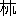

| ファウスト | |
| ゲーテ ヨハン・ヴォルフガング・フォン | |
| (2015) | |
ファウスト
ヨハン・ヴォルフガング・フォン・ゲーテ
Johann Wolfgang von Goethe
森鷗外訳
昔我が濁れる目に夙
く浮びしことある
よろめける姿どもよ。再び我前に近づき来たるよ。
いでや、こたびはしも汝達
を捉へんことを試みんか。
我心猶
そのかみの夢を懐かしみすと覚ゆや。
汝達我に薄 る。さらば好し。靄 と霧との中より
５
我身のめぐりに浮び出でて、さながらに立ち振舞へかし。
汝達の列
のめぐりに漂へる、奇
しき息に、
我胸は若やかに揺らるゝ心地す。
楽しかりし日のくさ〴〵の象
を汝達は齎
せり。
さて許多 のめでたき影ども浮び出づ。
10
半ば忘られぬる古き物語の如く、
初恋も始ての友情も諸共に立ち現る。
歎は新になりぬ。訴は我世の
蜘手
なし迷へる歩
を繰り返す。
さて幸 に欺かれて、美しかりぬべき時を失ひ、
15
我に先立ちて去
にし善
き人等の名を呼ぶ。
我が初の数闋
を歌ひて聞せし霊
等は
後の数闋をば聞かじ。
親しかりし団欒
は散
けぬ。
あはれ、始て聞きつる反響は消えぬ。
20
我歎は知らぬ群の耳に入る。
その群の褒むる声さへ我心を傷ましむ。
かつて我歌を楽み聞きし誰彼
猶世にありとも、そは今所々に散りて流離
ひをれり。
昔あこがれし、静けく、厳 しき霊の国をば
25
久しく忘れたりしに、その係恋
に我また襲はる。
我が囁く曲は、アイオルスの箏
の如く、
定かならぬ音
をなして漂へり。
我
慄
に襲はる。涙
相踵
いで堕
つ。
厳しき心和 み軟げるを覚ゆ。
30
今我が持
たる物遠き処にあるかと見えて、
消え失せつる物、我がためには、現前せる姿になれり。
座長。座附詩人。道化方。
座長
これまで度々難儀に逢った時も、
わたくしの手助になってくれられた君方二人
だ。
こん度の企 がこの独逸国でどの位成功するだろうか、
35
一つ君方の見込が聞きたいのだがね。
殊に見物は自分達が楽んで、人にも楽ませようとしているのだから、
わたくしもなるたけ見物の気に入るようにしたいのです。
もう小屋も掛かり、舞台も出来ていて、
みんながさあ、これからがお慰 だと待っている。
40
誰も彼もゆったりと腰を落ち着けて、眉毛を吊
るし上げて、
さあ、どうぞびっくりするような目に逢わせて貰いたいと思っている。
わたくしだって、どうすれば大勢の気に入ると云うことは知っている。
しかしこん度程どうして好いか分からないことはないのです。
何も見物が最善のものに慣れていると云うのではない。
45
ですが、兎に角いろんな物を恐ろしく沢山読んでいるのですな。
何もかも新らしく見えて、そして意義があって
人の気に入るようにするには、どうしたら好いでしょう。
なぜそう云うかと云うと、わたくしは一番大当りがさせて見たい。
見物が人波を打ってこの小屋へ寄せて来て、
50
狭い恵の門口を通ろうとして、何度押し戻されても
また力一ぱいに押し押しして、
まだ明るいうちに、四時にもならないうちに、
腕ずくで札売場の口に漕ぎ附けて、
丁度饑饉の年に麪包 屋の戸口に来るように、
55
一枚の入場券を首に賭けても取ろうとする、
そう云う奇蹟を、一人々々趣味の違う見物の群に起させるのは
詩人だけですね。どうぞ、君、こん度はそんな按排
に願いたいですな。
詩人
いや。どうぞあの見物と云う、色変りの寄合勢の事を
言わないで下さい。あれを見ると、詩人の霊 は逃げるのです。
60
あの、厭
がるわたくし共を、無理に渦巻に巻き込もうとする
人の波を、わたくし共の目に見せないように隠して下さい。
それと違って、詩人だけに清い歓喜の花を咲かせて見せる、
静かな天上の隠家へ、わたくしを遣って下さい。
あそこでは愛と友情とが、神々の手で、
65
わたくし共の胸の祝福を造って、育ててくれるのです。
あそこで胸の底から流れ出るのを、
口が片言のようにはにかみながら囁いて見て、
どうかすると出来損ね、ひょいとまた旨く出来る。
それをあらあらしい刹那の力が呑み込んでしまうのです。
70
どうかすると、何年も立って見てから、
やっと完璧になることもあります。
ちょいと光って目立つものは一時のために生れたので、
真
なるものが後の世までも滅びずにいるのですね。
道化方
後の世がどうのこうのと云うことだけはわたくしは聞きたくありませんな。
75
わたくしなんぞが後の世に構っていた日には、
誰が今の人を笑わせるでしょう。
みんなが笑いたがっているし、また笑わせなくてはならないのです。
役者にちゃんとした野郎が一匹いると云うのは、
兎に角一廉 の利方だと、わたくしには思われます。
80
まあ、気持の好い調子に遣る男でさえあれば、
人の機嫌を気に掛けるような事はありますまい。
そう云う男は、見物の頭数を多くした方が、
却て感動させ易いから、その方を望むのです。
まあ、あなたは平気で、しっかりした態度を示して、
85
空想に、あるだけの取巻を附けて聞せて下さるですな。
取巻は理性に悟性に感覚に熱情、なんでも結構でさあ。
だが、おどけと云う奴を忘れてはいけませんぜ。
座長
なんでも出来事の多いが好いのですよ。
みんなは見に来るのです。見ることが大好きなのです。
90
見物が驚いて、口を開いて見ているように、
目の前でいろんな事が発展して行くようにすれば、
多数が身方になってくれることは受合です。
そうなればあなたは人気作者だ。
なんでも大勢を手に入れるには、嵩 でこなすに限る。
95
そうすれば、その中から手ん手に何かしら捜し出します。
沢山物を出して見せれば何かしら見附ける人の数が殖える。
そこで誰も彼も満足して帰って行くのですね。
纏
った筋の狂言でも、なるたけ砕いて見せて下さい。
こう骨董羹 と云う按排に、お手際で出来そうなものだ。
100
骨の折れない工夫で、骨の折れないお膳立をするのです。
縦
しやあなたの方で纏った物を出したところで、
どうせ見物はこわして見るのですからな。
詩人
いや。そんな細工がどの位悪いか、あなた方には分からないのです。
真の芸術家にどの位不似合だか、分からないのです。
105
その様子では、いかがわしい先生方の白人為事
が、
あなた方の所では、金科玉条になっていると見えますね。
座長
そんな悪口を言ったって、わたくしはおこらない。
なんでも男が為事を成功させようと云うには、
一番好い道具を使うと云うところに目を附けるのです。
110
思って御覧なさい。あなた方は軟い木を割る役だ。
誰を相手に書くのだか、目を開
いて見て下さい。
退屈まぎれに来る客もあれば、
えらい馳走に逢った跡で、腹ごなしに来る客もある。
それから一番の困りものは
115
新聞雑誌を読み厭
きてから遣って来る。
仮装舞踏へでも行くように、うっかりして駆け附ける。
その足を早めるのは、物見高い心持ばかりです。
女客と来た日には、顔とお作りを見せに来て、
給金なしで一しょに芸をしてくれる。
120
一体あなた方は詩人の高みでなんの夢を見ているのです。
大入がなんであなた方は嬉しいのです。
まあ、その愛顧のお客様を近く寄って御覧なさい。
半分は冷澹で半分は野蛮です。
芝居がはねたら、トランプをしようと云うのもあれば、
125
娼妓の胸に食っ附いて、一夜を暴れ明かそうと云うのもある。
そうした目的であって見れば、優しい詩の女神
達に
ひどく苦労をさせるのは、馬鹿正直ではないでしょうか。
まあ、わたくしの意見では、たっぷり馳走をするですな。
どこまでもたっぷり遣るですな。それならはずれっこなしだ。
130
どうせ人間を満足させるわけには行かないから、
ただ烟
に巻いて遣るようにすれば好い。
おや。どうしたのです。感心したのですか。せつないのですか。
詩人
いや、そう云うわけならあなたの奴隷を外から連れておいでなさい。
天が詩人には最上の権を、
135
人権を与えている。
それをあなたのために擲
たなくてはならないのですか。
一体詩人はなんでみんなの胸を波立たせるのです。
なんで地水火風に打ち勝つのです。
その胸から迫り出て、全世界をその胸に
140
畳み込ませる諧調でないでしょうか。
自然は無際限なる長さの糸に、
意味もなく縒
を掛けて紡錘
に巻くに過ぎない。
万物の雑然たる群は
不精々々に互に響を合せているに過ぎない。
145
そのいつも一様に流れて行く列を、
節奏が附いて動くように、賑やかに句切るのは誰ですか。
一つ一つに離れたものを総ての秩序に呼び入れて、
調子が美しく合うようにするのは誰ですか。
誰が怒罵号泣の暴風 を吹き荒 ませるのです。
150
夕映を意味深い色に染め出すのです。
誰が恋中の二人
が歩む道のゆく手に
美しい春の花を蒔
くのです。
誰が種々の功
を立てた人のために
見栄 のしない青葉を誉の輪飾に編むのです。
155
誰がオリンポスの山を崩さずに置いて、神々を集わせるのです。
人間の力が詩人によって啓示せられるのではありませんか。
道化方
そんならあなたその美しい力を使って、
詩人商売をお遣りなさるが好いでしょう。
まあ、ちょいと色事をするようなものでしょうね。
160
ふいと落ち合って、なんとか思って足が留まる。
それから段々縺
れ合って来る。
初手は嬉しい中になる。それから傍
が水をさす。
浮れて遊ぶ隙もなく、いつか苦労が出来て来る。
なんの気なしでいるうちに、つい小説になっている。
165
狂言もこんな風に為組
んで見せようじゃありませんか。
充実している人生の真ん中に手を下
すですね。
誰でも遣っている事で、そこに誰でもは気が附かぬ。
あなたが攫
み出して来れば、そこが面白くなるのですね。
誰彼となく旨がって、為めになると思うような、
170
極上の酒を醸すには、
交った色を賑やかに、澄んだ処を少くして、
間違だらけの間
から、真理の光をちょいと見せる。
そうすればあなたの狂言を、青年男女の選抜
が
見物しに寄って来て、あなたの啓示に耳を欹 てるのです。
175
そうすれば心の優しい限の人があなたの作から
メランコリアの露を吸い取るのです。
そうすれば人の心のそこここをそそって、
誰の胸にも応えるのです。
そう云う若い連中なら、まだ笑いでも泣きでもする。
180
はずんだ事がまだ好
で、見えや形を面白がる。
出来上がった人間には、どんなにしても気には入らない。
難有
く思うのは、出来掛かっている人間です。
詩人
なるほどそうかも知れないが、そんならこのわたくしが
やはり出来掛かった人間であった時を返して下さい。
185
内から迫り出るような詩の泉が
絶間なく涌いていた、あの時です。
霧に世界は包まれていて、
含
める莟
に咲いての後の奇蹟を待たせられた時です。
谷々に咲き満ちている
190
千万の草の花をわたくしが摘んだ時です。
その頃わたくしは何も持っていずに満足していた。
真理を求めると同時に、幻を愛していたからです。
どうぞわたくしにあの時の欲望、
あの時の深い、そして多くの苦痛を伴っている幸福、
195
あの時の憎の力や愛の力を、耗
らさずに返して下さい。
わたくしの青春をわたくしに返して下さい。
道化方
いや。その青春のなくてならない場合は少し違います。
戦場で敵にあなたが襲われた時、
愛くるしい娘の子が両の腕 に力を籠めて、
200
あなたの頸に抱き附いた時、
先を争う駆足に、遥か向うの決勝点から
名誉の輪飾があなたをさしまねいた時、
旋風にも譬
えつべき、烈しい舞踏をした跡で、
宴 に幾夜をも飲み明そうとする時などがそれです。
205
それとは違って、大胆に、しかも優しく
馴れた音じめに演奏の手を下して、
自分で極めた大詰へみやびやかな迷の路を
さまよいながら運ばせる、
それはあなた方、老錬な方々のお務です。
210
そしてわたくしどもはそのあなた方にも劣らぬ敬意を表します。
老いては子供に返るとは、世の人のさかしらで、
真の子供のままでいるのが、老人方の美点です。
座長
いや。議論はいろいろ伺ったが
この上は実行が拝見したいものですね。
215
あなた方のように、お世辞を言い合っている程なら、
その隙に何か役に立つ事が出来そうなものです。
気乗のした時遣りたいなどと、云っているのは駄目でしょう。
気兼をして遅疑する人には、調子が乗っては来ますまい。
詩人と名告 って出られた以上は、
220
兵を使うと同じように、号令で詩を使って下さい。
わたくしどもの希望は御承知の通だ。
なんでも強い酒が飲ませてお貰
申したい。
どうぞ早速醸造に掛かって下さい。
きょう出来ないようなら、あすも駄目です。
225
一日だって無駄に過してはいけません。
髻
を攫んで放さぬように、出来そうな事件を
決心がしっかり押えなくてはいけない。
またその決心がある以上は、押えたものを放しはなさるまい。
そこで厭でも事件は運んで行くですね。
230
御承知の通この独逸の舞台では
誰でも好な事を遣って見るのです。
ですからこん度の為事では
計画や道具に御遠慮はいらない。
上明 も大小ともにお使い下さい。
235
星も沢山お光らせなすって宜しい。
水為掛
も好い。火燄
も好い。岩組なども結構です。
鳥もお飛ばせなさい。獣もお駈けらせなさい。
造化万物何から何まで
狭い舞台にお並べ下さい。
240
さて落ち着きはらって、すばしこく、天からこの世へ、
この世から地獄へと事件を運ばせてお貰い申しましょう。
主。天宮の衛士。後にメフィストフェレス。
天使の長三人進み出づ。
ラファエル
昔のままの節博士
で、同胞
の星の群と、
日は合唱の音
を立てている。
そして霹靂 の歩 をして
245
極
まった軌道を行く処まで行く。
天使の中で誰一人その理
を知ってはいぬが、
それを見たばかりで、天使は皆強みを覚える。
天地
のなりいでた日に較べても、不可思議な、
崇高な万物は同じ荘厳を保っている。
250
ガブリエル
そして早く、不可思議に早く
美しい大地がみずから回転している。
天国のような明るさと
深い、恐ろしい夜とが交代する。
巌石の畳み成せる深い底から
255
幅広い潮流をなして海は泡立つ。
その巌も海も、永遠に早い軌道の歩
に
引き入れられて、共に廻
るのである。
ミハエル
そして海から陸
へ、陸から海へ、
暴風は怒号して往き、怒号して返る。
260
その往いては返る競争で、吹き過ぐる周囲
に
深甚なる作用の連鎖が作られる。
ともすれば雷電
の破壊の焰が
道のゆくてに燃え上がる。
しかし、主よ、御身の使徒等は
265
御身の世の穏かなる推移を敬っている。
三人共に
天使の中で誰一人御身の心を知ってはいぬが、
これを見たばかりで、天使は皆強みを覚える。
そして御身が造れる一切の崇高な万物は
天地 のなりいでた日と同じ荘厳を保っている。
270
メフィストフェレス
いや、檀那。お前さんがまた遣って来て、
こちとらの世界が、どんな工合になっているか見て下さる。
そして不断わたしをも贔屓
にして下さるのだから、
わたしもお前さん所
の奉公人に交って顔を出しました。
御免なさいよ。ここいらの連中が冷かすかも知れないが、
275
わたしには気取った言草
は出来ない。
わざと気取って見たところでお前さんが笑うだけだ。
それとも笑うなんと云うことはもう忘れていなさるかしら。
奉公人達の云う日だの星だのの事はわたしは知らない。
わたしは人間と云う奴の苦むのを見ているだけだ。
280
人間と云うこの世界の小さい神様は今も同じ性
に出来ていて、
それこそ天地
のなりいでし日と同じ気まぐれを保っています。
お前さんがあいつ等に天の光の影をお遣りなさらなかったら、
も少しは工合好く暮して行くのでしょうがね。
人間はあれを理性と謂ってどうそれを使うかと云うと、
285
どの獣よりも獣らしく振舞うために使うのです。
まあ、お前さんの前だが、飛足のある虫の中の
蛼
と云う奴のように
飛んだり跳ねたりばっかりしていて、
直ぐ草の中に潜っては昔のままの歌を歌う。
290
草の中だけで我慢していてくれれば結構だが、
どのどぶにも鼻を衝っ込みゃあがるのですよ。
主
お前の云うことはそれだけかい。
いつでも苦情ばかり言いに来るのか。
いつまで立っても下界の事がお前には気に入らないのか。
295
メフィストフェレス
そうですね、檀那。わたしにはいつも随分厭
に見えますね。
人間と云う奴が毎日苦んでいるのを見ると、気の毒になってしまう。
わたしでさえもう揶揄
って遣るのが厭になる位です。
主
ふん。お前ファウストを知っているか。
メフィストフェレス
あのドクトルですかい。
主
うん。己
の子分だ。
メフィストフェレス
さようさ。あいつは妙な行方 でお前さんに奉公しています。
300
あの変人はこの世の物を飲みも食
いもしませんね。
湧き立つ胸のごたごたが遠くの方へとあいつをこがれさせる。
自分が変だと云うことを半分知っているのでしょう。
天の一番美しい星を取ろうとしているかと思えば、
地の一番深い楽 をも極めようとしています。
305
そして遠い望も近い望も、
あいつの湧き返っている胸に満足を与えないのですね。
主
なるほど、あれは今の処で夢中で奉公しているが、
早晩
心の澄む境へ己が導いて行って遣る。
見い、植木屋でも、緑に芽ぐむ木を見れば、
310
翌年は花が咲き実がなるのを知るではないか。
メフィストフェレス
どうです、檀那、何を賭けますか。あいつに裏切をさせて、
お前さんさえ承知なさりゃあ、
そろそろわたしの道へ引き込んで遣りたいのですが。
主
それはあれが下界に生きている間は、
315
お前がどうしようと、己は別に止めはしない。
人は務めている間は、迷うに極まったものだからな。
メフィストフェレス
それは難有
うございます。なぜと云うに、死人
なんぞに
構っているのは、わたしゃあ本
から厭ですから。
わたしゃあふっくりした、色沢 の好い頰っぺたが一番好 だ。
320
亡者が来りゃあわたしゃあ留守を使って遣ります。
猫だって死んだ鼠は相手にしませんからね。
主
宜しい。そんならお前に任せて置く。
あの男の霊
を、その本源から引き放して、
お前にそれが出来るなら、
325
お前の道へ連れて降りて見い。
だがな、いつかはお前恐れ入って、こう云うぞよ。
「善
い人間は、よしや暗黒な内の促
に動されていても、
始終正しい道を忘れてはいないものだ」と云うぞよ。
メフィストフェレス
好うがす。ただ少しの間の事です。
330
この賭に負ける心配はない積りだ。
わたしの思い通りになったら、
どうま声で勝鬨
を揚げさせて下さい。
あの先生に五味を食わせて見せます。旨がって食います。
わたしの姪の、あの評判の蛇のように。
335
主
好い。今度もお前の気儘
にさせて遣る。
己は本からお前達の仲間を憎んだことはない。
物を否定する霊
どもの中で、
己の一番荷厄介にしないのは横着物だ。
一体人間のしている事は兎角たゆみ勝ちになる。
340
少し間が好いと絶待的に休むのが好きだ。
そこで己は刺戟したり、ひねったりする奴を、
あいつ等に附けて置いて、悪魔として為事をさせるのだ。
さてお前達、本当の神の子等はな、
生々 した、豊かな美しさを見て楽むが好い。
345
永遠に製作し活動する生々
の力が、
愛の優しい埒
をお前達の周囲
に結
うようにしよう。
お前達はゆらぐ現象として漂っているものを、
持久する思惟
で繫ぎ止めて行くが好い。
（天は閉ぢ、天使の長等散ず。）
メフィストフェレス（一人。）
己は折々あのお爺 いさんに逢うのが好 だ。
350
そこで附合
がまずくならないように気を附けている。
悪魔にさえあんな風に人間らしく話をしてくれるのは、
大檀那の身の上では感心な事さね。
狭き、ゴチック式の室の、高き円天井の下に、ファウストは不安なる態度にて、卓を前にし、椅子に坐してゐる。
ファウスト
はてさて、己は哲学も
法学も医学も
355
あらずもがなの神学も
熱心に勉強して、底の底まで研究した。
そうしてここにこうしている。気の毒な、馬鹿な己だな。
そのくせなんにもしなかった昔より、ちっともえらくはなっていない。
マギステルでござるの、ドクトルでござるのと学位倒れで、
360
もう彼此十年が間、
弔り上げたり、引き卸したり、竪横十文字に、
学生どもの鼻柱を撮
まんで引き廻している。
そして己達に何も知れるものでないと、己は見ているのだ。
それを思えば、ほとんどこの胸が焦げそうだ。
365
勿論世間でドクトルだ、マギステルだ、学者だ、牧師だと云う、
一切の馬鹿者どもに較べれば、己の方が気は利いている。
己は疑惑に悩まされるようなことはない。
地獄も悪魔もこわくはない。
その代り己には一切の歓喜がなくなった。
370
一廉
の事を知っていると云う自惚
もなく、
人間を改良するように、済度するように、
教えることが出来ようと云う自惚もない。
それに己は金も品物も持っていず、
世間の栄華や名聞も持っていない。
375
この上こうしていろと云ったら、狗
もかぶりを振るだろう。
それで霊
の威力や啓示で、
いくらか秘密が己に分かろうかと思って、
己は魔法に這入った。
その秘密が分かったら、辛酸の汗を流して、
380
うぬが知らぬ事を人に言わいでも済もうと思ったのだ。
一体この世界を奥の奥で統
べているのは何か。
それが知りたい。そこで働いている一切の力、一切の種子
は何か。
それが見たい。それを知って、それを見たら、
無用の舌を弄せないでも済もうと思ったのだ。
385
ああ。空
に照っている、満ちた月。
この机の傍で、己が眠らずに
真夜中を過したのは幾度だろう。
この己の苦
をお前の照すのが、今宵を終
であれば好いに。
悲しげな友よ。そう云う晩にお前は
390
色々の書物や紙の上に照っていた。
ああ。お前のその可哀らしい光の下に、
高い山の背
を歩くことは出来まいか。
霊
どもと山の洞穴のあたりを飛行
することは出来まいか。
野の上のお前の微かな影のうちに住むことは出来まいか。
395
あらゆる知識の塵の中から蟬脱
して、
お前の露を浴びて体を直すことは出来まいか。
ああ、せつない。己はまだこの牢屋に蟄
しているのか。
ここは咀
われた、鬱陶しい石壁の穴だ。
可哀らしい空 の光も、ここへは濁って、
400
窓の硝子画を透って通うのだ。
この穴はこの積み上げた書物で狭められている。
蠧魚
に食われ、塵埃に掩
われて、
円天井近くまで積み上げてある。
それに煤けた見出しの紙札が挿 んである。
405
この穴には瓶や缶が隅々に並べてある。
色々の器械が所
狭
きまで詰め込んである。
お負けに先祖伝来の家具までが入れてある。
やれやれ。これが貴様の世界だ。これが世界と云われようか。
貴様はこんな処にいて、貴様の胸の中で心の臓が
410
窮屈げに艱
んでいるのを、まだ不審がる気か。
あらゆる生
の発動を、なぜか分からぬ苦
が
障礙
するのを、まだ不審がる気か。
神は人間を生きた自然の中へ
造り込んで置いてくれたのに、
415
お前は烟と腐敗した物との中で、
人や鳥獣
の骸骨に取り巻かれているのだ。
さあ、逃げんか。広い世界へ出て行かぬか。
ここにノストラダムスが自筆で書いて、
深秘 を伝えた本がある。
420
貴様の旅立つ案内には、これがあれば足りるではないか。
そして自然の教を受けたなら、
星の歩
がお前に知れて、
霊
が霊に語るが如くに、
貴様の霊妙な力が醒めよう。
425
いや。こうして思慮を費して、
この神聖な符を味っていたって駄目だ。
こりゃ。お前達、霊
ども。お前達は己の傍にさまよっていよう。
己の詞
が聞えるなら、返事をせい。
（書を開き、大天地の符を観る。）
や。これを見ると、己のあらゆる官能に
430
忽
ちなんとも言えぬ歓喜が漲
る。
青春の、神聖なる生の幸福が新に燃えるように
己の脈絡や神経の中を流れるのが分かる。
この符を書いたのは神ではあるまいか。
己の内生活の騒擾 を鎮めて、
435
歓喜を己の不便
な胸のうちに充たし、
己の身を取り巻いている自然の、一切の力を、
微妙に促して暴露させて見せるのはこの符だ。
己が神ではあるまいか。不思議に心が澄んで来る。
この符の清浄な画 を見ているうちに、
440
活動している自然が、己の霊
のために現前する。
今やっと思い当るのは、古
の賢人の詞だ。
「霊
の世界は鎖されたるにあらず。
汝が耳目壅
れり。汝が心胸死せり。
起て、学徒。誓ひて退転せず、
445
塵界の胸を暁天の光に浴せしめよ。」
（符を観る。）
一々の物が全体に気息を通じて、
物と物とが相互にそれぞれ交感し合っている。
黄金
の釣瓶
を卸してはまた汲む如く、天上の
諸 の力が降 ってはまた昇る。
450
その総てが、祝福の香を送る翼を振って、
天から下界へ通
って来て、
諧調をなして万有のうちに鳴り渡る。
なんと云う壮観だろう。だが、惜むらくは見物
たるに過ぎぬ。
ああ、無辺際なる自然よ。己はどこを攫 まえよう。
455
一切の物の乳房等よ。己はどれを手に取ろう。
天地の命根の通っている、一切の生
の泉等よ。
枯れ衰えた己の胸のあこがれ迫る泉等よ。汝達は湧いている。
汝達は人に飲ませている。それに己は徒
に渇せねばならぬか。
（憤慨せる様にて書を飜し、地の精
の符を観る。）
はて、この符の己に感じる工合はよほど違う。
460
こりゃ、地の精。お前は大ぶ己に近い。
もう己の力が加わって来るらしい。
もう新しい酒に酔
ったような気がする。
危険を冒して世の中に出て、
下界の苦痛をも、下界の幸福をも受け、
465
暴風に逆
って奮闘し、沈まんとする舟のきしめきにも
逡巡
しない勇気を身に覚える。
はあ。己の頭の上に雲が涌いて来た。
月の光が隠れてしまった。
燈火も見えなくなった。
470
湯気のようなものが立つ。己の頭の周囲
に
稲妻のように赤い燄
が閃く。円天井から
陰森の気が吹き卸して来て、
己の身を襲う。
己は感じる。お前、身 の辺 に漂っているな。招き寄せた霊奴 。
475
形を顕せ。
はあ。己の胸の底へ引き弔
るようにひびく。
新しい感じに
あらゆる己の官能が搔き乱される。
己の心を全くお前に委ねたように感じる。
480
形を顕せ。形を顕せ。己の命を取られても好い。
（本を手に取り、地の精の呪文を深秘なる調子にて唱ふ。赤き燄燃え立ちて、精霊燄の中に現る。）
霊
己を呼ぶのは誰だ。
ファウスト（顔を背向
く。）
気味の悪い姿だな。
霊
お前は長い間己の境界に、吸引の力を逞
ゅうして、
強く己を引き寄せたな。
そしてどうする。
ファウスト
ああ、せつない。己はもう堪えられぬ。
485
霊
お前はと息を衝きながら己に目
のあたり逢って、
己の声を聞き、己の顔を見ようと願う。
お前の霊
の願
が己を引き寄せている。
さあ、ここに来ている。なんと云うけちな恐怖が
超人を以て居 るお前を襲っているのだ。霊の叫 はどこにある。
490
自分だけの世界を造って、それを負うて、
培
うた胸、己達霊どもと同じ高さの位置に立とうと、
歓喜の震
を以て張った胸はどこにある。
己に声を聞せたファウスト
力一ぱい己に薄 って来たファウストはどこにいる。
495
その男がお前か。己の息に触れたばかりで、
性命の底から震い上がって、
臆病にも縮んでいる虫がその男か。
ファウスト
ああ。燄の姿のそちを見て、なんの己がたじろくものか。
己だ。ファウストだ。お前達の仲間だ。
500
霊
生
の流
に、事業の暴風
に
身を委ねて降りては昇る。
かなたこなたへ往いては返る。
産
の褥
、死の冢穴
。
常世 の海原。
505
経緯
の糸の交
。
燃ゆる命。
かくて「時」のさわ立つ機を己は織る。
神の生ける衣
を織る。
ファウスト
広い世界を飛びめぐる忙しい霊 よ。
510
己はお前をどれ程か親しく思っているぞ。
霊
いや。お前に分かる霊にこそお前は似ている。
己には似ておらん。（消ゆ。）
ファウスト（挫け倒る。）
お前には似ておらんと云うか。
そんなら誰に似ている。
515
神の姿をそのままに写された己だ。
それがお前にさえ似ないと云うのか。
（戸を敲
く音す。）
ああ、死だ。分かっている。あれは内の学僕だ。
己の最上の幸福が駄目になる。
これ程の顕現 の満ち満ちている刹那を、
520
あの抜足をして歩くような乾燥無味な男が妨げるのか。
（ワグネル寝衣を著、寝る時被る帽を被り、手に燈を取て登場。ファウスト不機嫌らしく顔を背向
く。）
ワグネル
御免下さいまし。あなたの御朗読をなさるのが聞えましたので、
おお方グレシアの悲壮劇をお読みになるのだろうと存じました。
わたくしも少し覚えて得
をいたしたいと存じます。
なんでも当節はそう云うことは受 が好いのでございます。
525
誰やらが申すのを承りましたが、
俳優は牧師の師匠になっても宜しいと申すことで。
ファウスト
それは牧師が俳優であったらそうであろう。
追々そんな風になるまいものでもない。
ワグネル
わたくしのように研究室の中に縛られていて、
530
世間を見るのは、やっと休日に
遠い処から遠目金で見るような事では、
どうして言論で世間を説き動すことが出来ましょう。
ファウスト
それは君が自分で感じていて、それが肺腑から流れ出て、
聞いているみんなの心を
535
根強い興味で引き附けなくては、
世間を擒
にすることは出来ない。
そんなにして据わっていて、膠
で接
ぎ合せて、
人の馳走の余物で骨董羹
を拵えて、
君の火消壺の中から
540
けちな火を吹き起しても、
それでは子供や猿どもでなくては感心はしない。
それが望ならそれまでの事だ。
どうせ君の肺腑から出た事でなくては、
人の肺腑に徹するものではない。
545
ワグネル
先生のお詞ですが、演説家は雄弁法で成功します。
どうもその研究が足りないのが、わたくしには分かっています。
ファウスト
いや。成功しようと云うには、正直に遣らなくてはいかん。
鐘大鼓で叩き立てる馬鹿者になってはいかん。
智慧があって、切実な議論をするのなら、
550
技巧を弄せないでも演説は独りでに出来る。
何か真面目に言おうと思う事があるのなら、
なんの詞なんぞを飾るに及ぶものか。
どうかすると君方の演説は人世の紙屑で
上手な細工がしてあって、光彩陸離としていても、
555
それは秋になって枯葉を吹きまくる
湿った風のように気持の悪いものだ。
ワグネル
はいはい。「学芸はとこしえにして、
我等の生
は短し」でございます。
御承知の通り、批評的研究を努めていますと、
560
折々頭や胸がどうかなりはすまいかと気遣われます。
なんでも淵源まで溯って行く
舟筏を得るのは、容易な事ではございません。
半途まで漕ぎ著けたところで、
まあ、我々不便 な奴は死ぬるのでございますね。
565
ファウスト
古文書がなんで一口飲んだだけで
永く渇を止める、神聖な泉のものか。
なんでも泉が自分の霊
から涌いて出
んでは
心身を爽かにすることは出来ない。
ワグネル
はい。先生はそう仰ゃるが、その時代々々の心になって、
570
我々より前に聖賢がこう考えられたと云うことを
見わたして、今日までの大きい進歩を思う程、
愉快な事はございません。
ファウスト
そうさ。天の星までも届く進歩だろうよ。
君に言うがな、過去の時代々々は我等のためには
575
七つの鎖鑰
を施した巻物だ。
君方が時代々々の精神だと云うのも、
それは原来その時代々々が先生等の霊の上に
投写した影を認めるに過ぎない。
そんなわけだから、随分みじめな事がある。
580
君方を一目見て人は逃げ出してしまう。
五味溜か、がらくたを打ち込んで置く蔵か。
高が大為掛
の歴史劇に、
傀儡
の台詞
に相応した
結構な処世訓が添えてある位なものだ。
585
ワグネル
しかし、先生はそう仰ゃいますが、世界ですね、人の性情ですね、
それを誰でも文献の中から少しなりと知り得たいと存じますので。
ファウスト
いや。その知るだの、認識するだのと云う詞の意味だて。
本当に知ってもその本当の事があからさまに言われようか。
それは稀には幾らかの事を知って、
590
おろかにもそれを胸にしまって置かずに、
自分の観た所、感じた所を世俗に明かした人達もあるが、
そう云う人達は磔
にせられたり、焼き殺されたりした。
いや。彼此云ううちに、もう夜が更けた。
今宵は話はこれまでにしよう。
595
ワグネル
はい。わたくしはいつまでも起きていて
こんな風にあなたと高尚なお話がいたしたいのでございますが、
さようなら已
めましょう。明日
は復活祭の初の日でございます。
それを機としてまた二つ三つお話を伺うことにいたしましょう。
わたくしはこれまで随分研究には努力いたしました。
600
学問は大分ある積でございますが、一切の事が知りたいと存じまして。
（退場。）
ファウスト（一人。）
いやはや。いつまでも一縷の望を繫いでいて
心は無用の事物に牽
かれ、
宝を掘ろうと貪る手で、
蚯蚓 に掘り当てて喜んでいるとは、気の毒な事だ。
605
精霊の気が己を囲繞
していたこの室で、
あんな人間の声が響いて好いものか。
しかし下界にありとある人の中の人屑にも、
こん度は己が感謝せずばなるまい。
なぜと云うに、己の見聞覚知 を破壊しようとした
610
絶望の境から、あいつが己を救い出したのだ。
いや。あの顕現
が余り偉大なので、
全く自分が侏儒であるように、己は感じた。
神の姿をそのままに写された己は、
永遠なる真理の鏡に逼 り近づいた積 で、
615
下界の子から蟬脱して
享楽の自己を天の光明のうちに置いていたのに、
己は光の天使にも増して、無礙
自在の力が
既に宇宙の脈のうちを流れ、
創造しつつ神の生 を享けようと、
620
窃
かに企てていたのに、なんと云う罰せられようだ。
雷鳴
のような一言が己をはね飛ばした。
お前に似ようと思うのが、そんなに僭越だろうか。
己はお前を引き寄せるだけの力は持っていたが、
お前を留めて置く力がなかったのだ。
625
想えばあの嬉しかった刹那に、
己は自己をどんなにか偉大に、またどんなにか小さく思っただろう。
お前は残酷にも己を不慥
かな
人間の運命の圏内に衝き戻したな。
誰に己は教を受けよう。何を去り何に就こう。
630
あの内の促
のまにまに動いて好かろうか。
我等の生
の道のゆくてを遮り塞ぐものは、
ああ、我等の受ける苦だけではない。我等のする事業も邪魔だ。
我等の霊
の受けた、最も美しきものの周囲にも、
約束したように無用の夾雑物が来て引っ著く。
635
この世界の善なるものに到達してから前途を見れば、
一層善なるものが、憾
むらくは虚無の幻影になって見える。
生
の我等に与えた美しき感じが
下界のとよみの中で凝り固まってしまう。
不断は空想が大胆な翺翔 を擅 にして、
640
希望に富んだ勢を以て、永遠の境まで拡がっても、
「時」の渦巻に巻き込まれて、狙った幸福が一つ一つ毀れると、
さすがの空想も萎靡
して、狭い空間にせぐくまる。
その時直ぐに心の底に、「憂」と云うものが巣を食って、
ひそやかな痛 の種子を蒔 き、
645
自分も不安らしく身をもがいて、人の安穏と歓喜とを破る。
この憂は種々の仮面
を取り換えて被る。
家になり、地所になり、女房になり、子供になる。
火になり、水になり、匕首
になり、毒になる。
貴様は常にその中 らぬもののために戦慄して、
650
その離れ去らぬもののために泣かなくてはならぬ。
いや。己は切に感ずる。己は神々には似ておらぬ。
塵芥の中に蠢
く蛆
に己は似ているのだ。
その塵芥に身を肥やして、生を偸
んでいるうちに、
道行く人の足に踏まれて、殺されて埋められるのだ。
655
高い壁に沿うて、分類して百にも為切
ってある棚の物が
己の周囲を隘
めているのも、これも塵ではないか。
この紙魚
の世界で、己を窮屈がらせている
器具、千差万別の無用の骨董も塵ではないか。
己の求めているものが、この中で見附けられようか。
660
いつの世、どこの国でも人間が自ら苦んで、
その間に罕
に一人位幸福な奴があったと云うことを、
己に万巻の書の中で読めと云うのか。
空洞
な髑髏奴。なぜ己を睨
んでいる。
お前の脳髄も己のと同じように、昔迷いつつ軽らかな
665
快い日を求め、重くろしい薄明
の中で、興味を以て
真理を追うて、みじめに失敗したと云う外はあるまい。
それからお前達器械だがな、車の輪や櫛の歯のような物、
熨斗
の取手のような物やロラアから出来ている器械だがな、
お前達も己を馬鹿にしているに違ない。己が扉の前に
670
立っていた時、お前達は鍵になってくれるはずであった。
しかし鎖鬚
よりもちぢくれた鬚が生えていても、
鎖鑰
を開
けてはくれなかった。自然はなかなか秘密がっていて、
青天白日にウェエルを脱いで見せてはくれない。
あいつが己の霊
に見せてくれない物を、
槓杆 や螺牡 で開 けて見ることは出来ない。
675
己に用のない古道具奴。お前達は父の手沢
のお蔭でここにいる。
火皿を弔る滑車奴。お前はこの机に濁った燈火がいぶっている限
、
夜な夜な煤けて行くばかりだ。
この少しばかりの物を、疾 っくに売り飛ばせば好かったに、
680
己は重荷のようにそれを背負って汗を搔いている。
貴様の先祖から譲り渡された物を、
貴様が占有するには、更にそれを贏
ち得んではならん。
利用せずに置く物は重荷だ。
刹那が造ったものでなくては、刹那が使うことは出来ない。
685
はてな。なぜ己の目はあそこに食っ附いて離れないだろう。
あの瓶が己の目を引く磁石なのか。
なぜ己の心持が、夜の森を歩く時月が差して来たように、
忽
ちめでたく明るくなって来たのだ。
この取り残された一つの瓶奴。お前を恭しく取り卸しながら、
690
己はお前に会釈をするぞよ。
人智と技術とをお前に対して敬するぞよ。
恵
ある眠薬
の精
奴。
あらゆる隠微な人を殺す諸力を選り抜いた霊液奴。
今この主人 をお前の恵 に逢わせてくれい。
695
お前を見たばかりで、苦痛が軽くなるようだ。
お前の瓶を手に取れば、意欲が薄らいで来るようだ。
己の霊
の潮流が次第々々に引いて行く。
高く湛えた海の上へ、己はさそい出されて、
我足の下には万象の影をうつす水鏡が耀 く。
700
新なる日が新なる岸へ己を呼ぶ。
軽らかに廻る火燄
の車が己を迎える。
灝気
を穿
って新しい道を進んで、
浄い事業の新しい境界へとこころざす
心の支度が出来たように己は感ずる。
705
こんな高遠な生活、こんな神々の歓喜のような歓喜。
まだ蛆でいる貴様になんの功があってこれを受けるのだ。
好い。優しい下界の日の光に、
貴様は決然として背を向けるが好い。
誰も畏れて避けて通る門の戸を、
710
押し開けて入る勇気があるなら行け。
空想が自己を苦痛の地獄に堕す
あの暗い洞窟の前におののかず、
狭い入口に地獄の総ての火が燃え立つ
あの狭隘の道を目ざして、
715
よしや誤って虚無の中に滅し去る虞
があろうとも、
晴やかな気分でこの一歩を敢てして、
神々の位を怖れぬ男児の威厳を、
事実の上に証して見せるなら、今がその時だ。
さあ、水晶の浄らな盃、ここへ降りて来い。
720
長い年月の間お前の事は忘れていたが、
今その箱の中から出てもらおう。
己の先祖が祝賀の宴を張った時には、
お前は光り耀いていて、一人
が一人
へ差す毎に、
蹙 んだ客の顔色も晴やかになったものだ。
725
己も若かった昔の夜のうたげを覚えている。
お前の上に美しく鏤
めてある、種々の絵摸様を、
飲む人の務
として、詩の句で説き明かして
さて一口に中の酒を飲み干したものだ。
己はお前を今日に限って隣の客にも廻さず、
730
お前の絵模様に拙い才を試みようともせぬ。
ここにあるのは早く人を酔わせる酒だ。
己がかつて選んでかつて醸した
この褐色の液
がお前の中
に注
がれるのだ。
さあ、この最後の杯を挙げて、己は心から
735
はればれしく寿をこの「暁」に上
るのだ。
（ファウスト杯を口に当つ。）
鐘の響、合唱の歌。
歌う天使の群
クリストはよみがへりたまひぬ。
身をも心をも損
ふべき、
緩やかに利く、親譲
の
害毒 のまつはれたる、
740
死ぬべきもの等
に喜
あれ。
ファウスト
や。己の口から杯を強いて放させたあの声は
なんと云う深いそよめき、高い音色であろう。
それにあの鈍い鐘の音は、
もう復活祭の始まる時刻を知らせるのか。
745
さてはあの諸声は、昔冢穴の闇の夜に
天使の唇から響いて、新しき教の群に
固き基を与えた、慰藉
多き詞であったか。
歌う女の群
われ等、主
にまつろへる女子
は
香料を
750
み体
に塗りまつり、
臥させまつりぬ。
巾
をもて、紐をもて
清らに裹
みまつりぬ。
さるを、あなや、主 の
755
こゝにいまさぬ。
歌う天使の群
クリストはよみがへりたまひぬ。
いたましき、
浄からしめ、鍛ひ錬る
業を修 し卒へたまへる、
760
物を愛します主よ。聖にいませ。
ファウスト
お前達、天の声等はなぜ力強く、しかも優しく
己をこの塵の中に覓
めるのだ。
情の脆い人等の住むあたりに響き渡れば好いに。
なるほど使命の詞は聞える。しかし己には信仰がない。
765
奇蹟は信仰の愛子
だ。
あの恵ある便
を伝える声のする、
あの境界へは己は敢て這入ろうとは努めぬ。
しかし小さい時からあの声を聞き慣れていたので、
あの声が今己を生 に呼び戻したのだ。
770
昔は沈んだ安息日の静けさの中に、
ゆくりなく天の愛の接吻が己にせられた。
その時意味ありげに、ゆたかな鐘の音が聞えて、
己の禱
は熱した受用
であった。
その時恵 ある不可思議な係恋 が
775
己を駆って、森の中、野のほとりへ行かせた。
そして千行の熱涙の下
ると共に、
己のために新しい世界が涌出すように思った。
面白い遊、春の祭の自由な幸福を、
あの歌が青春に寄与したものだ。
780
そう云う追憶が子供のような感情で、
今己の最後の仮初
ならぬ一歩を引き留めたのだ。
お前達、優しい天
の歌よ、好いから響き渡ってくれい。
ああ。涙が涌く。下界は己を取り戻した。
歌う徒弟の群
埋められたまひぬる、
785
生きて気高くまします主
は、
早く厳
かに
み空
高く升
らせ給ひしか。
なり出づるを楽む心もて
物造る喜 を今し享けんとやし給ふ。
790
あはれ、悲しくも我等は
地
の胸に縋
りて、かくぞ世にある。
我等教子の友を、主
は
歎きつゝこゝに残りをらしめ給ひぬ。
あはれ、師の君よ。
795
おん身の幸に我等は泣く。
歌う天使の群
物を朽ち壊
れしむる地
の膝を
立ち離れつゝ、主
はよみがへりましぬ。
汝達
は喜びて
絆 を断て。
800
行
もて主
を称へまつり、
主
に愛を捧げまつる、
同胞
めき斎
に就き、
み教を弘めつゝ旅寐し、
来 ん世の喜 を知らする汝達よ。
805
師の君は汝達に近くおはす。
師の君は汝達のためにいます。
さま〴〵の散歩する人出で行く。
職工の徒弟数人
なぜそっちへ出て行くのだい。
同じ徒弟の他の群
おいら達は猟師茶屋へ行くのだ。
初の数人
おいら達は擣屋 の方へ行くのだ。
810
徒弟の一人
それより河岸
の茶屋の方が好いじゃないか。
第二の徒弟
あっちは途中がまるで詰まらないぜ。
第二の群
お前はどうする。
第三の徒弟
おいらはみんなと行く。
第四の徒弟
みんなお城の茶屋まで登って行けば好
いになあ。
あそこが女も一番好いのがいるし、ビイルも旨い。
815
それに喧嘩だって面白い奴が出来るのだ。
第五の徒弟
人を馬鹿にしていやがらあ。
また背中をなぐられるのかい。三度目になるぜ。
己はあんなところへは行
かねえ。思ってもぞっとする。
下女
わたし厭 になっちまうわ。町へ帰ろうかしら。
820
第二の女
まあ、あそこの柳の木のとこまで行って御覧よ、来ているから。
初の下女
来ていたってなんにもなりゃしないわ。
きっとわたしには構わないで、お前と並んで歩いて、
踊場へ行
けば、お前とばかし踊るのだから。
お前が面白くったって、わたしにはなんにもならないわ。
825
第二の女
なに、きょうはひとりじゃなくってよ。
そら、あの髪の綺麗に縮
れた人ね。あれと来ると云ったわ。
書生
やあ。気持の好い、活潑な歩きようをしているなあ。
君、来給え。あいつ等の行く方へ附いて行
こう。
濃いビイルに強い烟草。
830
それに化粧をした娘と云うのが、己の註文だ。
良家の処女
ちょいと、あの書生さん達を御覧なさいよ。
誰とでも御交際の出来る立派な方なのに
女中の跡なんぞに附いて行
って、
まあ、なんと云う恥曝 しな事でしょう。
835
第二の書生（第一のに。）
おい、君、そんなに駆け出すなよ。あの跡から行く
二人を見給え。気の利いた風をしているだろう。
ひとりは僕の内の隣の娘だ。
あれが僕は好
なんだ。
見給え。あんなにゆっくり歩いている。
840
一しょに行くと云うかも知れない。
第一の書生
廃
し給えよ。僕は窮屈な事は真っ平だ。
早く来給え。切角の旨い山鯨を取り逃がしてしまう。
日曜日に僕達をさすらせるには、
土曜日に箒 を持った手に限る。
845
市民
いや。こん度の市長にはわたくしは感心しませんなあ。
市長だと云うので、日にまし勝手な事をする。
そして市のためにあの人が何をしています。
一日々々と物事がまずくなるばかりじゃありませんか。
なんでも市民はこれまでになく言いなりになって、
850
これまでになく金を沢山出すことになっています。
乞食（歌ふ。）
お情深いお檀那様や、お美しい奥様方。
お召はお立派で、お血色はお宜しい。
どうぞ皆様わたくしを御覧なさりまして、
わたくしの難儀にお目を留められ、お救 なされて下さりませ。
855
こうしてお歎き申すのを、むだになさらないで下さりませ。
お恵
をなさらいでは、お楽
はございません。
皆様のお遊
なさる日が、
わたくしの取入日
でございます。
他の市民
日曜日や大祭日には
860
軍
や鬨の声の話をするのが、わたしは一番好
です。
遠いトルコの国で余所の兵隊同士が
ぶち合っているのが面白いじゃありませんか。
余所にそんな事があるのに、こっちはお茶屋の窓の側で
ビイルを一杯飲み干して、美しい舟の川下へさがるのを眺めて、
865
日が暮れれば楽しく内へ帰って、
難有
い太平の世のためにお禱
をするのですな。
第三の市民
お隣の方の仰ゃる通
です。わたくしもその通さ。
余所の奴等はお互に頭の割りくらをするが好
い。
何もかも上を下へとごった返すが好い。
870
よろず長屋に事なかれですよ。
一老女（良家の娘達に。）
やれやれ。えらいおめかしが出来ましたな。別品揃だ。
誰だって迷わずにはいられますまい。
おや。そんなにつんけんなさらぬが好い。その位で沢山だ。
お前さん達のお望 を愜 えることなら、わたしにも出来る積 だ。
875
良家の娘の一人
アガアテ婆あさん。厭
だよ。あっちへおいで。あんな魔法使
と
往来を一しょに歩いて溜まるもんかね。
聖
アンドレアスの晩に、わたしの御亭主になる人を
見せてくれたには違
ないのだけれど。
他の娘
わたしにも水晶の中に現して見せてくれてよ。
880
なんでも軍人のようで大勢のきつい人の中にいましたの。
それからわたしどこかで逢うかと思って気を附けていても、
まだその人らしいのに逢わなくってよ。
兵卒等
牆壁
聳ゆる
堅固なる城塁よ。
885
傲
り蔑
する
気性ある少女子よ。
占領したきはこの二つ。
艱難困苦は大
なれど、
その成功こそめでたけれ。
890
召募の喇叭
よ。
汝が響くに任す。
歓
の場
へも導け。
戦死の野へも導け。
これぞ競 なる。
895
これぞ命なる。
城塁も落ちざらめや。
少女子も靡
かざらめや。
艱難困苦は大なれど、
その成功こそめでたけれ。
900
かくぞ軍人
は
門出する。
ファウストとワグネルと
ファウスト
春の恵ある、物呼び醒ます目に見られて、
大河にも細流にも、もう氷がなくなった。
谷間には希望の幸福が緑いろに萌えている。
905
冬は老いて衰えて
荒々しい山奥へ引っ込む。
そして逃げながらそこから
粒立った氷の一しぶきを、青み掛かる野へ、
段だらに痕の附くように蒔 いている。
910
しかし日は白い物の残っているのを許さないで、
何物にも色彩を施そうとする。
そこにもここにも製作と努力とが見える。
それでもこの界隈にはまだ花が咲いていない。
その代りに、日は晴衣を着た人を照している。
915
まあ、跡へ戻っておいで。この高みから
町の方を振り返って見ようじゃないか。
空洞
で暗い里の門から、
色々の著物を著た人の群が出て来る。
きょうは誰も誰も日向ぼこりがしたいのだ。
920
あれは皆主
の復活の日を祝っている。
自分達も復活して、
低い家の鬱陶しい間から出たり、
手職や商売の平生の群を離れたり、
頭の上を押さえている屋根や搏風 の下を遁れたり、
925
肩の摩れ合うような狭い巷
や
礼拝堂の尊い闇から出たりして、
外
の明
を浴びているのだから、無理は無い。
あれを見給え。大勢が活潑に
田畑の上へ散らばって行く。
930
川には後先になったり並んだりして、
面白げに騒ぐ人を載せた舟が通っている。
あの一番跡の舟なんぞは、
沈みそうな程人を沢山に載せて出て行くところだ。
あの山の半腹の遠い岨道 にさえ
935
色々な衣裳の彩色が光って見える。
もう村の方からとよめきが聞えて来る。
大勢のためにはここが真の天国なのだね。
「ここでは己も人間だ、人間らしく振舞っても好い」と、
老若ともに満足して叫んでいるのだね。
940
ワグネル
先生。あなたと散歩しますのは、
わたくしの名誉でもあるし、為めにもなります。
一体わたくしは荒々しい事は嫌
でございますから、
御一しょでなくてはこんな所へは来ないでしまいましょう。
ヴァイオリンを弾く音、人のどなる声、王様こかしの丸 の響、
945
どれもどれもわたくしは聞くのが随分つろうございます。
悪魔にでも焚き附けられているように騒ぎ廻って、
それを歌だ、慰
だと云うのでございますからね。
百姓等（菩提樹の下にて。）
舞踏と唱歌と。
羊飼奴
が踊に来ようとめかした。
著て出たジャケツは色変り。紐や飾が附いている。
950
さすが見た目が美しい。
菩提樹のまわりは疾
うから人籠
で、
どいつもこいつも狂ったような踊りよう。
ユホヘ。ユホヘ。
ユホハイザ。ハイザ。ヘエ。
955
胡弓がこんな音をする。
羊飼奴は気が急
いて、駆け附けた。
その時はずみに片肘が
一人
の娘に打
っ衝
かる。
元気な尼っちょが顔を見て云った。
960
「お前さんよっぽどとんまだね。」
ユホヘ。ユホヘ。
ユホハイザ。ハイザ。ヘエ。
そう不行儀では困ります。
それでも始めるくるくる廻り。
965
右の方へ踊って行く。左の方へ踊って行く。
あれあれ上著がみんな飛ぶ。
赤くなったり、熱くなったり。
肘を繫いで、息を衝いて休む。
ユホヘ。ユホヘ。
970
ユホハイザ。ハイザ。ヘエ。
腰にお前の手が障る。
心安立
、馴染振、余り早いと遣り込める。
女夫
約束固めても
騙 した人はたんとある。
975
構わず騙して連れて退く。
菩提樹の方からは。
ユホヘ。ユホヘ。
ユホハイザ。ハイザ。ヘエ。
胡弓の音やら人の声。
980
百姓爺
やあ。先生様でござりますな。好くおいでなさりました。
わたくしどもをお嫌
なさらずに
この人込の中へ
大先生様がいらっしゃる。
このお杯が一番好 い。
985
丁度注いだばかりだ。
どうぞ召し上って下さりませい。
お吭
のお乾
を止めてお上
申すと云うだけではござりません。
これに這入っている酒の一滴ずつを丁寧に
勘定して見ます程、どうぞお命をお延べなさりませい。
990
ファウスト
切角の御親切だから頂戴しましょう。
これでお礼を申して、あなた方の御健康を祝します。
（衆人そのあたりに集ふ。）
百姓爺
ほんとにこう云うめでたい日に、
好うおいでなさりました。
先年わたくしどもが難儀をいたしました時は、
995
あなた様のお恵
にあずかりました。
ここにこうしてながらえているものの中には、
えらい熱を煩っていたのを、
お亡くなりになった老先生様が、
あぶない際 になってから、直して助けて下さりました。
1000
その時分先生様はまだお若かったが、
どの隔離所をもお見まい下された。
どこからも死骸をかつぎ出したのに、
先生様は御無事でおいでなされた。
なんでもあぶない迫門 をお凌 なされた。
1005
人をお助
なされたので、神様が先生様をお助なされた。
一同
先生様も御長寿をなさりまして、
これからも大勢の人お救
下さりませい。
ファウスト
いや。人を救うことをお教
下され、また救
をお授
下さるのは、
あの天 にいます神様だ。あれをお拝 なさるが好 い。
1010
（ファウスト、ワグネルと共に歩み出す。）
ワグネル
先生、大
したものでございますね。どうでございます、
みんなにあんな風に尊敬せられておいでになるお心持は。
先生のように、自己の材能で人をあれまでに
帰服させることが出来れば、幸福でございますね。
年寄は子供に指さしをして見せて遣る。
1015
誰だ誰だと問い合って、押しつ押されつ、駆け寄って来る。
胡弓の音が息
む。踊手
が足を止
める。
お通
になる所に人墻
を造って、
皆がばらばらと帽子を脱ぐ。
も少しで、晩餐のパンを入れた尊いお箱が通るように、
1020
膝を衝いて拝みそうでございますね。
ファウスト
もう少しだから、あの石の所まで行って、
大ぶ歩いたから休もうじゃないか。
己は好くひとりで物案じをして、この石に腰を掛けていた。
断食や祈禱で身を責めていた時の事だ。
1025
あの時は希望も饒
かで、信仰も堅かった。
無理にも天
にいます主
にお願
申して、
あの恐ろしいペストの流行を止めてお貰
申そうと、
涙を流し、溜息を衝き、手の指を組み合せて悶えた。
今皆があんなに褒めるのが、己には嘲るように聞える。
1030
君には己のこの胸のうちが分かるまいが、
親爺にしろ己にしろ、あの褒詞を受ける程に
働
をしてはいないのだ。
親爺は行跡に暗い痕のある学者だった。
自然や、神聖なる自然の種々の境界の事を、
1035
誠実が無いではないが、自分流義に
物数奇らしい骨の折方をして、窮めようとしていた。
例の錬金術の免許取
のお仲間で、
道場と云う暗い廚
に閉じ籠って、
際限のない、むずかしい方書 どおりに、
1040
気味の悪い物を煮交ぜたものだ。
大胆に言い寄る男性の「赤獅子」を、
鼎
の微温湯
で女性の「百合」に逢わせる。
それから二人を武火
に掛けて、
閨 から閨へ追い廻す。
1045
ようよう玻璃
の器の中に
色の度々変る「若い女王」が見えて来る。
これが薬だ。病人は大勢死ぬる。
誰が直ったかと、問う人は一人もない。
そんな風で、この谷間から山奥へ掛けて
1050
病人に恐ろしい煉薬
を飲ませ廻ったから、
己達親子はペストより余計に毒を流したらしい。
己の飲ませて遣ったのでも何千人か知れぬ。
大抵衰えて死んだ。毒を遣った横著な人殺
が
褒められると云う経験を、己はしたのだ。
1055
ワグネル
そんな事を御心配なさらなくっても好
いではありませんか。
人に授かった技術を、
誠実に、間違なくおこなって行けば、
正しい人が責を尽したと云うものではありませんか。
先生はお若い時、老先生を御尊信なさって、
1060
喜んでそのお伝
をお受
になる。
それからお年をお取
になって、学問の知識をお殖やしになれば、
御子息が一層高い境界にお達しなさろうと云うもので。
ファウスト
いや。この迷の海から浮き上がることがあろうと、
まだ望んでいることの出来るものは、為合 だ。
1065
なんでも用に立つ事は知ることが出来ず、
知っている事は用に立たぬ。
しかしこんな面白くない事を思って、
お互にこの刹那の美しい幸福を縮
めるには及ばぬ。
あの青い畑に取り巻かれている百姓家が、
1070
夕日の光を受けてかがやいているのを御覧。
日は段々いざって逃げる。きょう一日ももう過去に葬られ掛かる。
日はあそこを駆けて行って、また新しい生活を促すのだ。
己のこの体に羽が生えて、あの跡を
どこまでも追って行かれたら好かろう。
1075
そうしたら永遠なる夕映
の中に、
静かな世界が脚下に横わり、
高い所は皆紅に燃え、谷は皆静まり返って、
白銀
の小川が黄金
の江に流れ入るのが見えよう。
そうしたら深い谷々を蔵 している荒山 も、
1080
神々に似た己の歩
を礙
げることは出来まい。
己の驚いて睜
った目の前に、潮の温まった
幾つかの入江をなした海原が、早くも広げられよう。
それでもとうとう女神は沈んでしまうだろう。
ただ新しい願望が目醒める。
1085
女神の永遠なる光が飲みたさに、
夜
を背
にし昼を面
にし、
空を負い波に俯して、己は駆ける。
ああ。美しい夢だ。しかし夢は消え失せる。
幻に見る己の翼に、真実の翼が出来て
1090
出合うと云うことは容易ではない。
兎に角この頭の上で、蒼々とした空間に隠れて、
告天子
が人を煽動するような歌を歌うとき、
樅の木の茂っている、険しい巓
の上の空に、
鷲が翼をひろげて漂っているとき、
1095
広野の上、海原の上を渡って
鴻雁が故郷へ還るとき、
感情が上の方へ、前の方へと
推し進められるのは、人間の生附
だ。
ワグネル
わたくしも随分気まぐれな事を思う時がありますが、
1100
ついぞそんな欲望が起ったことはございません。
森や野原の景色をたんのうするまで見れば済む。
これからも鳥の羽が羨ましゅうなろうとは思いません。
それとどの位違うか知れないのは精神上の快楽で、
一枚一枚、一冊一冊と読んで行く心持と云ってはありません。
1105
本を読めば、冬の夜も恵
ある、美しい夜になって、
神聖なる性命が手足を温めます。それが並
の本でなくて、
珍奇な古文書ででもあると、あなただって
天上の生活が御自分の処へ降
ったようでございましょう。
ファウスト
いや。君は人生のただ一つの欲望をしか知らない。
1110
どうぞ生涯今一つの分を知らずにおらせたいものだ。
ああ。己の胸には二つの霊が住んでいる。
その一つが外の一つから離れようとしている。
一つは荒々しい愛惜の情を以て、章魚
の足めいた
搦み附く道具で、下界に搦み附いている。
1115
今一つは無理に塵を離れて、
高い霊どもの世界に登ろうとしている。
ああ。この大気の中に、天と地との間に、
そこを支配しつつ漂っている霊どもがあるなら、
どうぞ黄金色の霞の中から降りて来て、
1120
己を新しい、色彩に富んだ生活へ連れ出してくれい。
せめて魔の外套でも手に入って、
それが己を裹
んで、余所の国々へ飛んで行けば好
い。
己のためにはどんな錦繡にも、
帝王の衣にも換え難い宝だがなあ。
1125
ワグネル
どうぞあの知れ渡った鬼どもをお呼
なさいますな。
あの鬼どもは雲のうちにさまよいつつ広がっていて、
八方から人間に
千変万化の危害を加えようとしております。
北からは歯の鋭い、矢のように尖った舌の鬼共が、
1130
先生の処へ襲って来ましょう。
東から来る鬼どもは物を干からびさせて、
あなたの肺の臓で身を肥やそうとします。
中央があなたの頂
の上へ、火に火を重ねる鬼共を
沙漠の方から送って来れば、
1135
西からはまた最初気分を爽かにするようで、しまいには
あなたをも田畑をも水に埋める鬼共をよこします。
ああ云う鬼共は愉快げにすばしこくお詞
を聞いて、
仰ゃる通になります。それは先生を騙そうとするのです。
天 からよこされた使のような風をして、
1140
譃
ばかりを天使の詞で囁きます。
だがもう参りましょう。もうそこらが鼠色になりました。
風が涼しくなって、霧が降りて来ました。
夕方になって家の難有みは知れますなあ。おや。先生。
お立留 なすって、驚いたようなお顔で何を御覧なさいます。
1145
あの薄明
の中に何があるので、そんなに御感動なさるのでしょう。
ファウスト
君あの刈株や苗の間を走っている黒犬が見えるかい。
ワグネル
はい。さっきから見えていますが、何も大した物ではないようで。
ファウスト
好く見給え。君はあの獣をなんだと思う。
ワグネル
尨犬 です。あいつ等の流義で、御苦労にも
1150
見失った主人の跡を捜しているのでございます。
ファウスト
君あれが蝸牛
の背の渦巻のような、広い圏
をかいて、
次第々々に我々の方へ寄って来るのが分かるか。
それに己の目のせいかも知れないが、あいつの歩く跡の道には
火花が帯のように飛んでいるじゃないか。
1155
ワグネル
わたくしには黒い尨犬しか見えません。
それは先生のお目の工合でございましょう。
ファウスト
どうも己の考では、未来の縁を結ぶために、
微かな蠱
の圏
を己達の足の周囲
に引くらしい。
ワグネル
いや。わたくしの見た所では、主人でない、知らぬ人を
1160
二人見て、不安に恐ろしく思って、周囲を飛び廻るので。
ファウスト
圏が段々狭くなった。もう傍へ来た。
ワグネル
御覧なさい。犬です。化物ではございません。
うなって、疑ったり、腹這ったり、
尾を掉 ったりします。みんな狗 の癖です。
1165
ファウスト
こら。己達の所へ来い。ここへ来い。
ワグネル
尨犬らしい気まぐれな奴でございます。
先生がお立留
になれば、前へ来て据わります。
お物を仰ゃれば、飛び附いて参ります。
何かおほうりになったら、取って参りましょう。
1170
水の中からステッキをも※
［＃「口＋（「行」のぎょうにんべんにかえて「金」）」、U+20F2B、86-17］
えて参るでしょう。
ファウスト
なるほど。君の云う通
かも知れん。どうも霊の痕がなくて、
総てが躾に過ぎないようだ。
ワグネル
いや。好く躾けてある狗なら、
賢い人にも気に入りましょう。
1175
不断学生共の好い連になっているのだから、
先生の御愛顧を受ける値打は慥
かにあります。
（二人閭門に入る。）
ファウスト狗
を伴ひて入る。
ファウスト
何か物を暗示するような、神聖な恐怖を起させて、
我等の善い方の霊を呼び醒そうとする、
深い夜 に掩 われた
1180
田畑から己は帰った。
総て荒々しい振舞をさせようとする、
粗暴な欲望は寐入った。
今は博愛の心、
神の愛の心が動いている。
1185
尨犬
。じっとしていろ。そんなに往ったり来たりするな。
そこの出口の所へ行って、何を嗅ぎ廻っている。
その煖炉の背後へ行って寝ていろ。
己の一番好
い布団を貸して遣る。
外 で、あの坂道のような所で
1190
飛んだり跳ねたりして己達を喜ばせた代りに、
歓迎せられた、おとなしい客になって、
己の接待を受けるが好
い。
この狭い書斎に
ランプがいつものように優しく附くと、
1195
己達のこの胸の中、
自ら知り抜いている胸の中が明るくなる。
理性がまた物を言いはじめる。
希望の花がまた咲き出す。
ああ。生 の小川 へ、生 の元 つ泉 へと
1200
この心があこがれるなあ。
尨犬。そんなにうなるな。今己の心の全幅を領している
神聖なる物の音には、
獣の声では調子が合わない。
人間が自分の解せぬ事を嘲り、
1205
往々うるさい物に思う善や美を見て
ぐずぐず云うのには、
己達は慣れている。
狗もやっぱりそれをぐずぐず云うのかい。
ああ。しかしもうなんと思っても、
1210
この胸から満足が涌いて来
ぬ。
なぜまた流
がこう早う涸れて
己達は渇に悩んでいなくてならんのか。
これは年来経験して知っている。
この欠陥を埋め合せようとして、
1215
形而上のものを尊重するようになり、
啓示がほしいとあこがれる。
あのどの伝よりも尊く、美しく
新約全書の中に燃えている啓示がそれだ。
原本を開けて見て、
1220
素直な感じのままに、一遍
神聖なる本文を
好
な独逸語に訳して見たい。
（一書巻を開き、翻訳の支度す。）
こう書いてある。「初にロゴスありき。語
ありき。」
もう此所 で己はつかえる。誰の助 を借りて先へ進もう。
1225
己には語をそれ程高く値踏することが出来ぬ。
なんとか別に訳せんではなるまい。
霊の正しい示
を受けているなら、それが出来よう。
こう書いてある。「初に意
ありき。」
軽卒に筆を下さぬように、
1230
初句に心を用いんではなるまい。
あらゆる物を造り成すものが意
であろうか。
一体こう書いてあるはずではないか。「初に力
ありき。」
しかしこう紙に書いているうちに、
どうもこれでは安心出来ないと云う感じが起る。
1235
はあ。霊の助
だ。不意に思い附いて、
安んじてこう書く。「初に業
ありき。」
尨犬。己と一しょにこの部屋にいる積
なら、
うなることを廃
せ。
吠えることを廃 せ。
1240
そんな邪魔をする奴を
傍に置いて我慢して遣ることは出来ぬ。
お前か己か、どちらかが
書斎を出て行
かなくてはならん。
己は客を逐うことは好まぬが
1245
あの通り戸は開いている、出て行
くなら行
け。
はてな。妙に見えるな。
自然にありそうもない事だ。
あれは幻か。現
か。
あの尨犬は幅も広がり丈も伸びる。
1250
勢好く起き上がって来る。
あれは狗の姿ではない。
己はなんと云う化物を内へ連れて来たのだろう。
もう火のような目、恐ろしい歯並
をした
河馬 のように見える。
1255
はあ。もうお主は己の手の裏
の物だ。
お主のような、半ば地獄に産み出されたものには、
クラウィクラ・サロモニスの呪が好
い。
霊等（廊下にて。）
この中に一人
捕われている。
皆外 におれ。附いて這入るな。
1260
係蹄
に掛かった狐のように、
地獄の古
リンクス奴が怯れている。
しかし気を附けて見ておれ。
あちらへ漂い、こちらへ漂い、
升 っては降りて見ておれ。
1265
あいつはとうとう逃げて出よう。
あいつに手が貸されるなら、
あいつを棄て置かぬが好
い。
己達はあいつには
いろいろ世話になっている。
1270
ファウスト
こんな獣に立ち向うには、
先ず四大
の呪
がいる。
「火の精
サラマンデル 燃えよ。
水の精 ウンデネ うねれ。
風の精 シルフェ 消えよ。
1275
土の精 コボルド いそしめ。」
四大を、
その力、
その性
を
知らぬものが、
1280
なんで霊どもを御する
師になれよう。
「サラマンデルは
燄
のうちに消えよ。
ウンデネは
1285
さざめきて流れ寄れ。
シルフェは
隕石
の美しさに耀
け。
インクブスは
木樵り水汲め。
1290
進み出でて終を告げよ。」
四大のどれも
あの獣のうちにはいぬ。
平気で蹲
って、己の顔を睨
んでいる。
この呪ではまだ痛い目を見ぬと見える。
1295
も少し強い禱
を
聞せて遣ろう。
「奴
。お前は地獄を
逃れ出たものか。
そんならこの印を見い。
1300
これは暗黒の群が
項
を屈する印だ。」
はあ。もうとげとげしい毛を竪ててふくれるな。
「廃物奴
。
これが読めるか。
1305
かつて芽ざさず、
言挙
せられず、
あらゆる天
に灌
がれ、
無慙
にも刺し貫かれた、これが読めるか。」
煖炉の背後に封 ぜられて、
1310
象の大さにふくれ上がるな。
部屋一ぱいになる。
霧になって散ろうとする。
天井へ升ってはならぬ。
師の脚下に身を倒せ。
1315
見い。己はいたずらに嚇
しはせぬ。
神聖なる火でお前を焼こうか。
三たび燃え立つ火を
待つなよ。
己の術の一番の奥の手を
1320
待つなよ。
（霧落つると共に、メフィストフェレス旅の書生の装して煖炉の背後より現る。）
メフィストフェレス
そうお騒
になるには及びません。なんの御用ですか。
ファウスト
そんならこれが尨犬の正体であったのか。
旅の書生だな。笑わせる事件だ。
メフィストフェレス
改めて御挨拶をいたします。博識でいらっしゃる。
1325
わたくしに汗をたっぷりお搔かせになりました。
ファウスト
名はなんと云うか。
メフィストフェレス
それは小さいお尋
かと存じます。
語
と云うものをおさげすみになり、
あらゆる外観をお遠ざけになって、
ただ本体の深みをお探 になるあなたとしては。
1330
ファウスト
しかし君達のは名を聞くと、
大抵本体が読める。
蠅の神、残
う者、偽る者などと云えば、
はっきり知れ過ぎるではないか。
そんなら好
い。一体君はなんだ。
メフィストフェレス
常に悪を欲し、
1335
却て常に善を為す、彼力の一部です。
ファウスト
ふん。その謎めいた詞
の意
は。
メフィストフェレス
わたしは常に物を否定する霊
です。
そしてそれが至当です。なぜと云うに、
一切の生ずるものは滅しても好 いものです。
1340
して見れば、なんにも生ぜぬに如
くはない。
こうしたわけで、あなた方が罪悪だの、
破壊だの、約
めて言えば悪と仰ゃるものは、
皆わたしの分内の事です。
ファウスト
君は一部だと名告 る。そして全体で己の前にいるのか。
1345
メフィストフェレス
それは少しばかりの真理を申したのです。
人間は、気まぐれの小天地をなしていて、
大抵自分を全体だと思っていますが、
わたしなんぞは部分のまた部分です。
最初一切であって、後に部分になった暗黒の一部分です。
1350
暗黒の生んだ驕
れる光明は、母の闇夜と古い位を争い、
空間を略取しようとする。
しかしいくら骨折ってもそれの出来ぬのは、
光明が捕われて物体にねばり附いているからです。
物体から流れて、物体を美しくする。
1355
そしてその行く道は物体に礙
げられる。
あれでは、わたしの見当で見れば、光明が物体と
一しょに滅びてしまうのも遠い事ではありますまい。
ファウスト
そこで君の結構な任務は分かった。
君は大体からは物を破壊することが出来んので、
1360
小さい所からなし崩しにこわし始めるのだな。
メフィストフェレス
そうです。勿論それが格別役にも立ちません。
無
に対して立っているある物
即ち不細工な世界ですな。こいつには、
これまでいろいろな企をして見ましたが、
1365
どうにも手が著けようがありません。
海嘯
、暴風
、地震、火事、どれを持って行っても
跡には陸と海とが依然としているですな。
それからあの禽獣とか人間とか云う咀
われた物は、
一層手が著けられませんね。
1370
今までどれ程葬ったでしょう。
それでもやはり新しい爽かな血が循
っています。
そんな風で万物は続いて行く。考えると、気が狂いそうです。
空気からも、水からも、土地からも、
乾いた所にも、濡れた所にも、熱い所にも、寒い所にも、
1375
千万の物の芽が伸びる。
もしわたしが火と云う奴を保留して置かなかったら、
これと云う特別な物がわたしの手に一つも無い所でした。
ファウスト
そんな風で君は、永遠に息
む時なく、
恵深く製作する威力に対して、
1380
君の陰険に、空しく握り固めた、
冷やかな悪魔の拳
を揮うのだ。
実に混沌の生んだ奇怪な倅ではある。
何かちと外の事を始めてはどうだね。
メフィストフェレス
実際そうですね。少し工夫して見ましょうよ。
1385
いずれこの次にもっと精しくお話
します。
きょうはこれで御免を蒙りたいのですが。
ファウスト
なぜそれを己に問うのだか分からんな。
まあ、これで君にお近附
になったと云うものだ。
いつでも君の気の向いた時にまた来給え。
1390
そこには窓がある。そこには戸口もある。
君にはあの煙突なんぞも非常門になるのだろう。
メフィストフェレス
間が悪いが打明けて言いましょう。わたしが出て行くには、
ちょいとした邪魔があるのですよ。
あの敷居にあるペンタグランマの印 ですな。
1395
ファウスト
ふん。あの印を君は気にするのか。
妙だね。あれに君は縛られるなら、這入る時は
どうして這入ったか。地獄の先生、それを言って見給え。
そんな霊のある印を、どうごまかして這入ったのだ。
メフィストフェレス
好くあれを御覧なさい。本当に引いてないのです。
1400
外
へ向いている一角が、
御覧の通
、少し開
いています。
ファウスト
それは偶然の為合
だった。
そこで君は己の俘
になっているわけだね。
これは意外な、旨い成功だった。
1405
メフィストフェレス
実は尨犬は気が附かずに飛び込んだが、
今になって見ると少し工合が違っていて、
どうも悪魔はこの部屋を出にくいのです。
ファウスト
ところで君なぜ窓から出ない。
メフィストフェレス
悪魔や化物には掟があって、
1410
這入って来た口から、出て行かなくてはならんのです。
初にすることは自由ですが、二度目は奴隷になるのです。
ファウスト
そんなら地獄にも法律はあるわけなんだね。
兎に角好都合だ。こうなると君達と
契約を結ぶことも、随分出来るわけだね。
1415
メフィストフェレス
それは約束をする上は、あなたに十分の権利がある。
なんのかのと云って、それを狭めるような事はしません。
しかしそれはそう手短には行きませんから、
こん度の御相談にいたしましょう。
今度だけはお暇を下さるように、
1420
切にお願申すのですがな。
ファウスト
それにしてもちょいと位好さそうなものだ。
面白い話が聞きたいのだが。
メフィストフェレス
いや。今度だけはお暇を下さい。直
に帰って来ます。
その時なんでもお尋下さい。
1425
ファウスト
一体己が君を追い掛けたのではない。
君が自業自得で網に掛かったのだ。
悪魔なんと云うものが、手に這入っては手放せないね。
また早速摑まえようと云うわけには行かんから。
メフィストフェレス
いや。是非お伽をするのがお望だと云うことなら、
1430
それはいてお上
申しても好いですよ。
しかしお慰
に何か術をして
御覧に入れても好いと云う条件附に願いましょう。
ファウスト
それは結構だ。君の勝手にし給え。
なるたけ気持の好い術にしてくれ給え。
1435
メフィストフェレス
それは承知です。単調極まる一年間に、
あなたの官能の享けたよりは、
この一時間に享けた方がたっぷりだと思わせて上げます。
これから優しい霊どもが歌ってお聞せ申したり、
美しい形を現 してお見せ申すのは、
1440
いたずらな幻の戯ではない。
鼻にも好い匀
がしよう。
舌にも好い味がしよう。
それから心にも好い感じがしよう。
別に用意なんぞはいらない。
1445
仲間はもう揃っている。始めろ始めろ。
霊等
消えよ、目の上なる
暗き穹窿
。
蒼き灝気
よ。
やさしく美しく
1450
室
を窺へ。
暗き雲霧
は
はや散り失せしよ。
星あまたきらめけり。
やさしき日等は
1455
照りわたれり。
天
の子等の
霊
めく美しさよ。
揺りつゝ身を曲げて
漂ひ過ぎよ。
1460
あこがるゝ心もて
こなたへ続け。
その衣
の
ひらめく帯は
下界を覆ひ、
1465
四阿
を覆へ。
恋する二人が深き心もて
生涯を相委ぬる
四阿を覆へ。
四阿は四阿に並べり。
1470
芽ぐむ蔓草
あり。
枝たわわなる葡萄は
籠み合ふ酒蔵
の
桶に灌
げり。
泡立つ酒は
1475
小川
と流れ、
浄き宝玉の
川床にせゝらぎて、
山の上の高き処を
背 になしつゝ、
1480
事足れる
緑なる岡の辺
の
湖
に入る。
群鳥
は
喜 を啜り、
1485
日の方
へ飛び、
波間に
漂ひ浮ける、
晴やかなる
島々の方へ飛ぶ。
1490
その島には合唱の群の
歓び歌ふが聞え、
踊手の野の上に
踊るが見ゆ。
舞ひ歌ふ人皆
1495
四方
にあらけぬ。
岡のつかさに
攀
づるあり。
湖の上に
泅 ぐあり。
1500
空に冲
るあり。
皆生
に向へり。
聖
なる恵
の
愛する星の
遠方 に向へり。
1505
メフィストフェレス
寐たな。身の軽い、やさしい小僧ども、好く遣った。
好く真面目に骨を折って寐入らせてくれた。
あの合奏のお礼は忘れはしないよ。
へん。悪魔を抑留しようとは、お前にはまだ過ぎた話だ。
小僧ども。こいつの夢に艶 な姿を見せて遣れ。
1510
迷の海に沉
めて遣れ。
ところでこの敷居の禁厭
を破るには
鼠の牙がいり用だ。
呼ぶには手間は掛からない。
そこらをがさがさ云わせる奴に、もう己の詞が聞えよう。
1515
こら。大鼠、小鼠、蠅に蛙に
南京虫、蝨
の王の
仰
だぞ。遠慮なく這って出て、
そこの敷居をかじれかじれ。
ちょいと油を塗り附けると、
1520
早速そこへ飛んで来る。
さあ、為事
に掛かれ掛かれ。邪魔なのは
その一番手前の角
の所だ。
もう一かじりだ。それで好
い。さようなら、ファウストさん、
またお目に掛かるまで、たんと夢を御覧なさい。
1525
ファウスト（醒めて。）
己はまた騙されたか。
夢に悪魔を見せられて、
尨犬に逃げられるのが、
意味の深い願
の果
か。
――――――――――――
ファウスト。メフィストフェレス登場。
ファウスト
戸を敲 いたな。おはいりなさい。誰がまた悩ましに来たのか。
1530
メフィストフェレス
わたくしです。
ファウスト
おはいりなさい。
メフィストフェレス
三度言って下さいまし。
ファウスト
はてさて。おはいりなさい。
メフィストフェレス
それで宜しゅうございます。
そこで大抵中好く交際が出来る積
です。
あなたの気晴らしをしてお上
申そうと思って、
ちょっと貴公子と云うなりをして来ました。
1535
赤い上衣に金の刺繡がしてある。
上に羽織ったのは、こわばる絹の外套です。
帽子には鳥の羽を挿しました。
そしてこんな長い、尖った剣
を吊りました。
そこで早い話が、あなたの方 でも
1540
こう云う支度をしてお貰
申したいのです。
そこであらゆる絆
を絶って、自由に
人生がどんなものだと云うことを御経験なさるのですね。
ファウスト
いや。この狭い下界の生活の苦は
どの著物を著ても逃れられまい。
1545
一体己は当のない遊をするには、もう年を取り過ぎた。
あらゆる欲を断とうには、まだ年が若過ぎる。
世間が己に何を提供しよう。
闕乏
に堪えよ、忍べよと云うのが、
人の一生涯時々刻々
1550
厭
な声で歌われて、
誰の耳にも聞えて来る
永遠なる歌なのだ。
己は毎朝恐怖の念をして目を醒ます。
ただ一つの、ただ一つの願も愜 えずに、
1555
歓楽の暗示をさえ
かたくなな批評で打ちこわし、
活動している己の胸の創作を
凡百の世相で妨碍
する
日の目をまた見ることかと思えば、
1560
己は苦
い涙を飜
して泣きたくなる。
また夜闇が下界を包みに降りて来ても、
己は恐る恐る身を臥所
に倒す。
そこでも甘寐
の安さを貪ることは出来ずに、
恐ろしい夢に驚かされる。
1565
己のこの胸のうちに住んでいる神は
心の深い底の底まで搔き乱すことは出来るが、
己のあらゆる力の上に超然と座を占めている神は、
外界の物を何一つ動かすことが出来ぬ。
それで己には世にあるのが重荷で、
1570
死が願わしく生
が憎いのだ。
メフィストフェレス
そのくせ死が真に客として歓迎せられることは決して無いのです。
ファウスト
いや。勝軍
のかがやきのうちに
死が血に染まった月桂樹の枝を顳顬
に纏
う人、
急調の楽につれて広間を踊り廻った揚句に、
1575
少女の腕に支えられながら死を迎えた人は幸
だ。
ああ。己もあの高い精霊を覿面
に見たとき、
歓喜の余にその場に死んで倒れてしまえば好かったに。
メフィストフェレス
でも誰やらあの晩に
茶色な汁を飲み干さなかったようですね。
1580
ファウスト
ふん。君は探偵が道楽だと見える。
メフィストフェレス
わたしは全知ではないが、大ぶいろんな事を知って居ますよ。
ファウスト
あの恐ろしい心の乱
の中で、
馴れた優しい音色に牽
かれ、
穉 かった世の記念 の感情が、
1585
旧い歓楽の余韻に欺かれたとは云え、
餌や囮
やまやかしで人の霊を擒
にし、
目をくらましたり賺
したりして、
この悲哀の洞窟
に繫いで置こうとするような、
あらゆる手段を己は咀 う。
1590
人の霊が自ら高しとして我と我身の累
をなす、
その慢心を先ず咀う。
わが官能の小窓に迫る
現象の幻華を咀う。
わが夢の世に来て欺く
1595
名聞や身後の誉の迷を咀う。
妻となり子となり奴婢
となり鋤鍬となり、
占有
と称して人に媚ぶる一切の物を咀う。
宝を見せて促して冒険の業をもさせ、
また怠 の快楽 に誘 うて
1600
軟い茵
を体の下にも置き直す、
あの金銭を己は咀う。
葡萄から醸す霊液を咀う。
恋の成就の快楽を咀う。
希望を咀う。信仰を咀う。
1605
何より切に忍耐を咀う。
合唱する霊等（目に見えず。）
痛
まし。痛まし。
強き拳
もて
美しき世界を
汝 毀ちぬ。
1610
世界は倒れ崩れぬ。
半ば神なる人毀ちぬ。
その屑
を「無」のうちへ
我等負ひ行きつゝ、
失はれし美しさを
1615
歎く。
下界の子のうちの
力強き汝
先
より美しく
そを再び建立せよ。
1620
汝
が胸のうちにそを建立せよ。
爽かなる目もて耳もて
新なる生
の歩
を
始めよ。
さらば新しき歌
1625
聞えむ。
メフィストフェレス
あれはわたしの仲間の
小僧どもです。
ませた言草
で歓楽や事業を
あなたに勧めるのをお聞なさい。
1630
官能の働
、体の汁の循
の止
まる
寂しい所から、
遠い世間へ
あいつ等はあなたを誘い出すのです。
角鷹 のようにあなたの命の根を啄 く
1635
「憂
」をおもちゃにするのはお廃
なさい。
最下等の人間とでも一しょにいたら、
人の中の人だと云うことがあなたにも感ぜられよう。
こう申したからとて、何もあなたを
下司 の中へ連れ出そうと云うのではありません。
1640
わたしはえらい人のお仲間ではない。
それでもあなたがわたしと一しょに
世間を渡って見ようと云う思召がありゃあ、
即座にわたしは甘んじて
あなたのものになってしまう。
1645
まあ、兎に角お連になって見て、
わたしのする事がお気に入ったら、
御家隷
にもなるですね。
ファウスト
そしてその代
に己の方
からどうすれば好いのだ。
メフィストフェレス
そりゃあまだ急ぐことはありません。
1650
ファウスト
いやいや。悪魔は利己主義だから、
人の為
になることを
容易に只でしてはくれまい、
条件をはっきり言って貰おう。
そう云う家隷は己の内へ危険を及ぼしそうだから。
1655
メフィストフェレス
そんならこの世でわたしはあなたに身を委ねて、
休まずに頤で使われましょう。
そこであの世でお目に掛かった時は
あなたがあべこべに使われて下さるですね。
ファウスト
あの世なんぞは己は余り気にしない。
1660
まあ、君がこの世界をこなごなに砕いたところで、
別の世界がその跡へ出来ようというものだ。
この大地から己の歓喜は涌く。
この日が己の苦痛を照す。
己がこの天地に別れてしまうことが出来たら、
1665
それから先はどうにでもなるが好い。
未来に愛や憎
があるか、
あの世にもまたこの世のように
上と下とがあるかなどと、
己は問うて見る気がないのだ。
1670
メフィストフェレス
そう云うお考
なら思い切ってお遣なさい。
お約束なさい。その上は早速
わたしの術を面白く御覧になることが出来ます。
まだ人間の見たことのない物を御覧に入れます。
ファウスト
ふん。悪魔風情が何を見せる積 やら。
1675
向上の道にいそしむ人間の霊が
君なんぞに分かった例
があるかい。
腹の太らない馳走か、
水銀のようにころころと
間断なく手のうちで散る赤い金 か、
1680
勝つことのない博奕
か、
己の懐に抱かれていながら
隣の男を流眄
に見る女か、
隕石
のように消えてしまう
名望の、神のような快さをでも授けるのか。
1685
摘まぬ間
に腐る果
でも、日毎に若葉の
茂る木でも、見せるなら己に見せて貰おう。
メフィストフェレス
そんな御註文には驚きません。
そう云う珍物が御用とあれば差し上げる。
しかしそれよりは落ち著いて、何か旨い物を
1690
食っていたいと云う時がおいおい近くなりますよ。
ファウスト
ふん。己が気楽になって安楽椅子に寝ようとしたら、
その時は己はどうなっても好い。
己を甘い詞
で騙して
己に自惚 の心を起させ、
1695
己を快楽
で賺
すことが君に出来たら、
それが己の最終の日だ。
賭をしよう。
メフィストフェレス
宜しい。
ファウスト
容赦はならぬ。
己がある「刹那」に「まあ、待て、
お前は実に美しいから」と云ったら、
1700
君は己を縛り上げてくれても好い。
己はそれきり滅びても好い。
葬の鐘が鳴るだろう。
君の奉公がおしまいになるだろう。
時計が止 まって針が落ちるだろう。
1705
己の一代はそれまでだ。
メフィストフェレス
だが好く考えて御覧なさい。聞いた事は忘れませんよ。
ファウスト
己は軽はずみに大胆に振舞いはせぬから、
どうぞしっかり覚えていて貰おう。
己が一所に停滞したら、己は奴隷だ。
1710
君のにしろ、誰のにしろ。
メフィストフェレス
そんならきょうの卒業宴会に
早速御家隷の役をしましょう。
ただ一つ願いたいのは、後に間違のないように
一寸二三行書いて置いてお貰 申しましょうか。
1715
ファウスト
書物
まで取るのかい。悪く堅い奴だな。
男同士の附合も男の詞の信用も知らないのか。
口で言った己の詞が永遠に己の生涯を
自由にすると云うだけでは不満足なのかい。
一体世界のあらゆる潮流は頃刻 も息 まないのに、
1720
己だけが契約一つで繫がれていると云うのも変だ。
しかしそう云う迷は誰の心にも深く刻まれていて、
誰も好んでそれを霽
そうとするものがない。
胸の中に清浄に信義を懐いているものは幸福だ。
そう云う人はどんな犠牲をも辞するものではない。
1725
ところが、字を書いて印を押した巻紙を、
世間のものは皆化物のようにこわがっている。
いざ筆に上
するとなると、一字一句にも気怯
がする。
そりゃ用紙、そりゃ封蠟と、どなたもお持廻
になる。
おい、悪霊 。君は何がいるのだ。
1730
紙に書くのか、革
に書くのか、石や金に彫
るのかい。
鉛筆か、鵝ペンか、それとも鑿
で書けと云うのか。
己は君の註文どおりにするのだがね。
メフィストフェレス
何もそんなにむきになって誇張した
言草をしなくったって好いでしょう。
1735
どんな紙切でも好いのです。
ただちょいと血を一滴出して署名して下さい。
ファウスト
それで君の気が済むことなら、
下らない為草
だが異存はないよ。
メフィストフェレス
血という奴は兎に角特別な汁ですからね。
1740
ファウスト
己が違約するだろうと云う御心配だけはいらぬ事だ。
平生力一ぱい遣って見ようと思っている事と、
君に約束する事とが一つなのだからね。
己は大きく丈高くなろうとして、ふくらみ過ぎた。
所詮君くらいの地位にいるはずの己だろう。
1745
大なる霊は己を排斥して、
「自然」の戸は己の前に鎖された。
思量の糸は切れて、
あらゆる知識が嘔吐を催しそうになった。
どうぞ官能世界の深みに沈めて、
1750
燃える情欲の渇を医
してくれ給え。
未だかつて搴
げられたことのない秘密の垂衣
の背後に
一つ一つの奇蹟が己達の窺うのを待っている。
さあ、「時」の早瀬に、事件の推移の中に
この身を投げよう。
1755
受用と痛苦と、
成就と失敗とが
あらん限の交錯をなして来るだろう。
活動して暫くも休まずにいてこそ男児だ。
メフィストフェレス
あなたにこれ程と云う尺度や、これまでと云う限界は示さない。
1760
どうぞ到る処に撮食
をして、
逃げしなに好
い物を引
っ手繰
なさるが好い。
たんとお楽
なさって、跡腹の病めないようになさい。
兎に角すばしこく手をお出
なさい。ぼんやりしていないで。
ファウスト
いや。先っきも云うとおり己は快楽は貪らない。
1765
最も悲しい受用に、受用のよろめきに身を委ねよう。
恋に迷う心の憎、爽快に伴う胸悪さに委ねよう。
物の識りたい欲を擲
ったこの胸は、
これから甘んじてどんな苦痛をも迎えて、
人間全体の受くるべきはずのものを
1770
この内の我で受けて味わって見よう。
この己の霊で人間の最上のもの深甚のものを捉えて、
歓喜をも苦痛をもこの胸の中に積んで、
この自我を即人生になるまで拡大して、
遂にはその人生と云うものと同じく、滅びて見よう。
1775
メフィストフェレス
まあ、お聞
なさい。わたしは何千年と云う間
この靭
いお料理を噬
んでいるから、知っています。
揺籃
から棺桶までの道中に、
この先祖伝来の饅頭種をこなす奴はありませんよ。
わたしどもは知っています。この一切の御馳走は
1780
神と云う奴でなくてはこなせない。
なんでもそいつが自分はいつも明るい所にいて、
わたしどもをいつも暗い所に置いて、
あなた方
に夜昼
を寝たり起きたりして過させるのだ。
ファウスト
しかし己は遣って見る。
メフィストフェレス
さあ、出来ないこともないでしょう。
1785
だが、気になることが一つありますよ。
時は短くして道は長しですな。
お望
の愜
うような工夫をお授
しましょうか。
一つ詩人と云う奴と結托なさるです。
そこでその先生が思想を馳騁 して、
1790
宇宙の物のあらゆる栄誉を
あなたの頭銜
に持って来るのです。
胆大
なること獅子の如く、
足早きこと鹿の如く、
血の熱することイタリア人の如く、
1795
堅忍不抜は北辺の民の如しと云う工合です。
その先生にお頼
なさって、宏量と狡智とを兼ねて、
温い青春の血を失わずに、
予定の計画どおりに恋をすると云う
秘法を授けてお貰なさるが好い。
1800
わたしもそう云う先生にお近附になりたいのです。
そして小天地先生の尊号を上
るですな。
ファウスト
しかしね、君。己が見聞覚知の限を尽して、
窮めようとしている人生の頂上が
窮められないものとしたら、己は一体何物だ。
1805
メフィストフェレス
あなたですか。あなたは、さよう、やっぱりあなたですな。
何百万本の絿毛
を植えた仮髪をお被
なさっても、
何尺と云う高さの足駄をお穿
なさっても、
所詮あなたはあなたですな。
ファウスト
己もどうもそんな気がする。人智の集めた宝の限を、
1810
己はいたずらに身のまわりに搔き寄せて見た。
さてじっと据わって考えて見ても、
内から新しい力は涌いて出ぬ。
毛一本の幅程も己の身の丈は加っていぬ。
己は一歩も無極に近づいてはいぬ。
1815
メフィストフェレス
いや、先生、それは通途
の物の見ようで
物を御覧になると云うものだ。
生の喜が逃げ去らぬ間に、取る物を取ろうとするには、
も少し気の利いた手段をしなくてはいけません。
なに、べらぼうな。それは慥 かにあなたの物と云うのは、
1820
手足や頭やし□だけでしょう。
しかしなんでも自分が新しく受用すりゃあ、
それが自分の物でないとは云われません。
六匹の馬の代
が払えたら、
その馬の力が自分のではないでしょうか。
1825
そいつに駆けさせりゃあ、こっちは立派に
二十四本足のある男だ。
さあ、思い切って出掛けましょう。思案なんぞは廃
にして
御一しょにまっしくらに世間へ飛び出して見ましょう。
わたしがあなたに言いますがね。理窟を考えている奴は、
1830
牛や馬が悪魔に取り附かれて、草の無い野原を
圏なりに引き廻されているようなものです。
その外囲
にはどこにも牧草が茂っているのに。
ファウスト
そこで手始にどうしろと云うのだ。
メフィストフェレス
出掛けるですね。
一体ここはなんと云う拷問所 です。
1835
こんな所で自分も退屈し、学生どもをも退屈させるのが、
生きていると云うものですか。
こんな事は御同僚の太っ腹に任せてお置
なさい。
なんだって実
の無い藁
をいつまでも扱
くのですか。
それにあなたに分かる学問の中で、一番大切な事は
1840
学生どもには言うことが出来ないのでしょう。
そう云えば、さっきから廊下に一人
来ているようですね。
ファウスト
今面会することは己には出来ないが。
メフィストフェレス
小僧大ぶ長く待っているのだから、
慰めて遣らずに帰すわけには行きますまい。
1845
一寸その上衣と帽子とをわたしにお貸
なさい。
こう云う服装はわたしには好く似合いそうです。
（メフィストフェレス著換ふ。）
これで好い。跡はわたしの頓智に任せてお置
なさい。
十五分間もあれば沢山だ。
どうぞその隙に面白い旅の支度をして下さい。
1850
（ファウスト退場。）
メフィストフェレス（ファウストの服装にて。）
へん。これからは人間最高の力だと云う
理性や学問を馬鹿にして、
幻術魔法によって、
偽
の心を長ぜさせるが好い。
そうなりゃあ先生こっちのものだ。
1855
なんの箝制
も受けずに、前へ前へと進んで行く
精神を運命に授けられたので、
先生慌ただしい努力のために、
下界の快楽
を飛び越して来たものだ。
これから己が先生を乱暴な生活、
1860
平凡な俗事の中へ連れ込んで引き擦り廻し、
もがかせて、放さずに、こびり附かせて、
饜
くことを知らない嗜欲の脣の前に、
旨い料理や旨い酒をみせびらかしてくれる。
先生医し難い渇に悶えるだろう。
1865
そうなると、よしや悪魔に身を委ねていないでも、
破滅せずにはいられまいて。
一学生登場。
学生
わたくしはこの土地へたった今参ったばかりですが、
どこで承っても御高名な
先生にお目に掛かって、お話が伺いたいと存じまして、
1870
わざわざ罷
り出ましたのですが。
メフィストフェレス
これは御丁寧な挨拶で痛み入る。
わしも外
に沢山いるとおりの並
の男だ。
どうだね。少しはここらの様子を見たかね。
学生
どうぞ何分宜しくお願 申します。
1875
わたくしは体は丈夫で、学資もかなりありますし、
奮発して出て参ったものでございます。
母はなかなか手放しませんでしたが、
是非余所でしっかりした修行がいたしたいので。
メフィストフェレス
それは君丁度好い土地へ来られた。
1880
学生
実の所はなんだかもう帰りたくなりました。
この高い石垣や広い建物を見ますと、
余り好
い心持はいたしません。
なんだかこう窮屈らしい所で、
草や木のような青いものも見えませんし、
1885
講堂に出て、ベンチに腰を掛けますと、
なんにも見えも聞えもしないで、頭さえぼんやりして来ます。
メフィストフェレス
それは習慣ですよ。
生れたばかりの赤子に乳を含ませると、
すぐには吸い附かないものだ。
1890
少し立てば旨がって飲む。
それと同じ事で今に君も知識の乳房に
かじり附いて離れないようになるさ。
学生
それはわたくしも学問の懐に抱かれないのは山々です。
どうしたらそこへ到達することが出来ましょう。
1895
メフィストフェレス
まあ、外の話は跡の事にして
何科に這入るつもりだか、それを言って見給え。
学生
ええ。わたくしはなんでもえらい学者になりたいのです。
下界の事から天上の事まで窮めまして、
自然と学問とに
1900
通じたいと存じます。
メフィストフェレス
それは至極のお考だ。
しかし余所見をしては行けませんよ。
学生
それは体をも魂をも委ねて遣ります。
しかし愉快な暑中休暇なんぞには
1905
少しは自由を得て暇潰
な事も
遣られるようだと好いのですが。
メフィストフェレス
光陰は過ぎ易いものだから、時間を善用せんと行かん。
なんでも規律を立てて遣ると、時間が儲かるよ。
まあ、わしに御相談とあれば、
1910
最初に論理学を聴くだね。
そこで君の精神が訓錬を受けて、
スパニアの長靴で腓腸
を締め附けられたように、
思慮の道を
改めてゆっくり歩くようになるのだ。
1915
燐火が空を飛ぶように、
縦横
十文字に跳ね廻っては行かん。
それから暫くはこう云う教育を受ける。
譬
えば勝手に飲食
をするように、
これまで何事も一息に、無造做 にしたのを、
1920
一、二、三と秩序を経て遣るようにする。
一体思想の工場
も
機屋の工場のようなもので、
一足踏めば千万本の糸が動いて、
梭 は往ったり来たりする、
1925
目に止まらずに糸を流れる、
一打打てば千万の交錯が出来ると云うわけだ。
哲学者と云う奴が出掛けて来て、
これはこうなくてはならんと、君に言って聞せる。
第一段がこうだ、第二段がこうだ。
1930
それだから第三段、第四段がこうなくてはならん。
もし第一段、第二段がなかったら、
第三段、第四段は永久に有りようがないと云うのだ。
そんな理窟をどこの学生も難有
がっている。
しかし誰も織屋になったものは無い。
1935
誰でも何か活動している物質を認識しよう、
記述しようとするには、兎角精神を度外に置こうとする。
そこで一部分一部分は掌中に握っているが、
お気の毒ながら、精神的脈絡が通じていない。化学でそれを
エンヘイレエジス・ナツレエ、「自然処置」と称している。
1940
自ら欺く詞で、どうして好いか知らぬのだ。
学生
どうも仰ゃる事が皆は分かりません。
メフィストフェレス
それは君が複雑な事を単一に戻して、
それぞれ部門に入れて考えるようになると、
おいおい今よりは好く分かるようになる。
1945
学生
どうも頭の中で擣屋
の車が廻っているようで、
ぼうっとしてまいりました。
メフィストフェレス
それから君、先ず何は措いても、
形而上学に取り掛からなくてはいかん。
なんでも人間の頭に嵌 まりにくい事を、
1950
あの学問で深邃
に領略するのだね。
頭に這入る事を斥
すにも、這入らない事を斥すにも
立派な術語が出来ていて重宝なわけだ。
それはまあ、後の事として、最初半年は
講義を聴く順序を旨く立てなくてはいかん。
1955
毎日五時間の課程がある。
鐘の鳴る時ちゃんと講堂に出ていなくてはいかん。
聴く前に善く調べて置いて、
一章一章としっかり頭に入れて置くのだ。
そうすると、先生が本に書いてある事より外には
1960
なんにも言わないのが、跡で好く分かって好
い。
しかし筆記は勉強してしなくてはいかん。
聖霊
が口ずから授けて下さると云う考
でね。
学生
それは二度と仰ゃらなくっても好うございます。
筆記がどの位用に立つかと云うことは、好く分かっています。
1965
なんでも白紙の上に黒い字で書いて置いたものは、
安心して内へ持って帰ることが出来ますから。
メフィストフェレス
ところで君、兎に角何科にするのだね。
学生
どうも法律学は遣りたくありません。
メフィストフェレス
わしもあの学科の現状は知っているから、
1970
君が気の進まないのも無理とは思わない。
兎角法律制度なんと云うものは
永遠な病気のように遺伝して行く。
先祖から子孫へぐずぐずに譲り渡されて、
国から国へゆるゆると広められる。
1975
そのうち道理が非理になって、仁政が秕政
になる。
人は澆季
には生れたくないものだ。
さて人間生れながらの権利となると、
惜いかなどこでも問題になっていない。
学生
そのお話で厭なのが益々厭になりました。
1980
先生のお指図を受けるものは、実に為合
です。
そこでわたくしは神学でも遣ろうかと存じますが。
メフィストフェレス
そうさな。君を方向に迷わせたくはない。
あの学問をして、
邪路に奔 らないようにするのは、頗 るむずかしいて。
1985
あの中には毒と見えない毒が沢山隠れている。
それを薬と見分けることがほとんど不可能だ。
まあ、一番都合の好いのは、ただ一人の講義を聴いて、
その先生の詞どおりを堅く守っているのだね。
概して詞に、言句にたよるに限る。
1990
そうすれば不惑の門戸から
堅固の堂宇に入ることが出来る。
学生
しかし先生、詞には概念がなくてはなりますまい。
メフィストフェレス
それはそうだ。だが、余り小心に考えて徒労をせぬが好
い。
なぜと云うに、丁度概念の無い所へ、
1995
詞が猶予なく差し出
ているものだ。
詞で立派に議論が出来る。
詞で学問の系統が組み立てられる。
詞に都合好く信仰を托することが出来る。
詞の上ではグレシアのヨタの字一字も奪われない。
2000
学生
どうも色々伺って先生のお暇を潰して済みませんが、
も少し御面倒を願いたいのでございます。
どうぞ医学はどんなものだと云うことについても
しっかりした御一言を承らせて下さいまし。
三年の学期は短いのに、
2005
学問の範囲は実に広いのです。
先生がちょいと一言方針を御示
下さいますと、
それにたよって探りながらでも進んで行かれましょう。
メフィストフェレス（独語。）
もうそろそろ乾燥無味な調子に厭
きて来た。
ちと本色の悪魔で行って遣るかな。
2010
（声高く。）
医学の要旨は造做もないものだよ。
君は大天地と小天地とを窮めるのだ。
そして詰まる所はやはり神の思召どおりに、
なるがままにさせて置くのさ。
君がいくらあちこち学問をしようとしてさまよっても、
2015
それは駄目だ。てんでに学ばれる事しか学ばれない。
ところで、なんでも旨く機会を摑まえるのが、
それが本当の男と云うものだ。
見た所が、君は大ぶ体格が好
い。
度胸もなくはないだろう。
2020
そこで君に自信が出来て来ると、
世間の人も自然に君を信じて来るのだ。
殊に女を旨く扱うことを修行しなくては行けない。
女と云う奴はここが痛いの、かしこが苦しいのと、
いろいろな言葉の絶える時はない。
2025
それがただ一箇所から直すことが出来るのだ。
そこで君がかなり真面目に遣って行くと、
女どもはみんな君の手の裏にまるめられてしまう。
なんでも学位か何かがあって、世間のいろいろな技術より
君の技術が優れていると信ぜさせるのが第一だ。
2030
さてお客になって遣って来たら、人の何年も掛かって
障られない所々
を、初対面の印
にいじって遣る。
脈なんぞを旨く取るのだね。
そして細い腰が、どの位堅く締めてあるかと云うことを、
熱心らしい、狡猾そうな目附 をして、
2035
探って見て遣るのだね。
学生
そう云うお話なら、何をどうすると云うことが分かって結構です。
メフィストフェレス
兎に角君に教えるがね。一切の理論は灰いろで、
緑なのは黄金
なす生活の木だ。
学生
正直に申しますが、わたくしはどうも夢を見ているようです。
2040
また改めて先生のお説の極深い処を伺いに
参りましても宜しゅうございましょうか。
メフィストフェレス
なんでもわしに出来る事なら喜んでして上げる。
学生
恐れ入りますが、お暇乞をいたすには
この記念帖にお書入 を願わなくてはなりません。
2045
どうぞ先生の御眷顧
を蒙りましたお印
を。
メフィストフェレス
お易い事で。
（書きて渡す。）
学生（読む。）
エリチス・シイクト・デウス・スチエンテス・ボヌム・エット・マルム
（爾等知二
善与一レ
悪。則応レ
如レ
神。）
（恭しく帖を閉ぢて退場。）
メフィストフェレス
その古語の通
にしろ。己の姪の蛇の云う通
にしろ。
一度は貴様も自分が神のようなのがこわくなるだろう。
2050
ファウスト登場。
ファウスト
さあ、どこへ行くのだ。
メフィストフェレス
お好
な所へ行きましょう。
先ず御一しょに小天地を見て、それから大天地を見ます。
まあ、一通
の修行を遣って御覧なさい。
なかなか面白くて有益ですよ。
ファウスト
しかしこの長い髯の看板どおりに、
2055
気軽な世間の渡様
は己には出来ない。
所詮遣って見ても旨くは行くまいて。
己には世間に調子を合せると云うことが出来たことがない。
人の前に出ると、自分が小さく思われてならない。
己は間を悪がってばかりいるだろうて。
2060
メフィストフェレス
そんな事はどうにかなりますよ。
万事わたしにお任せなさると、直
に調子が分ります。
ファウスト
そこでどうしてこの家を出て行くのだ。
馬や車や供
なんぞはどこにある。
メフィストフェレス
それはついこの外套を拡げれば好 い。
2065
これに乗って空を飛んで行くのです。
この大胆な門出には
大きな荷物だけは御免蒙ります。
わたしが少しばかりの瓦斯
を製造しますと、
そいつが造做なく二人を地から捲き上げてくれます。
2070
そこで荷が軽いだけ早く升
れる。
新生涯の序開だ。ちょっとおよろこびを申します。
面白げなる連中の酒宴
フロッシュ
おい。誰も飲んだり、笑ったりせんか。
陰気な面
をしていると、僕が承知しないぞ。
いつでも好く燃えるくせに、
2075
きょうはなぜ湿った藁
のようになっているのだ。
ブランデル
それは君のせいだ、君がなんにも提供しないからだ。
いつもの馬鹿げた事か、下卑た事を遣れば好い。
フロッシュ（ブランデルの頭の上に一杯の酒を澆
ぐ。）
そんならこれでどっちも済まそう。
ブランデル
豕
に倍した所行だ。
フロッシュ
君が下卑た事を遣れと云ったじゃないか。
2080
ジイベル
誰でも喧嘩をする奴は、戸の外へ出て行け。
胸襟を開いてルンダ・ルンダでも歌わんか。飲め、騒げ。
さあ、遣れ遣れ。ホルラア。ホオ。
アルトマイエル
溜らない。参った参った。
誰か綿があるならくれえ。あいつのお蔭で聾になる。
ジイベル
馬鹿言え。天井が反響をする位でなくては、
2085
バッソオの根本的威力は発揮せられないのだ。
フロッシュ
賛成々々。苦情を言う奴は逐い出してしまえ。
アア。タラ。ララ。ダア。
アルトマイエル
アア。タラ。ララ。ダア。
フロッシュ
さあ、吭
の調子は合った。
（歌ふ。）
愛すべき、神聖なるロオマ帝国よ。
2090
いかにして猶
纔
に維持せらるゝぞ。
ブランデル
厭
な歌だなあ。いやはや。政治的の歌と来ている。
下
らない歌だ。ロオマ帝国がどうなろうと構わない。
難有
い身の上だと、君方は毎朝神に謝するが好
い。
僕なんぞは国王でもなけりゃあ、宰相でもないのを、
2095
兎に角よほどの利益だと思っている。
しかし我々だって首領なしではいられない。
さあいつもの法皇を選挙しようじゃないか。
どんな資格が大事だとか、その人を高めるとか云うことは、
君方は知っているなあ。
2100
フロッシュ（歌ふ。）
飛び立てや、鶯。
恋人に言伝てよ、百千度。
ジイベル
恋人に言伝
なんかいらん。そんな事は聞きたくない。
フロッシュ
恋人に言伝をする。キスをする。君のお世話にはならない。
（歌ふ。）
門の戸開 けよ。静けき夜はに。
2105
門の戸開
けよ。風流男
寝
ず。
門の戸させ。朝まだきに。
ジイベル
ふん。沢山歌うが好
い。あんな女を褒めるが好
い。
今に僕の笑って遣る時が来る。
僕を騙した通 に、今に君を騙すのだ。
2110
あいつの色には地
の精か何かがなって、
夜の四辻でふざけるが好
い。
そこへブロッケンの山から駆けて帰る、年の寄った山羊
の牡
が
通り掛かって、あいつに今晩はと挨拶すると丁度好
い。
正真正銘の血や肉を持っている立派な男は、
2115
あいつの相手には惜しいのだ。
あいつに言伝なんぞをすることがあるものか。
窓に石でも打
っ附けて遣るが好
い。
ブランデル（卓の上を打つ。）
東西東西。僕の言うことを聞き給え。
僕が附合 を心得ていることには、諸君同意だろう。
2120
ここに女に迷った人達がいます。
その人達に今晩の告別に、身分相応の忠告を
僕がして遣ろうと思います。
東西。最新の調子の歌だぞ。
合唱の所をしっかり頼むぞ。
2125
（歌ふ。）
牡鼠が穴倉に巣食って、
餌
は脂
にバタばかり。
ルテル先生見たように
でっぷり太ってしまった。
そいつにおさんが毒を飼った。
2130
鼠は世間が狭
うなった。
胸に恋でもあるように。
合唱者（讙呼
する如く。）
胸に恋でもあるように。
ブランデル
そこらを廻って飛び出して、
どのどぶからも水を飲んだ。
2135
かじる、引っ搔く、家中
を。
どんなに荒れても駄目だった。
苦しまぎれに飛び上る。
とうとう程なく荒れ止んだ。
胸に恋でもあるように。
2140
合唱者
胸に恋でもあるように。
ブランデル
昼の日なかによろよろと
台所まで駆けて出て、
竈
の隅に打
っ附かり、
びくつき、倒れて虫の息。
2145
おさんは見附けて噴き出した。
お聞
よ、笛の吹きじまい。
胸に恋でもあるように。
合唱者
胸に恋でもあるように。
ジイベル
凡俗どものあの面白がりようはどうだ。
2150
可哀そうに。鼠に毒を食わせる位が
丁度好
い働
だろう。
ブランデル
君はひどく鼠が贔屓
だね。
アルトマイエル
太っ腹の禿頭奴。
運が悪くて気が折れて、お情深くおなり遊ばした。
2155
病み腫れた鼠の姿が
丁度先生そっくりだ。
ファウスト、メフィストフェレス登場。
メフィストフェレス
極面白がっている連中を
何より先
にお目に掛けよう。これを御覧になると、
世間がどの位気楽に渡れると云うことがお分かりになる。
2160
この連中にはどの日も同じ祭日です。
小才を利かせて、大満足をして、
尻尾
を※
［＃「口＋（「行」のぎょうにんべんにかえて「金」）」、U+20F2B、150-19］
えてくるくる廻る小猫のように、
てんでに狭い間
を踊っています。
※ ［＃「貝＋（人がしら／示）」、U+8CD2、151-2］ が借りていられる間は、
2165
頭痛でもする日の外は、
心配なしに楽んでいます。
ブランデル
そこに来た奴等の様子を見給え。
旅から来た奴等だと云うことがすぐ分かる。
まだ著いてから一時間も立つまい。
2170
フロッシュ
なるほど、君の云う通だ。僕はライプチヒに謳歌する。
小パリイと云うだけあって、ここにいると品が好くなる。
ジイベル
君はあの旅人どもを何者だと思う。
フロッシュ
僕が行って来るから見てい給え。一杯飲ませて、
あいつ等の鼻の穴から蛆 を引き出すのは、
2175
子供の歯を抜くより優しいのだ。
なんでも好
い家柄の奴には違
ない。
高慢げで、そして物事に満足しない様子だから。
ブランデル
なに。僕は賭をしよう。あいつ等は山師だよ。
アルトマイエル
そうかも知れないなあ。
フロッシュ
気を附けて見ていろ。探 を入れて遣るから。
2180
メフィストフェレス（ファウストに。）
悪魔はあいつ等には分かりません。
うぬが領髪
を攫
まれていても分からないのです。
ファウスト
皆さん、今晩は。
ジイベル
今晩は。
（メフィストフェレスを横より覗き、小声にて。）
おや、あいつは片々の脚が短いようだぜ。
メフィストフェレス
どうでしょう。そちらへ割り込んでもお邪魔ではないでしょうか。
2185
どうせ旨い酒なんぞはなさそうですから、
面白いお話でも代
に伺いたいのですが。
アルトマイエル
君達は大ぶ口が奢っていると見えますね。
フロッシュ
君達はおお方リッパハの駅
を遅く立ったのだろう。
あの駅のハンス君と一しょに夕飯を食ってから立ったのじゃないか。
2190
メフィストフェレス
生憎きょうは逢わずに通って来ましたよ。
この前の度にわたし共が逢って話した時、
あなた方の事をいろいろ噂をしましてね、
どなたにも宜しく申してくれと云いましたよ。
（メフィストフェレスはこの詞
と共にフロッシュに会釈す。）
アルトマイエル（小声にて。）
一本参ったな。向うが旨く遣りおった。
ジイベル
食えない奴だ。
2195
フロッシュ
まあ、黙って見ていろ。今に遣っ附けるから。
メフィストフェレス
先刻大ぶお稽古の詰んだ声で
合唱をしていられたようでしたね。
ここでお歌いになったら、
あの円天井から旨く反響することでしょう。
2200
フロッシュ
君達は音楽家ででもあるのかね。
メフィストフェレス
どういたしまして。下手の横好
です。
アルトマイエル
何か一つ歌い給え。
メフィストフェレス
お望
なら幾らでも歌います。
ジイベル
極新しいのでなくちゃあいけない。
メフィストフェレス
わたしどもは丁度スパニアから帰ったところです。
2205
あそこは酒と歌を本場にしている美しい国ですからね。
（歌ふ。）
昔昔王がいた。
大きな蚤
を持っていた。
フロッシュ
聞いたか。蚤だとよ。諸君分かったかい。
蚤と来ちゃあ、僕なんぞは随分清潔なお客だと思う。
2210
メフィストフェレス（歌ふ。）
昔昔王がいた。
大きな蚤を持っていた。
自分の生ませた子のように
可哀がって飼っていた。
ある時服屋を呼んで来た。
2215
服屋が早速遣って来た。
「この若殿の召すような
上衣
とずぼんの寸を取れ。」
ブランデル
服屋に好くそう云わなくちゃいけないぜ。
寸尺を間違えないようにして、
2220
笠の台が惜しけりゃあ、
ずぼんに襞
の出来ないようにするのだ。
メフィストフェレス
天鵞絨為立
、絹仕立、
仕立卸
を著こなした。
上衣にゃ紐が附いている。
2225
十字章さえ下げてある。
すぐ大臣を言い附かる。
大きな勲章をぶら下げる。
兄弟までも宮中で
立派なお役にあり附いた。
2230
文官武官貴夫人が
参内すれば責められる。
お后
さまでも宮女でも
ちくちく螫
される、かじられる。
押さえてぶつりと潰したり、
2235
搔いたりしては相成らぬ。
己達ならば蚤なぞが
ちょぴりと螫せばすぐ潰す。
合唱者（歓呼する如く。）
己達ならば蚤なぞが
ちょぴりと螫せばすぐ潰す。
2240
フロッシュ
旨い旨い。こいつは好かった。
ジイベル
蚤なんぞはそんな風に遣っ附けべしだ。
ブランデル
指を伸ばして旨くつままなくちゃいかん。
アルトマイエル
自由万歳だ。酒万歳だ。
メフィストフェレス
わたくしも自由の光栄のために一杯飲みたいのですが、
2245
それにつけてもも少し酒が好ければ好
いと思いますよ。
ジイベル
そんな事は二度とは聞きたくないものだ。
メフィストフェレス
ここの主人が小言を言わない事なら、
わたくし共の酒蔵にあるのを、何か一つ
あなた方に献上したいのですが。
2250
ジイベル
さあ、さあ、遠慮なしに出し給え。小言は僕が引き受ける。
フロッシュ
旨い奴を一杯飲ませてくれれば、僕は感謝するね。
ことわって置くが、あんまりぽっちりではいけない。
僕に利酒をさせようと云うには、
口へたっぷり一ぱい入れてくれなくちゃあ出来ない。
2255
アルトマイエル（小声にて。）
なんでもあいつ等はライン地方の奴だぜ。僕の目利
では。
メフィストフェレス
ちょいと錐を持って来させて下さい。
ブランデル
錐をなんにするのだね。
まさかその戸の外まで樽が来ているわけでもあるまい。
アルトマイエル
それ、あそこの背後
に亭主が道具箱を置いている。
メフィストフェレス
（錐を手に取り、フロッシュに。）
あなたの飲みたい酒を伺いましょう。
2260
フロッシュ
聞いてどうしようと云うのだね。そんなに色々あるのかね。
メフィストフェレス
どなたにもお望
の酒を献じます。
アルトマイエル（フロッシュに。）
ははあ。君はもう口なめずりをし始めたな。
フロッシュ
宜しい。僕が所望して好いなら、ラインの葡萄酒にしよう。
なんでも本国産が一番の御馳走だ。
2265
メフィストフェレス
（フロッシュの坐せる辺の卓の縁に、錐にて穴を揉みつゝ。）
少し蠟を取り寄せて下さい。すぐに栓をしなくちゃあ。
アルトマイエル
ははあ。手品だね。
メフィストフェレス（ブランデルに。）
そこであなたは。
ブランデル
僕はシャンパンにしよう。
好く泡の立つ奴でなくてはいけない。
（メフィストフェレス錐を揉む。一人蠟の栓を作りて塞ぐ。）
どうも外国産の物を絶待に避けるわけにはいかんて。
2270
好い物が遠国に出来ることがあるからなあ。
本当のドイツ人はフランス人は好かないが、
フランスの酒なら喜んで飲むね。
ジイベル
（メフィストフェレスの坐せる辺に近づきつゝ。）
正直を言えば僕は酸っぱい酒は嫌
だ。
僕には本物の甘い奴を一杯くれ給え。
2275
メフィストフェレス（錐を揉む。）
そんならあなたの杯にはすぐトカイ酒を注がせます。
アルトマイエル
ねえ、君達、僕の方を真っ直に見て返事をし給え。
君達は僕なんぞを騙すのに違
ない。
メフィストフェレス
飛んだ事です。あなた方のような立派なお客に
そんな事をするのは、少し冒険過ぎますからね。
2280
お早く願います。どうぞ御遠慮なく仰ゃい。
どんな酒を献じましょう。
アルトマイエル
なんでも宜しい。うるさく問わないで下さい。
メフィストフェレス
（穴を悉
く揉み畢
り、栓をなしたる後、怪しげなる身振にて。）
「葡萄は葡萄の蔓になる。
角は山羊 の額に生える。
2285
酒は水で、葡萄は木だ。
木卓
からも酒は涌く。
自然の奥を窺う一目。
これが奇蹟だ。信仰なされい。」
さあ、皆さん、栓を抜いて召し上がれ。
2290
一同
（栓を抜けば各自の杯に所望の酒涌きて入るゆゑ。）
やあ。これは結構な噴水だ。
メフィストフェレス
兎に角飜
さないように願います。
一同
（皆反覆して飲み、さて歌ふやうに。）
愉快だ、愉快だ。人の肉
食
う夷
のように。
五百の豚
の群の様
に。
メフィストフェレス
御覧なさい。自由の民だ。あれが鼓腹の楽だ。
2295
ファウスト
己はそろそろ行きたいがなあ。
メフィストフェレス
いや。これから気を附けて見ておいでなさい。
盛んに獣性が発揮せられるのですからね。
ジイベル
（手づつなる飲み様をし、酒を床に飜す。燄
燃え立つ。）
助けてくれ。火事だ。助けてくれ。地獄が燃える。
メフィストフェレス（火燄
に向ひて唱ふ。）
「鎮まれ。親しき一大 。」
2300
（人々に。）
まあ、こん度は一滴の業火
で済みました。
ジイベル
これはなんだ。待て。只では済まんぞ。
全体我々をなんだと思っている。
フロッシュ
もう一遍あんな真似をして見ろ。
アルトマイエル
僕はこっそりあいつ等を追っ払ってしまおうと思うのだが。
2305
ジイベル
おい。そこの先生。利いた風な。
我々の目を昏
ます積
か。
メフィストフェレス
黙れ。酒樽の古手奴。
ジイベル
なに。箒
の柄
が。
我々に失敬な事を言う積
か。
ブランデル
待っていろ。拳骨が雨のように降るぞ。
2310
アルトマイエル
（残りたる一つの栓を抜けば、火燄面を撲つ。）
やあ。僕は火傷
をする。
ジイベル
魔法だ。
遣っ附けろ。そいつは無籍者だ。
（皆々小刀の鞘を払ひて、メフィストフェレスに掛かる。）
メフィストフェレス（真面目らしき態度にて。）
「仮現
の形。虚妄
の詞。
心を転じ、境
を転ず。
ここにあれ。またかしこにあれ。」
2315
（一同驚きて立ちをり、互に顔を見合す。）
アルトマイエル
ここはどこだ。好い景色だなあ。
フロッシュ
葡萄畑だ。本当か知らん。
ジイベル
それに葡萄に手が届く。
ブランデル
この青い屋根の下に
こんな好
い蔓がある。こんな好
い葡萄がある。
（ジイベルの鼻を撮
む。外の人々も互に鼻を撮み合ひて、手に〳〵小刀を閃す。）
メフィストフェレス（同上の態度にて。）
「迷惑の輩 。目を覆う巾 を去れ。
2320
記念せよ。魔の遊戯の奈何
を。」
（ファウストと共に退場。人々互に手を放す。）
ジイベル
どうしたのだ。
アルトマイエル
これはどうだ。
フロッシュ
今のは君の鼻だったか。
ブランデル（ジイベルに。）
僕は君のを撮まんでいたのか。
アルトマイエル
なんだかこうぴりっと来て、節々に響いたようだ。
その椅子を借してくれ。僕は倒れそうだから。
2325
フロッシュ
一体どうしたと云うのだろう。
ジイベル
あいつはどこへ行った。こん度見附けたら、
生かしては置かない積
だ。
アルトマイエル
あいつが酒樽に騎って、この店の戸を出て行くのを
僕はこの目で見たよ。
2330
僕は足が鉛にでもなったように重くてならない。
（卓の方へ向く。）
ああ。酒はまだ出るか知らん。
ジイベル
皆譃
さ。目を昏ましたのだ。
フロッシュ
僕は実際酒を飲んでいるような気がしたが。
ブランデル
それはそうとあの葡萄はどうしたのだろう。
2335
アルトマイエル
どうだい。これでは不思議と云うものがないとは云われまい。
（低き竈の火の上に、大いなる鍋掛けあり。その鍋より立ち升
る蒸気の中に種々の形象を現ず。尾長猿の牝鍋の傍に蹲
り、鍋の中を搔き廻し、煮え越さぬやうにす。尾長猿の牡と小猿等とはその傍に蹲り、火に当りゐる。天井と四壁とは魔女の用ゐる極めて異様なる器械にて装飾しあり。）
ファウスト、メフィストフェレス登場。
ファウスト
己は気違染みた魔法騒
は気に食わぬ。
この物狂おしい混雑の中で
己の体がなおると、君は受け合うのか。
己に婆あさんの指図を受けさせて、
2340
この腐料理
で取った年を三十も
跡へ戻してくれようと云うのか。
これ以上の智慧が君にないなら、己はもう駄目だ。
己の希望の影はもう消えてしまった。
一体自然か哲人かがこれまでに
2345
何か霊薬のようなものを一つ位見出さなかったのか。
メフィストフェレス
いや。あなたはまた理窟を言い出しましたね。
それはあなたを若返らせるには、自然的な方法もあります。
しかし全く別な本に書いてある
奇妙な一章ですよ。
2350
ファウスト
己はそれが知りたい。
メフィストフェレス
宜しい。それは金も医者も
魔法もなしに獲られる方です。
すぐに野らへお出掛
なさい。
そして鋤鍬を使い始めるですね。
それから極狭い範囲の内に、
2355
自己と自己の精神とを閉じ籠めて置くですね。
食物は交
のない物を食う。家畜と一しょに
家畜になって生きる。自分の取入
をする畑は、
自分で肥やしをするのを不都合とは思わない。
これなら八十になっても若くていられる
2360
絶好の手段だと云うことを、御信用なさって宜しい。
ファウスト
それは己の慣れぬ事で、手に鋤を取るとまでは、
どうも己は身を落すことが出来ない。
その上狭い範囲の生活も己の柄にない。
メフィストフェレス
するとやはり魔女の厄介になるですな。
2365
ファウスト
しかしなぜ婆あでなくてはならんのか。
君が自分でその薬を調合したって好いだろう。
メフィストフェレス
そいつは難有
過ぎた暇潰
ですて。そんな暇があると、
魔の橋と云うのがあるが、わたしは橋を千位掛けます。
ああ云う薬は学術ばかりでは出来ない。
2370
忍耐がなくては駄目です。
静かに落ち著いた奴が長の年月骨を折って、
その間にただ「時」が薬の発酵を強くするのです。
それに調合が複雑で、
中には不思議な物が這入るのです。
2375
無論それも悪魔が授けた方ですが、
悪魔が自身で拵えるわけには行きません。
（獣等を見て。）
御覧なさい。なんと云う可哀らしい奴等でしょう。
あいつが女中で、あいつが家隷
です。
（獣等に。）
お上さんは留守らしいね。
2380
獣等
烟出
から
内を抜け出て
馳走になりに行きました。
メフィストフェレス
いつもどの位の間ぶら附いて帰るのだい。
獣等
わたしどもが手をあぶっている間の留守です。
2385
メフィストフェレス（ファウストに。）
どうです。あのきゃしゃな畜生どもは。
ファウスト
己の見た物の中で、この位ぶさまな物はないな。
メフィストフェレス
いやいや。今こいつ等と遣るような会話が
わたしは一番好
なのです。
（獣等に。）
おい。咀 われた人形ども。お前達に聞くのだが、
2390
そのどろどろした物を搔き交ぜているのはなんだい。
獣等
これですか。乞食に施す稀
い粥です。
メフィストフェレス
そんならお客はおお勢だな。
牡猿
（歩み寄り、メフィストフェレスに追従
す。）
どうぞすぐに旨い采
の目を出して、
わたしに儲けさせて、
2395
わたしを金持にして下さい。
随分みじめな身の上です。
これで金さえ持っていると、
も少し智慧も出るのです。
メフィストフェレス
分かっているよ。富籤にでも中 ったら、
2400
猿も為合
だろうがな。
（この間小猿等大いなる丸
を弄びゐたるが、その丸を転がし出す。）
牡猿
これが世界だ。
上がったり降りたり、
止所
なく廻っている。
丸 は硝子の音がする。
2405
こわれるのに造做
はない。
中
は空洞
だ。
あそこは光る。
あそこは猶
光る。
丸奴 は生きている。
2410
己の好い子だ。
おもちゃにするな。
そちゃ死ぬるのだ。
丸は土焼
、
かけらが出来る。
2415
メフィストフェレス
あの篩
はなんにするのだい。
牡猿（篩を取り卸す。）
もしあなたが盗坊
なら、
これですぐに見あらわします。
（牝猿の所に持ち行き、透かし見さす。）
さあ、篩で透かして見ろ。
もし盗坊が分かっても、
2420
うっかり口で言いっこなしだ。
メフィストフェレス（火に近づきつゝ。）
そんならこの鍋は。
牝牡の猿
馬鹿なお方だ。
鍋一つ御存じない。
釜一つ御存じない。
2425
メフィストフェレス
失敬な畜生だな。
牡猿
この払子
をこう持って、
その腰掛にお掛けなさい。
（メフィストフェレスを椅子に掛けさす。）
ファウスト
（この間大鏡の前に立ちて、半ばそれに歩み近づき、また半ばそれに歩み遠ざかりゐたるが。）
この己の目に見える、あれはなんだ。この魔の鏡に映るのは、
まあ、なんと云う美しい姿だろう。
2430
愛の神に頼むが、お前の翼の一番早いのを貸して、
己をあの女のいる境へ遣ってくれい。
己がここに立
ち止
まっていずに、
鏡の傍へ寄って行くと、
姿は霧を隔てて見るようにぼやけて見える。
2435
女と云うものの一番美しい姿はこれだ。
こうも美しい女の姿が世にあろうか。
この横わった体に
天と云う天の精
を見ずばなるまい。
所詮地 にはこんな物はないのだから。
2440
メフィストフェレス
なんの不思議なものですか。神が六日の間働いて、
最後に自分で喝采したのだから、何か少しは
気の利いたものが出来ていなくてはなりません。
差当りあれをたんのうするまで御覧なさい。
今にあなたにあんな好い子を見附けて上げます。
2445
運が好くてあんなのの壻になる奴は
為合者
ですね。
（ファウストは依然鏡の中の像を見ゐる。メフィストフェレスは椅子の上にて伸
をし、払子を揮ひつゝ語り続く。）
ここの所一寸王が玉座に著いたと云う形だ。
君主の杖も持っている。頭に冠
がないばかりだ。
獣等
（これまで種々の怪しげなる動作をなしゐたるが、この時大声にて叫び交しつゝ冠一つ持ち来て、メフィストフェレスに捧ぐ。）
お願ですから
2450
この冠を
汗と血とで著けて下さい。
（手づつなる持扱
ざまをして、冠を二つに割り、そのかけらを持ちて跳り廻る。）
とうとうおしまいだ。
口でしゃべって目では見る。
耳では聞いて歌にする。
2455
ファウスト（鏡に向ひて。）
ああ、どうしよう。己はどうやら気が狂いそうだ。
メフィストフェレス（獣等を指さす。）
もうこうなると己でさえ頭がぐらぐらして来る。
獣等
こっちとらに出来るなら、
こっちとらがして好
いなら、
そんならそれが考 だ。
2460
ファウスト（前の如き態度にて。）
ああ。己の胸は燃えて来た。
どうぞ一しょに早く逃げてくれ。
メフィストフェレス（前の如き態度にて。）
兎に角正直に告白する
詩人だとは認めて遣らなくてはなるまい。
（この間牝猿の等閑になしゐたる鍋煮え越す。大いなる火燄
燃え立ちて、烟突に向ふ。魔女恐ろしき叫声をなし、烟突より火燄の中を穿
ちて降る。）
魔女
アウ。アウ。アウ。アウ。
2465
咀われた畜生奴。豕
奴。
鍋はほうって置く。上さんには火傷
をさせる。
咀われた畜生奴。
（ファウスト、メフィストフェレスの二人を見て。）
ここには何事がある。
お前達は何者だ。
2470
ここへは何しに来た。
なぜ留守に這い込んだ。
お前達は骨々に
火で焼く痛
が見たいのか。
（魔女杓子にて鍋を搔き廻し、ファウスト、メフィストフェレス、獣等に燄
を弾き掛く。獣等懼
れうめく。）
メフィストフェレス
（手に持ちたる払子を逆にして、柄にてあたりの土器、玻璃器
を敲
き立つ。）
打 ち破 れ。打ち破れ。
2475
粥は引っ繰り返れ。
硝子はかけらになれ。
これでも洒落だよ。
腐女奴
。
手前の歌に合せる拍子だ。
2480
（魔女の憤り且つ驚きて退くを見つゝ。）
やい。骸骨奴。案山子
奴。己を見忘れやがったか。
檀那様、お師匠様を見忘れやがったか。
実は遠慮はいらんのだ。手前も猫の怪物も、
腕を出せば、敲き潰して遣るのだぞ。
いつ赤い胴著がこわくなくなったのだ。
2485
帽子に挿した鳥の羽が見えんか。
己が面
でも隠しているかい。
己に名告
をしろと云うのかい。
魔女
やあ。檀那。飛んだ御無礼をいたしました。
蹄を隠していらっしゃるもんだから。
2490
それに二羽の鴉
はどうなさいました。
メフィストフェレス
こん度だけは特別で恕
して遣る。
それは顔を合せないことが
大ぶ久しくなっているからな。
それに文化と云う奴が世の中を甜 め廻して、
2495
悪魔をも只では置かねえのだ。
北国生れのお化
はな、もう見ることが出来ないよ。
それ、角や、尻尾
や、爪なんぞは見えまいが。
ただ足は無いと不自由だが、
見せては世間の通 が悪い。
2500
そこでもうよほど前から、若い奴等がするように、
腓腸
の贋物
を食っ附けて歩いているのよ。
魔女（踊りつゝ。）
サタンの檀那がおいでては、
わしゃ嬉しゅうて気が狂う。
メフィストフェレス
こら。そんな名を口に出すと云うことがあるか。
2505
魔女
そりゃなぜでございます。あの名がなんといたしました。
メフィストフェレス
あれはな、もうお伽話に書かれてから久しゅうなる。
そのくせ人間のためには好くはならない。
一人の悪魔はいなくとも、悪人はおお勢いるからな。
兎に角これからは己を男爵閣下と云うが好い。
2510
華族のうようよいる中の己も華族の一人なのだ。
まさか己の血筋が怪しいとは云うまい。
それ、己の紋所はこれだ。
（猥褻
なる身振をなす。）
魔女（止所
なく笑ふ。）
へ。へ。お前様のお極
だ。
やっぱり今でも昔のままの横著者でいらっしゃる。
2515
メフィストフェレス（ファウストに。）
どうです。覚えてお置
なさい。
これが魔女の扱振
です。
魔女
そこであなた方の御用向は。
メフィストフェレス
実は例の薬をたっぷり一杯貰いたいのだ。
だが一番年を食った好い奴でなくてはいけない。
2520
一年増
に強く利くのだからな。
魔女
お易い御用でございます。ここに一瓶
わたくしのちょいちょい舐
めるのがございます。
もうちっとも臭くはございません。
これを一杯献じましょう。（小声にて。）
2525
ですが、御承知の通
、禁厭
なしにあの方が上がると、
一時間とは生きていられませんよ。
メフィストフェレス
いいや。大事な友達だ。好く利かなくてはならない。
手前の台所の一番好いものが飲せたいのだ。
手前例の圏 をかいて、文句を言って、
2530
たっぷり一杯上げてくれ。
（魔女怪しげなる動作にて圏をかき、その中に種々の物を排置す。そのうち玻璃器、金属器自ら鳴りて楽を奏し始む。最後に猿等を圏の中に入れ、大いなる書籍を取り出し、一匹の猿を卓にしてそれを載せ、他の猿には炬を秉
らしむ。さてファウストを招きて圏の中に入らしむ。）
ファウスト（メフィストフェレスに。）
君これはどうすると云うのだい。
こんな馬鹿げた真似、気違染みた為草
、
無趣味極まる欺瞞
は
僕は疾 うから知っている。大嫌 だ。
2535
メフィストフェレス
何を気にするのです。ただ笑わせるまでですよ。
そんなに窮屈に考えなくても好いじゃありませんか。
あいつも医者だから、薬が好く利くように、
禁厭
をして飲ませなくては気が済まないのです。
（ファウストを強ひて圏の中に入らしむ。）
魔女
（大袈裟なるこれ見よかしの表情にて、書の中より朗読し始む。）
「汝須 らく会 すべし。
2540
一より十を作
せ。
二は去るに任せよ。
而して径
ちに三に之
け。
然らば則ち汝は富まむ。
四は喪失せよ。
2545
五と六とより
七と八とを生ぜしめよ。
是の如く魔女は説く。
是においてや成就すべし。
九は則ち一なり。
2550
十は則ち無なり。
之を魔女の九九と謂ふ。」
ファウスト
婆あさん熱に浮かされているのじゃあるまいか。
メフィストフェレス
まだなかなかあんな物じゃありません。
わたしは好く知っていますが、あの本は皆あんな調子です。
2555
随分あれで暇を潰したこともあります。
なぜと云うと、まるで矛盾した事は
智者にも愚者にも深秘らしく聞えますからね。
あなたに言いますが、学術は新しいようで古い。
原来三と一だの、一と三だのと云って、
2560
真理の代
に妄想を教えるのは
いつの世にもある遣方
です。そんな工合に
誰にも邪魔をせられずに饒舌
って教えています。
誰が馬鹿に構うものですか。
大抵人間はただ詞 ばかりを聞せられると、
2565
何かそれに由って考えられるはずだと思うのです。
魔女（誦し続く。）
「夫れ学術の
崇高なる威力は
全世界に秘せらる。
然れども思量せざる者
2570
贈遺の如くに得べし。
労苦することを須
ゐず。」
ファウスト
なんの無意味な事を己達に言って聞せるのだ。
もう直
にこの頭が割れそうになって来る。
己にはなんだか馬鹿が十万人も
2575
群
をなしてしゃべっているように思われる。
メフィストフェレス
もう好
い、好い。えらい巫子
さん。
早く薬を持って来て、杯の縁まで
一ぱいに注いでくれ。
己の友達にはあの薬が障る気遣はない。
2580
この人はこれまでにもいろんな薬を飲んで見て、
大ぶ位の附いている人だから。
（魔女複雑なる作法をなして薬を杯に注ぐ。それをファウスト受けて唇に当つるとき、軽き燄燃え立つ。）
構わずにぐいとお飲
なさい。休まずにぐいと。
すぐに好
い心持になります。
悪魔と君だの僕だのと云うあなたが、
2585
火なんぞをこわがるのですか。
（魔女圏を解く。ファウスト脱出す。）
メフィストフェレス
さあ、すぐに出掛けましょう。じっとしていてはいけません。
魔女
もし、あなた、お薬が好く利くようにお祈
申します。
メフィストフェレス（魔女に。）
何か返礼に己に頼みたい事があるなら、
ワルプルギスの晩に遠慮なく言うが好 い。
2590
魔女
それからこの歌の本を上げますから、時々お歌
なさい。
不思議な利目がございますからね。
メフィストフェレス（ファウストに。）
さあ、わたしが案内しますから、早くおいでなさい。
薬が内外
一面に染みるように、
汗を出さなくてはいけません。
2595
これから高尚な懶惰
の価値を分からせて上げる。
今にあなたの体の中で、愛の神が動き出して
折々跳ね廻るのを、面白くお感じになるのだ。
ファウスト
まあ、待ってくれ。一寸今一度あの鏡を見なくては。
あの女の姿があんまり好かったから。
2600
メフィストフェレス
お廃
なさい。お廃なさい。今にあらゆる女の
手本になるのを、正味で御覧に入れますから。
（聞えぬやうに。）
あの薬が這入っているから、
今にどの女でもヘレナに見える。
ファウスト登場。マルガレエテ通り過ぐ。
ファウスト
もし、美しいお嬢さん。不躾ですが、この肘を
2605
あなたにお貸申して、送ってお上
申しましょう。
マルガレエテ
わたくしはお嬢さんではございません。美しくもございません。
送って下さらなくっても、ひとりで内へ帰ります。
（振り放して退場。）
ファウスト
途方もない好
い女だ。
これまであんなのは見たことがない。
2610
あんなに行儀が好くておとなしくて、
そのくせ少しはつんけんもしている。
あの赤い唇や頰のかがやきを、
己は生涯忘れることが出来まい。
あの伏目になった様子が
2615
己の胸に刻み込まれてしまった。
それからあの手短に撥ね附けた処が、
溜まらなく嬉しいのだ。
（メフィストフェレス登場。）
おい。あの女を己の手に入れてくれ。
メフィストフェレス
どの女ですか。
2620
ファウスト
今通って行った奴だ。
メフィストフェレス
あれですか。あれは今坊主の所から帰るのです。
懺悔
して罪の免除を受けて来たのです。
わたしは坊主の椅子の傍を忍んで通ったが、
なんにも持たずに懺悔に行った、
ひどく罪のない娘ですよ。
2625
あんなのはわたしの手に合いませんね。
ファウスト
でも満十四歳にはなっているだろうが。
メフィストフェレス
丸で道楽息子のような口の利きようをしますね。
どの美しい花をも自分の手に入れようとして、
自分の手で摘み取ることの出来ない
2630
恋や情はないはずだと思う性
ですね。
ところがなかなかいつもそうは行きませんよ。
ファウスト
おい。道学先生。
どうぞ道徳の掟を己に当て嵌
めることだけは免
してくれ。
それから君に手短に言って置くがね。
2635
あの旨そうな若々しい肌に
今宵己の手が触れることが出来なかったら、
夜なかまで待たずに君とお分
にするよ。
メフィストフェレス
しかし出来る事と出来ない事とは考えて下さい。
探偵して機会を捕えるまでに、
2640
少くも十四日は掛かるのです。
ファウスト
己なんぞは七時間遊んでいられると、
あんな物を騙して遣るには、
悪魔の手を借るまでもないがなあ。
メフィストフェレス
もうフランス人のような物の言いようをしますね。
2645
だがお願ですから、気を悪くしないで下さい。
何もすぐに手に入れるのが面白いのではありません。
南の方
の国の話に随分あるように、
先ずいろいろな前狂言をして、
あの人形をあっちこっち
2650
捏
ね廻したり躾けたりするのが、
却って手に入れた時より面白いものです。
ファウスト
そんな面倒をしなくっても、己は直
にその気になれる。
メフィストフェレス
まあ、洒落や笑談
は廃
にして、わたしは度々
言う代に、一度はっきり言って置きますが、
2655
あの好
い子を手に入れるのは、そう早くは行きませんよ。
一挙して抜くと云う砦ではない。
詭
の謀と云う面倒なので我慢しなくては。
ファウスト
そんならあいつの持物でも己の手に入れてくれ。
あいつのいつも腰を掛ける場所へでも連れて行ってくれ。
2660
あいつの胸に触れたことのある巾
でも、
沓韈
の紐でも好いから、恋の形見に手に入れてくれ。
メフィストフェレス
わたしがあなたの苦
をどうにかして上げる
お手伝をする気だと云うことが、あなたにも分かるように、
手間を取らせずに、きょうのうちに
2665
あなたをあの娘の部屋へ連れて行きます。
ファウスト
そして逢われるのか。手に入れられるのか。
メフィストフェレス
いいえ。
当人は隣の上さんの所へ行っているでしょう。
その隙にあなたがひとりで
未来の楽 を思い浮べながら、あの娘の肌の香の
2670
籠っている所にいるのを心遣になさるが好
い。
ファウスト
そんなら今から行かれるのか。
メフィストフェレス
まだ早過ぎます。
ファウスト
そんなら何かお土産に遣る物を心配して置いてくれ。
メフィストフェレス
直
に遣りますか。それはごうぎだ。それなら成功します。
方々の好い所に昔埋めて置いた
2675
宝のあるのを、わたしは知っています。
まあ、少し調べて見なくては。（退場。）
小さき清げなる室。
マルガレエテ辮髪
を編み結びなどしつゝ。
マルガレエテ
きょうのお方
がどなただか知れるなら、
何か代
に出しても好
いと思うわ。
大そうはきはきしたお方のようだったこと。
2680
きっと好
い内の方
だわ。
わたしお顔を見たら、すぐ分かってしまった。
でなくては、あんな不遠慮な事はなさらないわ。（退場。）
メフィストフェレス、ファウスト登場。
メフィストフェレス
さあ、這入るのです。そっと、構わずに。
ファウスト（暫く黙りゐて。）
どうぞ己をひとりで置いて行ってくれ。
2685
メフィストフェレス（四辺を探るやうに見つゝ。）
なかなかどの娘でもこう綺麗にしているものではないて。（退場。）
ファウスト（あたりを見廻す。）
この神聖な場所を籠めてくれる、
優しい、薄暗い黄昏時
よ。好く来てくれた。
渇して纔
かに吸う希望の露に命を繫いでいる、
優しい恋の艱 よ。己の胸を占めてくれい。
2690
静けさ、秩序ある片附方、物に満足している心持が、
なんとなくこの周囲に浮動しているではないか。
この物足らぬ中になんと云う豊富なことだろう。
この人屋めいた中になんと云う祝福のあることだろう。
（寝台の傍の鞣革
の椅子に身を倚
す。）
この椅子はあれがまだ生れぬ世を、喜 につけ悲 につけ、
2695
腕
を拡げて迎え容れた椅子であろう。
己に掛けされてくれ。家の長老の座のこの椅子に、
幾度か取り巻く子等の群がぶら下がったことであろう。
事に依ったら、あの子がまだふくらんだ頰をしていた時、
神聖なクリストの恩を謝して、この椅子に靠 っている
2700
家の長老の萎びた手に、敬虔なキスをしたかも知れぬ。
ああ。好
い子よ。毎日お前に母のような指図をして、
この卓の上に巾
を綺麗にひろげさせ、
足に踏む砂をさえ美しく波立つようにさせる、
その饒 けさと整 との精神が、
2705
身の辺に戦
いでいるのを己は感ずる。
まあ、なんと云う可哀い手だろう。神々の手のような。
お前のお蔭でこの小屋が天堂になるのだ。
そしてここは。
（手にて寝台の帷の一ひらを搴
ぐ。）
まあ、なんと云うぞっとする嬉しさが襲うだろう。
己はたっぷり何時間もここに立ちもとおっていたい。
2710
自然よ。お前はここで軽らかな夢の中に、
ただ一度しか生れぬ天使を育てたのだ。
優しい胸に温い性命の満ちている
穉子
がここにいたのだ。
物を織り成す、神聖な、清浄な力で、
2715
あの神々
しい姿貌
がここで発展したのだ。
そこで貴様はどうだ。何がここへ連れて来たか。
己は心の底から感動させられてしまう。
貴様はここで何をしようと思う。なぜそう胸が苦しゅうなる。
吝 なファウスト奴。貴様は見違えた奴になったなあ。
2720
禁厭
の靄
が己をここで包んでいるだろうか。
驀直
に受用しようと云う促
が己を駆って来たのに、
恋の夢に己は解けて流れるように感ずるではないか。
空気の圧
の変るまにまに己は弄ばれて変るのか。
もしこの刹那にあれがここへ這入って来たら、
2725
己の無作法はどんなにか罪なわれるだろう。
大きなのろま男奴。なんと云う小さくなりようだ。
大方
あれが足の前に蕩
けた様になって俯さるだろう。
メフィストフェレス登場。
メフィストフェレス
早くおしなさい。娘が下を遣って来ます。
ファウスト
行こう、行こう。己はもうここへは来ない。
2730
メフィストフェレス
ここにある所から持って来た、
一寸目方のある箱がありますがな。
兎も角もこれをそこの簞笥
に入れてお置きなさい。
あの娘が見て気が遠くなる程欲しがることは受合
です。
あいつの体のいろんな物があなたのおもちゃになるように、
2735
わたしがこの箱にいろんなおもちゃを入れて置きました。
相手の子供は子供でもこっちの細工は細工ですから。
ファウスト
さればさ。そんな事をしたものだろうか。
メフィストフェレス
それに文句がありますか。
それともこの品物をあなたが持っていなさる積
ですか。
そんならあなたも色気なんぞを出して
2740
結構な暇を潰すことをお廃
になり、
わたしにもこれから先
の骨折を免じてお貰申したい。
まさかあなたは吝
なのではありますまいね。
あの可哀らしい小娘を
あなたの胸のお望 どおりに靡 かせようとしている
2745
わたしに、頭を搔かせたり、手を摩らせたりするのですか。
（小箱を簞笥に入れ、鑰
を卸す。）
さあ、早く逃げましょう。
なんです、その顔は。
今から講堂へでも出て行こうと云うのですか。
形而下学と形而上学とがさながら現われて来て、
2750
灰色の顔をしてあなたの前にでも立っていると云うのですか。
さあ、逃げましょう。（退場。）
マルガレエテ燈を秉
りて登場。
マルガレエテ
なんだかここは鬱陶しくて、むっとするようだこと。
（窓を開く。）
そのくせ外
はそんなに暑くもないのに。
わたしなんだか分からないが、変な心持がするわ。
2755
早く母
あさんがお内へお帰
だと好い。
なんだかこう体中
がぞくぞくしてならない。
まあ、わたしはなんと云う馬鹿げた、臆病な女だろう。
（著物を脱ぎつゝ歌ひ始む。）
「昔ツウレに王ありき。
盟 渝 せぬ君にとて、
2760
妹
は黄金
の杯を
遺してひとりみまかりぬ。
こよなき宝の杯を
乾
しけり宴
の度毎に。
この杯ゆ飲む酒は
2765
涙をさそふ酒なりき。
死なん日近くなりし時
国の県
の数々を
世嗣
の君に譲りしに、
杯のみは留 め置きぬ。
2770
海に臨める城
の上に
王は宴を催しつ。
壮士
あまた宮内
に、
御座
の下に集ひけり。
これを限 の命の火
2775
盛れる杯飲み干して、
その杯を立ちながら
海にぞ王は投げてける。
落ちて傾き、沈み行く
杯を見てうつむきぬ。
2780
王は宴の果てゝより
飲まずなりにき雫だに。」
（著物を納めんと、簞笥を開き、小箱を見る。）
おや。どうしてこんな美しい箱が這入っているのだろう。
わたし錠は慥
かに卸して置いたのに。
本当に不思議だこと。何が入れてあるのだろう。
2785
誰か母
あ様にお金を借りに来て
質に入れて置いたのかしら。
おや。ここに鍵が紐で縛り附けてあるわ。
わたし開
けて見ようや。
まあ、これはなんだろう。大 した物だわ。こんな物は
2790
わたし生れてからついぞ見たことがないわ。
装飾品だわ。どんな貴婦人がどんな宴会へでも
附けて行かれるだろうと思うわ。
わたしにでも似合うかしら。
一体誰のだろう。
2795
（装飾品を身に附けて鏡に向ふ。）
この耳輪だけでもわたしのだと好
い。
別の顔のように美しく見えるわ。
ほんとに若くても綺麗でもなんにもなりゃしない。
それだけでも好いには好いのだけれど、
人もそれだけにしきゃ思ってはくれない。
2800
褒めるにでも気の毒がりながら褒めるのだもの。
みんなに附いて来られるのも、
ちやほやして貰われるのも、お金次第だわ。
わたしなんぞのように貧乏では為方
がないわ。
ファウスト物を思ひつゝあちこち歩みゐる。そこへメフィストフェレス来掛る。
メフィストフェレス
ええ。食っただけの肘鉄砲とでも云おうか。地獄の
2805
あらゆる景物とでも云おうか。これより胸の悪い事はない。
ファウスト
どうしたのだ。腹でもひどく痛いのかい。
己は生れてからそんな顔をしている奴を見たことがない。
メフィストフェレス
わたしはもし自分が悪魔でなかったら、
すぐに悪魔にさらって行って貰いたい位です。
2810
ファウスト
頭の中で何かが居所変
でもしたのかい。
気違のように跳ね廻るのは君の柄にはあるが。
メフィストフェレス
まあ、思っても見て下さい。娘に遣ろうと思って捜した、
あの装飾品は坊主がふんだくって行きました。
お袋があれを見附けるや否や、
2815
なんだか気味が悪くなったのですね。
一体あの女はいやに鼻の利く奴で、
いつも讃美歌集を嗅いでいたり、
道具は一々鼻を当てて、これは神聖な物だ、
これは世間の物だと嗅ぎ分けたりするのです。
2820
そこであの飾
にあまり祝福なんぞが
附いていないのを、慥
かに嗅ぎ出したのです。
お袋はこう云いました。「お前、筋の悪い品物は
持っていても気が詰まる。苦労になって血まで耗
る。
これは聖母様にお上げ申そうね。
2825
そうすると天の蜜を下さるから」と云いました。
すると娘は口を歪
めてこう思ったです。
「まあ、貰った馬は何とやらと云うことがある。
それに誰が神様に背くかと云うと、
あれを親切にここへ持って来た人ではあるまい。」
2830
そこでお袋が坊主を呼んで来る。
坊主は話を聞くか聞かぬに、
もう貨物
に見とれている。
その言草
が好い。「それは御殊勝な事でござります。
欲しい物をお捐 になるだけ、それだけ御利益があります。
2835
お寺の胃の腑は大丈夫でござります。
これまで国を幾つも召し上がっても、
ついぞ食傷はなさりませぬ。
筋の悪い品物を召し上がって消化なさるのは、
お前様方にわしが言うが、お寺ばかりだ。」
2840
ファウスト
それは天下通用の遣方だ。
猶太
人も王様にも出来る。
メフィストフェレス
坊主は腕輪や指輪や鎖なんぞを、
三文もしない物のように引っ手繰って、
胡桃 を籠に一つ貰った程の
2845
礼も言わずに、
いずれ報
は天からあると約束しました。
女どもはそれを難有
がったのですね。
ファウスト
そこでマルガレエテは。
メフィストフェレス
気が落ち著かぬと云う風で、
何がしたいか、どうしたいか、自分で自分が分からずに、
2850
夜昼
貰った宝の事を、それよりもくれた人の事を、
思い続けているのです。
ファウスト
あの娘がそう胸を痛めては可哀そうだ。
君すぐに外の宝を捜し出して遣り給え。
初のはそう大した物でもなかったから。
2855
メフィストフェレス
そうでしょう。檀那様が見れば万事子供の戯だ。
ファウスト
そしてさっさと己の考通にして貰いたい。
先ず君があの隣の女を手に入れなくちゃいかん。
悪魔が粥のようにべたべたしていては困る。
外の装飾品を急いで持って来給え。
2860
メフィストフェレス
へえへえ。お易い御用でございます。
（ファウスト退場。）
女にのろい男と云う奴は、その女のためになら、
月でも日でも星を皆でも、
暇潰しに花火のように打ち上げでもします。（退場。）
マルテ一人登場しゐる。
マルテ
まあ、内の檀那さんに罰が中 らねば好 いが。
2865
わたしを随分ひどい目にお逢わせなされた。
藁
の上へひとり残して置いて、
自分は世間へ飛び出しておしまいなされた。
不断腹をお立
になるようなことをせずに、
どんなにも大切にしてお上 申す積 でいるのに。
2870
（泣く。）
事によったらもうお亡くなりなされたかも知れぬ。
鶴亀々々。せめて死亡証でも手に入ったら。
マルガレエテ登場。
マルガレエテ
おばさん。
マルテ
グレエテさんかえ。なんだい。
マルガレエテ
わたしびっくりして膝を衝いてしまいそうだったの。
またこんな箱がわたしの簞笥 に
2875
あったのですもの。箱は黒檀でしょう。
中に這入っているものと云ったら、
こないだのより、もっと、もっと立派なの。
マルテ
そうかい。それはおっ母さんに言わないが好
いよ。
また懺悔 の時に持って行くといけないから。
2880
マルガレエテ
まあ、見て御覧なさいよ。それ。
マルテ（マルガレエテを装飾す。）
まあ、お前さんはなんと云う為合
な子だろう。
マルガレエテ
だって、こうして往来へ出たり、お寺へ行ったりすることが
出来ないのだから、詰まらないわねえ。
マルテ
いつだってわたしの所へ来て、
2885
そっと体に附けて見るが好
いよ。
そして暫くの間、鏡の前を往ったり来たりして御覧。
わたしが一しょに楽んであげるからね。
その中にはお祭かなんかで、好い折が出来ようから、
目立たないようにぼつぼつ体に附けて出るさ。
2890
最初は鎖を掛けて出る。それから耳に真珠を嵌
める。
おっ母
さんも気は附くまいが、また何とか云い様もあろうよ。
マルガレエテ
ねえ、おばさん。この箱を持って来たのは誰でしょう。
なんだか気味が悪いじゃありませんか。
（戸を敲
く音。）
おや。大変だわ。おっ母さんじゃないでしょうか。
2895
マルテ（窓掛を透し視る。）
知らない男の方
だよ。お這入
下さいまし。
メフィストフェレス登場。
メフィストフェレス
失礼ですが、ずんずん這入ってまいりました。
どうぞ御免なさって下さいまし。
（マルガレエテに敬意を表して卻
く。）
マルテ・シュウェルトラインさんにお目に掛かりたいのですが。
マルテ
マルテはわたくしでございます。なんの御用で。
2900
メフィストフェレス（小声にてマルテに。）
お前さんですか。こうしてお目に掛って置けば好
い。
お客様はどちらの令嬢ですか。
どうも飛んだ失礼をしましたね。
いずれ午過ぎにでもまた来ましょう。
マルテ（声高く。）
あら、まあ。グレエテさん。お聞 よ。
2905
この方がお前の事をどこかの令嬢だろうとさ。
マルガレエテ
まあ。わたし貧乏人の娘なのに、
このお方がそんな事にお思
なさっては困るわ。
飾は皆わたしの物でもないのに。
メフィストフェレス
いえ。御装飾品だけを見て云ったのではありません。
2910
御様子と、それにお目が鋭いので。
このままいて宜しければ、こんな難有
い事はありません。
マルテ
御用はなんですか。早く伺いたいもので。
メフィストフェレス
さよう。もっとめでたいお知らせだと好いが。
持って来たわたしが怨まれなければ好いと思うのですよ。
2915
御亭主が亡くなりましたよ。お前さんに宜しくと云うことで。
マルテ
おや、まあ。とうとう亡くなりましたの。
可哀そうに。本当に亡くなったでしょうか。ああ。
マルガレエテ
まあ。おばさんしっかりなさいよ。
メフィストフェレス
まあ、気の毒な最期を聞いて下さい。
2920
マルガレエテ
だからわたし生涯男は持たなくってよ。
亡くなった時どんなにか哀しいでしょう。
メフィストフェレス
悲
の隣に喜
があり、喜の隣に悲があるのです。
マルテ
どうぞ亡くなった宿がどうなったかお話
なすって。
メフィストフェレス
あのパズアの聖アントニウスのお傍で、
2925
極難有い場所に
葬って貰われて、
そこを永遠に冷たい臥所
にしておられますよ。
マルテ
その外には何もおことづかりなすったことはございませんか。
メフィストフェレス
まだ大したむずかしい事があるですよ。
2930
お前さんに三百度のミサを読ませて貰いたいそうで。
それから遺物
と云うものは何もありませんでした。
マルテ
まあ。諸国を廻る職人の徒弟でも、笈
の底に
飾の一つや、変銭
の一つ位は取って置いて、
縦 え餓えても、乞食をしても、
2935
それは記念
に残すのに。
メフィストフェレス
どうもお前さんには実にお気の毒ですよ。
しかし実際無駄遣をしたわけでもありません。
自分でも悪かったと云って後悔していました。
そう。それよりも不為合 を怨んでいましたっけ。
2940
マルガレエテ
まあ。人間は不為合のあるものでございますね。
わたくしもその方
のために少しレクウィエムでもお唱
申しましょう。
メフィストフェレス
お見受
申す所、あなたはもう直
にお嫁入をなさっても
宜しそうでございます。愛敬のおありになる方
ですね。
マルガレエテ
あら。まだなかなかそんな事は出来ませんわ。
2945
メフィストフェレス
それは御亭主でなくても、差当
好
い方
と
御交際なさるが好
い。ただいとしい、可哀いと
抱き合うばかりでも、世の中の主
な楽
の一つです。
マルガレエテ
そんな事はこの土地ではいたさぬ事になっています。
メフィストフェレス
そうなっていても、いなくても、すれば直 出来ます。
2950
マルテ
もし。まだお話がございましょうか。
メフィストフェレス
ええ。息を引き取りなさる所に、
わたしは附いていましたが、五味溜よりは少し好い、
腐り掛かった藁の上でした。でも信者として
死なれましたよ。まだ大ぶ罪滅
がせずにあると云って。
そう云われましたっけ。「己は自分が心 からいやだ。
2955
こんな渡世のお蔭で、女房をああして置いて死ぬるのだから。
ああ。思い出すと溜まらなくなる。
どうぞこの世で己の罪を免
してくれれば好いが。」
マルテ（泣きつゝ。）
可哀そうに。わたしはもう疾
っくに免して上げたのに。
メフィストフェレス
「だが神様が御存じだ。己より女房が悪かったのだ。」
2960
マルテ
譃ばっかし。そんな事を。死際に譃を衝くなんて。
メフィストフェレス
へえ。わたしには余りよくは分からないが、
断末魔の譫語
だったかも知れません。
そう云いましたっけ。「己はうっかりぽんとしていたことはなかった。
子供は出来る、パンを稼ぎ出さなくてはならぬ。
2965
パンも極広い意味のパンだからなあ。
そして落ち著いて己の分を食うことも出来なんだ。」
マルテ
まあ。あんなにわたしは夜昼
となく働いて、
万事親切に世話をして上げたのを忘れてさ。
メフィストフェレス
いいえ。その事は心 から喜んでいたのですよ。
2970
そう云いましたっけ。「マルタ島を立つ時は、
己は女房子供のために、心
からの祈禱をした。
丁度首尾好くスルタンの
宝を積んだトルコの船を
こっちの船が攫 まえた。
2975
骨折甲斐のある為事
で、
貰うだけの割前は
己も貰った。」
マルテ
まあ。どうしたでしょう。どこかへ埋めでもしたでしょうか。
メフィストフェレス
ところがそれを東西南北、どこへ風が飛ばしたやら。
2980
ナポリへ著いて知らぬ町をぶらついているうちに、
綺麗首が銜
え込んで、
死ぬる日までもあの男の骨に応える、
結構なおもてなしをしたのですね。
マルテ
まあ、ひどい人だこと。孫子の物を盗んだのだよ。
2985
どんなに落ちぶれても、困っても、
浮気は止まなかったのかねえ。
メフィストフェレス
そうですよ。だがその報
には死にました。
まあわたしがお前さんなら、
ここの所一年程おとなしく喪に籠っていて、
2990
そのうちそろそろ替の人でも捜すですね。
マルテ
そんな事を仰ゃっても、先の亭主のような人は、
世間は広いが、めったに見附かりません。
ほんに可哀い気前の男でござんした。
疵 はあんまり旅が好 で、
2995
よその女やよその酒に現
を抜かし、
お負
に博奕
を打ちました。
メフィストフェレス
なるほど、なるほど。そこで男の方
からも、
ざっとその位大目に見ていたとすると、
随分旨い話でしたな。
3000
そんな条件の附く事なら、わたしなんぞも
難有くあなたの御亭主になりますなあ。
マルテ
おや。御笑談ばかし仰ゃいます。
メフィストフェレス（独語。）
おっとどっこい。そろそろこの場を逃げなくては。
本物の悪魔の詞質 をもこの女は取り兼ねんぞ。
3005
（マルガレエテに。）
ところで、あなたのお胸の御都合は。
マルガレエテ
へえ。なんと仰ゃいます。
メフィストフェレス（独語。）
ふん。憎い程おぼこだなあ。
（声高く。）
いや。どなたも御機嫌好う。
マルガレエテ
さようなら。
マルテ
あの、ちょっと伺いますが、
宿がいつ、どちらで、どんな風に亡くなったと云う
書附がありましたらと存じます。
3010
わたくしは何事も極
まりの附かないことが嫌
で、
出来ます事なら新聞にも書いてお貰
申したいので。
メフィストフェレス
なに、お前さん。証人が二人あれば、
どこでも言分は通ります。
わたしには好 い友達が一人いますが、
3015
そいつが一しょになん時でも裁判所へ出て上げます。
そのうち連れて来ましょうよ。
マルテ
そんならどうぞそんな事に。
メフィストフェレス
ええと、このお嬢さんもここにおいでになるのですね。
わたしの友達は好
い奴です。世間を広く渡って来て、
御婦人方に失礼な事はいたしません。
3020
マルガレエテ
あんな事を仰ゃるのですもの。お恥かしくて。
メフィストフェレス
いえ。王様の前へお出になってもお恥かしがりなさいますな。
マルテ
そんならあちらの奥庭で、お二人のおいでを
お待申しておりましょう。
ファウストとメフィストフェレスと登場。
ファウスト
どうだい。運ぶかい。近いうちにどうかなるかい。
3025
メフィストフェレス
えらい。大ぶ気乗がして来ましたね。
もう程なくグレエテはお手に入ります。
隣のマルテと云う女の所で今晩お引合
をします。
取持
や橋渡
には
持って来いと云う女ですよ。
3030
ファウスト
旨いな。
メフィストフェレス
所でこちとらも物を頼まれましたよ。
ファウスト
それは魚心あれば水心だ。
メフィストフェレス
なに。その女の亡くなった亭主の髑髏
が、
パズアの難有
い墓地に埋めてあると云う、
法律上に有効な証書を書いて遣るだけです。
3035
ファウスト
好
いとも。そんならパズアへ行って来なくては。
メフィストフェレス
サンクタ・シンプリチタスだ。神聖なるおめでたさ加減だ。
それに及ぶものですか。知らずに書いて遣るのです。
ファウスト
外に智慧が出ないのなら、その計画は廃案だ。
メフィストフェレス
いやはや。おえらいぞ。そこで君子 をお出 しになる。
3040
一体偽証と云うものをなさるのが、
こん度が始
のお積
ですかい。
これまであなたは仰山らしく、神はどうだ、世界や
その中に動いている物はどうだ、人間やその心の中で
考えている事はどうだと、定義をお下 しになる。
3045
しかもしゃあしゃあとして大胆にお下しになる。
好く胸に手を置いて考えて御覧なさいよ。
正直のところ、そんな事をシュウェルトラインと云う男の
死んだ事より確かに知っておいでになったのですか。
ファウスト
ソフィスト奴 。どこまでも君は譃衝 だなあ。
3050
メフィストフェレス
そのあなたの腹をもっと深く知らなんだら、
恐れ入るでしょうよ。あしたになると済まし込んで、
心
からお前を愛するなんぞと、
あのグレエテを騙すのでしょうが。
ファウスト
それは心から愛しているのだ。
メフィストフェレス
宜しい。
3055
それから何物にも打ち勝つ、ただ一つの熱情だの、
永遠に渝
ることのない恋愛だの真実だのと、
いろいろ並べるのも心からでしょうか。
ファウスト
廃
せ。それは心からだ。己が感じて、
その感じ、その胸の悶 を
3060
なんとか名づけようとして、詞
が見附からないで、
そこで心の及ぶ限、宇宙の間を捜し廻った挙句に、
最上級の詞を攫
まえて、
己の体を焚くような情の火を、
無窮極だ、無辺際だ、永遠だと云ったと云って、
3065
それが悪魔もどきの譃事かい。
メフィストフェレス
それでもわたしのが本当です。
ファウスト
おい。これだけは覚えていろ。
頼むから、己の吭
を少しいたわって貰いたい。
誰と議論をする時でも、ただ一言しか言わずにいれば、
それは勝つに極 まっている。
3070
そろそろ行こう。もう己も饒舌
り厭
きた。
君のが本当だとも。己は外に為方
がないのだから。
マルガレエテはファウストの肘に手を掛け、マルテはメフィストフェレスに伴はれて、園内を往反す。
マルガレエテ
あなたわたくしをおいたわりになって、ばつを合せて
いらっしゃるかと存じますと、お恥かしゅうございますの。
旅をなさるお方のお癖で、詰まらない事をも
3075
お情
に我慢してお聞
遊ばすのですわ。
いろいろな目にお逢になったお方に、詰まらないお話が
お慰
にならないのは、好く分かっていますわ。
ファウスト
あなたが、一目ちょいと見て、一言ちょいと言って下さると、
それが世界のあらゆる知識より面白いのです。
3080
（女の手に接吻す。）
マルガレエテ
あら、我慢してそんな事をなさらないが宜しゅうございますわ。
こんな手にキスを遊ばして。こんな見苦しいがさがさした手に。
それはいたさなくてはならない為事
が沢山ございますの。
母
あ様が随分やかましゅうございますから。
（行き過ぐ。）
マルテ
そしてあなたはこれからも旅ばかりなさいますの。
3085
メフィストフェレス
ええ。どうも職業と義務とに追い廻されるので。
土地によっては立って行くのがつらいのですが、
居据わることが出来ないから為方
がありません。
マルテ
それはお若いうちに、そんなに世界中をあちこちと
所嫌わずにお歩きになるのも好いでしょう。
3090
でもいつかお年がお寄
になって、
鰥夫
のままで墓へ行く道を足を引き摩って
おいでになるのは、どなただっておいやでしょうに。
メフィストフェレス
そうです。それが向うに見えるから不気味です。
マルテ
ですから早くそのお積 で御思案をなさらなくては。
3095
（行き過ぐ。）
マルガレエテ
だってお目の前にいなくなれば、お忘
なさいますわ。
お世辞を仰ゃり附けていらっしゃるのですもの。
わたくしなんぞより物事のお分かりになるお友達に、
これまで度々お逢
になりましたでしょう。
ファウスト
大違 です。物事が分かっていると云うのが、どうかすると
3100
自惚
と鼻の先思案ですよ。
マルガレエテ
ええ。
ファウスト
実に無邪気と罪のなさとが、自分を知らずに、
自分の神聖な値打を知らずにいるのが不思議です。
一体謙遜だの卑下だのと云うものこそ、博愛な
自然の配 る賜 の一番上等なものですのに。
3105
マルガレエテ
本当にあなたがちょいとの間
構まっていて
下さいますと、わたくしは生涯お忘
申さないのですが。
ファウスト
あなたは一人でおいでの事が多いのでしょうね。
マルガレエテ
ええ。わたくし共の所は小さい世帯でございますが、
それでもどうにかいたして行かなくてはなりませんの。
3110
女中はいませんでしょう。煮炊やら、お掃除やら、編物やら、
為立
物やらいたします。朝から晩まで駆けて歩きます。
それは母あ様は何につけても
几帳面でございますから。
本当はそんな倹約をいたさなくても済みますの。
3115
余所よりはよっぽど暮らして行き好うございますの。
父がちょいといたした財産と、町はずれに
庭の附いた小さな家を残してくれましたものですから。
でも此頃は大ぶ落著いて暮らす日がございますの。
兄は兵隊に出ますし、
3120
妹は亡くなりますし。
随分わたくしあの赤さんには困りましたわ。
そのくせあの世話ならもう一度いたしたいと思いますの。
本当に可哀い赤さんでしたもの。
ファウスト
あなたに似たら、天使でしたでしょう。
マルガレエテ
わたくしが育てたものですから、好く馴染んでいましたの。
3125
お父
様が亡くなってから生れましたでしょう。
母
あ様はとても助からないと云われる程
お弱
になって休んでいらっしゃいましたの。
ですからおひだちになるのもじりじりでございましてね。
ですから赤さんにお乳をお上げなさることなんぞは
3130
思いも寄らなかったので、
わたくしが一人で牛乳に水を割って
育てましたの。ですからわたくしの子になりましたの。
抱っこして遣ったり、膝に載っけて遣ったりいたすと、
嬉しがって、跳ねて、段々大きくなりましたの。
3135
ファウスト
あなたはきっと人生の最清い幸福を味ったのです。
マルガレエテ
それでも随分つらい時もございましたわ。
夜になりますと、赤さんの寝台を
わたくしの寝台の傍に置いて、ちょいと動くと
目が醒めるようにいたして置きましたの。
3140
お乳を飲ませたり、抱っこして寝たりしましても、
泣き罷
まないときは、抱いて起きて、
ゆさぶりながら部屋の中を歩きました。
それでも朝は早く起きて、お洗濯物をいたします。
それから市場へまいったり、煮炊をしたりいたします。
3145
毎日毎日そんな按排
でございましたの。
ですからいつも気が勇んではいませんでしたわ。
その代
御飯がおいしくて、夜は好く休まれますのね。
（行き過ぐ。）
マルテ
女は本当にどうして好
いか分かりません。
一人が好いと仰ゃる方は手の附けようがないのですもの。
3150
メフィストフェレス
わたしなんぞを改心させるのは、
お前さんのような方
の腕次第です。
マルテ
打ち明けて仰ゃいよ。まだ好い人をお見附なさらないの。
もうどこかの人にお極
になっているのではありませんか。
メフィストフェレス
諺がありますね。「じまえの竈 に実のある女房は
3155
金
と真珠の値打がある。」
マルテ
どこかでその気におなりになったでしょうと云うのですよ。
メフィストフェレス
ええ。随分方々で丁寧にしてくれましたよ。
マルテ
でも真面目にお気に入ったのはありませんかと云うのですよ。
メフィストフェレス
婦人方に笑談なんか云っては済みませんとも。
3160
マルテ
あら。お分かりにならないのですね。
メフィストフェレス
どうも申しわけがありません。
兎に角あなたが御親切だと云うことは分かっています。
（行き過ぐ。）
ファウスト
わたしだと云うことが、庭へ這入った時
すぐに分かりましたか。
マルガレエテ
わたくしの俯目になったのがお分かりにならなくって。
3165
ファウスト
そんならこないだお寺からお帰
なさる時、
御遠慮もしないで、厚かましい事をしたのを、
堪忍して下さるでしょうね。
マルガレエテ
今までついぞない事ですから、びっくりしましたわ。
わたくし悪い評判をせられた事はありませんでしょう。
3170
ですからどこかわたくしの様子に下卑た、不行儀な
処のあるのをお見附
なされたかと存じて。
どうにでもなる女だと、
すぐお思
になったようでしたもの。
申してしまいますが、その時はあなたが好いお方 だと
3175
思う心持がし始めたのには、気が附きませんでしたの。
でももっとおこってお上
申すことの出来なかったのは、
慥
かに悔やしいと存じましたわ。
ファウスト
可哀い事を言うね。
マルガレエテ
ちょっと御免なさいまし。
（アステルの花を摘み、弁を一枚一枚むしる。）
ファウスト
どうするの。花束。
マルガレエテ
いいえ。遊事ですの。
ファウスト
え。
マルガレエテ
厭 。お笑 あそばすから。
3180
（マルガレエテ弁をむしりつゝつぶやく。）
ファウスト
何を言っているの。
マルガレエテ（中音にて。）
お好
。お嫌
。
ファウスト
可哀い顔をしていることね。
マルガレエテ（依然つぶやく。）
お好。お嫌。お好。お嫌。
（最後の弁をむしりて、さも喜ばしげに。）
お好だわ。
ファウスト
好だとも。その花の占
を
神々の詞 だとお思 。わたしはきっとお前を好 いている。
3185
お前分るかい。男に好かれていると云う意味が。
（ファウスト娘の両手を把る。）
マルガレエテ
わたくしなんだか体がぞっとしますわ。
ファウスト
そんなにこわがるのじゃない。このお前を視る目、
お前の手を握る手に、口に言われない事を
言わせておくれ。
3190
わたしは命をお前に遣る。そして
永遠でなくてはならない喜
を感じる。永遠だ。
もしこの心持が消える時が来たら、絶望だ。
いや。消える時は無い。終は無い。
（マルガレエテ手を強く締めて、さて振り放し、走り去る。ファウスト立ち止まりて思案すること暫くにして、跡に附き行く。）
マルテ（登場しつゝ。）
もう日が暮れます。
メフィストフェレス
そうです。わたくし共は行かなくては。
3195
マルテ
も少しお止
申したいのですが、
何分人気の悪い土地で、
近所のもののする事なす事を見張っているより外、
誰一人自分の用事は
ないかとさえ思われるのでございます。ですからどんなに
3200
気を附けても、兎角彼此申します。
あのお二人は。
メフィストフェレス
あの道を駆けて行きましたよ。
夏の小鳥のように元気な人達だ。
マルテ
あの方のお気に入ったようですね。
メフィストフェレス
娘さんも気があるらしい。世間はそうしたものですよ。
マルガレエテ飛び込み、扉の背後に躱
れ、右の示指の尖を脣に当て、隙間より外を窺ふ。
マルガレエテ
いらしった。
ファウスト登場。
ファウスト
横着ものだね。わたしを揶揄 うなんて。
3205
そら攫
まえたぞ。（接吻す。）
マルガレエテ
（抱き着き、接吻し返す。）
あなた。心
から可哀くてよ。
メフィストフェレス戸を敲
く。
ファウスト（足踏す。）
誰だ。
メフィストフェレス
お連
です。
ファウスト
畜生。
メフィストフェレス
そろそろお切上
なさらなくては。
マルテ登場。
マルテ
本当に遅くなりますよ。
ファウスト
送って行ってはいけないかい。
マルガレエテ
それこそ母
あ様が。さようなら。
ファウスト
行かなくてはならんかなあ。
そんならこれで。
マルテ
御機嫌好う。
マルガレエテ
こん度はお早くね。
3210
（ファウスト、メフィストフェレス退場。）
まあ。ああ云う男の方と云うものは
いろいろな事にお気が附くこと。
わたしぼんやりして立っていて伺って、
何を仰ゃっても、はいはいと云うきりだわ。
わたし、まあ、なんと云う馬鹿な子だろ。
3215
わたしのどこがお気に入るのかしら。（退場。）
ファウスト一人。
ファウスト
崇高なる地の精。お前は己に授けた。己の求めたものを
皆授けた。燄
の中でお前の顔を
己に向けてくれたのも、徒事
ではなかった。
美しい自然を領地として己にくれた。
3220
それを感じ、受用する力をくれた。ただ冷かに
境に対して驚歎の目を睜
ることを
許してくれたばかりでなく、友達の胸のように
自然の深い胸を覗いて見させてくれた。
お前は活動しているものの列 を、己の前を
3225
連れて通って、森や虚空や水に棲む
兄弟どもを己に引き合せてくれた。
それから暴風
が森をざわつかせ、きしめかして、
折れた樅の大木が隣の梢、
隣の枝に傍杖を食 わせて落ち、
3230
その音が鈍く、うつろに丘陵に谺響
する時、
お前は己を静かな洞穴に連れ込んで、己に己を
自ら省みさせた。その時己の胸の底の
秘密な、深い奇蹟が暴露する。
そして己の目の前に清い月影が己を宥 めるように
3235
差し升
って来る時、岩の壁から、
湿った草叢
から、前世界の
白金
の形等が浮び出て、
己の観念の辛辣な興味を柔らげる。
ああ。人間には一つも全き物の与えられぬことを
3240
己は今感ずる。お前は己を神々に
近く、近くするこの喜
を授けると同時に、
己に道連
をくれた。それがもう手放されぬ
道連で、そいつが冷刻に、不遠慮に
己を自ら陋 しく思わせ、切角お前のくれた物を、
3245
噓
き掛けたただの一息で、無
にするのを忍ばねばならぬ。
そいつが己の胸に、いつかあの鏡の姿を見た時から、
烈しい火を忙しげに吹き起した。
そこで己は欲望から受用へよろめいて行って、
受用の央 にまた欲望にあこがれるのだ。
3250
メフィストフェレス登場。
メフィストフェレス
もう今までの生活は此位で沢山でしょう。
そう長引いてはあなたに面白いはずがありませんから。
それは一度はためして見るのも好いのです。
これからはまた何か新しい事を始めなくては。
ファウスト
ふん。己の気分の好いのに、来て己を責めるよりは、
3255
君にだってもっと沢山用事があるだろうが。
メフィストフェレス
いいえ。御休息のお邪魔はしません。
そんな事をわたしに真面目で言っては困ります。
あなたのような荒々しい、不愛想な、気違染みた
友達は無くても惜しくはありません。
3260
昼間中手一ぱいの用がある。
何をして好
いか廃
して好いか、
いつも顔を見ていても知れないのですから。
ファウスト
それが己に物を言う、丁度好い調子だろう。己を
退屈させて、お負にそれを難有 がらせようと云うのか。
3265
メフィストフェレス
わたしがいなかったら、あなたのような
この世界の人間はどんな生活をしたのですか。
人間の想像のしどろもどろを
わたしが当分起らぬようにして上げた。
それにわたしがいなかったら、あなたはもう
3270
疾
っくにこの地球にお暇乞をしていなさる。
なんのためにあなたは木兎
のように
洞穴や岩の隙間にもぐっているのです。
なぜ陰気な苔や雫の垂る石に附いた餌
を
蟾蜍 のように啜 っているのです。
3275
結構な、甘ったるい暇の潰しようだ。
あなたの体からはまだ学者先生が抜けませんね。
ファウスト
うん。こうして人里離れた所に来ていると、
生活の力が養われるが、君には分かるまい。
もしそれが分かっていたら、そんな幸福を己に享けさせまいと、
3280
悪魔根性を出して邪魔をするだろう。
メフィストフェレス
現世以上の快楽ですね。
闇と露との間に、山深く寝て、
天地を好
い気持に懐に抱いて、
自分を神のようにふくらませて、
3285
推思の努力で大地の髄を搔き撈
り、
六日の神業
を自分の胸に体験し、
傲
る力を感じつつ、何やら知らぬ物を味い、
時としてはまた溢れる愛を万物に及ぼし、
下界の人の子たる処が消えて無くなって、
3290
そこでその高尚な、理窟を離れた観察の尻を、
一寸口では申し兼ねるが、
（猥褻
なる身振。）
これで結ぼうと云うのですね。
ファウスト
ふん。怪しからん。
メフィストフェレス
お気に召しませんかな。
御上品に「怪しからん」呼
わりをなさるが宜しい。
潔白な胸の棄て難いものも、
3295
潔白な耳に聞せてはならないのですから。
手短に申せば、折々は自ら欺く快さを
お味いなさるのも妨なしです。
だが長くは我慢が出来ますまいよ。
もう大ぶお疲 が見えている。
3300
これがもっと続くと、陽気にお気が狂うか、
陰気に臆病になってお果
になる。
もう沢山だ。あの子は内にすくんでいて、
なんでもかでも狭苦しく物哀しく見ていますよ。
あなたの事がどうしても忘れられない。
3305
あなたが無法に可哀いのですね。
あなたの烈しい恋愛が、最初雪解
のした跡で、
小川
が溢れるように溢れて、そいつをあなたは
あの子の胸に流し込んだ。
そこであなたの川は浅くなったのですね。
3310
わたくし共の考では、檀那様が森の中の
玉座に据わっておいでになるより、
あの赤ん坊のような好い子に、惚れてくれた
御褒美をお遣
になるのが宜しいようだ。
あの子は溜まらない程日が長いと見えて、
3315
窓に立って、煤けた町の廓の上を、
雲の飛ぶのを見ています。
「わしが小鳥であったなら。」こんな小歌を
昼はひねもす夜
はよもすがら歌っています。
どうかするとはしゃいでいる。大抵は萎 れている。
3320
ひどく泣き腫れているかと思えば、
また諦めているらしい時もあります。
だが思っていることはのべつですよ。
ファウスト
蛇奴が。蛇奴が。
メフィストフェレス
どうです。生捕られましたか。
3325
ファウスト
悪党。もうここにいてくれるな。
そしてあの美しい娘の名を言ってくれるな。
半分気の狂いそうになっている己の心の中に、
あの娘の体を慕う欲望を起させては困るからな。
メフィストフェレス
どうしようと云うのです。娘はあなたが逃げたと
3330
思っている。実際半分逃げ掛かっているのですね。
ファウスト
いや。実は己はやはりあいつの傍にいる。よしや、もっと
遠く離れていたと云って、己は忘れはせん、棄てはせん。
己はあいつの脣が触れるかと思うと、
主 の体さえ妬ましくなるのだ。
3335
メフィストフェレス
そうでしょうとも。薔薇の下で草を食っている
鹿の孖
と云う奴には、わたしでさえ気が揉めた。
ファウスト
もうどこかへ行け。口入屋奴。
メフィストフェレス
沢山悪口をなさい。わたしは可笑
しい。
男と女とを拵えた神様も、
自分がすぐに取持 をして見て、
3340
こんな好い為事
はないと思ったのです。
まあ、行ってお遣
なさい。悲惨極
まっています。
何も死ぬる所へおいでなさいとは云わない。
好
い人の閨
へおいでなさいと云うのですよ。
ファウスト
それはあれを抱いているのは、天国にいるように嬉しいがな、
3345
あいつの胸で温まっている間でも、
あいつの苦労を察して遣らずにはいられぬ。
己は亡命者ではないか。無宿ものでは。
己は当
もなく休まずに生きている人非人だ。
譬 えば好 き好 んで烈しく谷底へ落ちようと、
3350
岩から岩を伝って下
る瀑布
の水のようなものだ。
それにあの子はどうだ。子供らしい、ぼうっとした
心持で、脇へ避けて、アルピの野の小家に住むように、
家の中でする程の事は、
皆小さい天地の間に限られている。
3355
それだのに、神に憎まれた己は、
岩々に打ち当って、
それを粉な粉なに砕いても
まだ厭
き足らずに、
あの娘を、あの娘の平和を埋めねばならんのか。
3360
地獄奴。これ程の犠牲が是非いるのか。
悪魔奴。どうぞ己のこの煩悶の期間を縮めてくれ。
どうせこうなると云う事を、すぐさせてくれ。
あの娘の運命が己の頭に落ち掛かって、
己を引 っ浚 って底の深みに落ちても好い。
3365
メフィストフェレス
また煮え立って、燃え上がって来ましたな。
早く行って賺
してお遣
なさい。馬鹿な先生だ。
兎角小さい頭だと云うと、一寸出口が知れないと、
すぐに死ぬることを考えたがる。
なんでも我慢し通す奴が万歳です。
3370
あなたなんぞはもう大ぶ悪魔じみて来ていなさる。
絶望のために狼狽している悪魔程
不似合なものは、先ず世界にありますまいぜ。
マルガレエテ一人繅車
の傍に坐しゐる。
マルガレエテ
心の落著
無くなりて、
胸苦しくぞなりにける。
3375
尋ぬとも、その落著は
つひに帰らじ、とこしへに。
彼人まさねば、いづかたも
冢穴
にしも異ならず。
苦 きを嘗 むる所とぞ
3380
世の中は皆なりにける。
物狂ほしくもなれるかな、
あはれわがこの頭
。
ちぎれ〳〵になりしかな、
あはれわがこの心。
3385
心の落著なくなりて、
胸苦しくぞなりにける。
尋ぬとも、その落著は
つひに帰らじ、とこしへに。
小窓よりわが見出だすは、
3390
彼人来
やと待つばかり。
門の外
へわが出で行くは、
彼人迎へに行くばかり。
ををしき彼人の歩みざま。
けだかき彼人の姿。
3395
その脣の微笑。
そのまなざしの力。
その物語の
妙
なる流
。
我手取りますそのみ手よ。
3400
さて、あはれ、その口附
よ。
心の落著なくなりて、
胸苦しくぞなりにける。
尋ぬとも、その落著は
つひに帰らじ、とこしへに。
3405
胸の願は彼人に
そはんとおもふ外ぞなき。
わが腕
もて彼人を
捉へまつり、止めまつらばや。
さて心ゆくまで彼人に
3410
口附
しまつらばや。
よしやわが身は彼人に
口附せられて消えぬとも。
マルガレエテとファウスト登場。
マルガレエテ
あなた、お誓
なすって下さいましな。
ファウスト
うん。なんでも誓う。
マルガレエテ
あのお宗旨の事はどう思っていらっしゃるの。
3415
あなたは大層お優しい方のようですが、
お宗旨の事は格別に思っていらっしゃらないようね。
ファウスト
そんな事は措いてくれ。己がお前を好いていることは
分かるだろう。己は好いている人達のためには血も肉も
惜まない。またその人達の感情や宗教を奪おうとはしない。
3420
マルガレエテ
あなたそれは悪いわ。お信じなさらなくては。
ファウスト
信ぜなくてはならんかなあ。
マルガレエテ
ほんにどうにかしてお上
申したいわ。
あなた秘蹟だってお敬
なさらないでしょう。
ファウスト
敬っている。
マルガレエテ
でも心
から願いたいと思召さないでしょう。
ミサや懺悔 にも長らくお出なさらないでしょう。
3425
神様をお信じなすって。
ファウスト
ふん。一体誰でも「己は神を信ずる」と
云うことが出来ると思うかい。
司祭にでも聖人にでもそんな風に問うて見るが好い。
その返事はただ問うた人を
嘲るようにしか聞えはしないのだ。
マルガレエテ
ではお信じなさらないの。
3430
ファウスト
おい。はき違
をするのじゃないぞ。
一体神の御名
を口に唱えて、
「己は神を信ずる」と
告白することの出来るものがあろうか。
また自分がそう感じて、
3435
「己は信ぜない」と云うことを
敢てすることの出来るものがあろうか。
万物を包んでいるもの、
万物を保
たせて行くものであって見れば、
お前をも、己をも、自身をも
3440
包んでいて、保たせて行くだろうじゃないか。
天はあんなに上の方で中高になっているじゃないか。
地はこんなに下の方で堅固になっているじゃないか。
そして永遠な星は優しい目をして
升 って来るではないか。
3445
こうして己とお前と目を見合せていると、
あらゆる物がお前の頭へ、
お前の胸へと迫って来て、
永遠な秘密になって、見えないように
見えるようにお前の傍に漂っているではないか。
3450
それをお前の胸へ、胸はどれ程広くても一ぱいに
なる程入れて、その感じで全き祝福を得た時、
それを幸福だとも、情だとも、愛だとも、神だとも、
お前の勝手に名づけるが好い。
己はそれに附ける名を知らない。
3455
感じが総てだ。
名は天の火を罩
む
霞と声とに過ぎない。
マルガレエテ
あなたの仰ゃる事は皆美しい、結構な事で、
牧師様の仰ゃるのも大抵同じようですが、
3460
お詞
だけが少し違いますのね。
ファウスト
それはあらゆる場所で
あらゆる心の人が天の日の光を享けて、
それぞれの持前の詞で言うのだ。
己だって己の詞で言って悪いというはずがない。
3465
マルガレエテ
それはただ伺っていますと、かなり御尤
なようですが、
やっぱりどこか間違っていますのね。
あなたクリスト教ではいらっしゃらないのですもの。
ファウスト
そんな事を。
マルガレエテ
あんなお友達のあるのが、
わたくし疾 うから気になっていましたわ。
3470
ファウスト
どうして。
マルガレエテ
あのいつも御一しょにいらっしゃる方
ね、
あの方がわたくし心
から厭
でございますの。
あの方の厭らしい顔を見た時ほど、
胸を刺されるように思いましたことは、
わたくし生れてからありませんでしたの。
3475
ファウスト
好い子だから、そんなにあいつをこわがるなよ。
マルガレエテ
なんだかあの方がいらっしゃると血が落ち着きませんの。
一体わたくしどなたをだって悪くは思わないのですが、
あなたの事をおなつかしく思いますと一しょに、
あの方がなんだか不気味でなりませんの。
3480
それに横著な方かとも存じますの。
もし間違ったら、済まないのですけれど。
ファウスト
やはり世間にはあんな変物もいなくてはならないて。
マルガレエテ
わたくしあんな方
と一しょにはいたくないのよ。
いつも戸口から這入っていらっしゃって、
3485
なんだか人を馬鹿にしたような顔をなすって、
それに少しおこっていらっしゃるようね。
まあ、人なんぞはどうなっても好
いと云う風ね。
誰をも可哀がりたくなんざないと云うことが
お顔に書いてありますようね。
3490
わたくしあなたにお縋
申していると、気楽な、
体をお任
せ申しているような温い心持なのに、
あの方がいらっしゃると吭
を締められるようですの。
ファウスト
ふん。不思議に察しの好
い子だなあ。
マルガレエテ
そしてそう云う感じに負けてしまいますと、
3495
あなたと二人でいる所へ、あの方が来たばっかりで、
もうあなたとの中が元のようでないように思われますの。
それにあの方のいらっしゃる所では、お祈
が丸で出来ないので、
わたくし気になってなりませんの。
あなただってそんなお心持がなさるでしょう。
3500
ファウスト
詰まり性
が合わないのだなあ。
マルガレエテ
もうわたくし行かなくちゃ。
ファウスト
ああ。ただの一時間も
落ち著いてお前と一しょになっていて、
胸と胸、心と心の通うようには出来ないのかなあ。
マルガレエテ
ええ。それはわたくし一人で休むのですと、
3505
今晩錠を掛けないで置くのですが、
母
あ様がすぐ目を醒ますのですもの。
ひょっと母
あ様に見附かろうもんなら、
わたくしその場で死んでしまってよ。
ファウスト
それか。それは造做 もない事だ。
3510
ここに瓶
があるがな、この薬を三滴
不断飲みなさる物の中に入れれば、
好い心持に寐て、何も分からなくなるのだ。
マルガレエテ
それはあなたのためですもの、なんでもしてよ。
毒になりゃしませんでしょうね。
3515
ファウスト
毒になるようなものなら、己がしろと云うものか。
マルガレエテ
わたくしなぜだかあなたのお顔を見ていると、
なんでも仰ゃる通
にしなくてはならなくなってよ。
わたくしもうあなたのためにいろんな事をしてしまって、
此上してお上げ申すことはないかと思うわ。（退場。）
3520
メフィストフェレス登場。
メフィストフェレス
餓鬼奴。行ってしまいましたね。
ファウスト
また立聞をしていたのか。
メフィストフェレス
ええ。すっかり聞いていましたよ。
先生箇条立
をした試験をお受
になりましたね。
どうです、跡のお心持は。
一体女と云う奴は、相手が昔流に信心深くて
3525
素直だかどうだかと、気にして穿鑿
しますよ。
宗教にへこむ奴なら、自分の言いなりにもなると思って。
ファウスト
ふん。君には分からないのだ。
これでなくては祝福を受けられないと云う、
自分だけの信仰をたっぷり持っている、
3530
あの可哀らしい、誠実な女心に、
自分の一番大切だと思う男が失われた子になって
いはせぬかと、ひどく苦労をしているのじゃないか。
メフィストフェレス
いやはや。出世間で、しかも世間で、色気のある
壻様には困る。娘っ子が手の平で円めますよ。
3535
ファウスト
糞と火とから生れた畸形物
のくせに。
メフィストフェレス
それに、あいつ奴、いやに人相に精しいと来ている。
己がいると、なんだか変な気持がする。
己のこの面
があいつにはある秘密の意味を語る。
あいつ奴、己が少くとも天才で、
3540
事によったら悪魔だと、感附いていやがる。
いよいよ今晩ですね。
ファウスト
大きにお世話だ。
メフィストフェレス
いいえ。こっちにもそれが嬉しいのですからね。
水瓶を持ちたるグレエトヘン（マルガレエテ）とリイスヘンと。
リイスヘン
あなたバルバラさんの事を聞いて。
グレエトヘン
知らなくってよ。人の出る所へ行かないのですもの。
3545
リイスヘン
本当なの。ジビルレさんがきょうそう云ってよ。
とうとう騙されちまったのだってねえ。
上品振った挙句だわ。
グレエトヘン
どうしたと云うの。
リイスヘン
評判だわ。
飲食
をするにも二人養うようになったのだとさ。
グレエトヘン
まあ。
3550
リイスヘン
好
い気味だわ。
随分長くあの男に食
っ附いていたわねえ。
やれ散歩に連れて行く、
そりゃ村の踊場へ連れて行くと云う風で、
どこでも一番の女だと見せ附けて、
3555
葡萄酒やパテを御馳走してねえ。
だもんだから自惚
れて好
い女の気になっていたわ。
男に物なんか貰うのを
恥かしいとは思わない程、根性が腐っていたのだわ。
舐 め附いたり吸い附いたりしてさ。
3560
いつの間にか生娘ではなくなっていたのね。
グレエトヘン
可哀そうねえ。
リイスヘン
あなたなんかそう思って。
わたしなんか糸取
が忙しくって、
おっ母
さんが夜外へ出さないのに、
好 い人の所へ降りて行って、立話をしていたのね。
3565
暗い廊下に立ったり、戸口のベンチに
掛けたりしていて、時が立っても平気だったわ。
その代
今へこたれて、罪の襦袢
を著て、
お寺へ行ってあやまるが好いわ。
グレエトヘン
でもきっとあの人がお上さんに持つでしょう。
3570
リイスヘン
そんな事をすれば馬鹿よ。気の利いた
男だもの。余所でも楽
に遊べるわ。
もう行ってしまったって。
グレエトヘン
まあ、ひどい事ね。
リイスヘン
もしお上さんになったら、ひどい目に逢うわ。
若い衆達は髪の青葉を引っ手繰るし、
3575
わたし達は門口へ切藁
を蒔
いて遣るわ。（退場。）
グレエトヘン（家に帰りつゝ。）
今までは余所の娘が間違でもすると、
わたしもどんなにか元気好くけなしただろう。
余所の人のしたと云う罪咎
を責めるには、
わたしもどんなにか詞数 が多かっただろう。
3580
人のした事が黒く見える。その黒さが
足りないので、一層黒く塗ろうとする。
そして自分を祝福して、えらい人のように思う。
今は自分も犯しているのに。
だけれど、だけれど、それまでになる道筋は、
3585
まあ、あんなに好かったのに、あんなに美しかったのに。
石垣の中に作り込めたる龕
に、受苦聖母の祈願像あり。その前に花瓶。グレエトヘンそれに新なる花を挿す。
グレエトヘン
痛
おおきマリア様
どうぞお恵深く、お顔をこちらへお向
遊ばして、
わたくしの悩
を御覧なされて下さいまし。
お胸を刃に貫かれておいでなされ、
3590
ちぢの悲
をお覚
あそばしながら、
御愛子
の死を見そなわしていらっしゃいます。
天にいます父をお見上
なされて、
御子
と御身との悩のために、
歎 のみ声を空へお送 なさいます。
3595
わたくしの骨々に痛
の
いかに徹
るかを、
誰が覚えてくれましょう。
哀
な胸が何を案じ、何のためにわななき、
何をほしがっておりますか、
3600
それを御承知なさるのはあなたばかりでございます。
どこへまいりましても、
胸のここがどんなにか
せつなく、せつなく、せつのうございましょう。
人目がないと思う度に、
3605
胸が裂けるかと思う程、
泣いて、泣いて、泣き通します。
さし上げまするこの花を
けさわたくしが折った時、
窓の前の植木鉢が
3610
わたくしの涙で濡れました。
わたくしの部屋の内へ
朝日が明るくさし込みます時、
わたくしはもう床の上で
悩に沈んでおりまする。
3615
どうぞわたくしが恥と死とを逃れますように。
痛おおきマリア様、
どうぞお恵深く、お顔をこちらへお向遊ばして、
わたくしの悩を御覧なされて下さいまし。
グレエトヘンが家の門前の街。
グレエトヘンの同胞兵卒ワレンチン登場。
ワレンチン
誰でも兎角自慢をしたがる
3620
酒の座鋪
に己がいるとき、
友達どもが声高に
町の娘の噂をして、
その褒詞を肴にして飲んでいると、
己は気楽に据わっていて、
3625
頰杖を衝いて、
笑って鬚を撫でながら、
みんなの詞
を聞いていて、
先ず杯になみなみと注がせて、
それからこう云ったものだ。「それはそんな娘もあろう。
3630
だがな、国中捜して歩いたって、
内の可哀いグレエテルのような奴が、
あの妹のお給仕でも出来る奴がいるかい。」
声が掛かる。コップが鳴る。一座がざわつく。
「そうだ。あれは女性の飾だ」と、
3635
声を揃えて身方がどなる。
褒めた奴等が皆黙ったものだ。
それがどうだ。頭の髪を搔きむしっても、
壁に這い登っても追っ附かない。
どの恥知らずでも、鼻に皺を寄せたり、
3640
当擦
を言ったりして、己を馬鹿にしやがるのだ。
己は筋の悪い借金でもある奴のように、小さくなって
据わっていて、人の詞の端々に冷たい汗を搔かせられる。
片っ端からそいつらをなぐってでも遣りたいが、
どうも譃衝 だとだけは云われない。
3645
や。遣って来るのは、這い寄って来やがるのはなんだ。
この目がどうかしていなけりゃあ、あいつ等は二人連だな。
あいつがそなら、引っ攫
んで、
この場を生かしては逃さないぞ。
ファウストとメフィストフェレスと登場。
ファウスト
丁度あの寺の坊主の休息所の窓から、
3650
常燈明の火がさしていて、
それが窓を離れるに連れて段々微かになって、
闇が四方から迫って来るように、
丁度あんな工合に、己の胸は闇に鎖されている。
メフィストフェレス
所がわたしの心持は、あの火見 の梯 の下から、
3655
そっと家の壁に附いて忍んで行く、
あの瘦猫のような心持ですね。
盗坊
根性がちょっぴりと、助平根性がちょっぴりと
あるにはあるが、先ず大体頗
る道徳的ですね。
なんだかこう節々に、結構な
3660
ワルプルギスの夜の楽
が染み渡るようだ。
もうあさっての晩がそれなのだ。
兎に角寐ずにいる甲斐のある晩ですからね。
ファウスト
あの遠い所に火が燃えているなあ。あの下で
例の宝がそろそろ地の底から迫り上げて来るのかい。
3665
メフィストフェレス
ええ。もう遠からず壺をお取上
なさる
お喜
の日がまいります。
こないだちょっと覗いて見たら、ボヘミアの紋の
獅子の附いた、立派な金貨が這入っていました。
ファウスト
可哀い奴の支度にいる
3670
指環とか髪飾とか云う物はないのかい。
メフィストフェレス
そうですね。なんだかこう真珠を繫いだ
紐のような物が見えましたっけ。
ファウスト
何かそんな物がなくては困るよ。
手ぶらで行くのは苦になるからなあ。
3675
メフィストフェレス
そうでしょう。只文目
で面白い目を見て、
あなたが厭
な心持になっては気の毒だ。
空に星の一ぱい照っている、今夜のような晩だから、
わたしが一つ真の芸術らしい処を聞せて上げましょう。
わたしは女に道徳的な文句を歌って聞せて、
3680
あべこべに迷わせて遣るのですよ。
（キタラの伴奏にて歌ふ。）
夜の明け掛かる今時分
可哀お方
の門口で、
カタリナ、お前は
何していやる。
3685
そりゃ廃
すが好
い。
門
を入る時ゃ
娘で這入る。
娘では出て来ないぞえ。
気をお附 。
3690
済んでしまえば
おさらばよ。
気の毒な、気の毒な娘達。
自分の体が大事なら、
花盗人に
3695
油断すな、
指環を嵌
めて貰うまで。
ワレンチン（進み出づ。）
こら。誰をおびき出すのだ。怪しからん。
咀
われた、ハメルンもどきの鼠捕
奴。
その鳴物を先へこわして、
3700
跡から弾手
にお見まい申すぞ。
メフィストフェレス
しまった。キタラは二つになった。
ワレンチン
こん度は頭を割って遣る。
メフィストフェレス（ファウストに。）
先生。尻籠
は御無用だ。しっかりなさい。
わたしが遣って見せるから、ぴったり附いておいでなさい。
3705
その塵払
を引っこ抜いた。
それお突
だ。受けることはわたしが受ける。
ワレンチン
これでも受けるか。
メフィストフェレス
受けないでどうする。
ワレンチン
これもか。
メフィストフェレス
こうだ。
ワレンチン
や。相手は悪魔かしら。
こりゃどうだ。もう手が痺 れた。
3710
メフィストフェレス（ファウストに。）
お突だ。
ワレンチン
参った。（倒る。）
メフィストフェレス
これで野郎おとなしくなりました。
ところでもう行かなくては。早速消えてしまわないと、
今におそろしく騒ぎ立てますからね。
わたしは警察をごまかすことは上手だが、
命を取られる裁判に引き出されるのは嫌 です。
3715
マルテ（窓より。）
大変です。皆さん。
グレエトヘン
どなたか明
を。
マルテ（同上。）
大声で喧嘩をして打
ったり切ったりしています。
民
そこに一人は死んでいらあ。
マルテ（門より出でつゝ。）
殺した人は逃げましたの。
グレエトヘン（出でつゝ。）
殺されたのはどんな人。
民
お前のおっ母 あの息子よ。
3720
グレエトヘン
まあ。わたしどうしよう。
ワレンチン
おい。己は死ぬるのだ。口に言うのは一口で、
実際遣るのは猶
早い。
おい。女子達。そこに立っていて泣いたりわめいたりするな。
こっちへ来て、己の言うことを聞いてくれ。
3725
（一同ワレンチンを取り巻く。）
おい。グレエトヘン。お前はまだねんねいで、
好く物事が分からない。
それでまずい事をするのだ。
己はほんの内証
でお前に言うのだがな、
兎に角お前はばいただよ。
3730
それでまた丁度好いのだ。
グレエトヘン
まあ、兄
いさんが。なんでわたくしにそんな事を。
ワレンチン
よまい言を言うのは廃
せよ。
出来た事は為方
がない。
これから先 もなるようになるだろうよ。
3735
最初は一人
とこっそりする。
間もなく相手の数が殖える。
もう一ダアスとなって見ると、
お前は町中
の慰物だ。
それから恥の種子 を宿す。
3740
人に隠してこっそり産んで、
頭の上からすっぽりと
闇の衣
を被
せてしまう。
悪くすると殺して遣りたいとさえ思うのだ。
それが育って大きくなると、
3745
昼日中にも外へ出るが、
格別立派にはなっていない。
そのうち顔も醜くなるが、なればなる程
厚かましく、人中に出るようになる。
それ、ばいたが来たから避 けろよと、
3750
時疫
で死んだ死骸のように、
真面目な人が皆避けるのが、
もう己の目には見えるようだ。
人が顔をじっと見ると
お前の胸がびくびくする。
3755
金
の鎖は掛けられない。お寺へ行っても、
贄卓
の前に立つことは出来ない。
美しいレエスの領飾をして、
踊場で楽むことも出来ない。
乞食や片羽と一しょになって、
3760
暗い歎
の蔭に隠れて、
よしや神様はお免
なさるとしても、
この世界では咀
われているのだ。
マルテ
お前さん。自分の霊をお救
下さるように願いなさい。
そんな悪口などを跡に遺さずに。
3765
ワレンチン
へん。恥知らずの口入婆々あ奴。
己はその萎びた体に攫み附いて遣りたいのだぞ。
そうすりゃあ、己の罪滅しが
たっぷり出来るわけだがなあ。
グレエトヘン
まあ、兄 いさん。お前はさぞせつない事で。
3770
ワレンチン
好
いよ。泣いてなんかくれなくても好
い。
お前が名誉を棄てた時、己のこの胸は
一番痛手を負ったのだ。
己はこれでも軍人で、立派に死んで
天へ行くのだ。（死す。）
3775
勤行、オルガン、唱歌。
多勢の中にグレエトヘン。その背後に悪霊。
悪霊
どうだ。グレエトヘン。
お前がまだ極無邪気で、
あの贄卓
の前に出て、
半分は子供の戯、
半分は心の信仰から、
3780
古びた本を繰り開
けて、縺
れる舌で
讃美歌を歌った時はどうだった。
グレエトヘン。
お前の頭はどうなっている。
お前の胸に隠しているのは
3785
なんと云う悪業
だ。
お前の咎
で、長い、長い苦艱を受けに、
死んで行かれた母親の霊のために祈るのか。
お前の家の門の閾は誰の血に衊
れたか。
それからお前の胸の下で
3790
蠢
き出して、ここにいるぞと
未来を思い遣り顔に自ら悩み、
お前をも悩ませる物があるではないか。
グレエトヘン
ああ、せつない。ああ、せつない。
心の中を往ったり来たりして
3795
わたしを責める、
この物思は忘れられぬか。
合唱者
ジエス・イレエ・ジエス・イルラ・
（怒之日。彼）
ソルウェット・セエクルム・イン・ファウィルラ。
（渙二
散世界一
作二
灰燼一
之日。）
（オルガンの響。）
悪霊
畏 がお前を襲う。
3800
金笛
が鳴る。
奥津城
が皆震う。
そしてお前の心の臓は
灰の眠から
燄 の悩 へ
3805
再び造り成されて、
慄
に起つことであろう。
グレエトヘン
わたしはここにいたくない。
あのオルガンの音がわたしの息を
詰まらせるようで、
3810
あの歌の声がわたしの心を
底まで解かしてしまうような。
合唱者
ユウデックス・エルゴ・クム・セデビット、
（判官既坐。則）
クウィットクウィット・ラテット・アドパアレビット、
（一切隠匿。悉皆
審明。）
ニル・イヌルツム・レマネビット。
3815
（無下
事不二
報復一
。而遺存者上
。）
グレエトヘン
ああ。身が締め附けられるような。
石壁
の柱が
四方から寄って来て、
天井が
上から圧さえ附けるような。ああ。息が。
3820
悪霊
身を隠せ。罪や辱は
隠し果
せられるものではない。
息が詰まるか。目が昏
むか。
気の毒なやつめ。
合唱者
クウィット・ズム・ミゼエル・ツンク・ジクツルス。
3825
（爾時陋者我。欲二
何言一
。）
クウェム・パトロオヌム・ロガツルス。
（爾時我尋二
求何庇保者一
。）
クム・ウィックス・ユスツス・シット・セクルス。
（何則正者猶且不二
自安一
也。）
悪霊
聖者達はお前に
お顔をお背
なさるぞ。
浄い人はお前の手を握ろうとして
3830
身慄
をするぞ。
気の毒な。
合唱者
クム・ウィックス・ユスツス・シット・セクルス。
グレエトヘン
お隣の方
。あなたの香水の瓶をどうぞ。（昏倒す。）
ハルツ山中。シイルケ、エエレンド附近。
ファウスト、メフィストフェレス登場。
メフィストフェレス
どうです。箒の柄どもが欲しくなりはしませんか。
3835
わたしも極丈夫な山羊
の牡
が一匹欲しくなりました。
この道をまだよほど歩かなくてはなりませんからな。
ファウスト
己は足の草臥
れぬ間は、
この節榑立
った杖一本で沢山だ。
道を縮めたって、なんになるものか。
3840
谷合の曲りくねった道を辿って来て、
不断の泉の迸
り出る
この岩に攀
じ登るなんぞが、
こう云う道を歩く人には、薬味のように利くのだ。
もう春が白樺の梢に色糸を縒 り掛けている。
3845
樅でさえ春の来たのに気が附いたらしい。
己達のこの手足にも利目が見えて来そうなものだが。
メフィストフェレス
わたしなんぞはちっとも感じませんなあ。
この体はまだ冬らしい心持がしています。
わたしの歩く所には雪や氷があれば好いと思うのです。
3850
どうです。あの光の薄い、欠けた、
赤い月が升
って来て、怪しげな道の
照しようをするので、一足毎に
木や石に躓きそうでなりません。
お待 なさいよ。ちょっと鬼火を一つ傭いますから。
3855
旨く燃えている奴が、あそこに一ついます。
こら。友達。己の方へ来て貰おうか。
何も無駄に燃えていなくったって好いじゃないか。
どうだい。頼むから、あっちへ登る案内をしないか。
鬼火
檀那が仰ゃるのですから、ひょこひょこする性分を
3860
なるたけ直して遣って見ましょう。
でも稲妻形
に歩く癖は直されますまい。
メフィストフェレス
いやはや。それは人間の真似の積
でしているのだな。
一つ奮発して真っ直に行って貰おう。
そうしないと、その命の火を吹き消して遣るぞ。
3865
鬼火
大ぶ檀那風
をお吹かせなさいますな。
それは仰ゃるとおりにいたして見ますが、
一寸お断申して置かなくては。何分きょうは山中
が
気の違ったようになっているのに、鬼火の御案内では、
少しの事は大目に見て戴かなくてはなりますまい。
3870
ファウスト、メフィストフェレス、鬼火（交互に歌ふ歌。）
夢の中、禁厭
の境に
われ等入りぬと覚ゆ。
善く導きて、名をな墜
しそ。
さらばこの広き荒野
を、
われ等疾 く行き過ぎなん。
3875
森の木々の列
なせるが
うしろざまに走り過ぐ。
頷
く巌
の尖
も
鼾
し、息噓
く、長き石鼻
も
おなじさまに走り過ぐ。
3880
石を繞
り、草を穿
ちて、
広き川、狭き川流れ落つ。
聞ゆるは戦
か。歌か。
天
にある心地せし日の
優しき恋の歎 の声か。
3885
あはれわれ等、何をか願ひ、何をか恋ふる。
さて過ぎぬる世の物語と
谺響
の声と響き来
ぬ。
わしみみづくの声近づきぬ。
ふくろふ、たげり、かけす等も、
3890
皆いまだ眠らでありや。
おどろが下
を這ふは山椒魚にもや。
脚
長く腹は肥えたり。
石間
より、沙の中より
出づる木の根は、蛇の如 、
3895
怪しげなる帯を引きて、
われ等を怖れしめ、捉へんとす。
こは生きて動ける大いなる木瘤
の、
道行く人を遮らんと、さし伸ぶる
章魚 の足めく小枝なり。鼠あり。
3900
毛の色ちゞに変れるが、群なして
苔の上、小草の上を馳す。
群毎にひたと寄りこぞりて
飛び行く蛍は、
人迷はせの導きせんとす。
3905
汝
に問ふ。われ等留
まれりや、
はた猶
歩みてありや。
物皆旋
る如く見ゆ。
怪
しき顔する木も石も、
みる〳〵殖え、みる〳〵ふくらむ
3910
あまたの鬼火も。
メフィストフェレス
わたしの上著の裾を攫
まえて、しっかりしておいでなさい。
ここが中の峠と云うような所で、
山の中で地の底の金
が光るのが、
驚くほど好く見えますよ。
3915
ファウスト
あの谷底が、朝日の升る前のような、
濁った光に照っているのが不思議だなあ。
しかもその光が底の、底の
深い穴までさし込んでいる。
蒸気のすぐに立つ所も、棚引いている所もある。
3920
靄
や霧の中から火の燃えている所もある。
その火が糸のように細く這って行くかと思うと、
忽
ちまた泉の涌くように迸
り出る。
幾百条の脈の網のように、あの谷の
広い間を掩 っているかと思うと、
3925
この蹙
まった隅の所では、
忽ち離れて一つになっている。
そこにはまた近い所に、金
の砂を
振り蒔
いたように、火花が散っている。
だがあれを見給え。あの岩壁は一面に、
3930
下から上まで燃えているじゃないか。
メフィストフェレス
埋もれている金
の主
が、きょうの祭に
御殿の中へ立派に明を附けたのでしょう。
お目にとまったのは、あなたのお為合
だ。
這入りたがる客の多いのが、わたしには分かるようだ。
3935
ファウスト
どうだ、この気の狂ったように空を吹いて通る風は。
己の項
に吹き当てる力といったらないなあ。
メフィストフェレス
そこの爺
いさん岩の肋骨を攫まえていないと、
あなた谷底へ吹き落されてしまいますぜ。
霧が立って夜闇の色を濃くして来た。
3940
あの森の木のめきめき云うのをお聞
なさい。
梟
奴がびっくりして飛び出しゃあがる。
お聞
なさい。とわの緑の宮殿の
柱が砕けているのです。
枝がきいきい云って折れる。
3945
幹はどうどうと大きい音をさせる。
根はぎゅうぎゅうごうごう云う。
上を下へとこんがらかって、畳
なり合って、
みんな折れて倒れるのです。
そしてその屍で掩われている谷の上を
3950
風はひゅうひゅうと吹いて通っています。
あなた、あの高い所と、
遠い所と、近い所とにする声が聞えますか。
この山を揺り撼
かして、
おそろしい魔法の歌が響いていますね。
3955
合唱する魔女等
ブロッケンの山へ魔女が行く。
苗は緑に、刈株黄いろ。
おお勢そこに寄って来る。
ウリアン様が辻にいる。
木の根、岩角越えて行く。
3960
魔女は□をこく。山羊
は汗搔く。
声
バウボ婆あさんがひとりで来ましたね。
牝豕
に乗って来ましたね。
合唱者
人柄次第で崇めにゃなるまい。
バウボのおば御に先達 を頼もう。
3965
大きな豕だよ。お負に身持だ。
ぞろぞろ跡から附いて行
け。
声
お前、どの道を来たのだえ。
声
イルゼンスタインを越して来た。
通り掛かりに梟の巣の中を覗いて見たら、
大きな目玉をしていたよ。
声
人を馬鹿におしでない。
3970
なんだってそんなに急ぐの。
声
わたし爪で引っ搔かれてよ。
それこの創
を御覧なさい。
合唱する魔女等
道は遠いが広さも広い。
おし合いへし合いせいでも好 かろう。
3975
熊手が衝
っ衝
く。帚
が引っ搔く。
赤子は噎
せるし、お袋
らはじける。
男の魔。半数合唱
こっちは蝸牛
。殻を背負
って歩く。
女はお先へ御免と出掛ける。
悪魔の所へ見まいに行 く時 ゃ、
3980
いつでも女が極
まって追い越す。
他の半数
それにはこっちは格別構わぬ。
女が小股に千足
踏むのを、
勝手に急げと、はたから見ていて、
一跳 跳 ねれば勝つのが男だ。
3985
声（上にて。）
おいでよう。岩淵からもおいでよう。
声々（下より。）
わたし達も上がって行
きたいのだがねえ。
水を浴び通しで、体はこんなに綺麗なの。
だが赤ん坊
は生涯出来ないわ。
双方の合唱者
風は吹き息む。星奴は逃げ出す。
3990
兎角曇った月奴は隠れる。
魔法の歌手
声張り上げれば、
虚空に数千の火花が飛び散る。
声（下より。）
おうい。待ってくれ。
声（上より。）
岩の割目から呼ぶのは誰だい。
3995
声（下より。）
己を連れて行ってくれ。連れて行ってくれ。
己はもう三百年掛かって登っているのだが、
どうしても峠に行
かれないのだ。
仲間と一しょになりたいがなあ。
双方の合唱者
杖も載せるし、帚も載せる。
4000
山羊も載せるし、熊手も載せる。
今夜上がられないのなら、
浮む瀬のない男だぞ。
半成魔女（下より。）
わたしちょこちょこ追っ掛けるのが、もう久しい事なの。
皆さんもうあんな遠い所を行 くのにねえ。
4005
内にいては気が済まないし、
来ても仲間には這入られないのだもの。
合唱する魔女等
膏薬
で元気を附ければ、
どんな襤褸
でも帆に掛けられる。
あり合う盥 が立派な舟だよ。
4010
きょう飛ばないなら、飛ぶ日はないぞよ。
双方の合唱者
こっちが峠を廻って飛ぶ時、
勝手に地びたをいざってまごつけ。
見渡す限の草原に
今来てひろがる魔女の群。
4015
（皆々降りて息
ふ。）
メフィストフェレス
押し合ったりへし合ったり、すべったり、がたついたり、
しゅっしゅと云ったり、廻ったり、引っ張ったり、しゃべったり、
光ったり、火を吹いたり、燃えたり、臭い物を出したり、
これがほんとの魔女の世界だ。
ぴったり附いておいでなさい。すぐはぐれますよ。
4020
どこです。
ファウスト
ここだ。
メフィストフェレス（遠方にて。）
もうそこまで押されたのですか。
ちっと檀那面
をせずばなるまい。
おい。通せ。ウォオランド様だぞ。通せ。好い子だ。通せ。
さあ先生、お攫まりなさい。そこで一飛に
この人籠 から飛び出してしまいましょう。
4025
わたしなぞでさえ辟易しますよ。
あそこになんだか妙な色に光っていますね。
あの小さい木の茂った所へ行って見たいのです。
さあ、おいでなさい。ここを抜けて行きましょう。
ファウスト
天探女 だなあ。好 いわ。どこへでも連れて行 け。
4030
だが随分気の利いた遣方だと思うよ。
ワルプルギスの晩にブロッケン山へ来て、
勝手にこんな方角へ避けてしまうと云うのは。
メフィストフェレス
まあ、御覧なさい。いろんな色の火が燃えています。
面白そうな集会を遣っています。
4035
人数は少くても、一人ぼっちになるのではありません。
ファウスト
しかし己はあの上の方へ行
きたいのだ。
もう火や渦巻く烟が見えている。
今おお勢が悪魔の所へ寄る時なのだ。
あそこへ行ったら、いろんな疑問が解けそうだ。
4040
メフィストフェレス
ところがまた新しい疑問も結ぼれて来るのです。
まあ、おお勢はあっちでがやがや云わせて置いて、
御一しょにこっちの静かな所にいるとしましょう。
大世界の中に、幾つも小世界を拵えるのが、
昔からの習わしですからね。
4045
そこに若い魔女が真っ裸になっていて、
年を取ったのが巧者に体を包んでいるでしょう。
まあ、附合
だと思って優しくして遣って御覧なさい。
労少くして功多しと云う奴です。
おや。何か弾 いているようだな。
4050
咀
われた音楽だ。慣れるまでは我慢が出来ない。
さあ、おいでなさい、おいでなさい。外に為方
はないのです。
わたしが連れて行って、仲間入をさせて、
新しい縁を結ばせて上げます。
どうです。なかなか狭い間 ではございませんね。
4055
あっちを御覧なさい。どこまで続いているか知れません。
百箇所も火が並んで燃えています。
踊を踊る、しゃべくる、物を煮る、酒を飲む、色をする、
考えて御覧なさい、どこにもこれより好
い事はありませんぜ。
ファウスト
そこで己を引き合せるには、
4060
君は魔法使とか悪魔とかになって見せるのかい。
メフィストフェレス
それはわたしは不断微行が好
ですが、
晴
の日になると、勲章を光らせるのが世間並です。
勲章のと違って、沓足袋
の紐は飾にはなりませんが、
蹄のある馬の足はここではもてます。
4065
あの蛞蝓
を御覧なさい。こっちへ這って来やがる。
わたしが只の奴でないのを、あの触角の尖の目で
もう嗅ぎ附けやがったのですね。
どうもここでは隠れていようと思っても駄目ですね。
さあ、おいでなさい。篝 から篝へ伝 って行きましょう。
4070
わたしが媒で、あなたが壻さんだ。
（消え掛かる炭火を囲める数人に。）
どうです、御老人方
。こんな所に何をしていますか。
ちっときばって真ん中の方へ出て、若い奴等の
飲んで騒ぐ仲間にお這入なされば好いに。ぼんやり
寂しくしていることは内ででも出来ますからね。
4075
将軍
まあ、どこの国でどれだけの功があっても、
国民に依頼していることは出来ないな。
民心と云うものも女の心と同じ事で、
兎角年の若い奴を贔屓
するて。
宰相
此頃は輿論が大ぶ保守から遠ざかっているが、
4080
己なんぞはやっぱり老成者の身方だ。
己達が無条件に信任せられていた時代が、
兎に角真の黄金時代だったて。
暴富家
わたしどももぼんやりしてはいないから、
随分して悪い事をしたこともありまさあ。
4085
ところが丁度我々が逆に取って順に守ろうと
思う頃になって、世間が丸でわやになりました。
著作家
もう昨今かなり気の利いた事の書いてある
本が出ても、誰も読むものはありません。
青年どもが此頃のように生利 になったことは、
4090
先ず古来無かっただろうと思いますね。
メフィストフェレス
（忽
ち老いさらぼひたる姿に見ゆ。）
さようさ。わたくしもブロッケンへお暇乞に登りましたが、
もう世は季
になって、最後の審判が近づいていますね。
なんでも内の酒が樽底になって来ると、
世の中も澆季 になったように思われますて。
4095
古道具を売る魔女
どなたもそうさっさとお通過
なさいますな。
買物は好
い折になさらなくてはいけません。
品物を好く御覧なさいまし。
ここにいろんな物がございます。
そのくせ世間に類のある品や、
4100
人間のため、天下のために、
一度も大した禍をしたことのない品は、
一つだってありませんよ。
血を流したことのないような匕首
もなければ、
大丈夫でいた体へ、命を取る、熱い毒を
4105
注ぎ込んだことのないような杯もございません。
好
い女をたらしたことのない飾や、裏切をして
身方を殺すとか、敵を暗打にするとか云う時、
用に立たなかった刀
は、ここにはございません。
メフィストフェレス
おい。おばさん。お前さんは時代が分からないのだ。
4110
出来たことは出来たのだ。した事はしたのだ。
なんでも新物
をあきなうことにしなさい。
新ものでなくては、こっちとらは買わない。
ファウスト
どうも自分で自分が分からなくならねば好いが。
己達は市にでも来ているのかなあ。
4115
メフィストフェレス
この渦巻いている群集が皆升りたがって押すのだから、
あなた人を押す積
でも、人に押されてしまいますぜ。
ファウスト
そいつは誰だい。
メフィストフェレス
好く御覧なさい。
リリットです。
ファウスト
誰だと。
メフィストフェレス
アダムの先妻です。
あの綺麗な髪と、自慢そうに附けている、
4120
あの、たった一つの飾とに、気をお著けなさいよ。
あれを餌にして若い男を攫まえようものなら、
めったに放しっこはありませんからね。
ファウスト
あれ、あそこに婆あさんと娘とが据わっているが、
あいつらはもう大ぶ踊り草臥 れたものらしいな。
4125
メフィストフェレス
なに。きょうは草臥れなんかしませんよ。
また踊る気でいまさあ。おいでなさい。踊らせましょう。
ファウスト（娘と踊りつゝ。）
いつか己
ゃ見た、好
い夢を。
一本林檎の木があった。
むっちり光った実 が二つ。
4130
ほしさに登って行って見た。
美人
そりゃ天国の昔から
こなさん方
の好
な物。
女子
に生れて来た甲斐に
わたしの庭にもなっている。
4135
メフィストフェレス（老婆と。）
いつだかこわい夢を見た。
そこには割れた木があった。
その木に□□□□□□があった。
□□□□けれども気に入った。
老婆
足に蹄のある方 と
4140
踊るは冥加になりまする。
□□がおいやでないならば
□□の用意をなさりませ。
臀見鬼人
咀われたやつ等
め。好くもそんな事が出来るな。
幽霊には決して立派な脚があってはならんと、
4145
学者が疾
っくに考証しているじゃないか。
我々当前
の人間のように踊るなんて怪
しからん
美人（踊りつゝ。）
あの方
はわたし達の踊場へ何しに来たのでしょう。
ファウスト（踊りつゝ。）
あれかい。あれはどこへでも来る奴だ。
人が踊れば、それに端 から位附 をする。
4150
あれが積
では、自分が文句を言わない足取
は、
踏んでも踏まなかったと同じ事なのだ、
前の方
へ踊って出るのは大嫌さ。
あいつの内の水車で粉をひくように、
一つ所を踊って廻っていると、
4155
まあ、かなり気に入るのだ。
なんとか言われた礼を云って遣れば猶更だが。
臀見鬼人
おや。まだ平気で遣っているな、怪
しからん。
消えてしまえ。人智開発
を疾
くに遣ったのに。
悪魔の同類奴。物に法則があるのを知らんか。
4160
こんなに世が開けたのに、テエゲルにはお化
が出る。
己の帚で迷信の塵をいつまで払き出せば好いのだ。
綺麗になる時はないのか。怪しからん。
美人
そんな事を言ってわたし達をうるさがらせちゃいや。
臀見鬼人
なに。己は貴様達化物共に面と向かって言うぞ。
4165
化物の圧制を受けて溜まるものか。
はてな。己の力で取締まることは出来んかしらん。
（踊る人に押し除けらる。）
この様子ではきょう己は成功しないな。
兎に角一旅行
だけは持ち廻って見て、
己が最後の一歩をするまでには、悪魔も
4170
詩人も退治して遣るようにしたいものだ。
メフィストフェレス
今に、あいつ、水たまりに尻餅を擣
きます。
そうして気持を直すのが、あいつの流義です。
蛭が尻っぺたに吮
い附いて楽んでいるうちに、
あいつは悪魔の祟も智恵の病も直るのです。
4175
（踊の群と離れたるファウストに。）
踊りながらあんな可哀い声で歌っていた、
あの娘をなぜ放してしまったのですか。
ファウスト
でも踊っている最中に、あいつの口から
赤い鼠が飛び出したものだから。
メフィストフェレス
そう云う奴でしたか。そんな事を気にしてはいけません。
4180
鼠色の鼠でなけりゃあ結構じゃありませんか。
二人で楽んでいながら、そんな咎立
をするなんて。
ファウスト
それにちょいと目に附いたものが。
メフィストフェレス
なんです。
ファウスト
あれ、あそこに
美しい、色の蒼い娘が一人離れているだろう。
歩くにひどく手間の取れるのを見ると、
4185
両足
を繫がれているのじゃないかと思うのだ。
本当の事を言えば、どうもあれが
可哀いグレエトヘンに似ているようだがな。
メフィストフェレス
打ち遣ってお置
なさい。あれに手を出すと災難です。
あれはまやかしです。影です。生きていやしません。
4190
あいつに出くわしては溜まりません。
それ。メズザの話をお聞
でしょう。それと同じで、
あのじっと見ている目で見られると、人の血が
凝り固まってしまって、人が石になるのです。
ファウスト
そうさな。なるほどあの目は、死んだ時親類が
4195
瞑
らせてくれなかった屍
の目だなあ。だが
あの胸は己に押し附けたグレエトヘンの胸で、
あの体は己を楽ませてくれたあれが体だ。
メフィストフェレス
それがまやかしです。そんなにすぐ騙されては困ります。
誰の目にもその人の色のように見えるのです。
4200
ファウスト
でも己は嬉しいようなせつないような気がして、
あの目を見ずにいることは出来ないのだ。
それに妙なのはあの美しい頸の頸飾だな。
小刀のみねより広くないような、
赤い紐が一本巻いてあるなあ。
4205
メフィストフェレス
そうです。わたしにも見えています。
ペルセウスに切られた首ですから、
肩から卸して手に持つことも出来ます。
そういつも物に迷わされたくては困ります。まあ、
この岡の方 へおいでなさい。まるでプラアテル同様な賑 です。
4210
ちゃんと芝居まで出来ている。
おい。何を遣っている。
口上いい
へえ。すぐ跡の蓋
が開きます。
新作です。七つ出す内の七つ目です。
4215
その位の数を出すのが、この土地の風でしてね。
これは作者もしろうとで、
役々もしろうとがせられます。
失礼ですが、ちょいと御免を蒙ります。
幕を開けなくちゃなりませんから。
4220
メフィストフェレス
お前がたにこのブロッケンで出くわしたのは
至極好い。ここがお前方
に似合
の土地だ。
一名
オベロンとチタニアとの金婚式
（間
の曲）
座長
道具方
のミイジングさんの手の人達。
きょうはあなた方はお休
です。
古い山に湿った谷が
4225
そのまま舞台になりますから。
先触
金婚式をいたすには
五十年立たなくてはなりません。
それよりはお二人の夫婦喧嘩の息
んだのが、
わたしには金 のように貴いのですよ。
4230
オベロン
こら。眷属ども。己のいる所にいるのなら、
今が見せる時だ。
お前達の王が改めて
妃
と元の夫婦になるのだ。
パック
そこへパックが飛んで出て、くるりと廻って、
4235
持前の踊の足を踏みまする。
そのわたくしの跡からは、一しょにここで楽もうと、
百人ばかり附いて来ます。
アリエル
さて天楽のような声で
このアリエルが歌い出します。
4240
歌の声音
にさそわれて、いろんな面
も出て来るが、
中には綺麗な首もあります。
オベロン
夫婦中好く暮らしたければ、
己達の真似をするが好い。
互に恋しがらせるには、
4245
二人を別けて置くに限る。
チタニア
夫がすねたり、女房がおこったりすると見たら、
手ばしこく攫
まえて、
男は南、女は北の
空の果 へ連れて行 くが好 い。
4250
ツツチイの演奏団
（最も強く。）
蠅の嘴
、蚊の鼻梁
、
それからそいつの眷属等
、
木の葉におるは雨蛙、草の蔭のは蛼
よ。
これがわし等の楽人だ。
独吟
見ろ。あそこから木笛が来る。
4255
石鹼
のあぶくのようなざまだ。
低い鼻から出る声は
シュネッケ・シュニッケ・シュナックだ。
修養中の霊
蜘蛛
の脚
に蝦蟇
の腹、
小さい奴だが羽はある。
4260
子は生まないが、
詩なら生む。
めおとづれ
蜜の露踏み、香
を嗅いで、
小股大股、並んで歩く。
ちょこちょこあるきは精出すが、
4265
飛んで空
へは上がられぬ。
物好の旅人
こりゃあ仮装舞踏じゃないか。
オベロン様と云うのは美しい神様のはずだが、
きょうこんな処へおいでになったかなあ。
己の目がどうかしているのじゃあるまいか。
4270
正信徒
爪もなけりゃあ、尻尾もないが、
やっぱりグレシアの神どもと同じ事で、
疑もなく
あいつも悪魔だ。
北国の芸術家
己が今手を著けるのは
4275
無論習作に過ぎんのだが、
いずれそのうちイタリア旅行の
支度に掛かるよ。
浄むる人
己は飛んだ所へ来たものだ。
ここでは皆餌 で人を釣ることばかし考えている。
4280
このおお勢の魔女の中で二人しか
ちゃんと化粧をしてはいない。
若き魔女
おつくりをして著物を著るのは、
白髪頭の婆あさんの事よ。
わたし裸で山羊 の背に乗って、
4285
この好
い体を見せて遣るわ。
子持女
へん。ここでお前達と喧嘩をする程、
不行儀なわたしどもじゃないがね、
その若い、すらりとした、自慢の姿のままで、
お前達は腐ってしまいなさるが好 い。
4290
楽長
蠅の嘴、蚊の鼻梁。
裸の女を取り巻くな。
木の葉に止まる雨蛙も、草むらにいる蛼も、
間拍子をまちがえるな。
風信旗（一方に向きて。）
願ってもない寄合 ですね。
4295
よめ入盛の方
ばかりだ。
男の方
も一人々々
末頼もしい婿さんばかりだ。
（他方に向きて。）
もしこれでこの土地が口を開
いて、
こいつらをみんな呑み込んでしまわなけりゃあ、
4300
己は自分が駆足で
すぐ地獄へ飛び込んでも好い位だ。
クセニエン
わたし共は小さい剪刀
を持った
虫になって来ています。
身分相応に悪魔のお父 っさんの
4305
お気に入るような事をいたす積
で。
記者ヘンニングス
どうだ、あの一つかたまりに引っ附き合って、
無邪気そうにふざけている様子は。
あれで随分情知だとも
云い兼ねないのだからな。
4310
年報ムサゲット
実は己もこの魔女どもの中へ
一しょに交ってしまいたいのだて。
こいつ等を詩の女神にして持ち出すことなら、
己にも随分出来そうだからな。
前
「時代精神」
驥尾 に附すと云うことが出来れば、
4315
なんにでもなれる。己の裾に攫まれ。
ブロッケンでもドイツのパルナッソスでも
山の上はなかなか広いからな。
物好の旅人
おい。あのぎごちない風をしている男は誰だい。
高慢ちきな歩附をして、なんでも
4320
嗅ぎ出されるだけの事を嗅ぎ出そうとしている。
イエズイイトの捜索でもするのだろうか。
くろづる
わたくしは澄んだ川で釣るのが好
ですが、
濁った川でも釣らないことはありません。
ですから堅固な男が悪魔に交っていても、
4325
何も不思議がりなさるには及びませんよ。
世慣れたる人
譃じゃありません。正しい信者には
凡ての物が方便です。
ですからこのブロッケンの山ででも
方々にこっそり寄り合っていまさあ。
4330
踊の群
おや。あっちから新しい連中が来ますね。
遠くに太鼓が聞えています。
まあ、じっとしておいでなさい。あれは葦の中で
声を揃えて鳴いている「さんかのごい」です。
踊の師匠
みんな負けず劣らず足を挙げて、
4335
出来るだけの様子をして見せているから面白い。
佝僂
や太っちょも、どんなに見えても構わずに
飛んだり跳ねたりしているなあ。
胡弓ひき
やくざ仲間奴。お互に憎みっ競
をして、
出来るなら、息の根を留めたいと思っていながら、
4340
ここではオルフォイスの琴に寄って来る獣のように、
あの木笛の取持で一しょになっているのだな。
信仰箇条ある哲学者
批評家や懐疑家がどなったって、
己は騙されはしないのだ。
悪魔も何かでなくてはならぬ。そうでないなら、
4345
悪魔と云うものがあるはずがないではないか。
理想主義者
どうもこん度は己の心の中で
空想が余り専横になっている。
これがみんな「我」であるとすると、
己はきょうはどうかしているぞ。
4350
実相主義者
どうもこいつらの「本体」と云う奴が始末におえなくって、
己にひどい苦労を掛けやがる。
ここに来て始て己の立脚地が
ぐらついて来たぞ。
極端自然論者
己は嬉しがってここに来ていて、
4355
こいつらと一しょに楽むのだ。
なぜと云うに悪魔から善霊
に
推論して行くことが出来るからな。
懐疑家
こいつらは火の燃える跡を追っ掛けて行って、
もう宝のありかが近いと思っているのだ。
4360
「悪
」と「惑
」とは声も近いようで、
己がここにいるのは所を得ているのだて。
楽長
草叢
にいる蛼に、木葉
に止まった雨蛙。
お前達は咀
われたしろうとだぞ。
蠅の嘴、蚊の鼻梁。
4365
お前達は兎に角楽人だ。
敏捷なる人等
快活な我輩どもの組は
「莫愁会」と云ってね、
もう腰が立たなくなったから、
頭で歩いて行くのです。
4370
てづつなる人等
今まではお世辞を言って大ぶお余
を貰っていたが、
こうなればもう上がったりです。
踊っているうちに沓の底が抜けたから、
素足で歩いているのです。
鬼火等
わたし共は沼で生れて、
4375
沼から遣って来たのだが、
すぐに踊の仲間に這入って、
どうです、立派な色男でしょうが。
隕星
星の光、火の光を
放って天から墜ちて来たが、
4380
今は草の中に転んでいます。
誰か手を借して起してくれませんか。
肥えたる人等
避
けろ。避けろ。ぐるりと避けろ。
踏みしだかれて草は偃
す。
そら鬼が往くぞ。手足の太った
鬼が往くぞ。
パック
そんな、象の子のような
太った体をして来るなよ。
どしりどしりときょうなんぞ足踏をして好
いのは、
まあ、この体のがっしりしたパックさん位のものだ。
アリエル
恵深い自然に羽を貰ったお前達、
性霊に羽を貰ったお前達は、
軽く挙がって翔
る己の跡に附いて、
薔薇の岡のすみかへ帰れ。
奏楽団
（極めて微かに。）
雲の段
、霧の帷
よ。
上
の方
より今し晴れ行く。
高き梢、低き葦間に、風吹き立ちて、
忽
ち物皆散
け失せぬ。
野原。
ファウスト。メフィストフェレス。
ファウスト
みじめな目に逢っているのだな。途方に暮れているのだな。苦み悩みながら、長い間この世にうろついていて、とうとう牢屋に繫がれたのだ。悪事を働いた女だと云って、あの可哀い、不為合
な女を、牢屋にひどい目に逢わせて、押し籠めてあるのだ。こうなるまで。○人を騙してばかりいる、なんの役にも立たぬ悪霊奴
。○こう云う事を君は己に包み隠していたのだな。そうしてあきれたようにして、立つなら立っているが好
いとも。その悪魔染みた目の玉を、腹立たしげに、頭のうろの中で、勝手にぐるぐる廻しているが好
い。己にはもう君のそこにいるのが、我慢の出来ない苦痛だが、勝手にそうして立っていて、反抗的に己にその苦痛を味わせてくれるが好
い。牢屋に入れられている。取返
の附かない、みじめな目に逢わせられている。悪霊どもと、裁判と云うことを敢てする、無情な人間とに身を委ねている。その間君は面白くもない慰
を己にさせて、己をぼかしていた。あの娘の苦艱が次第に加わって来るのを隠していた。なんの助をも与えずに、あの娘を堕落の淵に沈ませて、黙っていた。
メフィストフェレス
何も、ああ云う運命に、あの女だけが始て逢ったのではありませんよ。
ファウスト
狗
奴。胸の悪い、獣にも劣った獣奴。○ああ。無辺際なる精霊。この蛆虫
を再び本
の狗の形に戻してくれぬか。こないだまで夜になると、自分の好
きで狗になって、己のように、なんにも思わずに歩いている人間の傍へ駆けて来て、足の前をころがり廻って、人間が倒れたら、肩に前足を掛けようとしていたものだ。あの好
き好
んでなった狗の形に、再び戻して遣ってくれぬか。そうしたら己は、沙の上を腹這って、己の前に来た時、この廃れものを、この脚で踏み附けて遣ることが出来よう。○あの女だけが始て逢ったのではない。○まあ、なんと云うみじめな事だろう。人間の心に会得することの出来ない程の、みじめな事ではないか。ああ云う艱難困苦の底に陥いるものが一人で足りなくて、外にもあると云うのは。何事をも永遠に免
すものの目の前で、のた打ち廻るような必死の苦痛を、最初たった一人が受けたなら、その外の一切の人間の罪は、もうそれで贖
って余
あろうではないか。○己にはこの一人の難儀が骨身に応え、命を搔きむしるのだ。それに君は何千人かのそう云う人間の運命を、その嘲るような顔附をして見ていて、恬
として顧みないのだ。
メフィストフェレス
そこでお互様に、早速またお互の智慧の届く限界線に到著したと云うものです。そこまで来ると、あなた方、人間と云う奴は、気が変になってしまうのです。わたし共と一しょの共同生活が末まで遂げられんのなら、あなた、なぜその共同生活に這入ったのです。あなたなんぞは空が飛びたくはあるが、なんだか眩暈
がしそうだと云う性
でしょう。一体わたしがあなたに御交際を願ったのですか。それともあなたがわたしに附き合うようにしたのですか。
ファウスト
まあ、その物を食い厭
きると云うことのなさそうな歯を剝き出して、己に向いてしゃべるなよ。そうせられると、己は胸が悪くなる。○ああ。大いなる、美しき精霊。お前は己に姿を顕して見せることを厭
わなかったではないか。己の霊智をも情緒をも知っているのではないか。それがどうして己の同行
に、こんな、人の危害に遭うのを見て目を楽ませ、人の堕落するのを見て口なめずりをするような、こんな恥知らずをよこして、そいつを己に離れられないように繫ぎ合せてくれたのだ。
メフィストフェレス
もうそれでおしまいですか。
ファウスト
あいつを助けて遣ってくれ。それが出来んと云うなら、容赦はない。何世紀立っても消えない、一番ひどい呪咀
で、君を咀
うまでだ。
メフィストフェレス
どうもわたしには、人間の裁判官の掛けた縄を解くことも出来ず、卸した錠前をはずすことも出来ませんね。○あなた助けてお遣
なさい。○一体あいつをこんな難儀におとしいれたのは誰です。わたしですか。あなたですか。
（ファウスト眼球を旋転せしめ、四辺を見廻はす。）
あなたは雷火を天から借りて来て、わたしを焼こうとでも思うのですか。死ぬることのある人間に、そんな力が授けてなくて為合
だ。無邪気に受答
をしている相手を、粉微塵にでもしようと云うのは、チランノスの流義だ。自分がどうして好
いか分からなくなった時に、そんな事を気霽
らしにするのだ。
ファウスト
そんなら己をそこへ連れて行け。どうしてもあの娘は助けて遣らんではならんのだ。
メフィストフェレス
そこであなたの自ら好んでお冒
になる危険は宜しいのですか。あなたはあの土地で、その手で人殺しの罪を犯して、その罪がまだ贖われずにいるのですよ。殺された奴の墓の上には、復讎の悪霊どもがさまよっていて、下手人の帰って来るのを覗っていますよ。
ファウスト
そんな事まで君の口から聞せるのかい。世界一つにあるだけの、常の死をも、非業の死をも、君に被
せて遣っても好い。言おうようの無い奴だ。好
いから己の云う通
に連れて行き給え。そしてあの娘を助けて遣ってくれ給え。
メフィストフェレス
宜しい。それはあなたを連れても行くし、またわたしに出来るだけの事をしますから、まあ、お聞
なさい。一体わたしに天地万物を自由にする、一切の威力が備わっているとでも、あなたは思っているのですか。それは門番の頭がぼうっとなる位の事は、わたしが遣って上げますから、あなた鍵を手に入れて、人間の手で女を引き出してお遣
なさい。わたしは外に張番をしています。魔法の馬の支度をして置きます。それに乗って、連れてお逃
なさい。それならわたしに出来ます。
ファウスト
さあ、行こう。
豁開
せる野。
ファウストとメフィストフェレスと黒き馬に乗り、疾駆しつゝ登場。
ファウスト
あいつらはあの処刑場
の円壟
で何をするのだ。
メフィストフェレス
何を烹 るやら、りょうるやら、わたしも知らない。
4400
ファウスト
空を飛んだり、降りて来たり、屈
んだり、しゃがんだり。
メフィストフェレス
魔女のわざくれですね。
ファウスト
灰を蒔
いて祈っているな。
メフィストフェレス
もう通り過ぎました。
ファウスト手に一束の鍵とランプとを持ちて鉄の扉の前に立ちゐる。
ファウスト
もう久しく忘れていた震 が己を襲って来る。
4405
人間の一切の苦痛を己は身に覚える。
この湿った壁の奥にあれが住まっているのだ。
なんの悪気もない迷で犯した罪だのに。
貴様、這入って行くのをたゆたっているな。
あの娘にまた逢うのをこわがっているな。
4410
遣れ。貴様の躊躇は女の死を促す躊躇だ。
（ファウスト鎖鑰
に手を下す。）
声（内にて歌ふ。）
あはれ、我身を殺しゝは
うかれ女
、我母。
あはれ、我身を食
ひつるは
をそ人 、我父。
4415
冷やかなる奥津城
に、
小さき妹
我骨を埋めつ。
羽美しき森の小鳥とわれなりぬ。
われは飛ぶ、われは飛ぶ。
4420
ファウスト（鎖鑰を開きつゝ。）
歌うのを、鎖の鳴るのを、敷藁
のさわつくのを、
恋人が聞いているとは、夢にも知らんのだ。
（進み入る。）
マルガレエテ（床の中に隠れむとしつゝ。）
どうしよう。どうしよう。来るわ。いじめ殺しに。
ファウスト（小声にて。）
黙っておいで。黙っておいで。来たのは己だ。お前を助けに。
マルガレエテ
（ファウストの前にまろがり寄る。）
お前さんも人間なら、どうぞ難儀を察して下さい。
4425
ファウスト
そんなに大声をしては、番人が目を醒ますじゃないか。
（女の鎖鑰を開かんとす。）
マルガレエテ（跪
く。）
まあ、首斬役のあなたが、わたくしを
自由になさるようには、誰がいたしましたか。
まだ夜なかなのに、もう連れにおいでなさる。
どうぞ堪忍して、生かして置いて下さいまし。
4430
あすの朝だって遅くはないではございませんか。
（立ち上がる。）
わたくしはまだこんなに、こんなに若いじゃありませんか。
それにもう死ななくてはならないのですか。
これで美しゅうもございました。それが悪うございました。
頼 んだお方が傍においでになったのが、遠くへいらっしゃいました。
4435
青葉の飾は破られて、花はむしられてしまいました。
そんなに荒々しくお攫
まえなさいますな。
御免なさい。あなたに何もいたした覚
はありません。
これまで一度もお目に掛かったことがないじゃありませんか。
どうぞこのお願をお聞流 しなさらないで下さいまし。
4440
ファウスト
ああ。この悲惨な有様を見てこらえられようか。
マルガレエテ
もうわたくしはあなたの思召次第になっています。
どうぞ赤さんにお乳を飲ませる間お待
下さいまし。
わたくしは夜どおし可哀がって遣っていましたの。
それを人が取ってわたくしをせつながらせようと思って、
4445
わたくしが殺したのなんのと申します。
わたくしはもう面白い心持になることは出来ません。
わたくしの事を歌に歌うのですもの。意地の悪いこと。
あるお伽話のしまいがこうなったのでございます。
誰がそれをあの人達に解 けと申しましょう。
4450
ファウスト（身を倒す。）
おい。お前をこのみじめな囚
われの境から
救おうと思って、恋人がここに伏しているのだぞ。
マルガレエテ（共に身を倒す。）
どうぞ一しょに聖者様方を拝んで下さいまし。
御覧なさい。この踏段の下には、
この敷居の下には
4455
地獄の火が燃えています。
悪魔が
おそろしくおこって、
ひどい音をさせています。
ファウスト（声高く。）
グレエトヘン。グレエトヘン。
4460
マルガレエテ（注意して聞く。）
おや。あれはあの方
のお声だわ。
（跳り上がる。鎖落つ。）
どこにいらっしゃるだろう。お呼
になったわ。
わたしは免
された。もう誰にも邪魔はさせない。
あの方のお頸に飛び附いて、
あの方のお胸に抱かれたい。
4465
お呼
になったわ。あの敷居の上にお立
になって。
どうどうがたがたと地獄の音がしている中から、
腹立たしげな悪魔の嘲笑
の中から、
あのいとしい、お優しいお声が聞えたわ。
ファウスト
己だよ。
マルガレエテ
あなたなの。どうぞもう一遍仰ゃって。
4470
あなただわ。あなただわ。苦労はみんなどこへ行っただろ。
牢屋の苦艱は。あの鎖は。
あなただわ。助けに来て下すったのだわ。
わたしはもう助かった。
あれ。あなたに始てお目に掛かった、
4475
あの町がもうそこに見えます。
マルテさんとわたしとでお待
申した
晴やかな庭もそこに見えます。
ファウスト（伴ひ去らんとして。）
さあ、一しょに来い、来い。
マルガレエテ
まあ、お待
なさいましよ。
わたくしあなたのいらっしゃる所にいたいのですもの。
4480
（あまえゐる。）
ファウスト
早くしなくては。
手間取ると、どんなに悔やんでも
及ばないことになるのだ。
マルガレエテ
まあ。もうキスをすることもお忘
なすったの。
あなたほんのちょっとの間別れていらっしゃって、
4485
もうキスをすることもお忘
なすったの。
こうしてあなたに縋
っているのに、なぜせつないのでしょう。
何か仰ゃって、わたくしを御覧なすって、
息の詰まる程キスをして下さると、
天 がそっくり落ちて体に被 さって来ましたのに。
4490
キスをして下さいよう。
なさらなけりゃ、わたくしがいたしますわ。
（抱き附く。）
あら。あなたのお口のつめたいこと。
それに黙っていらっしゃるのね。
お情 はどこへ行って
4495
しまいましたの。
わたし誰に取られてしまったのだろ。
（背を向く。）
ファウスト
おいで。おれに附いておいで。しっかりしてくれなくちゃ。
跡でどんなにでも可哀がって遣る。
どうぞ附いて来てくれ。これだけがお願だ。
4500
マルガレエテ（面
を向く。）
本当にあなたなの。きっとでしょうか。
ファウスト
己だよ。おいで。
マルガレエテ
あなた鎖を解いて下すって、
またわたくしをお抱
なすって下さるのね。
なぜ気味が悪くは思召さないのでしょう。
一体どんな女を助けて下さるのだか、あなた、御存じ。
4505
ファウスト
おいで。おいで。もう夜が明け掛かって来る。
マルガレエテ
わたくし母
あ様を殺してしまって、
赤さんを水の中へ投げ込みましたの。
あれはわたくしとあなたとの赤さんじゃありませんか。
あなたも親だわ。本当にあなたなの。本当かしら。
4510
お手に攫まらせて頂戴な。夢じゃないわ。
可哀らしいお手。でもつめたいこと。
お拭
なさいよ。なんだか
血が附いているようだわ。
まあ、飛んだ事をなすったのね。
4515
どうぞその抜身を
おしまいなすって。
ファウスト
もう昔の事は置いてくれ。
己は死んででもしまいそうだ。
マルガレエテ
いいえ。あなたは生きていて下さらなくちゃ困るわ。
4520
わたくしお墓を立てる所をそう申して置きましょうね。
あしたすぐ
行って見て下さいましな。
母
あ様のを一番好
い所
へ立てて、
兄いさんのを傍へ引っ附けて立てて、
4525
それからわたくしのを少し離して。
あんまり遠くになすってはいやよ。
それからわたくしの右の胸の方
へ赤さんを埋めて、
その外の人は傍へ寄せないで下さいまし。
わたくしあなたのお傍に寄るのが、
4530
本当に嬉しい、楽しい事でございましたの。
それが、なぜだか、もう出来ませんわ。
なんだか無理にお傍へ寄ろうとするようで、
なんだかあなたがお衝戻
しなさるようで。
でもやっぱりあなたなのね。好い、優しい目をなすって。
4535
ファウスト
己だと云うことが分かったなら、さあ、おいで。
マルガレエテ
あちらへ。
ファウスト
外へ出るのだ。
マルガレエテ
外にお墓がございまして、
死が待っていますのなら、参りましょう。
わたくしここからすぐお墓へまいりますの。
4540
それから先
へは一足も参りません。おや。もうお帰
なさいますの。わたくし御一しょに参りたくて。
ファウスト
来られるのだ。来れば好い。戸はあいている。
マルガレエテ
わたくし参られませんの。どうせ駄目でございますから。
逃げてどうなりましょう。待伏 をしていますわ。
4545
乞食になります程みじめな事はございません。
それに良心の呵責を受けていますのですもの。
知らない国をさまよい歩くのはいやでございますし。
それにすぐ攫まってしまいますわ。
ファウスト
己が附いていて遣るのだ。
4550
マルガレエテ
あ。お早くなすって。お早くなすって。
あなたの赤さんですから、お助
なすって。
あちらです。この道を
どこまでも川に附いて上手へ、
あの狭い道をおぬけになって、
4555
森の中へお這入
なさると、
あの左側の柵
の結
ってある所の
池の中でございます。
どうぞすぐお攫まえなすって。
浮き上がろうといたして
4560
まだ手や足を動かしています。
お助
なすって。お助なすって。
ファウスト
おい。気分をはっきりさせてくれないか。
つい一足出れば助かるのだ。
マルガレエテ
ほんにこの山を早く越してしまいましょうね。
4565
母あ様があそこに石に腰を掛けていらっしゃるわ。
わたくし髪の根元を締め附けられるようですの。
母あ様があそこに石に腰を掛けていらっしゃって、
頭をぶらぶら振っていらっしゃるわ。
手真似も、合点合点もなさらないわ。お頭 が
4570
お重いのだわ。長くお休
になって、もうお起なさらないの。
わたくし共が楽むようにお休になったのだったわ。
あの頃の面白かったこと。
ファウスト
いくら言って聞せて、頼んでも駄目なら、
己はお前を抱えて出よう。
4575
マルガレエテ
お廃
なさいまし。力ずくはいやですわ。
そんなにひどくお攫
なすっちゃあ、いや。
外の事はなんだって仰ゃる通にしたじゃありませんか。
ファウスト
夜が明けて来た。おい。おい。
マルガレエテ
夜が明けましたって。そうですね。わたくしの
4580
最期の日ですわ。婚礼をいたす日ですわ。
泊ったことがあるなんぞと、誰にも言わないで下さいまし。
青葉の飾が破れましたわ。
もう出来たことはいたしかたがございません。
またどこかでお目に掛かりましょうね。
4585
踊場でないところでね。
今人が寄って来ますが、聞えないのですわ。
四角
にも往来にも
這入り切りませんのね。
鐘を撞いてしまった。杖を折ってしまった。
4590
わたくしを攫まえて縛りましたわ。
もう処刑場
へ連れて来られましたわ。
今の刀の刃がどの人の項
にも、
わたくしの項にも打ち卸されて来ますわ。
そこいら中が墓の中のように静かになりましたこと。
4595
ファウスト
ああ。己は生れて来なければ好かった。
メフィストフェレス戸の外に現る。
メフィストフェレス
おいでなさい。おいでなさらないと駄目です。
ぐずぐずしていたってなんにもなりません。余計な
話なんかしていて、馬が身慄をしています。
もう夜が明けそうだから。
4600
マルガレエテ
あのそこへ地
の底から出て来たのはなんでございましょう。
あれだ。あれだ。どうぞあれをいなせて下さいまし。
この難有
い所へあんな人が何しに来ますでしょう。
わたくしを連れに。
ファウスト
お前の命を助けに。
マルガレエテ
いいえ。いいえ。わたくしは神様の御裁判に任せます。
4605
メフィストフェレス（ファウストに。）
おいでなさい。おいでなさい。女と一しょに置いて行きますぜ。
マルガレエテ
天
にいます父
よ。わたくしはあなたにお任せ申します。
お助
下さい。天使の、神聖な群が、
どうぞわたくしを取り巻いて、護っていますように。
ハインリヒさん。わたくしあなたがこわくてよ。
4610
メフィストフェレス
あれが処刑
だ。
声（上
の方より。）
救
だ。
メフィストフェレス（ファウストに。）
早くこっちへ。
（ファウストと共に退場。）
声
（内より、遠く消え去らんとする如く聞ゆ。）
ハインリヒさん。ハインリヒさん。
ファウスト草花咲ける野に横りて、疲れ果て、不安らしく、眠を求めゐる。
黄昏時
精霊の一群、空に漂ひて動けり。優しき、小さき形のものどもなり。
アリエル
（歌。アイオルスの箏の伴奏にて。）
「雨のごと散る春の花
人皆の頭
の上に閃き落ち、
田畑の緑なる恵 青人草に
4615
かゞやきて見ゆる時、
身は細
けれど胸広きエルフの群は
救はれむ人ある方
へ急ぐなり。
聖
にもせよ、悪しき人にもせよ、
幸なき人をば哀とぞ見る。」
4620
この人の頭の上で、空に圏
をかいてゐるお前達。
いつもの優しいエルフの流義でこの場でも働いてくれ。
あれが胸のおそろしい闘を鎮めて遣れ。
身を焼くやうに痛い、非難の矢を抜いて遣れ。
これまでに受けた怖 を除けて胸を浄めて遣れ。
4625
夜
の暇
には四つの句切
がある。
今すぐにその句切々々を優しく塡めて遣れ。
先づあの頭にそつと冷たい枕をさせて、
それから物を忘れさせるレエテの水の雫に浴
させて遣れ。
そこで疲が戻つて静かに夜明を待つうちに、
4630
引き弔
つてゐた手足のあがきが好くなるだらう。
さうしてあれを神聖な光の中へ返して遣つて、
エルフの義務の中の一番美しい義務を尽せ。
合唱する群
（或は一人々々、或は二人づつもしくは数人づつ、或は交互に入り変り、或は寄り集ひて。）
あたゝけき風の戦
緑に囲はれたる野に満てるとき、
4635
黄昏
は甘き香を
霧の衣
を降
り来させ、
楽しき平和を低く囁き、穉子
を
寐さするごとく心を揺
りて眠らしむ。
かくて疲れたる人の目の前に
4640
昼の門の扉はさゝる。
夜
ははや沈み来ぬ。
星は星と浄く群れ寄る。
大いなる火も、小さき光も
近くかゞやき、遠く照る。
4645
湖
に映りてこゝにはかゞやけり。
澄みたる夜
の空にかしこには照れり。
いと深き甘寐
の幸
を護りて、
月のまたき光華は上にいませり。
幾ばくの時かは知らねど、その時はや消え失せぬ。
4650
痛
も幸も跡なくなりぬ。
先だちて知れ。汝
は痊
えなむ。
たゞ新なる朝日の光を頼め。
谷々は緑芽ぐみ、岡は高まりて、
茂りて物蔭の沈黙 をなす。
4655
さて穀物
の穂はゆらげる
波の形して収穫
の日を待てり。
汝
が願をつぎ〳〵に成さんとせば
たゞかしこなる光を望め。
汝は軽らかに閉ぢ籠められたり。
4660
眠は殻
なり。剝
ぎ棄てよ。
庸人
の群たゆたひ避けむとき、
自ら励ましてなすことをな忘れそ。
心得て疾
く手を著くる
心高き人のえなさぬことあらめや。
4665
アリエル
聞け。遷り行く時の神ホライの駆ける風を聞け。
霊の耳には音が聞えて、
もう新しい日が生れた。
岩の扉はからからと鳴って開
く。
日の神フォイボスの車はどうどうと響いて転 る。
4670
まあ、光の立てる音のすさまじいこと。
金笛、喇叭
の声がする。
目はまじろいて、耳はおどろく。
耳も及ばない響は聞えない。
潜 り入れ、花の萼 に、
4675
深く、深く、岩の迫間
、
木
の葉
の蔭に閑
かに住むために。
あの音に出合ったら、お前達は聾
になる。
ファウスト
天の灝気
の薄明
に優しく会釈をしようとして、
命の脈がまた新しく活潑に打っている。
4680
こら。下界。お前はゆうべも職を曠
ゅうしなかった。
そしてけさ疲
が直って、己の足の下で息をしている。
もう快楽を以て己を取り巻きはじめる。
断えず最高の存在へと志ざして、
力強い決心を働かせているなあ。
4685
もう世界が薄明
の中に開かれている。
森は千万の生物
の声にとよみわたっている。
谷を出たり谷に入ったり、霧の帯が靡
いている。
それでも天の明
は深い所へ穿
って行くので、
木々の大枝小枝は、夜潜んで寝た、
4690
薫る谷底から、元気好く芽を吹き出す。
また花も葉もゆらぐ珠を一ぱい持っている深みが、
一皮一皮と剝がれるように色取を見せて来る。
己の身のまわりはまるで天国になるなあ。
上 を見ればどうだ。巨人のような山の巓 が
4695
もう晴がましい時を告げている。
あの巓は、後になって己達の方へ
向いて降りる、とわの光を先ず浴びるのだ。
今アルピの緑に窪んだ牧場に、
新しい光やあざやかさが贈られる。
4700
そしてそれが一段一段と行き渡る。
日が出た。惜しい事には己はすぐ羞明
しがって
背を向ける。沁み渡る目の痛
を覚えて。
あこがれる志が、信頼して、努力して、
最高の願の所へ到着したとき、成就の扉の
4705
開
いているのを見た時は、こんなものだな。
その時その永遠なる底の深みから、強過ぎる、
燄
が迸
り出るので、己達は驚いて立ち止まる。
己達は命の松明
に火を点そうと思ったのだが、
身は火の海に呑まれた。なんと云う火だ。
4710
この燃え立って取り巻くのは、愛
か、憎
か。
喜
と悩
とにおそろしく交
る〴〵襲われて、
穉かった昔の羅
ものに身を包もうとして、
また目を下界に向けるようになるのだ。
好 いから日は己の背後の方におれ。
4715
己はあの岩の裂目から落ちて来る滝を、
次第に面白がって見ている。
一段また一段と落ちて来て、千の流
になり
万の流れになり、飛沫
を
高く空中に上げている。
4720
しかしこの荒々しい水のすさびに根ざして、七色の虹の
常なき姿が、まあ、美しく空に横わっていること。
はっきりとしているかと思えば、すぐまた空に散って、
匀
ある涼しい戦
をあたりに漲
らせている。
この虹が人間の努力の影だ。
4725
あれを見て考えたら、前よりは好く分かるだろう。
人生は彩られた影の上にある。
玉座の間
。閣臣帝の出御を待ちゐる。喇叭
の音。華美なる服装をなせる宮中の雑役等登場。帝出でて玉座に就く。天文博士帝の右に侍立す。
帝
遠くからも近くからも寄って来た、
忠実な皆のものに己は挨拶をいたす。
そこで賢者は己の傍に来ているが、
4730
阿房はどういたしたのだ。
貴公子
只今お附
申して参る途中で、殿様の袍
の裾の
すぐ背後
で、階段
の上に倒れました。あのでぶでぶ
太った、重い体は、誰やらがかついで行きました。
酒に酔ったのか、死んだのか、分かりません。
4735
第二の貴公子
そういたすと珍らしいすばやい奴があるもので、
替
の男がすぐにその場へ割り込んで参りました。
実に面白い、目に立つなりをいたしています。
しかしどうも異様ですから、誰も一寸見て驚きます。
それで御守衛が矛を十文字にいたして
4740
敷居際で留
めていました。
や。でもあそこへまいりました、大胆な馬鹿が。
メフィストフェレス
（玉座の前に跪
きつゝ。）
来ねば好
いがと云われていても、来て歓迎せられるのは何か。
いつも待たれていて、来ると逐い出されるのは何か。
どこまでも保護を加えられるのは何か。
4745
ひどく叱られたり苦情を言われたりするのは何か。
殿様のお呼寄
になってならないのは誰か。
名を聞くことを皆が喜ぶのは誰か。
玉座の下へ這い寄って来るのは何か。
土地をお構 になるように自分でしたのは何か。
4750
帝
まあ、差当
りそんなに饒舌
らんでも好
い。
この場ではそんな謎のような物は不用だ。
謎を掛けるのは、そこらにいる人達の為事
だ。
掛けられたら、お前解け。己が聞いて遣る。
前いた阿房はどうやら遠くへ立ったらしい。
4755
お前そいつの替
になって、己の傍にいてくれい。
（メフィストフェレス階段を登りて左に侍立す。）
衆人の耳語
新参の阿房か。○新規な難儀だな。○
どこから来たのだろう。○どうして這入ったのだろう。○
先
のは倒れたのだ。○お暇乞だった。○
あいつは酒樽だった。○こいつは だ。
4760
帝
さて、遠くからも近くからも寄って来た
忠実な皆のものに、己は挨拶をいたす。
丁度お前達は好
い星の下
へ寄った。
空
には好運や祝福が書いてある。
然るに、この、いらぬ憂を棄てて、
4765
舞踏の日のように面
を被って、
面白い事ばかり見聞
して楽もうとしている、
この日に、一体なぜ評議なんぞをして
面倒な目を見んではならんのか。
まあ、兎に角お前達がせねばならんと云うから、
4770
そんならそうとして、する事にした。
尚書
人間最高の徳が、聖者の毫光
のように、
殿様のおつむりを囲んでいて、それを有功に
御実行なさることは、殿様でなくては出来ません。
それは公平と申す事でございます。人が皆
4775
愛し、求め、願い、無いのに困るこの徳を、
民に施しなさるのは殿様でございます。
しかしこんな風俗が時疫のように国に行われて、
悪事の上に悪事が醸し出されては、
心には智慧、胸には慈愛、手には
4780
敏活があったと云って、なんになりましょう。
どなたでもこの高殿の上から、広い国中
を
お見卸
なされたら、苦しい夢のお気がいたしましょう。
異形のものばかりが押し合って、
不法が法らしく行われて、
4785
間違が世間一ぱいになっていますから。
家畜を盗む。女を盗む。
寺から杯や、十字架や、燭台を盗む。
そして長い間、膚
をも傷られず、
体をも損われずにいるのを自慢話にする。
4790
そこで原告が押し合って裁判所に出て見ると、
判事はただ厚い布団の上に息張
っている。
外
には次第に殖える一揆の群集が
怒濤のように寄せては返しているのに。
身方の連累者の申立 を土台にして、
4795
相手の罪を責めることは出来、
孤立している無辜
の民は、
却って「有罪」と宣告せられる。
そう云う風に世は離れ離れになって、
当然の事は烏有に帰してしまいます。
4800
民を正道に導くただ一つの誠が
どうしてここに発展して参りましょう。
しまいには正直な人が
侫人
に、贈賄者になって、
賞罰を明にすることの出来ない
4805
裁判官は犯罪者の群に入ります。
これでは余り黒くかいた画のようでござりますが、
実はもっと厚い幕で隠したかったのでござります。
（間
。）
いずれ断然たる御処置がなくてはなりますまい。
民が皆傷 り害 い、皆痛 み悩んでいましたら、
4810
恐れながら帝位の尊厳も贓物
になってしまいましょう。
兵部卿
まあ、此頃の乱世の騒
はどうでござりましょう。
一人々々が殺しもし、殺されもして、
号令をしても皆聾
のようでござります。
市民は壁の背後 に、騎士は
4815
岩山の巣に立て籠って、
公に背いて、踏みこたえようとして、
私の戦闘力の維持に力めている。
傭兵は気短に、
給料の下渡 をぎょうぎょうしく催促して、
4820
それを払ってしまったら、
皆逃げてしまいそうにしている。
皆の望んでいる事を、誰でも禁じたら、
それは蜂の巣をつついたようであろう。
その傭兵が守るはずの、国はどうかと云うと、
4825
掠
められ、荒されている。
暴
れるままに暴れさせて置くうちに、
国は半分もう駄目になっています。
まだ外藩の王達はおられますが、
どなたもそれを我事とはなさりませぬ。
4830
大府卿
もう誰が聯邦の盟
を当
にしましょう。
約束の貢は、水道の水が切れたように、
少しも来なくなりました。
それにこの広いお国の中でも、占有権が
どんな人の手に落ちたと思召します。
4835
どこへ行って見ても、新しい人間が主人になって、
独立して生計
を営むと云っています。
どんな事をしていたって、見ている外はありません。
あらゆる権利を譲って遣って、もう公
の手に
残っている権利は一つもありません。
4840
あの党派と云っているものなぞも、
今日になってはもう信頼することは出来ません。
賛成しても、非難しても、愛憎どちらでも
構わぬと云う冷澹な心持になっています。
身方のギベルリイネンも、相手のゲルフェンも、
4845
手を引いて、佚楽
を貪っています。
誰が隣国なんぞを援けようといたしましょう。
てんでにしなくてはならぬ事がありますから。
金穴
の戸口には柵が結ってあって、
一人々々が掘り出して、搔き集めているだけで、
4850
内帑
はいつも明虚
になっています。
中務卿
わたくしの方も随分不幸に逢っています。
毎日々々節倹をいたそうとしていて、
毎日々々費用が嵩
むばかりでございます。
それにわたくしの難儀は次第に殖えて参ります。
4855
まあ、お料理人の手元だけはまだ不足がありません。
鹿に氈鹿
、兎に野猪
、
鶏にしゃも、鶩
に鴨、
そう云う生物
の貢は本
が確
で、
まだかなりに這入ってまいります。
4860
それでも酒がそろそろ足りなくなってまいります。
これまでは出所
の好
い、時代のあるのが、
樽を並べて積み上げて、穴蔵にありましたのに、
皆様が引切
もなくお飲
になるので、
もうそろそろ残少 になって来ました。
4865
此頃は町役所の貯
までを取り寄せて、
それ大杯に注げ、鉢に注げと、
皿小鉢を卓
の下に落すまで、お飲
になる。
その跡始末と勘定はわたくしがいたします。
猶太商人 は容赦なく、
4870
歳入を引当にいたして、いつも翌年のを
繰り上げて納めています。
飼ってある豕
は肥えませぬ。
お褥
の鳥の羽も質に這入っておりまする。
借越 のパンを差し上げるのも致方 がございません。
4875
帝
（暫く考へて、メフィストフェレスに。）
どうだ。まだその外に難儀のあるのを知っているか。
メフィストフェレス
わたくしですか。存じません。こうして殿様はじめ
皆様の御盛んな様子を拝しています。帝位の尊厳で
いやおうなしにお命じなさるに、
なんで信用が足りますまい。
4880
智慧と働
とで強くなっている、多方面な善意が
お手廻
にあるに、なんの威力が方々に仇をしましょう。
こう云う星の数々が照っている所で、
何が寄って災難や暗黒になることが出来ましょう。
耳語
あいつ横着者だね。○巧者な奴だね。○
4885
胡麻を磨り込みおる。○遣れる間遣るでしょう。○
分かっていまさあ。○内々何を思っているか。○
これからどうすると云うのです。○建白でもするのでしょう。
メフィストフェレス
一体この世では何かしら足りない物のない所はありません。
あそこで何、ここでは何が足りぬ。お国では金が足りぬ。
4890
それだと云って床
の下を掘って出すことは出来ません。
そこは智慧で、どんな深い所からでも取って来ます。
山の礦脈の中や、人家の地
の底に、
金塊もあれば金貨もあります。
そんならそれを誰が取って来るかとお尋ねなさるなら、
4895
力量のある男の天賦と智慧だと申す外ありません。
尚書
天賦と智慧だの、自然と霊だのとは信徒は云わない。
そんな話はひどく危険だから、
無神論者を焚き殺すのだ。
自然と云う罪障と、霊と云う悪魔とが、
4900
夫婦になって片羽な子を生んで育てる。
その子が懐疑だ。
ここにはそんな事はない。殿様の古いお国には、
二通
の門閥が出来て、
それが玉座を支えている。
4905
それは聖者と騎士なのだ。
この方々
がどんな暴風雨をも相手に闘って、
その報
に寺院と国家とを取りまかなう。
ところが腹の極
まらない下賤な奴の心から
反抗が起って来る。
4910
それが背教者だ。魔法使だ。
そう云う奴が都をも国をも滅すのだ。
そう云う奴を今お前は、臆面のない笑談で、
この尊い朝廷へ口入をしようとしている。
お前達は腐った根性を守 り育てている。
4915
そう云う奴は皆阿房の同類だ。
メフィストフェレス
お詞
で学者でいらっしゃることが知れますな。
なんでも手で障って見ない物は、何里も先
にある、
握って見ない物は、まるで無い、
十露盤 で当って見ない物は譃だ、
4920
秤
で掛けて見ない物は目方がない、
自分で鋳たのでない銭は通用しないと思召す。
帝
そんな話で物の足りぬのが事済にはならぬ。
断食の時の説教のような講釈でどうしようと云うのか。
こうしたらとか、どうしたらとか、際限なく云うのには厭 いたぞ。
4925
金が足りぬ。好
いわ。金をこしらえい。
メフィストフェレス
おいり用の物は拵えますとも、それより多分に拵えます。
造做
もない。しかしその造做もない事がむずかしいのです。
現
にそこにある。しかしそれを手に入れるのが
術で、誰がその術に手を著けましょう。
4930
一寸考えて御覧なさい。疆
を侵した外寇の海嘯
に、
土地も人民も溺れた、あの驚怖時代に、
どんなにか不本意には思っても、誰彼が
一番大事な物をあそこここに隠したのです。
ロオマ人が暴威を振った時から、そうでした。
4935
それからずっときのうまでもきょうまでも、そうです。
それが土の中にじっとして埋もれている。
土地は殿様のだ。殿様がそれをお取
になるが宜しい。
大府卿
阿房にしてはなかなか旨く述べ立てるな。
勿論それはお家柄の殿様の権利だ。
4940
尚書
悪魔がお前方に金糸を編み入れた罠を掛けるのだ。
どうも只事ではないようだぞ。
中務卿
少しは筋道が違っていても好
いから、
御殿の御用に立つ金を拵えて貰いたいものだ。
兵部卿
阿房奴賢いわい。誰にも都合の好い事を約束しおる。
4945
兵隊なんぞは、どこから来た金かと問いはしない。
メフィストフェレス
もしわたくしに騙されるとお思
なさるなら、
それ、そこにいます、あの天文博士にお尋なさい。
やれ躔次
だの十二宮だのと、隅から隅まで知ってござる。
一つ言って貰いましょう。きょうの天文はどうですな。
4950
耳語
横著者が二人だ。○以心伝心でさあ。○
阿房に法螺吹が。○御前近くにいるのです。○
聞き陳
した。○昔の小歌だ。○
阿房が吹き込む。○博士がしゃべるのですな。
天文博士
（メフィストフェレス白
を附く。博士語る。）
一体日そのものは純金でございます。
4955
水星は使わしめで、給料を戴いて目を掛けて貰う。
金星と云う女奴は皆様を迷わせて、
朝から晩まで色目で見ている。
色気のない月奴は機嫌買ですねている。
火星はお前様方を焼かぬまでも、威勢で嚇 している。
4960
木星は兎に角一番美しい照様をする。
土星は大きいが、目には遠くて小さく見える。
あいつが金
になると鉛だが、余り難有
くありませぬ。
値段は安くて目方が重い。
そうですね。ただ日に月が優しく出合うと、
4965
金銀が寄って、面白い世界になる。
その上には得られないと云うものはありませぬ。
御殿でも、庭でも、小さい乳房でも、赤い頰
でも、
そんな物を得させるのは、我々の中で誰一人
出来ない事の出来る学者の腕でございます。
4970
帝
あれが云う詞には己には二重に聞えるが、
そのくせどうもなるほどとは合点が出来ぬ。
耳語
あれがなんの用に立つだろう。○連枷
で打った
跡のような洒落だ。○暦いじりだ。○錬金の真似だ。○
あんな事は度々聞きました。○そしていつも騙されました。○
4975
よしや出て来たところで。○譃っぱちですよ。
メフィストフェレス
皆さんはそこに立って呆れていなさるばかりで、
大した見附物を御信用なさらない。
草の根で刻んだ人形をたよりにするとか、
黒犬を使うとか云うような、夢を見ていなさる。
4980
あなた方の中には時たま足の蹠
が痒かったり、
足元が慥
かでなくなったりすると、
洒落でちゃかしてしまったり、魔法だと云って
告発したりなさるが、分からない話です。
あれはあなた方がみんな、永遠に主宰している
4985
「自然」の奇
しき作用をお感じになるのです。
その生動している痕跡が、一番下の方から
上へ向いて縋って登って行くのです。
いつでも手足をつねられるような気がしたり、
いる場所が居心が悪くなったりしたら、
4990
すぐに思い立って鍬で掘って御覧なさい。
そこには楽人の死骸がある。そこには宝がある。
耳語
わたくしなんぞは足に鉛が這入っているようだ。○
わたくしは腕が引き弔
る。○それは痛風です。○
わたくしは足の親指がむずむずする。○
4995
わたくしは背中じゅうが痛い。○
こんな塩梅だと、ここなんぞは
宝が沢山埋まっている土地でしょうか。
帝
そんなら早くせい。もうお前は逃がさぬから、
その口から沫を出してしゃべった譃を
5000
験
すために、すぐその尊い場所を見せてくれ。
お前が譃を衝いたのでないなら、己は冠や
指揮の杖を棄てて、尊い、自分の
この手で、その為事
を果そうと思う。
もし譃なら、お前を地獄へ遣って遣る。
5005
メフィストフェレス
それはそこへ行く道はわたくしが知っていますが、
そこにもここにも持主がなくて埋まっている物の、
その数々は申し上げ切れない位でございます。
どうかいたすと、畝を切っている百姓が、
土塊 と一しょに金 の這入った壺を掘り出す。
5010
また外の奴は土壁の中から硝石を取ろうとして、
貧に瘦せた手に、驚喜しながら、
立派な金貨の繫がったのを取り上げる。
まあ、どんな穹窿
を爆破したり、
どんな深い穴や、どんな長い坑道の奥を、
5015
奈落の底の近所まで、宝のありかを
知った人は這入ったりしなくてはならないでしょうか。
さて広い、年久しく隠してある穴倉に這入ると、
金
の大杯や皿や鉢が
ずらりと並べてあるのを見るでしょう。
5020
紅宝玉で造った杯もあって、
それを使おうと思って見れば、
傍に古代の酒があります。
そこで、そんな事に明るいわたくしの申す事を
信じて下さらなくては駄目ですが、もう疾 っくに
5025
桶の木は朽ちていて、酒石が凝って桶になって、
中に酒を湛えています。そう云う尊い酒の精も、
金銀宝石ばかりではなく、闇黒と
恐怖とで自分を護って蔵
れています。
そう云う所を賢者は油断なく探っています。
5030
昼間物を見知るのは笑談ですが、
深秘は闇黒を家にしていますからね。
帝
そんな闇黒なんぞがなんになるものか。それはお前に
任せて置く。役に立つものなら、日向へ
出んではならぬ。誰が闇 の中で横著者を
5035
見分けよう。牝牛は黒く、猫は灰色だ。
その黄金がどっしり這入って、地の下に
埋まっている壺を、お前の犂
で日向へ掘り出せ。
メフィストフェレス
いえ。御自身に鋤鍬を取ってお掘
なさいませ。
百姓の業 を自らなさる程大きい事はありませぬ。
5040
そうなさったら、黄金の犢
が群をなして、
地の下から躍り出しましょう。
そうなると、御猶予なさることなしに、喜んで
御自分と后方
との身をお飾
なさいましょう。
色と沢 とにかがやく石は、
5045
厳
しさをも美しさをも増しまする。
帝
早くせんか。早くせんか。いつまで掛かるのだ。
天文博士（上に同じ。）
いえ。そのおはやりになるお心を少しお鎮めなさって、
華やかなお慰を先へお済ませなさいませ。
気が散っていては目的は達せられませぬ。
5050
先ず心を落ち著けると云う償
をして、
前
なるものに由って後
なるものを得なくては
なりませぬ。善を欲せば、先ず善なれ。
喜を欲せば、己が血を和平にせよ。
酒を得んと欲せば、熟したる葡萄を絞れ。
5055
奇蹟を見んと欲せば、信仰を牢
うせよでございます。
帝
そんなら面白い事で暇を潰すも好かろう。
幸な事には丁度灰の水曜日が来る。
その間
いつもよりも盛んに
四旬節の前の踊でもさせるとしよう。
5060
（喇叭、退場。）
メフィストフェレス
労と功とは連鎖をなしていると云うことが、
馬鹿ものにはいつまでも分からない。
よしや聖賢の石を手にしたところで、
石はあっても聖賢はなくなるだろうて。
装舞踏を催さんがために装飾を尽せり。
先触
皆様。ドイツの境の内にいると思ってはいけません。
5065
悪魔踊に阿房踊、また髑髏踊なんぞのある、
面白いお慰
が始まります。
殿様はロオマ征伐に御いでになって、
国のため、またあなた方のお慰のために、
高いアルピの山をお越 になって、
5070
晴やかな土地をお手に入れなさいました。
殿様は先ず難有
い上沓の裏に御接吻なさって、
御威勢の本になる権利をお受
になって、
それからお冠を貰いにおいでになったとき、
一しょに坊様の帽子をも持ってお帰 になった。
5075
そこでみんなが生れ変ったようになった。
誰でも世渡上手なものは、その帽子を
頭から頸まですっぽり被る。
すると見掛
は気の違った阿房のようで、
その帽子の蔭では、どんなにえらくでも
5080
なっていられる。あれ、もうそこらに寄って、
浮足をして分れたり、睦ましげに組んだり、
群の跡に群が続いて来るのが見えます。
機嫌を悪くしないで、出たり這入ったりなさい。
何をしたところで、せぬ前もした後も同じ事、
5085
百千の馬鹿げた事を包んでいるこの世界は
一人
の大きな馬鹿ものに相違ありませぬ。
庭作の女等
（マンドラの伴奏にて歌ふ。）
われ等若きフィレンチェの女等
は、
君達に愛ではやされむと、
今宵皆粧ひて、ドイツの宮居の
5090
御栄を追ひて来ぬ。
この褐色
の渦巻ける髪を
くさ〴〵の晴やかなる花もて飾れり。
さて絹の糸、絹の絮
、おのがじし
美しさを助くる料となれり。
5095
なぞとや仰する。われ等はそを功
ありとし、
褒めます値ありと思へり。
わら等が造りなせる、このかゞやく花は
四つの時絶間なく咲き匀
へり。
いろ〳〵に染めたる紙の小切 に
5100
向き合ひて所を得させたれば、
一つ〴〵をば笑止とも見たまはむ。
すべてには心引かれ給ふべし。
われ等庭作の女等
も
愛でたく、人懐かしげには見えずや。
5105
なぞとや仰する。女子
の生れながらの
さま見れば、手わざに似たれば。
先触
その頭の上に載せている籠や、手から
五色を食み出させて提げている籠に
盛り上げてある豊かな品物を見せるが好 い。
5110
そして皆さんが気に入ったのを取りなさるが好い。
皆が取って、急いでこの仮屋の道を
花園に紛れるようになさるが好い。
売手も品物も、賑やかに
取り巻いてお遣 なさるだけの値打はあります。
5115
庭作の女等
さあ、お値段をお附
なさいまし。
ですけれど、市場の商ではございませんよ。
お取
になる花一つごとに、それがなんの
花だと云う、面白い詞
を添えて上げます。
実れる月桂の枝
わたくしはどんな花でも妬みませぬ。
5120
なんの喧嘩も避けまする。
それは性に合わないからでございます。
その性と申すのは、もと野山の魂で、
間違のどうしても出来ないように、
その土地々々の睦 の印になっています。
5125
どうぞきょうのお祭には、似つかわしい、美しい
髪に載せてお貰
申しとうございます。
穂の飾（黄金色。）
あなた方をお飾
申す、このケレスの賜は
さぞ優しげに、愛らしくお似合なさいましょう。
用に立つので、一番願わしいこれが、
5130
あなた方のお飾としては美しゅうございましょう。
意匠の輪飾
苔の中から咲かせてある、葵
のような、
はでな花は不思議な輪
ではありませんか。
自然には常に無い物をも、
流行は生み出します。
5135
意匠の花束
わたくしに名を附けることは、植物にお精しい
テオフラストさんも御遠慮なさいましょう。
ですけれど、皆さんのお気に入らないまでも、
どなたかには好かれようかと存じます。
そうした方のお目に留まりとうございます。
5140
どうぞ髪にお編み込み下さいまし。
どうぞわたくしがお胸の中に
所を得ますようにお極
下さいまし。
勧誘の詞
その日その日の流行に
意匠の花は咲くが好 い。
5145
自然にかつて無いような、
不思議な姿をするが好
い。
茎は緑に、弔鐘形
の花黄金色
。
それが豊かな髪の中から見えるが好
い。
ですけれど、わたくしども
薔薇の莟
は隠れています。
5150
それをちょっとお見附
なさる方はお為合
です。
夏のおとないが知れて、
薔薇の莟
に火が附く時、この為合
が
なくて好
いとは、どなたも仰ゃりますまい。
誓いますこと、またそれを果しますことが、
5155
花の国では一様に
目をも胸をも魂をも支配するのでございます。
（仮屋の屋根の下なる緑の道にて、庭作の女等美しく品物を飾り立つ。）
庭作等
（テオルベの伴奏にて歌ふ。）
見給え。花は静かに生い出でて、
美しく君達の髪を飾るを。
木実 は誘うものならず。
5160
ただ味いて楽み給え。
桜の実、山桃
の実、大いなる李
の実、
皆褐色
の顔を見せたり。
ただ召せ。腭
と舌とにあらぬ目は
え堪えじ、よしあし定むる官 たるに。
5165
来ませ。楽みて、味いて、もとも好く
熟
みたる木実
食
うべに。
薔薇
をこそ詩にも作れ
林檎をば噬
までやわ。
おん身等のその豊かなる若き群に、
5170
われ等の伴うを許せ。
隣にて、この熟
みたる木実の
さわなるを、われ等も積み飾らん。
飾りたる仮屋の隅に、
面白き編物の下に、
5175
あらゆる物皆備れり。
芽あり、葉あり、花あり、実あり。
（ギタルラとテオルベの伴奏にて、かたみがはりに歌ひかはす歌と共に、二つの群は貨物を段々に高く積み飾り、客を待つ。）
母と娘と。
母
嬢や。お前が生れた時ね、
帽子を被せて遣りましたが、
顔はほんとに可哀くて
5180
体はほんとにきゃしゃでしたよ。
その時もうお婿さんが極
まったように、
大したお金のある内へ行くことになったように、
もうおよめさんになったように思いましたよ。
それにもう何年か
5185
無駄に過ぎましたね。
お貰
になりそうな、いろいろな方々が
ずんずん通り過ぎておしまいなさった。
あるお方とはすばしこくお踊
だったし、
あるお方には目立たない相図を
5190
肘でおしだったね。
いろいろな催
もあったけれど
これまで駄目であったのだよ。
質の遊
も鬼ごっこも、
皆役には立たなかったのだよ。
5195
きょうは皆さんが阿房になっておいでになるから、
お前襟を開
けていて御覧。どなたか
お取止
申すことが出来るかも知れぬからね。
（若き、美しき女友達来てこれに加はり、親しげなる会話聞えはじむ。漁者と鳥さしと数人、網、釣竿、黐竿
、その他の道具を持ちて登場し、少女等の間に交る。此等互に相挑み、相捉へ、逃れんとし、留めんとし、その動作極めて快き会話の機会を生ず。）
樵者
（粗笨
に、躁急に登場。）
避
けた。避けた。
場所がいるのだ。
5200
わたしどもは木を伐るのだ。
その木はめりめり云って倒れる。
それをかついで行くときは、
そこらじゅうへ衝き当たる。
自分の手柄を言うようだが、
5205
これだけは御合点を願いたい。
荒っぽい奴も
土地で働かんでは、
どんなに智慧を出したって、
上品な人ばっかりが
5210
どうして立ち行きましょうぞ。
御合点の願いたいのはここだ。
こっちとらが汗を搔かなんだら、
あなた方は凍えましょう。
道化方
（手づつに、ほとんどをさなく。）
あなた方は馬鹿だ。
5215
腰を屈めて生れなすった。
わたしどもは利口だ。
重荷を背負
ったことはない。
鳥打帽子も
ジャケツも襤褸著 も
5220
身軽な支度だ。
わたしどもは気持好く、
いつもなまけて、
上沓ばきで、
市場へも人込へも
5225
駆け込んで、
物見高く立ち止まって、
お互にどなり合います。
さてその声が聞えると、
どんなに人が籠んだ中でも、
5230
鰻のように摩り脱けて、
一しょになって跳ね廻り、
一しょになってあばれます。
お褒
なさっても、
悪口を仰ゃっても、
5235
御尤
だと申します。
寄生虫
（諛
ふ如く、物欲しげに。）
お前方、元気な、真木
を背負
った男や、
御親類の
炭焼の男は
こっちの用に立つ人達だ。
5240
全体腰を曲げたり、
竪にかぶりを振ったり、
紆余曲折の文句を言ったり、
人の感じよう次第で
暖めも冷 ましもする
5245
二重の息を噓
き掛けたりする
こんな面倒がなんになると思う。
それは天からだって
大した火が
来ることもあるだろうが、
5250
竈
の広さだけ
かっかと燃え立たせる
真木や炭の荷が
なくては済まぬ。
そこで燔 けている。沸いている。
5255
烹
えている。渦巻いている。
ほんとに味の分かる男は、
皿までも舐
める男は
燔ける肉を嗅ぎ附ける。
肴のあるのを見ずに知る。
5260
そこでお出入先の食卓で
手柄をする気が出て来るのだ。
酔人
（正気を失ひゐる。）
どうぞきょう己達にあらがってくれるな。
なんだか自由自在な心持がしているのだ。
涼しい風や気の晴れる歌も
5265
己達が持って来て遣ったのだ。
そこで己は飲むよ。飲むよ。飲むよ。
杯を一つ打
っ附けよう。ちりん。ちりん。
おい。そこの背後
にいる先生。出
ておいで。
ちりんと遣るのだ。それで好 い。
5270
かかあ奴がおこってどなって、
立派な上衣を皺にしおった。
どんなにこっちで息張
っても、仮装の衣裳を
掛けて置く台だと云って冷かしおった。
それでも己は飲むよ。飲むよ。飲むよ。
5275
打
っ附けて鳴らして見よう。ちりん。ちりん。
衣裳の台の仲間同士で杯を打
っ附けよう。
音がしたなら、それで好
い。
己が迷子
になっているのだなんぞと云うなよ。
己は己の気持の好 い所にいるのだ。
5280
亭主が貸さないと云やあ、上さんが貸さあ。
どっちもいけなくなったって、女中だって貸さあ。
いつだって己は飲むよ。飲むよ。飲むよ。
一しょに飲め、飲め。ちりん。ちりん。
順送 に打 っ附けよう。ずっと先まで。
5285
皆遣ってくれるぞ。それで好いようだ。
どうして、どこで己が楽んだって、
そうさせてくれて好いじゃないか。
どうぞ己の寝た所に寝させて置いてくれ。
もうそろそろ立っているのがいやになって来る。
5290
合唱する群
誰も彼も飲め、飲め。さあ、頼むよ、
ちりん、ちりんの演説を。
腰掛の木の切
に、しっかり腰を据えていろ。
机の下へころがった男はそれでおしまいだ。
先触種々の詩人等を紹介す。自然詩人、宮廷詩人、騎士詩人、温柔詩人、感奮詩人あり。皆自ら薦むるに急にして押し合ひ、一人も朗読の機会を得ずして已
む。一人ありて短き句を唱へて、抜足しつゝ過ぎ去る。
諷刺
心 より詩人わが
5295
喜ばむことを君知るや。
一人だに聞くことを
願はぬ詞を歌はしめよ。
（夜の詩人と冢穴
の詩人とはことわりの使をおこせたり。そは屍の血を吸ふワムピイルの纔
に墓中より出でたるに会ひて、興ある対話をなす最中なるが故なり。この対話に本
づきて、あるいは詩の一新体の発展し来らむも知るべからずとなり。先触已むことを得ず、このことわりを認容して、さて希臘
神話を呼び出せり。今様の仮面を被りたれど、希臘神話はその特性をも興味をも損ふことなし。）
なさけの三女神グラチエ。
映
の神アグライア
人の世に優しさをわれはもたらす。
優しさを物贈る手に籠め給へ。
5300
引率る神ヘゲモネ
優しさを物受くる手に籠め給へ。
願ふこと愜
へるはめでたからずや。
楽
の神エウフロシネ
平
にあらん日の限、
礼
申すにも優しかれ。
運命の三女神パルチェエ
避
くべからざる神アトロポス
最 も老いたるわれ、こたび
5305
糸引く人に傭はれぬ。
細き命の糸引けば、
物思ふこと多きかな。
しなやかなるが得まほしく、
いと善き麻をわれ縒 りぬ。
5310
筋筋善く揃ひ、滑
り好かれと、
賢
しき指
もて、われ縒りぬ。
宴
にまれ、踊にまれ、
その矩を越えむとき、
糸の限を思へかし。
5315
心せよ、切れやせむ。
糸縒る神クロト
汝達
知れりや。きのふけふ
剪刀
は我手にわたされぬ。
そは老人
の振舞に
飽かぬ節々あればなり。
5320
何の甲斐あらじと思ふ幾筋を、
風のむた、照る日のもとに、曳き延
へぬ。
得ることのさはにあるべき望の糸を、
断ち切りて奥津城
の底深く墜しつ。
されどわが若きすさびもしどけなく、
5325
あやまちて断ちし糸百筋ありき。
いちはやきこの手をけふは控へんと、
剪刀をば囊に入れてわれ持
てり。
かくてわれいましめに安んじをりて、
この場 をあはれみの目もて見わたす。
5330
ゆるされたる日汝達は
戯れ遊べ、いつまでも。
糸分くる女ラヘシス
心得て過たぬわれひとり
筋々の序
する業
を守れり。
つねに醒めたるわれならば、
5335
慌ただしさの咎
はなし。
来る糸を籰
に巻き
それ〴〵の道に遣る。
一筋も逸
れさせじ。
輪のなりに寄りて来 よ。
5340
われ一日
心ゆるさば、いかにかは
なりぬべき、心もとなき世の中は。
われ日を計り、年を計りて、
服部
手に取る糸一束
。
先触
皆さん、どんなに古い書物にお精しくても、
5345
こん度来るものはお分かりになりますまい。
随分悪い事をしでかす女共ではありますが、
御覧になるには、好いお客様でございましょう。
怒の女神
でございます。譃だとお思
なさるでしょう。
愛らしくて恰好が好くて優しくて年が若い。
5350
附き合って御覧になると分かりますが、
どんなにかあの鳩が蛇のように噬
むでしょう。
一体陰険な奴ですが、きょうは誰でも
阿房になって、あらを手柄にする日なので、
あいつ等も天使としての名聞を思わずに、
5355
都や鄙の厄介ものと名告
って出ています。
怒の三女神フリエユ。
かつて休まぬ神アレクトオ
どうせ諦めてわたし共におたよりなさらなくては。
こんなに綺麗で、若くて、小猫のようにあまえますもの。
あなた方
男の方
の中で好
いた女のおありなさる方には、
わたしがじゃれ附いて、耳の後 をくすぐって上げます。
5360
そしてお心安くなって、目と目を見合せてこう云います。
「あの女はあなたの外に誰さんにも愛敬を
振り蒔
きますよ。頭
は馬鹿で、背中は曲って、その上
跛
で、奥さんになさるお積
なら駄目」と云います。
そんな風に女の方へも水を指します。
5365
「二三週間前でしたが、あの方はあの女に
あなたの事を下げすんで話していてよ」などと
云うのです。仲直りをしても、何かしら残ります。
不親切の神メガイラ
そんな事は笑談です。婚礼をしてしまうと、
わたしが引き受けて、どんな場合にも
5370
極
美しい幸福を気紛
でまずくします。
一体人は変るもので、時によって変ります。
それで誰一人願って得たものを手にしっかり持って
いないで、慣れてしまった一番大きい幸福を忘れて、
おろかにもそれより願わしいものにあこがれます。
5375
凍えて煖まろうとして、日を跡に逃げるのです。
そう云う人の扱をわたしは一切心得ていて、
好
い折に禍の種を蒔かせるように、夫婦中の
悪魔と云う、お馴染のアスモジを連れて来て、
二人ずつになっている人間を腐らせます。
5380
復讐の神チシフォネ
二心のある人を害する蔭言
の代
に、わたしは
毒を調合したり、匕首
を研いだりします。
余所の女に気を移した方は、早かれ遅かれ
お体に毒が廻るようにいたします。
そういたすと、ちょいとした間 の甘いお楽 が、
5385
泡立つ毒、苦
い胆
の汁になります。
そこには掛値もなければ、負けることもありません。
お犯しなすった罪だけは、お償
なさらなくてはなりません。
免除
のなんのと云うことを仰ゃいますな。
わたしの訴は岩に向 いていたします。
5390
お聞
なさい。すぐに谺響
が報の答をします。
女をお取換なすった方のお命はありません。
先触
どうぞ、皆さん、少し脇へお寄なすって下さい。
今ここへ来るのは並
の物ではありません。
御覧の通 、山が一つ押し寄せて来ます。
5395
彩
った毛氈が、誇らしげに腋に掛けてある。
頭から長い歯や蛇のような鼻が出ている。
なんだか秘密らしい物ですが、お分かりになるように、
鍵を見せて上げましょう。項
には優しい女が
乗っていて、小さい鞭で巧者に使っています。
5400
今一人上に立っている、立派な、上品な女は、
毫光
がさしているので、羞明
くてなりません。
傍
をやはり上品な女達が縛られて歩いて来ます。
一人はせつなげな、一人は嬉しげな目をしている。
一人は自由を求めていて、一人はそれを得ている。
5405
さあ、一人々々自分の身の上を明
して貰おう。
恐
薫
る続松
、油の火、蠟の火微かに
入り乱れたる祭の群を照せり。
この幻の姿の中に、あはれ、
鎖は我を繫げり。
5410
退
け。見苦しき、笑ふ人々。
その崩れたる顔のさまこそ怪しけれ。
我を謀らんとする人等皆
今宵我に迫り来
とおぼし。
見よ。あれは仇となれる身方の一人なり。
5415
あの仮面
をばわれ知れり。
またあの男は我を殺さんとしつるなり。
われに見知られて、今逃げ去らむとす。
あはれ、いづ方へまれ逃れて、
世の中に隠れ避けばや。
5420
されどかなたよりは死の我を嚇
すあり。
我は猶
烟と恐
との中に捕はれてあり。
望
わが礼
申すを受け給へ。女
の友等。
きのふけふこそ、おん身等皆
姿を変へて楽み給はめ。
5425
あすは必ず仮の装
を
解き給はん。
松の火の照らす下は、
わきて楽しとおもはねど、
晴やかなる日の昼に、
5430
おのがじし心のまにま、
あるはひとり、あるは打ち群れて、
美しき野をそゞろありきし、
せまほしき事して、疲れて憩ひ、
憂を知らで日をくらし、
5435
よろづ事足り、つねにいそしみ、
いづくへも、まらうどと
迎へられて行かばや。さらば
いづくにてか、最
も善きものを
見出ださでやはあるべき。
5440
智
人の世の大いなる仇二つあり。
そは望
と恐
となり。われそを繫ぎて、
御身等の群に近づかしめず。
道を開
け給へ。御身等は救はれたり。
塔負へる、活ける大いなる獣を、
5445
見給へ、われは牽
きて行けり。
獣は険しき道をば厭
はで、
一足づつ進み行けり。
塔の上にはしなやかに羽搏つ、
広き翼ある女神いまして、
5450
いづ方へも向きて、
幸
を授け給へり。
女神の身のめぐりには光ありて、
遠く四方
を照せり。
人の世のあらゆる業 の女神として、
5455
勝利の神と名告らせ給へり。
テルシテス、ツォイロスの合体
いやはや。己は丁度好
い所へ来たぞ。
お前さん方は皆悪いから、小言を言わねばならん。
だが、その中で己の目星を附けているのは、
あの上にいなさる勝利の神さまだ。
5460
あんな真っ白な羽を背負
って、
鷲かなんかのような積
でいて、四方八方、
自分が顔を向けさえすりゃあ、土地も人間も、
我物になると思っていなさるのだろう。
ところで、どこで誰が誉められて幅が利くのでも、
5465
己はすぐに癪に障ってならないのだ。
なんでも低い奴を持ち上げて、高い奴を
押し落して、曲ったのを直
な、直なのを曲ったと
云うことにしなくては、己の虫が承知しない。
己は世の中の事をそうあらせたいのだ。
5470
先触
こら。やくざ狗
奴。正義の杖の
誉ある一打を食
え。打たれてすぐに
背中を曲げて、のた打ち廻るが好
い。
はあ。一寸坊の二人寄って出来た片羽者奴が、
見る見る胸の悪い塊 になりおるな。
5475
や。不思議だ。塊が卵になる。
そいつが膨
れ上がって、二つにはじける。
中から飛び出す二匹の獣は、
獺
と蝙蝠
じゃないか。
獺は塵芥 の中を這い廻って、
5480
蝙蝠の黒い奴は天井へ飛び上がりおる。
はあ。一しょになって外へ逃げ出しおる。
あの三匹目の仲間には、己はなりたくないなあ。
耳語
さあ。奥ではもう踊っていますぜ。○いや。わたしは
もう帰ってしまっていたらと思っています。○
5485
そろそろ怪しい物共がはびこって来て、
我々の周囲
を取り巻くのが分かりませんか。○
髪の毛の上をしゅうと云って通りますぜ。○
なんだか足にちょっと障ったようです。○
誰も怪我はしやしません。○
5490
でもみんな気味を悪がっています。○
もう慰
はすっかり駄目になりました。○
畜生奴等がこうしようと思ってしたのです。
先触
わたしは仮装の会で
先触の役を仰せ附けられてから、
5495
御門で真面目に見張っていて、
この慰の場所へ、あなた方に禍を及ぼすものが
忍び込む事のないようにしています。
わたしはぐら附きもせねば、怪しい物を
避 けて通しもしません。しかし窓から空を飛ぶ
5500
化物が這入るかも知れません。あなた方の
魔法にお掛かりになるのを、
防いでお上
申すことは出来ません。
なるほどあの一寸坊も少し怪しゅうございましたが、あれ、
あの奥の方からもまたどやどや遣って来ますね。
5505
あいつらがなんだと云うことは、
役目ですから、説明をしてお上
申しましょう。
しかし理解の出来ない事は、
説明も出来兼ねます。
皆さんに教えて戴きたいものです。
5510
御覧なさい。あの人の中を遣って来るものを。
四頭立の立派な竜の車が
どこでも構わずに通って来ます。
そのくせ人を押し分ける様子はなくて、
どこにもひどい混雑は起りませんね。
5515
丁度幻燈でもしているように、
遠い所でぴかぴかしている。色々の星が
迷い歩いて光っている。や。竜の車の竜が
鼻を鳴らして駆けて来る。道をお開
なさい。
わたしも気味が悪い。
童形
の馭者
止 まれ。
5520
竜ども。少し羽を休めい。
己の馴れた韁
が応えぬか。己がお前達を
制するから、お前達も自分の体を制するが好
い。
そして己が励ますとき、また走って行け。
この場所で粗忽があってはならないのだ。
5525
それ、そこらを見廻せ。お前達を感心して
御覧になる方々が、幾重にも圏をかいていなさる。
さあ。先触の先生。あなたのお流義で、
わたしどもの奔
り抜けてしまわないうちに、
わたしどもの名を指して、講釈をなすって下さい。
5530
御如才はありますまいが、
わたしどもはアレゴリアです。象形です。
先触
お前さん方の名を言うことは出来ないが、
見た所を説明することなら出来るでしょう。
童形の馭者
さあ。遣って御覧なさい。
先触
さよう。どう云おうか。
5535
先ず、お前さんは美少年だ。
だが、まだ一人前にはなっていません。御婦人方は
お前さんが立派な男になった所が見たいでしょう。
どうも見受ける所が、お前さんは数奇者になって、
女を迷わすには持って来いと云う様子だ。
5540
童形の馭者
その辺は可なり受け取れますね。跡はどうです。
面白い謎の詞
どもは見附かりませんか。
先触
目から黒い稲妻が出ている。髪の毛の闇夜に、
宝石で飾った紐が、晴やかな趣を添えている。
そしてその肩から踵 まで垂れている、
5545
濃い紫の縁を取った、宝石の飾のある上衣は、
なんと云う美しい著物だろう。
意地悪く出れば、女のようだとも云いたくなるが、
なんのかのとは云うものの、今でもお前さんは
もう娘子達には好かれていますね。
5550
恋のいろはを教えてくれたでしょうね。
童形の馭者
そこでこの車の上に座を占めておいでになる、
お立派な方をどなただと思うのですか。
先触
どうしてもお国が富んでいる、仁徳をお敷
になる
王様と見えますね。御寵遇を受けるものは
5555
為合
でしょう。王様には此上のお望
はなく、
どこかで何かが足りなくはないかと、捜すように
見渡して、人に物を遣る浄い楽
を、
我富よりも幸
よりも尊んでいられるでしょう。
童形の馭者
まだその辺で止めては行けません。
5560
もっと精しく説明なさらなくては。
先触
どうも威厳は説明がせられませんな。
しかし月のようなお顔はお丈夫そうで、
脣はふっくりとして、血色の好
い頰は
冠の飾の下にかがやいている。襞のある
5565
お召物を召した所が、お気持が好さそうだ。
行儀作法はなんと申して好
いか。王者のお身で
あって見れば、申すまでもありますまい。
童形の馭者
これは富の神と名に呼ばれておいでになる、
プルツス様が荘厳 を尽してお現 になったのだ。
5570
この国の帝
が切にお願
なされたので。
先触
そしてお前は誰で何をしなさるのか。
童形の馭者
わたしですか。わたしは物を散ずる力だ。詩だ。
自分の一番大事な占有物を蒔
き散らして、
そして自分の器を成す詩人だ。
5575
わたしも無限の富を有している。
自分で値踏をして、プルツス様に負けぬ積
だ。
富の神の饗応や舞踏を飾って賑やかにして、
神の持っておられぬ物を、わたしが蒔き散らします。
先触
なるほど。その自慢話はお前さんの柄にある。
5580
しかし腕前が見せて貰いたいものですね。
童形の馭者
さあ、御覧なさい。ここでわたしが指をこう弾く。
するともう車の周囲
でぴかぴか光って来る。
それ、そこから真珠を繫いだ緒が出て来た。
（指を弾くことを停めず。）
さあ、お取なさい。金の耳飾に頸飾だ。
5585
瑕
のない櫛に冠だ。
指環に嵌
めたすばらしい宝石だ。
どうかすると、ちょっとした火も出します。
どこかへ燃え附かせて遣る積で。
先触
はあ。あのおお勢が争って拾っていること。
5590
これでは蒔く人が押し潰されそうだ。
夢を勝手に見させるように、指で宝を
弾き出すのを、みんなはこの広場一ぱいになって、
拾い廻っている。や。新しい手を出したな。
誰かが急いで手に取ると、
5595
取った物が飛んで行く。
これはほんの無駄骨折だ。
真珠を繫いだ緒は解けて、
手にはかなぶんぶんがむずむずしている。
や。可哀そうに。棄ておった。棄てた虫が
5600
頭のまわりを飛び廻っている。
外の奴は実
のある物を拾う積
で、
軽はずみな蝶々を攫
まえおる。
横著小僧奴、前触だけが大きくて、
ただ金 いろに光る物を蒔きおったな。
5605
童形の馭者
見受ける所、お前さんは仮装だけの事は
披露してくれなさるが、殻を割って実
を見せるのは、
宮仕をする先触の為事
ではないと見えますね。
それにはもっと鋭い目がいる。
だが、喧嘩にはわたしはしない。
5610
さて、王様、わたくしはあなたに伺います。
（プルツスに向きて。）
あなたはわたくしにこの四頭曳の竜の車を
お任
になったではありませんか。
思召どおりに旨く馭しましたでしょう。
お望の場所に来ていますでしょう。
5615
大胆な翼を振って、あなたのために
成功の棕櫚
を取りましたでしょう。
あなたのために働いた度ごとに、
これまで成功しなかったことはありません。
そこであなたの額を月桂冠［＃「月桂冠」は底本では「月柱冠」］ が飾るなら、
5620
それを編んだのはわたくしの心と手とでしょう。
富の神プルツス
うん。己に証明をして貰いたいと云うなら、
己は喜んでこう云って遣る。「己の心を獲た奴だ。」
お前は己の意図のとおりに働く。
お前は己より富んでいる。
5625
功を賞してお前に遣る緑の枝は、
あらゆる己の冠よりも尊いのだ。
己は皆に聞えるように、本当の事を言う。
「愛する我子よ。お前は己の気に入っている。」
童形の馭者（群集に。）
皆さん御覧。わたしの手で蒔かれるだけの
5630
最大の宝をわたしは蒔いた。
そこここの皆さんの頭の上に、
わたしの附けた火が燃えています。
一人の頭から余所の頭へ飛ぶのもある。
あの人には止 まっても、この人からは飛んで退 く。
5635
稀にはぱっと燃え立って、
短い盛
の光を見せる。
だが大抵はその人の知らぬ間に、
悲しく燃えて消えるのです。
女等の耳語
あの四頭立の竜の車に乗っているのは、
5640
あれはきっと山師よ。
あの背後
にしゃがんでいる道化役を御覧。
ついぞ見た事のない程、
糧饑
て瘦せていますでしょう。
きっとつねっても覚えない位よ。
5645
瘦せたる人
胸の悪い女ども。寄るな、寄るな。
己はいつ来てもお前達の気には入らないのだ。
まだ女と云うものが竈
の前にいた頃には、
己の名はアワリチアだった。倹約だった。
その頃は家の工面が好かったよ。
5650
なるたけ多く取り込んで、外へはちっとも出さない。
己は簞笥
長持の中実
を気にした。
それが悪い道楽だったとでも云うのかい。
ところが近年になって見ると、
女は倹約なんぞはしなくなって、
5655
悪い買手
と同じように、
欲しい物が金
より多い。
そこで亭主の難儀は一通でない。
どっちへ向いても借財だらけだ。
女は引っ手繰られるだけ引っ手繰って、
5660
著物にする。好いた男に遣る。
前より旨い物を食う。世辞たらたらの
男連中と、食うより一層余計飲む。
そこで己は金
が前より好
になった。
己はもう倹約ではなくって、吝嗇だ。
5665
女の頭
お前のような毒竜は、毒竜仲間で
けちにしていなさるが好
い。詰まりまやかしだ。
そうでなくても、男は扱いにくくなっているのに、
こいつは男をおだてに来たのだよ。
群をなせる女等
あの藁 のような男に上沓をお遣 。
5670
磔柱
がなんの威
になるものか。
あいつの面
をこわがれと云うのでしょうか。
竜は竜でも、木に紙を貼った竜だわ。
さあ、行って退治て遣りましょう。
先触
東西々々。己はこの杖に掛けて取り鎮める。
5675
や。己が手を出すまでもないな。
皆さん御覧なさい。あの恐ろしい獣が
瞬く隙に周囲
の人を撥ね飛ばして、
前後二対の羽を拡げました。
鱗で囲んだ、火を噴く口を、
5680
竜奴、おこってぱくつかせおる。
人は皆逃げてしまって、場は開
きました。
（プルツス車を下る。）
おや車をお降
になる。なんと云う御様子でしょう。
相図をなさると竜が動く。
櫃を車から卸して
5685
金と吝嗇と一しょに舁
いて来る。
あのお方の足の下に据えて置く。
どうして置いたか、不思議ですね。
富の神（馭者に。）
これでお前はうるさい重荷を卸した。
お前は自由自在の身だ。さあ、自分の世界へ往け。
5690
ここはお前の世界ではない。乱れて、交って、
荒々しく、醜い物共が己達を取り巻いている。
あのお前が澄み渡った空を見渡す所、
自分を自由にして、自分だけを信用している所、
善と美とだけが気に入る所、
5695
あの寂しい所へ往け。あそこで自分の世界を作れ。
童形の馭者
そんならわたくしは難有
いお使の積
で参ります。
そしてあなたを近い親類のように敬っていましょう。
あなたのいらっしゃる所には富有がある。
わたくしのいる所の人は大した利益を得た気でいる。
5700
中にはむずかしい境界に迷うものもあります。
あなたに附こうか、わたしに附こうかと云うのですね。
あなたに附けば、勿論遊んでいられる。
わたくしに附けば、いつも為事
をしなくてはならん。
わたくしはどこでも隠れて働きなんぞはしません。
5705
ちょっと息をすると、人がすぐに勘付きます。
どれ、お暇をいたしましょう。楽をさせて戴きますが、
小声で一寸お呼
になると、すぐ帰って参ります。
富の神
さあ、これで宝の縛
を解く時が来た。
錠前は先触殿の杖を借りて開 けよう。
5710
それ、開
いた。皆見るが好
い。黒金
の縛は
解けて、黄金
の血が湧き立つ。
真っ先に出るのは、冠、鎖、指環の飾だ。
しかし次第に盛り上がって、自分をとろかして埋めようとする。
交互に叫ぶ群集
あれ見ろ。そこにもここにも沢山に涌いて出て、
5715
櫃の縁まで盛り上がって来るじゃないか。○
金
の瓶
がとろける。
繫がった貨幣がのた打ち廻る。○鋳型から
飛び出すようにズウカスの金貨の跳るのを見ると、
己の胸はわくわくする。○
5720
己の欲しい程の物が皆目に見えている。
あれ、地の上をころころ転がって来おる。○
己達にくれるのだ。すぐに利用するが好
い。
皆しゃがんで取って、金持になろうじゃないか。○
己達の方ではいっその事、電光石火の早業で、
5725
あの櫃をそっくり取るとしよう。
先触
それはなんたる事だ。馬鹿な人達だ。どうするのだ。
仮装会の洒落ではないか。
今晩はもう方外の慾を出して貰いますまい。
お前さん方に金 や宝を上げるのだと思うのですか。
5730
この遊山でお前さん方に上げるには、
小銭にしろ、好過ぎるのだ。
馬鹿な人達だ。巧者な洒落がそのまま
野暮な真実でなくてはならんのですか。
真実が分かりますか。お前さん方はぼやけた
5735
迷
の衣
の、方々の隅を攫んで引いているのだ。
仮装会の大立物の面被
の富の神様。
この連中をこの場から追い出して下さらぬか。
富の神
お前さんのその杖はこう云う時の用意だろう。
ちょっとの間それを己に貸して貰おう。
5740
どれ、ちょいとそれを熾
んな火に入れよう。
さあ。仮装の連中御用心だぞ。
ぴかぴかぱちぱち火の子が飛ぶぞ。
杖はもうすっかり焼けているのだ。
誰でも傍へ寄るものは、
5745
容赦なしに焼かれるのだ。
どれ、これを持って一廻しよう。
叫喚雑遝
やあ、溜まらん。己達は往生だ。○
逃げられるものは皆逃げろ。○
背後 から押す先生。跡へ、跡へ。○
5750
己の顔はもう熱くなって来た。○
己はあの焼けている杖の目方で圧されている。○
己達はもう皆助からないぜ。○
仮装連中、退いた、退いた。お先真っ暗で
うようよしている人達。退いた、退いた。○
5755
羽があると、己は飛んで逃げるがなあ。
富の神
もう囲
は押し戻された。己の考では、
火傷
をしたものは一人もない積
だ。
群集は跡へ引く。
もう追っ払われた。
5760
だがまた秩序の紊
れぬ用心に、
目に見えぬ鎖を引いて置こう。
先触
これは大した御成功でした。
旨く圧
を利かせて下さって難有うございます。
富の神
いや。あなたはも少しこらえて見ていて下さい。
5765
まだいろいろな混雑が出来て来そうです。
吝嗇
こうなればもう、好
な程、
気楽にこの場のお客達を見ていられる。
やはり何か見るものや食うものがあると、
真っ先に出るのは、いつまでも女だな。
5770
己もまだ心
まで鏽
びてしまってはいない。
別品はやっぱり別品だ。
きょうは別に物のいるわけでもないから、
己達も安心してからかいに行かれそうだ。
だがこんな人籠の場所では、言うことが
5775
皆誰の耳にも聞えると云うものでないから、
一つ旨い事を験
して見よう。多分旨く
行くだろう。為方話
で分からせるのだ。
それも顔や手足だけでは間に合わない。
一狂言書かずばなるまい。
5780
一体金
と云う金
は何にでも化けるから、
こいつを湿ったへな土のようにして見せよう。
先触
あの瘦せた阿房は何を始めるのだろう。
あんな腹の耗
った男に洒落気があるだろうか。
あいつは金 を皆団子に捏 ねている。
5785
それでも手が障ると軟になるのが妙だな。
しかしどんなに潰しても、円めても、
やっぱりいかがわしい恰好をしているなあ。
やあ。女の方へ見せに行くぞ。
みんなきゃっきゃと云って、逃げようとして、
5790
随分見苦しい風をしおる。
横著者奴、一とおりの奴ではないと見える。
どうもあれは風俗壊乱になる事をして、
面白がっているのではあるまいか。
そうだと、己が黙って見てはいられない。
5795
追っ払って遣りますから、その杖を下さい。
富の神
今どんな事が外から起って来掛かっているか、
あいつは知らずにいるのだ。馬鹿をさせて
お置
なさい。今に悪劇
をする場所がなくなる。
法律の力は大きい。しかし困厄の力は一層大きい。
5800
唱歌雑遝
山の高きより、森の低きより
暴
るゝ群は今来たり。
防ぎ難き勢もて進めり。
パンの大神を祭れるなり。
誰一人知らぬ事を、彼人々は知れり。
5805
かくて空しき境に進み入るなり。
富の神
己はお前達を知っている。パンの神も知っている。
お前達は団結して大胆な企を始めたのだな。
誰にでも分からぬ事をも、己は知っていて、
謙遜してこの狭い場所を明けて遣る。
5810
己はお前達の好運を祈る。
これからはどんな不思議が現れるかも知れぬ。
あいつ等はどこへ歩いて這入るか知らないのだ。
用心なんぞはしていないのだ。
あらあらしき歌
やよ。粧へる群。上光 する見せ物共。
5815
こなたは疾
く馳せ、高く跳り、
地鞴
踏みとゞろかし、
あららかに、はららかしに来たり。
森の神等ファウニ
ファウニの群
面白く踊りて出づ。
5820
絿
れたる髪に
檞の葉の冠
せり。
細き、尖れる耳
波立つ髪を抜け出でたり。
鼻低く、面 広し。
5825
されどそは皆女
には忌まれじ。
手をさし伸ぶるファウヌスには
美しき限の女、舞を辞むことあらじ。
森の神サチロス
サチロスもまた跡に附きて跳り出づ。
瘦せたる脛 に山羊 の足首附きたり。
5830
その脛は腱
あらはに瘦せたるが好し。
そはシャンミイと云ふ獣
のごと、
山々の巓
を興がりて見巡らんためなり。
さて自由の風に心霽
して、
かの烟罩 め靄 鎖せる谷間深く棲み、
5835
「我も生けり」とのどかに思へる
男、女
、穉子
等を嘲み笑はんとす。
そはさながらに、物に礙
げられずして、
かしこなる高き境の我物にのみなれればなり。
土の神等グノオメン
こゝに小走に馳せ出づる小さき群あり。
5840
対
をなし、連れ立ちて行くことを忌めり。
苔の衣
著
、明
き火を持ち、
疾
く馳せ違ひ、
一人々々離れて営
せり。
赫 く蟻の蠢 く如し。
5845
縦に横に忙はしげに、
かなたこなたといそしみまどへり。
人の家に出入
する、まめやかなる侏儒
の
近き族
にて、山の医師
として知られたり。
高き山に吸球 掛け、
5850
満ちたる脈より汲み出せり。
「幸
あれ、幸あれ」と、勇ましく呼びて、
金
堆
く転
がし出だせり。
こは素より世のためを思ひてなり。
われ等は善き人の友なり。
5855
さはれ惑はし盜ませんためにも、
人多く殺すこと思ひ立てる、
心驕
れる人に鋼
持たせんためにも、
かの金
をば世に出だすなり。
三つの戒 を破らん程の人は、
5860
その外の戒をもないがしろにせざらむや。
そは皆われ等の咎
にはあらじ。されば
われ等の忍べるごと、おん身等も忍べかし。
巨人
荒男
と名に呼ばれて、
ハルツの山にては知られたる物共なり。
5865
もとより裸にて、力強し。
皆巨人の様して来れり。
右手
に樅の木の杖持ち、
木
の葉
と小枝とを編める
粗き前垂 掛け、太き紐を腰に纏 へり。
5870
法王の許
にはあらぬ衛
の士
なり。
群なせる水の女
（パンの神を囲繞
す。）
君も今来ませるよ。
大いなるパンの神は
世界の万有に
象 れる御姿 なり。
5875
厳かなれど、情
ある神にませば、
人の遊び楽むを好み給ふ。
されば最
も晴やかなる汝達
取り巻きまつり、
奇
しき舞を軽らかに舞ひめぐれかし。
青き穹窿 の下 にます時も、
5880
神は常に醒めておはす。
されど小川
は君が方へ流れ寄り、
軽き風は優しく君を休ませまつらんと吹けり。
真午時にまどろみ給へば、
木末 の一葉 だに動くことなし。
5885
すこやかなる草木の芳しき香は
声もなく静かなる空に満ちたり。
その時は水の女もまめやかにあるべきならねば、
たま〳〵立てりし所にぞ寐
る。
さてゆくりなく、君が御声
5890
鳴神
の鳴るごと、渡津海のとよむごと、
力強く鳴り響けば、
人皆奈何
にせましと思ひ惑ひ、
戦の場
にある猛き軍人の群も散
け、
入り乱れたる人等の中に立てる英雄 も慄ふ。
5895
されば敬ひまつらばや、敬ふべきこの神を、
われ等をこゝへ牽
て来ませるこの神を。
土の神等の代表者
（パンの神の許へ遣されたるもの。）
かの輝
ける豊かなる宝は、
糸引けるごと岩間に流れひろごりて、
たゞ宝を起す奇しき杖にのみ
5900
おのが迷路を示せり。
その時われ等、土蜘
の巣なす家を、
暗き岩間に営み起せり。
おん身は恵深くも宝の数々を
清き日影のさす所に分ち給ふ。
5905
さてわれ等近きわたりに
驚くべき泉を見出でつ。
その泉かつて掛けても思はざりし宝を、
たはやすく涌き出でしめむとす。
この事はおん身能く為 し遂げ給はむ。
5910
おん身の護
の下
に置かせ給へ。
「いづれの宝もおん身の手にあれば、
あまねく世の中に用ゐられむ。」
富の神（先触に。）
これはお互に腹を大きくして考えんではならん。
そして出来て来る事は、出来て来させるが好 い。
5915
一体あなたはえらい度胸のある人ではないか。
この場で今恐ろしい事が出来て来るのだ。
現在の人も後の人も、譃だと言い消すだろうから、
あなたの記録にしっかり留めて置いて下さい。
先触
（富の神の猶手に持ちたる杖を握りて。）
一寸坊どもがパンの神様をそろそろと
5920
火を噴く穴の傍へ連れて行きますね。
深い底から高く涌き上がるかと見ると
またその底までずっと沈んでしまって、
穴の口が暗く開
いている。
そうかと思うと、また真っ赤に烹 え上がる。
5925
パンの神様は平気で立って、
この不思議な有様を見て喜んでおられる。
真珠のような泡が左右へ飛ぶ。
どうして疑わずにこんな事をさせておられるだろう。
穴の中を見ようとして、低く身を屈められる。
5930
や。お髯が穴に落ち込んだ。
あの綺麗に剃った腮
はどなただろう。
お手で我々にお顔を隠しておられる。
や。大変な事になった。
髯に火が移って舞い上がって来る。
5935
被っておられる輪飾に、髪に、お胸に火が移る。
歓楽去って憂愁来るというのがこれだ。
群集が消しに駆け附ける。
しかし誰一人燄
を免れるものはない。
手に手に打っても叩いても、
5940
新しい燄が燃え立つばかりだ。
火の中に入り乱れて、
仮装の一群は焼けてしまう。
や。口から耳へ囁き交して、
己に聞えて来るのは何事だ。
5945
まあ、なんと云う不幸な夜だろう。
こんな歎
を己達の上に齎
すとは。
誰も聞きたく思わぬ事を、
あすの日は触れ散らすだろう。
兎に角所々で叫ぶ声が聞える。
5950
あの御難儀なさるのは「帝」だと。
どうぞ本当でないと好
いが。
帝とお側の方々が焼けておいでになる。
樹脂
のある小枝で身をよろうて、
吠えるような歌いざまをして、
5955
一しょに滅びにおいでになるように、
惑わし奉った奴は咀
われておれ。
ああ。歓楽も度を踰
えてはならぬと云う
戒を、若いもの共は所詮守ることは出来ないのか。
ああ、全能でおいでなさる通 に、君主が
5960
全智でおいでなさることは所詮出来ないのか。
もう火が木立に燃え移った。
尖った燄の舌で舐めるように
木を結び合せた屋根へ燃え上がる。
仮屋全体の火事になりそうだ。
5965
不運はもう十二分だ。
誰が己達を助けてくれるだろう。
さしも一時の盛を極めた、帝王の栄華は
一夜の灰燼になるだろうか。
富の神
もう恐怖も広がって好 いだけは広がった。
5970
そろそろ救助に掛からせなくてはなるまい。
大地が震い動き、鳴り響くように、
その神聖な杖を衝き立てて貰おう。
おい。そこの広々とした「空
」に言うのだが、
一面に冷たい匀 を漲 らせい。
5975
水を含んで棚引いている霧を
呼び寄せて、そこらへ漂わせて、
燃えている群集を覆って遣れ。
雲霧
は流れて、ざわついて、渦巻いて、
漂いながら滑って、徐 かに籠めて、
5980
そこでも、ここでも火を消しながら闘ってくれ。
苦艱を緩める力のある、湿ったお前達は、
あの虚妄の燄の戯を、
熱くない稲妻に変ぜさせてくれ。
悪霊どもがわれ等を侵そうとする時には、
5985
魔法が験
を見せなくてはならんのだ。
朝日。
帝と殿上人等とあり。ファウスト、メフィストフェレス上品にして目立たざる時様
の粧をなし、二人皆跪
けり。
ファウスト
そんならあの率爾
な火の戯を御勘弁下さいますか。
帝
（二人を揮
いて起立せしむ。）
ああ云う笑談は己は大好
だ。
突然火燄
の真ん中にいるようになったから、
己は地獄の神のプルトンにでもなったかと思った。
5990
見れば暗黒と煤炭との中に、岩で出来た底が
現れていて、そこに火燄が燃えていた。数千の
猛火はかしこ、ここの裂目から渦巻き上がって、
上の方で円天井のような形に出合っていた。
閃く火の舌で作られている、その絶頂は
5995
合って閉じるかと思えば、また離れて開いていた。
よじれた柱の並んで立っている広間の中を、
人民が長い列を作って歩くのが見えた。
それが大きい圏
をかいて、己に近づいて来て、
いつもの様に己を敬ってくれた。
6000
中には己の宮中のものも幾人か交っていた。
己は数千の「火の霊」の君主のようであった。
メフィストフェレス
畏れながらあなたが実際そうでいらっしゃいます。
なぜと云うに四大悉
く御威厳を認めていますから。
それで服従している火だけはお験になりましたが、
6005
今荒れられるだけ荒れている海に飛び込んで
御覧なさい。真珠の多い水底をお踏
になるや否や、
忽
ち水が涌き立って、御身を中心にして、美しい
境
が開ける。上
っては下
る、紫の縁
を取った、
明るい緑の波が、自然にふくらんで、立派な
6010
御殿になる。どちらへ向いてお歩
になっても
その御殿は一足毎に附いて行く。
壁は皆活動している。矢を射るように早く、
入り乱れて動く。寄せたり返したりする。
新しい、優しい光を慕って、驚くべき海の化物が
6015
寄って来て、打
っ附かるが、這入ることは出来ない。
金
の鱗の竜が波を彩って遊んでいる。
鮫の開
いた腭
を覗いてあなたはお笑
なさる。
今でもお側にいる御殿のものは楽しく暮らして
いましょうが、海の底の人気は未曾有です。
6020
それでいて、一番お好
なものに離れては
おいでなさらない。とわに爽かな、立派な御殿を、
物数奇なネレウスの娘どもが覗きに来る。
若いのはこわごわそっと来る。年上のは
横着に出掛ける。大姉 えのテチスが嗅ぎ附ける。
6025
あなたを二代目のペレウスにして抱き着いて
キスをする。それからオリンポス領の御座に。
帝
そんな虚空な領分はお前に任せて置く。
その玉座には厭
でも早く即
かれるのだ。
メフィストフェレス
それから土 はもう占めておいでになります。
6030
帝
千一夜の物語から、すぐに抜け出したような
お前がここに来たのは、実に為合
だ。
あの宰相の娘のシェヘラツァデのように
お前も才に富んでいるなら、最上の褒美を遣ろう。
随分この現実世界は己の気に入らぬことが
6035
度々あるから、お前は己の召すのを待っていろ。
中務卿（急ぎて登場。）
わたくしの心
から嬉しく思いまする、
このお知らせのような、最上の幸福と申すべき
お知らせを、御前で喜んで奏聞いたすことが
わたくしの生涯にあろうとは存じませんでした。
6040
借財は皆片附けました。
爪の鋭い高利貸どもも黙らせました。
わたくしは地獄の苦を免れました。天に上
っても
こんな好い気持の事はありますまい。
兵部卿（続きて急ぎ登場。）
給料を割払にいたして遣しまして、
6045
全軍に新規に契約をいたさせました。
槍兵どもは新しい血が循
るような気になって、
酒保や女子
どもまで福々でございます。
帝
お前方、楽
に胸を開
けて息をしているな。
皺の寄った顔まではればれしているな。
6050
それにひどく忙
しそうに出て来おる。
大府卿（恰
もこの時登場しつゝ。）
どうぞこの為事
をした、そこの二人にお尋
下さい。
ファウスト
いや。それは尚書様から奏聞なさるが好
い。
尚書（緩かに歩み近づく。）
長生をいたした甲斐に、嬉しい目に逢いました。
そんなら、あらゆる苦艱を歓楽に変えた、
6055
この大切な文書
をお聞
下さい、御覧下さい。
（朗読。）
「凡そ知らむことを願うものには、悉く知らしめよ。
この一枚の紙幣は千クロオネンに通用す。
帝国領内に埋もれたる無量の宝を
これが担保となす。その宝は
6060
直ちに発掘して、兌換の用に供すべき
準備整えり。」
帝
不届な、怪
しからん詐欺をしたものがあるらしい。
ここにある己の親署は誰が贋せた。
こんな罪を犯したものが刑罰を免れたのか。
6065
大府卿
それはあなたのお筆でございます。お覚
が
あるはずです。つい昨晩でした。パンの神になって
いらっしゃる所へ、尚書がわたくし共と
一しょに参って、「この祭のお祝に、万民の
幸福になる件に、一筆お染下さるように」と
6070
申すと、お書
なされたので、その夜の中に
奇術を心得たものに申し附けて、
御慈愛が国中に行き渡るように、
わたくしどもが千万枚紙幣を刷らせました。
十、三十、五十、百クロオネンが別々に出来ました。
6075
人民の喜はどんなだか、御想像が出来ますまい。
あの半死半生で、黴の生えたようであった
都を御覧なさい。皆生き上がって、楽んで
上を下へといたしています。これまでも世に
幸福をお与 になったお名ですが、人がこん度程
6080
喜んでお名を見たことはありません。人が皆
助かる、このお名の外の文字
は不用になりました。
帝
そして人民は金貨の代
に受け取るのか。
宮中や軍隊の給料の全額払が出来るのか。
そうだと、奇怪だと思うが、認めずばなるまい。
6085
大府卿
受け取って走って行ったものを、支えることは
所詮出来ません。稲妻のように駆け散りました。
銀行の門口は為切
がして開
けてある。
無論手数料は取るが、一枚一枚
金銀貨と引き換えて遣っている。
6090
それを受け取って肉屋、パン屋、酒屋へ行く。
なんでも世間の人間が半分は食奢、半分は
着奢に浮身を窶
しているらしい。
商人は反物を切っている。為立
屋は縫っている。
「帝王万歳」を唱えては、どこの穴蔵も景気好く、
6095
烹
たり、焼いたり、皿をちゃらちゃら云わせています。
メフィストフェレス
誰でも公園の階段あたりを散歩すると、
別品が立派にめかして、人を馬鹿にしたような
孔雀の羽で、片々の目が隠れるようにして
通るのを見るでしょう。それがわたくし共に笑顔を
6100
見せて、札に横目を使います。才智や弁説で
口説くより、早く好
い目が見られます。
もう誰も財布や蝦蟇口
を邪魔がるには
及ばない。札一枚なら楽に懐中に入れられる。
色文と一しょに持つにも便利だ。
6105
坊主は難有
そうに偈
の本に挟んで持つ。
兵隊は「廻れ右」が早く出来るように、
胴巻を軽くする。あなたのなすった
大事業が、下々の小さい所へどう響くかと
云う話が、下卑て来まして済みません。
6110
ファウスト
お国中で地の底深く動かずに、待っている
宝の有り余る数々は、用に立たずに
寝ています。どんな大きい計画も、
そう云う宝のためには、吝
な埒
になる。
空想を馳せられるだけ馳せさせて、
6115
努力を尽しても、至らぬ勝である。
しかし深く物を察することの出来る達人は、
無際限なるものに無限に信を置きます。
メフィストフェレス
金銀珠玉の代
になる、こう云う紙幣は
便利です。値を附けたり、両換したりせずに、
6120
持っているだけの物が分かる。酒と色とに
浮かれたいだけ浮かれられる。そして硬貨が
欲しくなれば、両換屋が待っている。
そこになくなれば、ちょいとの間
掘る。
出て来た杯や鎖を競売にして、
6125
すぐに紙幣を償却する。そして厚かましく
悪口を言う、疑深い奴に恥を搔かせて遣る。
馴れてしまえば人は外の物を欲しがりはしない。
そうなれば、御領分の国々に
宝も、金銀も、札も有り余って来ます。
6130
帝
いや。己の国はお蔭で大した福利を得た。
出来る事なら、功に譲らぬ賞が遣りたい。
領内の地の底はお前方に任せて置く。
お前方は宝の立派な番人だ。宝の蔵
してある
広い場所を知っていることだから、
6135
掘る時はお前方の指図で掘らせる。
宝の頭
になっている二人が協力して、
下の世界が上の世界と、相呼応して
福利を致すような位置に立っている
この場合の役目を、楽んで勤めてくれい。
6140
大府卿
この人達とわたくしは少しも喧嘩はしますまい。
魔法使を同役にするのは大好
でございます。
（ファウストと共に退場。）
帝
そこで御殿にいるものに、一人々々札を遣るが、
それをなんに使うか言って見い。
舎人（金を受く。）
面白く、可笑 しく、のん気になって暮らします。
6145
他の舎人（同上。）
すぐに女に鎖と指環を買って遣ります。
侍従（金を受く。）
これまでよりも倍旨い酒を買って飲みましょう。
他の侍従（同上。）
もうかくしの中の采
の目がわたくしの手をむずむずさせます。
旗手（沈重に。）
質に入れた邸や田畑を受け出します。
他の旗手（同上。）
これまでの貯蓄の中へ、これもやはり入れて置きます。
6150
帝
己は愉快に、大胆に新しい事でもするかと思った。
しかしお前達の人柄を知っていれば、大抵分かる。
それで己も分かったが、幾ら宝が悖
って入っても、
お前達は本
の杢阿弥
だな。
阿房（進み出づ。）
下され物があるのなら、わたくしにも下さいまし。
6155
帝
また生き戻った所で、飲んでしまうのかい。
阿房
この魔法の紙切はどうも好く分かりません。
帝
そうだろう。どうせろくな使いようはすまい。
阿房
また一枚落っこちました。これはどういたしましょう。
帝
お前の手に落ちたなら、お前が取って置くが好 い。
6160
（退場。）
阿房
やあ。五千クロオネン手に入った。
メフィストフェレス
二本足の酒袋奴。生き戻ったか。
阿房
これまで度々遣りましたが、今度が一番上出来です。
メフィストフェレス
額に汗を搔いて喜んでいるな。
阿房
ちょっと見て下さい。これが金 に通用しますか。
6165
メフィストフェレス
うん。お前の咽や腹の欲しがる物は皆買える。
阿房
では田地や家や牛馬も買えますか。
メフィストフェレス
知れた事だ。出しさえすれば、不自由はない。
阿房
では山林や猟場や生洲
のある城もですか。
メフィストフェレス
無論だ。
お前がその城の殿様になった顔が見たいな。
6170
阿房
はあ。今度は一つ大地主の夢でも見るか。（退場。）
メフィストフェレス（一人。）
これでも阿房に智慧がないと、誰か云うだろうか。
ファウスト。メフィストフェレス。
メフィストフェレス
なぜこんな暗い廊下へ連れて来るのですか。
あの中で面白い事が足りないのですか。
いろんな人の押し合っている御殿の中で、
6175
洒落や目くらがしの種子がないのですか。
ファウスト
そんな事を言ってくれるな。君は昔あんな事は
厭
き厭きする程しているのだ。
それに今、あそこで往ったり来たりしているのは、
己の言うことに返事をすまいと云うのだ。
6180
己はしかし厭
な事でもしなくてはならない。
大府卿と主殿とで己をせつくのだ。
なんでもお上が、ヘレネとパリスとを目の前に
出して見せろ、すぐでなくてはならない、
男と女との模範をはっきり
6185
見たいのだと仰ゃるそうだ。
すぐに掛かってくれ。己は違約は出来ないから。
メフィストフェレス
そんな約束を軽はずみにしたのがむちゃです。
ファウスト
それは君の術がどんな成行になると云うことを、
君が前以て考えなかったのが悪い。
6190
お上を金持にして上げたからには、
慰
がしたくなられるに極
まっている。
メフィストフェレス
そんな事がすぐばつが合せられると、あなたは
思っていますね。クロオネンの紙の化物を
出すように、ヘレネが出されると思っていますね。
6195
所がわたし共は今嶮しい阪の下に立っています。
非常な、縁遠い境界へ、あなたは手を出すのだ。
事に依ると、また新しい借金をしなくてはならない。
魔女や、化物や、変種
の一寸坊なら、
なん時でも御用を仰せ附けられますが、
6200
棄てた物ではないとしても、悪魔の色女を
グレシアの女だと云って連れ出しては通りません。
ファウスト
またいつものだらだら拍子のお講釈を聞くのか。
君を相手にすると、万事きっと曖昧な所へ落ちて行く。
君はあらゆる故障の親元だ。
6205
そして一帳場毎に褒美がいる。己は知っている。
君がちょっと呪文を唱えると、出来るのだ。
背後を向いている隙に、すぐ連れて来られるのだ。
メフィストフェレス
いいえ。あんな異端の民にはわたしは関係しない。
あいつ等は別の地獄にすんでいるのだ。
6210
尤
も手段はあります。
ファウスト
それを聞こう、すぐに。
メフィストフェレス
実は極の深秘は言いたくないのです。寂しい所に
こうごうしく住んでいる女神達がある。
その境には空間もなければ時間もない。
その事を話すのは一体不可能なのだ。
6215
それは「母」達だ。
ファウスト（驚く。）
母達か。
メフィストフェレス
身の毛が弥立ちますか。
ファウスト
母達、母達。なんと云う異様な名だろう。
メフィストフェレス
実際異様な連中ですよ。無常の人間に知られずに
隠れていて、わたし共も名を言いたくない神です。
その家へ往くには、あなたよほど深く摩 り込むのです。
6220
そんな物に用が出来たのは、あなたのせいだ。
ファウスト
そこへ往く道は。
メフィストフェレス
道はありません。歩いたもののない、
歩かれぬ道です。頼まれたことのない、頼みようのない所へ
往く道です。思い切って往きますか。
貫木 や錠前を開けるのではない。
6225
あなたは寂しさに附き纏
われます。
一体寂しいと云うことが分かっていますか。
ファウスト
まあ、そんな言草は倹約したが好
いかと思う。
ずっと前に出合った、
あの魔女の台所の匀 がするようだ。
6230
これまでも己は世間に附き合って、空虚な事を
習いもし、教えもしたではないか。
たまに己の目に映じたままを言うと、
人は却っていつもの倍やかましく反対したものだ。
己は厭な目に逢うのを避 けて、
6235
寂しい山の中へ逃げさえした。
それから丸で棄てられて、一人でいたくなさに、
悪魔に体を任せたじゃないか。
メフィストフェレス
しかし大洋に泳ぎ出して、その沖で
際限のない処を御覧になるとした所で、
6240
溺れて死ぬる懼
を抱きながらも、
波の立居
は見られますね。兎に角何か
見られますね。凪いだ海の緑を穿
つ
鯨のようなデルフィインも見えましょう。
雲のたたずまい、月日や星の光も見えましょう。
6245
それと違って、とわに空虚な遠い境には
なんにも見えません。自分の跫音
も聞えません。
体を靠
せて休むだけの固い物もありません。
ファウスト
昔から新参を騙し騙しした、魔法の師の中の
一番の先生のような話振をするね。
6250
ただあべこべだ。伎倆や力量を進めさせに、
君は己を空虚の中へ遣る。
火の中に埋めてある栗を取りに遣られた、
あの猫のように、君は己を扱うのだ。
宜しい。一つその奥を窮めて見よう。
6255
君の謂う空虚の中に、己は万有を見出す積
だ。
メフィストフェレス
いや。お別
をする前に褒めて上げます。
兎に角あなたは悪魔の腹を知っていますね。
さあこの鍵をお持
なさい。
ファウスト
こんな小さな物をか。
メフィストフェレス
まあ、馬鹿にしないで、手にお取 なさい。
6260
ファウスト
や。手に取れば大きくなる。光って来る。
メフィストフェレス
どんな貴重品が手に入ったか、分かりますかい。
その鍵が道を嗅ぎ附けて、あなたを連れて
母達の所へ行くのです。
ファウスト（戦慄す。）
母達の所へ。ああ、聞く度に身に応える。
6265
こんなに厭に聞えるのは、どうした詞
だろう。
メフィストフェレス
聞き慣れない詞を嫌う程、料簡が狭いのですか。
聞いた事のある詞ばかり聞いていたいのですか。
あなた位疾
うから不思議に慣れていなさる以上、
これからどんな詞が聞えたって、平気でなくっては。
6270
ファウスト
いや。己だって凝り固まっている所に福を
求めはしない。戦慄は人生の最上の徳だ。
世間がどんなにあの感じをおっくうにしても、
人間はあれで非常な事を深く感ずるのだ。
メフィストフェレス
そんなら降 りておいでなさい。升 っておいでなさいと
6275
云っても好
い。同じ事だ。既に生じているものに
背
を向けて、解き放されたものの世へおいでなさい。
もう疾っくに無くなっているものを見て
お楽
なさい。雲の往来
のように入り乱れた
事にお逢 でしょう。そしたら鍵を揮ってお避 なさい。
6280
ファウスト（感奮す。）
宜しい。こう鍵を握ると、力が増して、
胸が拡がるように感じる。どりゃ、為事
に掛かろうか。
メフィストフェレス
一番深い、深い底に届いたと云うことは、
焼けている五徳を御覧になると分かります。
その火の光で母達が見えるでしょう。その折々で
6285
据わっているのも、立ったり、歩いたりして
いるのもありましょう。所有
る造られた物の象
が
周囲
に漂っている、創造、改造の神達で、
永遠なる意義を永遠に語っておられるのです。
神達には象 しか見えないから、あなたは見えない。
6290
随分あぶない事ですが、腹を据えてずっと
五徳の所へ往って、その鍵で五徳に障って
御覧なさい。
（ファウスト鍵を持ちて厳かに命ずる如き科
をなす。メフィストフェレスそれを見て。）
それで好いのです。そうすると、
五徳があなたの従者のように附いて来ます。
そして平気でお升 なさると、機運が助けて、
6295
神達の心附かぬ間に、五徳を持って帰られます。
旨く持ってお帰
なさると、そんな為事を
大胆に始てなさったあなたの手で、例の
男と女とを夜の国からお呼になる事が出来ます。
出来た為事はあなたの功です。
6300
それからは五徳から立つ烟が、魔法の業
で
扱えば、神々に化けるのです。
ファウスト
そこで先ずどうするのか。
メフィストフェレス
下へ降
りようとなさい。
力足を踏んで、段々降りて行くのです。
（ファウスト足踏して降り行く。）
鍵が旨く先生の用に立ってくれれば好 いが。
6305
この世へ戻って来られるか知らんて。
帝、諸侯、殿上人等動揺せり。
侍従（メフィストフェレスに。）
まだ幽霊を出して見せるお約束があるのですぜ。
早くお始
なさい。殿様がお待兼だ。
中務卿
今もお上がお尋があった。殿様のお顔にも
掛かる事だから、延び延びにしないで下さい。
6310
メフィストフェレス
そのために仲間が行っているのですよ。
あの男がどうすれば好いか知っていて、
どこかへ籠ってこっそり働いているのです。
なかなか一通の骨折ではありません。
なぜと云うに、「美」と云う宝を持ち上げるには、
6315
最高の技術、哲人の秘法がいります。
中務卿
それはどんな術をなさるとも勝手です。
お上はただ早く遣って貰いたいと仰ゃるのです。
明色の女（メフィストフェレスに。）
あなた、ちょいと。わたくしの顔はこんなに
綺麗ですが、夏になるとこんなでなくなりますの。
6320
この白い肌一ぱいに、茶色なぽつぽつが出来て、
厭
になってしまいますの。何か好いお薬を
下さいな。
メフィストフェレス
お気の毒ですね。あなたのような
別品さんが、五月にはお内の猫のように斑
に
なるのですか。青蛙の卵と蝦蟇 の舌とを
6325
水に漬けて、汁を澄ませて、満月の夜に丁寧に
蒸餾
して、下弦の月の夜に旨くお塗
なさい。
春になってから、斑は出なくなりますよ。
暗色の女
まあ、あなた一人をみんなで取り巻きますこと。
わたくしにもお薬を下さいな。歩いたり、
6330
踊ったりする時もそうですが、ちょっとお辞儀を
いたすにも、足の凍傷
で難儀しますの。
メフィストフェレス
わたしのこの足で踏んで上げましょう。
暗色の女
それは恋人同士でいたす事でしょう。
メフィストフェレス
わたしが踏むのは、もっと意味が深いのです。
6335
どこの病気でも、同じ所で直します。
足で足を直す。外の所で外の所を直す。
いらっしゃい。好
いのですか。御返報には及びません。
暗色の女（叫ぶ。）
あ、痛
。あ、痛。ぴりぴりしますわ。馬の蹄で
踏まれたように。
メフィストフェレス
もうそれで直っています。
6340
踊りたい程お踊
なさい。それから御馳走を
食べながら、好い人と踏みっこをなさい。
貴夫人（摩り寄る。）
ちょっとお通しなすって。本当にせつないので
ございます。胸が烹
え返りますの。きのうまで
わたくしを大事にしていた方 が、あの女に
6345
気が移って、わたくしに背中をお向
なさいます。
メフィストフェレス
ちっと難症だが、まあ、お聞
なさい。
そっとその男の傍へ寄って、
上衣
の袖でも肩でも、出来好い所へ、
この炭で筋を附けてお遣 なさい。
6350
すると男が後悔して、ぎくりとします。
炭はすぐにあなたが丸呑にするんです。
水や酒で飲むのではありませんよ。今夜のうちに
お寝間の前へ来て溜息を衝きます。
貴夫人
毒にはなりませんの。
メフィストフェレス（怒る振をなす。）
なんですと。失敬な。
6355
その炭はめったに手に入らない炭です。
随分わたし共が骨を折って焚
かせる、
あの罪人を焼き殺す火の炭です。
舎人
好
な女がわたくしを子供だと云いますが。
メフィストフェレス（傍白。）
もうどいつの言う事を聞いて好いか分からない。
6360
（舎人に。）
それは余り年の行かないのに掛かっては駄目だ。
年増
だと、君のようなのを珍重がるね。
（他の人々寄り集る。）
また新手
が来る。なんと云う御難だろう。
とうとう本当でも言って切り抜けずばなるまい。
極 の劣策だ。こんな困った事はない。
6365
ああ。母達、母達。ファウストを返して貰いたいなあ。
（見廻す。）
もう広間の明
がぼんやりして来た。
御殿中のものが一度に動き出す。
皆おとなしく行列を作って、ここの長い
廊下をも、あそこの遠い渡殿をも歩いて行く。
6370
はあ。あれは古い騎士の広間の大きい処に
集るのだ。ほとんど這入り切らない位だ。
大きい壁に垂布
が取り附けてある。
隅や龕
に甲冑が飾ってある。
ここでは呪文 なんぞはいらぬらしい。
6375
化物どもがひとりでに出て来そうだ。
燈の薄明。
帝と殿上人等と入り籠みあり。
先触
化物どもの秘密の働が、狂言の先触をすると云う、
わたしの昔からの役目を、兎角妨げて困ります。
この入り組んだ運
を当前の道理で
説き明そうとするのは、なかなか難儀だ。
6380
椅子や腰掛はもう出ている。
殿様を丁度壁を前にしてお据わらせ申した。
暫くの間は壁紙にかいてある昔の戦争の
絵でもゆっくり御覧になるが好い。
殿様もお側の方々も、皆さんぐるりと集 って
6385
おいでになる。背後はベンチで一ぱいになる。
化物の出る、気味の悪い場でも、好いた同士は
それぞれに隣になるように都合して据わった。
さてこう一同程好く陣取って見ますれば、
支度は宜しい。化物はいつでも出られます。
6390
（金笛。）
天文博士
さあ、狂言を始めた始めた。殿様の
仰だ。壁になっている所はひとりでに開
け。
何の邪魔もない。ここでは魔法がお手の物だ。
垂布は火事に燃えてまくれ上がるように消える。
石壁も割れて、ひっくり返る。
6395
奥行の深い舞台が出来るらしい。どこからか
不思議な明
がさして来るようだ。
そこでわたしは舞台脇へ行っている。
メフィストフェレス
（黒ん坊のゐる穴より現る。）
ここで己は御贔屓
にあずかる積
だ。
吹き込んで物を言わせるのが悪魔の談話術だ。
6400
（天文博士に。）
あなたは星の歩く拍子が分かるのだから、
わたしの内証話も旨く分かるでしょう。
天文博士
不思議な力で、ここにかなりがっしりとした、
古代の宮殿が目の前に見えて来る。
昔天を擎 げていたアトラスの神のように、
6405
柱が沢山列をなして、ここに立っている。
二本位で大きい屋根を持つことの出来る
柱だから、これならあの石の重みに堪えよう。
建築家
これが古代式ですか。褒めようがありませんね。
野暮でうるさいとでも云うべきだ。どうも
6410
荒っぽいのを高尚、不細工なのを偉大としている。
わたしどもはどこまでも上へ上へと昇る狭い柱が好
だ。
剣形迫持
の天井は思想を遠大にする。
わたしどもにはそう云う建物が一番難有
い。
天文博士
好 い星の下で出来る楽 を難有くお受 なさい。
6415
呪咀
の詞
で理性を縛して置いて、その代
に
美しい、大胆な空想を
広く自在に働かせるのです。
思い切った、大きい望
が目で見られる。
不可能な所が信ずる価値のある所です。
6420
（反対側の舞台脇よりファウスト登場。）
天文博士
や。術士が司祭の服を著て、青葉の飾を戴いて出た。
大胆に遣り掛けた事を、これから遣るのですね。
うつろな穴から五徳が一しょに上がって来た。
もうあの鼎
から烟の匀
が漲
って来そうだ。
この難有い為事 の祝福の支度をしますね。
6425
これから先
は好運な事しかないでしょう。
ファウスト（荘重に。）
無辺際に座を構えて、永遠に寂しく住んでいて、
しかも集
れいる母達よ。御身等の名を以て己は行う。
生きてはいずに、動いている性命の象
が、
おん身等の頭 を繞 って漂っている。かつて一度
6430
光明
と仮現
との中に存在したものは、悉
く
ここに動いている。永遠を期しているからである。
万能の権威たる御身等は、それを日の天幕の下、
夜
の穹窿
の下に分けて遣られる。あるものは
生 の晴やかな道が受け取る。あるものは大胆な
6435
術士が貰いに行く。そしてその術士は
人の望むがままに、赤心を人の腹中に置いて、
おおように、吝
まずに不思議を見せるのである。
天文博士
あの焼けている鍵が鼎に触れるや否や、
暗い霧がすぐに広間を罩 む。その霧は
6440
這い込んで、舒
びたり、固まったり、入り乱れたり、
並び合ったりして、雲のように棚引く。さあ、
鬼を役する巧妙な術を御覧なさい。物の
動くに連れて、楽の声が聞える。浮動する
音響から、何とも言えぬ物が涌く。その音響は
6445
延びて旋律になる。柱はもとより、その上の
三裂
の飾までが音を立てる。わたしは
宮殿全体が歌っているかと思います。霧は沈む。
その軽い羅
のような中から、調子の好
い歩様
で
美しい若者が出て来る。わたしは役目の上で
6450
もう何も申しますまい。若者の名は斥
して言うまでも
ないでしょう。誰もパリスを知らぬ人はないはずです。
（パリス登場。）
貴夫人
まあ、あの男盛の力のかがやきを御覧なさいまし。
第二の貴夫人
摘んだばかりの桃のようで、露も沢山ありましょう。
第三の貴夫人
恰好の好い脣が旨そうに※ ［＃「月＋亨」、U+811D、465-11］ んでいますこと。
6455
第四の貴夫人
あなたあんな杯にお口をお附
なさりたくって。
第五の貴夫人
上品だとは申されなくても、好い男ですわね。
第六の貴夫人
も少し取廻
が功者だったら、猶
好
いでしょうね。
騎士
なんだか身分は羊飼の若い者かと見えますな。
貴公子らしくはなく、行儀躾もなさそうです。
6460
他の騎士
さようさ。半裸では好く見えるが、
鎧を着せて見たら、どうか知らん。
貴夫人
あれ。しなやかな、好
い様子をして据わりましたね。
騎士
あの膝に抱かれたら好いだろうと云うのでしょう。
他の貴夫人
あの肱を枕にした恰好の好うございますこと。
6465
侍従
不作法な。わたしは差し止めたいと思いますね。
貴夫人
殿方は何につけても故障を仰ゃるのですわ。
侍従
殿様の御前でじだらくな風をして。
貴夫人
あれは芸ですわ。一人
でいる積
ですわ。
侍従
いや。その芸がここでは行儀好くなくては。
6470
貴夫人
あれ。好
い心持に寝てしまいましたのね。
侍従
今に鼾でもかくでしょう。自然そっくりでしょうよ。
若き貴夫人（感歎す。）
あの香の烟に交って来る薫はなんでしょう。
わたし胸の底までせいせいしますわ。
やや年長けたる貴夫人
本当ね。胸に沁み込むようね。あの人の
6475
匀ですわ。
最も年長けたる貴夫人
あれは体の盛になっている匀で、
それが醸されて不老不死の名香になって、
まわりへ一面に広がるのですよ。
（ヘレネ登場）
メフィストフェレス
こいつだな。己なんぞは見たって平気だ。
別品には相違ないが、己には気に食わない。
6480
天文博士
わたしは正直に白状しますが、
これにはなんとも申しようがありませんな。
美人が出た。火焰の舌があっても駄目だ。
昔から女の美はいろいろに歌われている。
あれを見せられては、誰でも心が空 になる。
6485
あれを我物にした人は、余り為合
過ぎたのだ。
ファウスト
己の目はまだあるだろうか。美の泉が豊かに
涌いて、心に深く沁むように見えると云おうか。
恐ろしい下界の旅に嬉しい限の土産があった。
世界がこれまでどんなにか無価値で、錠前が開 かずに
6490
いただろう。それがこん度司祭になってから
どうなったか。始て望ましいものになり、基礎が
出来、永存する。お前を棄てる気になったら、
己の生息の力が消えても好
い。昔己を
悦ばせた、美しい形、不思議な鏡像に
6495
見えて幸福を感じさせた、美しい形は
今見る美の泡沫の影に過ぎない。
己があるだけの力の発動、感情の精髄、
傾倒、愛惜、崇拝、悩乱を捧げるのは、
お前だ。
6500
メフィストフェレス（棚の内より。）
しっかりなさい。役を忘れてはいけません。
やや年長けたる貴夫人
丈
もあって、恰好も好いが頭が少し小さいようね。
やや年若き貴夫人
足を御覧遊ばせ。下品に大きゅうございますこと。
外交官
上
つ方
にあんな恰好のを拝したことがありますよ。
頭から足まで、わたしは美しいと思います。
6505
殿上人
寝ている男の傍へ横著げに優しく近寄りますね。
貴夫人
あの上品な若者に比べては醜いじゃありませんか。
詩人
若者は女子
の美しさに照されています。
貴夫人
エンジミオンとルナですね。画のようですね。
詩人
そうです。はあ。女神が身を屈めて、上 に伏さって、
6510
男の息を飲もうとするらしく見えます。
羨ましい。や。接吻する。器
は盈
ちた。
女監
まあ、人の前も憚らずに。狂人
染みた真似を。
ファウスト
若者奴に過分な恵
を。
メフィストフェレス
しっ。静かに。
化物のするように、構わずに、させてお置 なさい。
6515
殿上人
女子
は足元軽く退いて、男は目を醒ましますね。
貴夫人
女が振り返ります。大方そうだろうと思いました。
殿上人
男は驚いています。奇蹟に逢ったのですから。
貴夫人
女のためには目前の事になんの不思議もないのですね。
殿上人
様子の好い風をして男の所へ帰って行きます。
6520
貴夫人
分かりましたわ。女が男に教えるのでございます。
男はあんな時には馬鹿なものです。
大方自分が始ての相手だなぞと思うのでしょう。
騎士
わたしの目利は違いません。気高く上品ですね。
貴夫人
浮気女が。わたしはどうしても陋 いと思います。
6525
舎人
わたくしはあの男になりとうございます。
殿上人
あんな網になら、誰も罹
らずにはいられませんね。
貴夫人
あれでいろんな人の手に渡った宝ですよ。
金箔も大ぶ剝げています。
他の貴夫人
まあ、十 ばかりの時からいたずらをした女ですね。
6530
騎士
人はその場合に獲られる最上の物を取るのです。
わたしなんぞはあの残物
でも貰うことにします。
学者
わたしにもはっきり見えているが、正直を申せば、
本物
だか、どうだか疑わしいのです。
現在しているものは、人を誇張に誘い易い。
6535
わたしは兎に角書いたものに縋
る。読んで見ると、
こうあります。実際あの女は殊にトロヤの髯の
白い翁に気に入ったと云うのです。ところが
それが、わたしの考では、この場合に符合する。
わたしは若くはない。それに気に入りますな。
6540
天文博士
もう童ではない。大胆な男になって、女の
抵抗することも出来ないのを、摑まえます。
腕には力が加わって、女子を抱き上げる。
連れて逃げるのでしょうか。
ファウスト
向う見ずの白痴
が。
敢てする気か。聴かぬか。待て。余り甚だしい。
6545
メフィストフェレス
あなたが自分でしているのではありませんか。化物の狂言を。
天文博士
ただ二言附け加えます。これまで見た所では、
この狂言をヘレネの掠奪と名づけたいのです。
ファウスト
なに。掠奪だと。己がここに手を束ねていると
云うのか。この鍵はまだ手にあるではないか。
6550
寂寞の中の恐怖と波瀾とを経過して、
これが己を堅固な岸に連れて来たのだ。
己はここに立脚する。ここには実物ばかりある。
ここからなら、霊
が鬼物
と闘うことが出来るのだ。
ここからなら、幽明合一の境界が立てられるのだ。
6555
遠かった、あの女を、これより近づけようはない。
今己が救って遣れば、二重に我物になるわけだ。
遣ろう。母達、々々。御身等も許してくれ。
あれを識ったからは、あれと別れることは出来ぬ。
天文博士
あなた何をします。ファウストさん。力ずくで
6560
女子を攫
まえる。もう女の姿が濁って来た。
鍵を男の方へ向ける。鍵が男に
障る。や。大変だ。やや。
（爆発。ファウスト地に倒る。男女の鬼物霧になりて滅
ゆ。）
メフィストフェレス
（ファウストを肩に掛く。）
お前方の自業自得だ。馬鹿者共を背負
い込むと、
悪魔でも損をせずにはいられない。
6565
（闇黒。雑遝 。）
つてファウストの住みし所。総て旧に依る。
メフィストフェレス
（帷
の背後より立ち出づ。メフィストフェレスが手に帷を搴
げて顧みるとき、古風なる臥床に横はれるファウストの姿、見物に見ゆ。）
そこに寝ておれ、結んでは解けにくい
恋の絆
に誘われた不運者奴。
ヘレネに現
を抜かしたものは、
容易に正気には帰らぬのだ。
（四辺を見廻す。）
上を見ても、右左を見廻しても、
6570
なんにも変ってはいない。そっくりしてある。
ただあの窓の色硝子が前より曇っているようだ。
それから蜘蛛
のいが殖えたようだ。
インクは固まって、紙は黄ばんでいる。
何もかも元の場所に置いてある。
6575
先生が己に身を委ねる契約を書いた、
あの筆までがまだここにある。
そればかりではない。己がおびき出して取った
血の一滴が、鵞ペンの軸の奥深く詰まっている。
またと類のないこの珍品を
6580
大骨董家に獲させたいものだ。
そこにはあの古い裘
までが古い鉤に懸けてある。
あれを見るとあの時のいたずらを思い出す。
子供の時に己の教えた事を、青年になって
今でも吝 みながら使い耗 らしているかも知れぬ。
6585
もじゃもじゃ温
いこの外套を、今一度身に著けて、
世間では当然の事に思っている
大学教授の高慢がる真似事を、
なんだかして見たいような気にもなる。
ああしたえらがる心持に学者はなれようが、
6590
悪魔はとうから厭気
がさしているて。
（取り卸したる裘を振へば、蟋蟀
、イタリアこほろぎ、甲翅虫など飛び立つ。）
合唱する昆虫等
好くぞ来ませる。好くぞ来ませる。
古き恩人、おん身よ。
飛びつゝ、鳴きつゝ、
われ等早くおん身を知れり。
6595
一つ一つひそやかに
おん身われ等を造りましぬ。
父よ。百千
の群
なして、
われ等舞ひつゝ来ぬ。
胸に住む小賢きものは
6600
飽くまで隠
ろひをらんとす。
それには似ずて、蝨
等は
たはやすくぞ蛻
け出づる。
メフィストフェレス
この若い、造られた物を見るのが、意外に嬉しい。
ただ種をさえ蒔 いて置けば、いつか取入 が出来る。
6605
もう一遍この古い毛衣を振って見よう。
そこ、ここからまた一つ二つ飛んで出る。
可哀い奴等。飛び上がり、這い廻り、
千百箇所の隅々へ、隠れに急いで行きおる。
古い箱の置いてあるあそこへも、
6610
茶いろになった古文書や、
古壺の五味の溜まった欠
らのこの中へも、
あの髑髏のうつろな目の穴へも。
こんながらくたや、腐物
の中には、
永久に虫がいなくてはならぬのだ。
6615
（裘を著る。）
さあ、来て己の肩をもう一遍包んでくれ。
きょうは己がまた先生だ。
さてこう名告
った所で、詰まらないな。
己を認めてくれる人間どもはどこにいるのだ。
（メフィストフェレス鈴索を引く。鈴は耳に徹する、叫ぶ如き音を発し、その響に堂震ひ、扉開く。）
門生
（蹣跚
として、暗き長廊下を歩み近づく。）
なんと云う音だ。それに響くこと。
6620
梯子段がぐらついて、壁がぶるぶるする。その上
あの色硝子の震えている窓から、稲妻の
ぴかぴかするのが見えている。塗天井に
亀裂
が入って、ほぐれた石灰や土が
上の方から降って来る。戸なんぞは
6625
堅く錠を卸して置いたのに、不思議な力で
錠が開いてしまった。や。あれはどうだ。
気味の悪い。ファウスト先生の古毛皮を著て
巨人
のような男が立っている。あの目で
視られたり、あの手で招かれたりしたら、
6630
こっちはそこへへたばってしまいそうだ。
逃げようか。こうしていようか。
ああ。己はどうなる事だろう。
メフィストフェレス（招く。）
こっちへおいで。君の名はニコデムスだね。
門生
さようでございます。ああ。祈禱でもしようか。
6635
メフィストフェレス
そんな事は廃
し給え。
門生
好くわたくしの名を御存じで。
メフィストフェレス
知っているとも。年を取っても、学生を
していなさる。老書生だな。学生もやっぱり
好
でそう云う風に修行し続けるのだ。そして
天分相応な、吹けば飛ぶような家を建てる。
6640
大学者だって、家が落成するとまでは行かぬ。
所で君の先生だが、あれは修養のある人だ。
目下学術界の第一流に推されている
ワグネル先生を識らないものは世にあるまい。
毎日のように創見を出して開拓して行く先生が、
6645
実際今の学術界を維持していられるのだ。
先生一人の周囲に、苟
も学に志ある
聴衆は麕集
して来る。講壇の上から
光明を放っているのは、先生一人だ。
先生が聖ペトルスのように鍵を預かっていて、
6650
下
もお開
けになる、上
もお開けになる。
先生が群を抜いて光り耀
いておられるので、
誰の名声も栄誉も共に争うことが出来ない。
ファウスト先生の名さえ、もう陰
になっている。
ワグネル先生は独創の発明家だから。
6655
門生
いえ。ちょっと御免下さい。お詞
を反
すようですが、
ちょっと申し上げとうございます。こちらの
先生は万事そう云う風ではございません。
謙遜があの方のお生附
です。ファウスト大先生が
不思議に跡をお隠しなすったのが、
6670
諦められぬと仰ゃっておられます。
大先生さえお帰
になったら、慰藉
も幸福も
得られようと申されます。大先生がお立退
に
なってから、当時のままにしてあるお部屋が
お帰 を待っています。わたくしなぞは
6675
あのお部屋へ這入るのもこおうございます。一体
もう何時頃でございましょう。なんだか家の
壁までが物をこわがっているようです。さっきは
戸の枢
が震えて、錠前が開
きました。そうでないと、
あなたもお這入が出来なかったでしょう。
6670
メフィストフェレス
先生はどこにいなさるのだ。己を連れて
行くとも、先生を連れて来るともし給え。
門生
実は非常に厳しいお誡
があるのです。そんな事を
いたして宜しいか、どうか、分かりません。お企
に
なった大事業のために、もう幾箇月も、非常に
6675
静寂
を守ってお暮らしになっています。学者中で
一番お優しい、あの方
がお鼻の辺からお耳の
辺まで煤けておいでになって、火をお吹
になるので、
お目は赤くなりまして、まるで炭焼
のように
お見えなさいます。そして絶間なしに喘いで
6680
おいでなさる、そのお声に、火箸のちゃらちゃら云う
物音が伴奏をいたしているのでございます。
メフィストフェレス
しかしまさか己を這入らせんとは云われまい。
己はその成功を早めて上げる人間だ。
（門生退場。メフィストフェレス重々しげに坐す。）
己がここに陣取るや否や、あそこの
6685
奥の所に、お馴染のお客様が見える。
こん度は最新派の奴と来ているから、
際限もなく増長していることだろう。
得業士（廊下を駆け来る。）
門
の戸も部屋の戸も開
いているな。
この按排 なら今までのように、
6690
生きた人間が死人同様に
黴の中にいじけて、腐って、
生
その物のために死ぬるような、
愚な事はしていぬだろう。
この家は外壁も内壁も
6695
傾いて、崩れそうになっている。
己達も早く逃げないと、
圧し潰されてしまうだろう。
己は誰よりも大胆だが、誰がなんと
云っても、これより奥へは這入らない。
6700
所で、きょうは妙な目に逢うぞ。
ここが、何年か前に、己がおめでたい、
なり立ての学生で、動悸をさせて
びくびくしながら遣って来て、
あの髯親爺共を信用して、
6705
寐言を難有
がった所だな。
親爺共は自分達の知った事、知っていて
信じていない事を、古臭い
破本
の中から言って聞かせて、騙しおって、
自分達の性命をも己の性命をも奪いおった。
6710
おや。あの奥の龕
のような所の
薄明
に、まだ一人据わっているな。
近寄って見ると、驚いたわけだ、
まだあの茶いろの毛皮を著ている。
実際あの別れた時のままで、
6715
お粗末な皮にくるまっている。
あの時は己に分からなかったので、
あいつが巧者そうに見えた。
きょうはその手は食わないぞ。
どれ。一つ打 っ附かって遣ろう。
6720
いや。老先生。レエテの川の、人に物忘
をさせる
濁水が、その俯向けておられる禿頭
を底から
漬
していないなら、ここへ昔の学生が、学校の鞭の
下を疾
っくに抜けて来たのを、歓迎して下さい。
あなたはいつかお目に掛った時のままでおられる。
6725
わたしは別な人間になって来ました。
メフィストフェレス
ふん。わしの鳴らしたベルで君の来られたのは
喜ばしい。あの時も君を軽視してはいなかった。
追って綺麗な蝶になると云うことは、
毛虫や蛹 の時から分かる。若々しい
6730
絿
れた髪をして、レエスの著いた襟を掛けて、
君は子供らしい愉快を覚えていた。
辮髪
には、君、一度もならなかったのかい。
きょうは君のスウェエデン風の斬髪を拝見するね。
快活で、敏捷らしい御様子だ。絶待的無過失の
6735
思想家なぞになって、故郷へ帰らないようになさい。
得業士
老先生。また元の所でお目に掛かりますが、どうぞ
革新せられた時代の推移をお考
なさって、
一語両意の下手な講釈は御遠慮下さい。
わたしどもは物の聴取方 が変っていますからね。
6740
あなたは馬鹿正直な子供をお揶揄
になった。
それがなんの手段も煩わさずにお出来になった。
今はもうそんな事を敢てするものはありません。
メフィストフェレス
ふん。若いものに本当の事を説いて聞かせると、
嘴 の黄いろい時の耳には兎角逆うのだ。
6745
所が跡で何年も立ってから、自分の体が
あらあらしく物に打
っ附かって、それが分かると、
自分の脳天から出た智慧のように思うのだ。
そこで「あの先生は馬鹿だった」などと云うのだて。
得業士
いや。「横著者だった」となら云うかも知れませんね。
6750
覿面
に本当の事を言う先生はないのですから。
どれも皆、おめでたい子供を相手に、匙加減をして
真面目くさったり、機嫌を取ったりするのです。
メフィストフェレス
無論人間は学ばなくてはならぬ時がある。
こう見た所、君はもう人に教えても好い積 らしい。
6755
大ぶ月日が立つうちに、君もたっぷり
経験を積んで来ただろうね。
得業士
経験ですか。泡のような、烟のような物です。
人の霊
と比物
にはなりませんね。あなただって
正直に白状なさったら、今まで人の知っていた事に
6760
知っていて役に立つことはないでしょう。
メフィストフェレス（間を置きて。）
もう疾
うからそう思っていたが、わしは馬鹿だ。
今思えばいよいよ遅鈍で、興味索然としている。
得業士
そう承れば嬉いです。兎に角自知の明がある。
今まで逢った老人の中で話せるのはあなた一人だ。
6765
メフィストフェレス
わしは埋もれている黄金
の穴を捜して、
気味の悪い炭を得て帰ったのだ。
得業士
失敬ですが、あなたのその頭脳、その禿頭
には、
そこにある髑髏以上の価値はないでしょう。
メフィストフェレス（恬然
として。）
君はどの位乱暴だか、自分でも分かるまいね。
6770
得業士
ドイツでは世事を言う人は譃衝
としてあります。
メフィストフェレス
（脚に車の附きたる椅子を、次第に舞台脇へずらせ来て、平土間に向ふ。）
ここの上では空気も光線もなくされそうですが、
あなた方の所へ降りさせて下さらんでしょうか。
得業士
一体もう自分がなんでもなくなって、時候遅
に
まだ何かである積 でいるのは、僭上の沙汰です。
6775
人間の性命は血にある。青年の体のように
血の好く循
っているものが外にありますか。
既に有る性命から、新しい性命を造るのは、
新鮮な力を持っている、この生きた血です。
そこで万事活動している。何事をか為している。
6780
弱者が倒れて、優者が進む。そして我々が
世界を半分占領する間、あなた方は何をして
いました。舟を漕いでいた。物を案じていた。夢を
見ていた。あの案、この案と、工夫ばかり凝らしていた。
慥 かに老 は冷たい熱病です。気まぐれに
6785
悩まされての戦慄
をしているのです。
人間は三十を越してしまえば、もう
死んだも同じ事ですね。あなたのような
老人は早く敲
き殺すが一番です。
メフィストフェレス
こうなると、悪魔も一語を賛することが出来ない。
6790
得業士
わたしが有らせようとしなければ、悪魔も無い。
メフィストフェレス（傍に向きて。）
今にその悪魔に小股をすくわれるくせに。
得業士
これが青年最高の責務だ。
己が造るまでは、世界も無かったのだ。
日は己が海から引き出して来た。
6795
月の盈虧
は己が始めた。
己の行く道を季節が粧って、
大地は己を迎えて緑に萌え、花を開
く。
ある夜己が揮
いたので、あらゆる星が
一時に耀きはじめた。一体あなた方に、
6800
世俗の狭隘な思想の一切の束縛を
脱せさせて上げたのも、わたしでなくて誰です。
所でわたしは、心の中で霊が告げる通
に、
自由に、楽んで、内なる光明を趁
って、
光明を前に、暗黒を後 に、
6805
希有の歓喜を以て、さっさと進むのだ。（退場。）
メフィストフェレス
変物奴
。息張
って行って見るが好
い。
賢い事も、愚な事も、昔誰かがもう考えた
事しか考えられぬと云うことが
分かったら、さぞ悔やしがるだろう。しかし
6810
あんな奴がいたって、世間は迷惑しない。
少し年が立つと、別な気になる。
もとでいるうち、どんな泡が立っても、
しまいには兎に角酒になる。
（平土間にて喝采せざる少壮者に。）
あなた方は大ぶ冷澹に聞いていますね。
6815
好
い子のあなた方の事だから、構いません。
まあ、考えて御覧なさい。悪魔は年寄だ。
年が寄ったら、わたしの言うことが分かるでしょう。
有する、繁雑にして痴重なる器械
ワグネル（竈
の傍にて。）
恐ろしいベルの響が
この煤けた壁を震わせる。
6820
熱心に期待している事の成不成が、
もうこれより長く決せられずにはいまい。
もう暗く濁っている所が澄んで来る。
もう一番心
になっている瓶
の中に、
燃え立つ炭火のように、いや、赫 く
6825
紅宝石のように照っている物が出来て、
電光のように闇を射はじめる。
明るい、白い光が現れる。
こん度こそ取り留めんではならん。
や。なんだ。戸をがたがた云わせるのは。
6830
メフィストフェレス（入る。）
推参ですが、お為
になる客です。
ワグネル（懸念らしく。）
おいでなさい。好い星の下
に来られました。
（小声にて。）
しかし物を言わないで下さい。それにしっかり
息を殺していて下さい。大事業が今成就します。
メフィストフェレス
（一層小声にて。）
なんですか。
ワグネル
（一層小声にて。）
人間を拵えるのです。
6835
メフィストフェレス
人間ですと。そしてそのけむたい穴に、どんな、
色気のある男
女
を閉じ籠めたのですか。
ワグネル
大違
です。今まで流行
っていた、人間の拵方は、
わたし共は下らぬ戯だと云ってしまうのです。
今まで性命を生んだ、優しい契合点ですね、
6840
あの、親の体の内から迫り出て、遣取
をして、
我と我が影像を写すようになって、先ず近いものを、
次に遠いものを取り込むことになっていた、
恵ある力ですね、あれはもう貶黜
せられるのです。
よしや今後 も動物はあんな事を楽むとしても、
6845
大いなる天分を享けた人間だけは将来これまでより
迥
に高い出所
を有せなくてはならんのです。
（竈に向ふ。）
光っている。御覧なさい。こうなればただ数百の物質を
調合して、調合の為方
が大事ですよ、楽々
と
人間と云うものの原質を組み立てるですね。
6850
それを硝子瓶
に入れて封じる、それを十分に
蒸餾
するですね。そして例の為事
を、こっそりと
我手で成就すると云うことになるのです。それが
今そろそろ出来掛かっているのです。
（また竈に向ふ。）
出来ますね。調合した物が動いて澄んで来る。
6855
確信の基礎が刹那々々に堅くなって来る。
古来造化の秘密だと称えた事を、
我々は敢て悟性で遣って見ようとする。
自然が機関的に構成していた事を、
我々は結晶させて造るのです。
6860
メフィストフェレス
人間は長く生きていると、種々の経験をするもので、
その目で見ると、この世界には新しい事は一つもない。
わたしなんぞは所々を流浪しているうちに
結晶して出来た人間の群も見ましたよ。
ワグネル
（これまで始終瓶に注目してゐる。）
はあ。昇って行く。光る。凝り固まって来る。
6865
もうすぐに成功する。大きい企は最初
馬鹿げて見えるものだ。しかし未来ではこんな事を
偶然に委ねていたのを笑って遣ろう。
旨く物を考えることの出来る脳髄をも、
未来では思索家が造り得るはずだ。
6870
（感歎して瓶を見る。）
優しい力が瓶に音を立てさせる。濁っては
また澄んで来る。もう出来るのだ。小さい、
可哀らしい人間が、優しい姿をして
動いている。此上我々も何を望もう。
此上世界にもなんの望があろう。秘密は
6875
白日の下に曝露せられてしまった。
あの声に耳を傾けて御覧なさい。
あれが人の声になります。言語になります。
小人
（瓶の中にてワグネルに。）
さて、お父っさん。いかがです。笑談では
ありませんでしたね。さあ、いらっしゃい。優しく
6880
わたくしを胸に抱いて下さい。しかし硝子の
破れるようにひどくしてはいけません。物事は
こうしたものです。「自然の物には宇宙も狭い。
人工の物には為切
った空間がいる。」
（メフィストフェレスに。）
所で、横著者のおじさん、あなたもここにいますね。
6885
丁度好
い時にいらっしゃって難有
う。あなたを
ここへ来させたのは、好い廻合
です。わたしも
こうして出来て見れば、働かなくてはなりません。
為事
に掛かられる様に、すぐに身支度をしましょう。
あなたはお巧者です。無駄をさせないで下さい。
6890
ワグネル
一寸一言言わせてくれ。これまで老人も若いものも、
己に種々な事を問うて困らせおった。
例えばこうだ。「一体霊と肉とは旨く適合していて、
決して分離しないように、食っ附いているのに、
その二つが断えず人間の生活を難渋にしている。それを
6895
これまで誰一人会得したものがない。
それから。」
メフィストフェレス
お待
なさい。それを問う程なら、
「一体男と女とはなぜ中が悪いか」とでも問いたい。
お前さんなんぞには所詮これは分からない。
ここに為事 がある。それをこの小さいのが遣ります。
6900
小人
何をするのですか。
メフィストフェレス
（側の戸を指さす。）
ここでお前の腕を見せてくれ。
ワグネル
（旧に依りて瓶を凝視す。）
実にお前は可哀らしい子だなあ。
（側の戸開
く。ファウストの床の上に臥したるが、見物に見ゆ。）
小人（驚く。）
大した物だ。
（瓶ワグネルの手を脱して、ファウストの上の空中に懸かり、ファウストを照す。）
美しい所だ。茂った森に清い水が
流れている。女子達が著物を脱いでいる。
可哀らしい。はあ、段々面白くなって来る。
6905
中に一人立派に別物になって見えるのがある。
第一流の英雄の種か。それとも神々の種か。
今透き通る水の中へ足を漬ける。
気高い体の、恵ある生
の火が、物に触れて
形を変える、波の結晶の中で冷される。
6910
しかしなんと云う、急な羽搏
の音だろう、ざわざわ
ぴちゃぴちゃと鏡のような水面が搔き乱される。
女子達はこわがって逃げる。それに女王だけは
平気な様子で、鵠
の王があつかましく、
馴々しく、自分の膝に摩り寄るのを、
6915
驕
った、女らしい楽しさで、見ていられる。
鵠の王は馴れるようだ。や。突然
靄
が立ち籠めて来て、あらゆる
看物
の中の一番可哀らしい看物を、
細かに編んだ羅 の奥に隠してしまった。
6920
メフィストフェレス
好くそんなに沢山饒舌
る事があるなあ。
お前は小さいが、空想家としては大きいぞ。己には
なんにも見えん。
小人
そうでしょう。あなたのように
北の国に生れて、蒙昧時代に、騎士や坊主の
ごたごたの中に人となっては、目が善く
6925
開
いていないでしょう。あなたの領分は
暗黒の境です。
（四辺を見廻す。）
茶いろになった石壁
が剣形迫持
の形をして、
曲りくねって、低く、朽ちて、厭
らしくなっている。
ここでこの人が目を醒ますと、厄介な事になります。
6930
即坐に死んでしまいますから。
森の中の泉、鵠、裸体の美人、こんな物を
未来を予想して夢に見ていました。
それがどうしてこの境界に馴れられましょう。
一番のん気なわたくしですが、見ていられません。
6935
どこかへ連れて行きましょうね。
メフィストフェレス
その始末には賛成だ。
小人
軍人
を軍
に遣るなら、あなた
娘は踊にお遣
なさい。そうなされば
万事かたが附きます。ちょっと
わたくしが考えて見たのですが、今は丁度
6940
古代のワルプルギスの晩に当ります。
一番都合の好いのは、この人を性
に合った
境界へ連れて行って上げる事ですね。
メフィストフェレス
そんな催
の事はこれまで聞いたことがない。
小人
それはあなたの耳には這入るはずがありません。
6945
あなたのお馴染はロオマンチックの化物だけです。
化物でも本当のはクラッシックですよ。
メフィストフェレス
それにしてもどこへ向いて出掛けるのだ。
聞いただけで大時代
の先生方の胸悪さを感じるて。
小人
あなたの遊山の領分は西北方です。
6950
所がこん度は東南方へ飛んで行きます。
広い平原をペネイオスの川が楽に流れて、木立や
藪に囲まれて、静かな、空気の湿った入江をなしている。
平原は山の谷合まで延びていて、
上には新古二つのファルサロスがある。
6955
メフィストフェレス
厭だな。御免を蒙りたい。暴君と奴隷との、
あの争は見たくもない。やっと済んだかと
思うと、また新規に前から始めるのだから、
己は退屈してしまう。そして実は背後
に
アスモジがいて、揶揄 っているのだとは、
6960
誰も気が附かない。自由の権利のために
闘っているのだと云うが、好く見れば、
奴隷が奴隷と勝負をしているのだ。
小人
人間の喧嘩好
な事だけは、認めて遣らなくては
いけません。子供の時から一人々々、力限 に
6965
防禦をしていて、それでとうとう人となるのです。
ここでの問題はこの人をどうして直そうかと
云うのです。あなた方
があるなら、お験
なさい。
出来ないなら、わたくしにお任
なさい。
メフィストフェレス
それはブロッケンの趣向に、随分験 して好 いのも
6970
あるが、この際異端の方角には錠が卸してあるらしい。
一体グレシア人は慥
と役に立ったことのない民族だ。
それでも皆を放縦な官能の発動で迷わせて、
人間の胸を晴やかな罪悪に誘うことは出来る。
己達の罪悪はどうせ陰気に思われるだろう。
6975
そこでどうする。
小人
あなたも不断は野暮ではない。
わたくしがテッサリアの魔女と云ったら、幾らか
なるほどとお思当
なさらないことはありますまい。
メフィストフェレス
（欲望あるらしく。）
テッサリアの魔女だと。好し。己が永年
聞いていて
見たく思った女共だ。そいつ等と
6980
毎晩一しょにいるとなると、己の考では、
好い心持ではなさそうだ。だが験
に
お見まい申すだけなら好
い。
小人
その外套を下さい。
この騎士さんに被
せて遣りましょう。
これまで通 にその切 が、あなた方を
6985
二人共一しょに載せて飛ぶでしょう。わたくしが
明
を見せます。
ワグネル（気遣はしげに。）
そして己は。
小人
さればですね。
あなたは内で大切な事をなさっていらっしゃい。
古い巻物を開
けて見て、方
に拠
って
生活の元素を集めて、あれと此とを綿密に
6990
抱合させて御覧なさい。「何を」と云うことも
大切ですが、「奈
に」と云うことが一層大切です。
わたくしはその間に世界の一部をさまよって、
画竜の睛
の一点を見出しましょう。そうすれば、
大目的が達せられたと云うものです。こう云う
6995
努力には相応の酬
がありましょう。黄金、地位、
名聞、それに健康な、長い生活、それから
学問、事によったら、道徳も得られましょうか。
さようなら。
ワグネル（悲しげに。）
さようなら。実に己はがっかりする。
もうお前にまた逢うことは出来そうにないなあ。
7000
メフィストフェレス
さあ、すぐにペネイオスの川辺へ行こう。
小僧さん、なかなか話せるぜ。
（見物に向きて。）
とうとう我々は、自分の拵えた人間に
巻添
せられるものかも知れませんね。
ファルサロスの野。闇黒。
魔女エリヒトオ
わたしはエリヒトオと云って、陰気な女だが、
7005
これまでも度々出たように、今夜の気味の悪い
祭に出掛ける。やくざ詩人共が度はずれに
悪く云う程、わたしは悪い女ではない。一体詩人は
褒めるにも毀
るにも止所
がない。谷を遥に
見渡せば、鼠色の天幕の波で白 ちゃらけて見える。
7010
一番気遣わしく、恐ろしかった、その夜の記念
だ。
もう何遍同じ事が繰り返されたか知れぬ。これが
永遠に繰り返されるのだろうか。兎角誰も国を他人に
渡したくはない。自分の力で取って、治めているものが
国を他人に渡したくはない。なぜかと云うに、我内心を
7015
支配することの出来ぬ人に限って、わが驕慢の
心のままに、隣の人の意志をも支配したがるからだ。
ここではそう云う大きな争の実例があったのだ。
暴力がそれより強い暴力に抗して、千の花を
編み込んだ、自由の美しい飾の輪が破れ、
7020
こわい月桂樹の枝が王者の頭
に巻き附いた。
こちらで大ポンペイユスが早い盛の夢を見れば、
あちらでケザルが揺ぐ金舌に耳を傾けて
夜を徹する。勝負は今だ、成行
は世間が知っている。
赤い燄 の立つ篝火 が燃える。地は
7025
流された血の反映
を吐く。そして夜の
珍らしい、不思議な赫
に引かれて、
グレシアの昔物語の軍兵が集まる。どの篝火の
周囲
にも、昔の怪しい姿があぶなげに
よろめいたり、楽 げに据わったりしている。
7030
闕けてはいても、明るく照る月が、一面に
優しい光を放ちながら、さし升
る。天幕の
幻影は消え失せて、火は青いろに燃えている。
はて、思いも掛けぬに、頭
の上を飛んで来るのは
なんの隕星 だろう。光って、体 をなした球を
7035
照している。生物
らしい。わたしに害を受ける
生物に近づくのは、身に取って不似合な業
だ。
そんな事で悪い噂を立てられるのは厭
だ。
もう降りて来るらしい。思案して避けていよう。
（退場。）
（飛行のものども上にて。）
小人
ここの地 の上、谷合は
7040
余り化物臭いから、
この気味の悪い篝火の上で、
もう一度輪をかいていましょう。
メフィストフェレス
古い窓から北の国の
気味の悪いごたごたを見るように、
7045
厭な化物どもが見える。
ここもやっぱり内同様だ。
小人
御覧なさい。背の高い女が
大股に歩いて行きます。
メフィストフェレス
こっちとらが虚空を飛んでいるので、
7050
気味を悪がって逃げるのじゃないか。
小人
あれは構わずに行かせておしまいなさい。
そして騎士さんを卸してお遣
なさい。
そうしたらすぐに蘇
りましょう。騎士さんは
昔話の国に生を求めているのですから。
7055
ファウスト（地に触れて。）
女は何処へ行った。
小人
わたくし共は知りませんが、
この辺で聞いて見ることが出来るでしょう。
急いで夜の明けないうちに、篝火から篝火へと、
聞いて廻って御覧なさい。母達の所へさえ
おいでになった方ですから、何も別にこわい目に
7060
お逢
なさることはありますまい。
メフィストフェレス
己は己でこの土地でどうかしなくてはならないが、
どうもてんでに自分だけの運験
の積
で、
あの篝火の中を通って行くより外には、
我々に都合の好い名案もなさそうだ。
7065
それから跡で一しょになる時の相図には、
お前の明
が音をさせながら照らすようにしてくれ。
小人
ええ。こんな風に音をさせて光らせましょう。
（硝子鳴りて強く光る。）
どれ、新しい不思議を見に出掛けましょうか。
（退場。）
ファウスト（一人にて。）
あれはどこにいるだろう。差当 此上問わずに
7070
置こうか。この土
があれを載せた土、
この波があれが方へ打ち寄せた波でなくとも、
この空気はあれが詞
を伝えた空気だろう。
ここへ、このグレシアへ、己は奇蹟で来た。己の足の
踏んでいるのが、その土地だと云うことは
7075
すぐ分かる。眠っていた己の心に、新しく思想が
燃え立った時、アンテウスが土に触れて力を
得るように、心強くなって己は立っている。どんな
奇怪に逢おうとも、この燄の迷路を己は真面目に探る積
だ。
（退場。）
メフィストフェレス（四辺を見廻す。）
どうもこの篝々を見渡すと、
7080
己は馴れない土地に来たのが分かる。
みんな裸で、襦袢
だけ著たのがそこここにいる。
スフィンクスは恥知らずでグリップスは
臆面なしだ。毛の生えたのや、羽の生えたのが、
前からも後 からも目にうつる。
7085
それは己達だって腹の底からじだらくだが、
古代の奴と来ては余り烈し過ぎる。
なんでもこんなのは新しい見方で見て、
いろいろに上塗をしなくてはいけない。
厭な人種だ。だがこっちは新参として、
7090
挨拶だけは丁寧に、我慢してするとしよう。
別品さん。くろうとのお年寄。御機嫌好う。
鷙鳥
グリップス（濁れる声にて。）
グリップスだ。くろうとではない。それに誰も
年寄扱は好かない。一体どの詞にも語原があって、
その響が残っている。グリップスも、栗色、苦み、
7095
苦労、繰言、くら闇、ぐらつきなどと、
語原学上に声が通っているが、
己達は聞くのが厭だ。
メフィストフェレス
しかし御尊号グリップスの
「グリ」は繰入
の「くり」で、お気に入るでしょう。
鷙鳥（同上。以下傚之
。）
それはそうだ。来歴は調べてある。古来
7100
悪くも言われたが、褒められた方
が多い。
女でも、冠でも、金
でも、繰り入れれば、
繰り入れた奴に福の神は笑顔を見せるのだ。
蟻（大いなる形のもの。）
お金の話が出ましたね。わたし共は随分集めて、
洞穴や岩の間にそっと埋めて置きました。
7105
それを一目
アリマスポイ共が嗅ぎ出して
あんな遠くへ持って行って、笑っています。
鷙鳥
己達が攫
まえて白状させて遣る。
一目アリマスポイ等
我儘御免のお祭の晩だけは免
して下さい。
あしたまでには皆使ってしまいます。
7110
大抵こん度は旨く行く積
です。
メフィストフェレス
（これより先
、スフィンクス等の間に坐を占む。）
この土地に慣れるのは、大ぶやさしそうだぞ。
どの男の言う事も、己には好く分かる。
スフィンクス
わたし達が霊の声を出すと、それを
あなたが体を具えたものになさるのです。
7115
追々お心安くなりましょうが、先ずお名を仰ゃい。
メフィストフェレス
己には人がいろいろに名を附けているよ。
ここにイギリスの人がいるかい。あの連中は旅好
で、
古戦場やら、滝の水やら、崩れた石垣やら、
時代の附いた、陰気な場所やらを捜し廻るのだ。
7120
ここなんぞはあいつ等の覗
って来そうな所だ。
あいつ等がいたら、証人になるだろう。昔の狂言で
あいつ等は己をオオルド・インイクウィチイと云った。
スフィンクス
なぜそう云いましたの。
メフィストフェレス
己もなぜか知らない。
スフィンクス
それは御存じないかも知れませんね。天文は少しは
7125
知っていらっしゃって。只今はどんな時でしょう。
メフィストフェレス（仰ぎ見る。）
星が飛びっ競
をしている。闕けた月が明るく
照っている。己は旨い所で、お前方の獅子の皮で
ぬくもって、好い心持になっている。しかし
高い所の事なんぞ言うのは損だ。謎でも
7130
掛けてくれ。フランス流の地口でも好い。
スフィンクス
自分の事を言って御覧なさい。それが謎に
なっていますわ。細かに分析して御覧なさい。
「善人にも悪人にも用に立つ。
欲を制して奮闘する人の鎧にもなれば、
7135
方外な事をしでかす人の仲間にもなる。
そしてどちらもチェウスの神の慰
になる。」
第一の鷙鳥（濁れる小声にて。）
あいつは好かんな。
第二の鷙鳥（一層濁れる声にて。）
我々になんの用に立つのだ。
右の二人
あんな見苦しい奴はここにいさせたくないな。
メフィストフェレス（粗暴に。）
ふん。お客様の爪は、お前のその尖った爪程、
7140
引っ搔くことが出来ないとでも思うのかい。
験
して見ろ。
スフィンクス（優しく。）
なに、いらっしゃるが好
いわ。
どうせ御自分でこの中をお逃
なさるのだから。
お国では好い気になっておいででしょうが、ここでは、
お見受申す所が、余り御愉快ではないのね。
7145
メフィストフェレス
お前も体
の上
の半分は旨そうだが、
下の方の獣
は不気味だな。
スフィンクス
あなた譃っ衝
で、罪滅ぼしに来たのだわ。
わたしのこの爪は達者ですからね。
どうせ不恰好になった蹄のあるあなただから、
7150
わたし達の仲間にいて、好い気持はしないわ。
（セイレエン虚空にて声を試みる。）
メフィストフェレス
あの川の傍の白楊の枝で、体をゆすって
歌っている鳥はなんだい。
スフィンクス
御用心なさいよ。随分立派な方でも、
あの歌に負かされておしまいなすったから。
7155
歌う鳥セイレエン等
あはれ、いかなれば醜
き、怪
しき
物等の中に、身を落ち著け給ふ。
聴き給へ。われ等こゝに群
なして、
調
整
へる声して来たり。
セイレエンはかくあるべきものぞ。
7160
スフィンクス
（同じ調にて嘲る。）
降りて来させて姿を見給へ。
耳を傾け給ひなば、
襲ひ害
ひまつらんと、
彼女等
は醜き角鷹
の爪を
梢に隠して止 まりをれり。
7165
歌う鳥等
な憎みそ。な妬みそ。
大空の下にちりぼへる
浄き限の喜を集めばや。
まらうどに見せまつらんため、
土の上にも、水の上にも、
7170
晴やかなる限の振舞あらせばや。
メフィストフェレス
これはまた迷惑千万な新手
だ。
吭
からと絃
からと出る
声と声とが綯交
になると来ている。
吭を鳴らしてくれるなんと云うことは己には駄目だ。
7175
耳をくすぐってはくれるが、
胸までは徹
えない。
スフィンクス等
胸なんと云うことはお廃
なさい。自惚
だわ。
皺になった革囊
位なら、
お顔に似合いますでしょう。
7180
ファウスト（歩み寄る。）
実に驚歎に価する。観照だけで満足だ。
醜怪の中に偉大な、力のある趣が見える。
なんだか前途の幸運が予想せられる。
この真率な一目は己に何を想い出させるだろう。
（スフィンクスにつきて云ふ。）
昔オイジポスはこんなのの前に立ったのだ。
7185
（セイレエンにつきて云ふ。）
こんなのに騙されまいと、ウリッセスは麻縄で
身を縛らせたのだ。
（蟻につきて云ふ。）
これが珍宝を蓄えたのだ。
（グリップスにつきて云ふ。）
そしてこれが忠実に、間違なく守ったのだ。
己は新しい思想が胸に徹して来た。
物が偉大なだけ、記念も偉大だ。
7190
メフィストフェレス
いつもなら、こんなものは排斥なさるのだが、
今はお気に入るようですね。
おお方好
な人を捜す土地では、
化物にでも逢いたいのでしょう。
ファウスト（スフィンクス等に。）
おい。女子 達。己に言って聞せてくれ。
7195
お前達の中で誰かヘレネを見はしないか。
スフィンクス等
わたし達はその時代にはいませんでした。
一番季
のをヘラクレスさんが殺しましたの。
ヒロンさんにお聞
なさると好
いわ。あの方は
お祭の晩には駆け廻っています。あの方が
7200
お相手になれば、大
した手がかりが出来てよ。
歌う鳥等
おん身のためにも徒
ならじ。
嘲りて行き過ぐることなく、
ウリッセスが留まりし時、
くさ〴〵の事を我等に語りぬ。
7205
青海原のほとりへ、
われ等の住む野へ来まさば、
そを皆おん身に語るべきに。
スフィンクス
あなた、騙されてはいけませんよ。
ウリッセスさんは体 を檣 に縛らせましたが、
7210
あなたはわたし達の詞に縛られておいでなさい。
わたしが申した通ヒロンさんにさえ
お逢
になれば、分かりますからね。
（ファウスト去る。）
メフィストフェレス（不機嫌に。）
あの羽をばたばた云わせて鳴いて通るのは
なんだ。見えない程早く通ってしまう。
7215
それにきっと一羽ずつ後先
になって通る。
猟人
もあれでは草臥
れてしまうだろう。
スフィンクス
木枯の吹いて通るように、アルカイオスの孫、
ヘラクレスの矢も届かぬように、早く飛ぶのは、
あれはスチュムファアリデスです。角鷹 の嘴 、
7220
鴨の足をしている、あの鳥は挨拶をして
通るのです。わたし共の中へ来て、
親類附合がしたいのです。
メフィストフェレス（怯れたる如く。）
まだその間々に音をさせて通っているね。
スフィンクス
あれはこわがらなくても好 いのですよ。
7225
レルナの蛇の首ですが、胴から切り離されて
いるくせに、一廉
のものの積
でいます。
それはそうと、あなたどうしようと云うの。
そんな落著かない様子をして。どこへ
いらっしゃるの。もうここをお逃 なさるの。
7230
あそこの合唱の連中の方ばかり向いて
御覧なさるのでしょう。御遠慮には及びませんわ。
おいでなさいな。顔の好
いのもいますから、何か
言ってお遣
なさい。ラミエエです。色気のある
女共ですわ。臆面なしの笑顔をしていて、
7235
サチロス仲間に気に入りますの。
山羊
の足の男は、あの中に這入って、
どんな事でも出来ますの。
メフィストフェレス
またお目に掛りたいが、このままいてくれるでしょうね。
スフィンクス
ええ。行ってあの浮気仲間に這入って御覧なさい。
7240
わたし達はエジプト時代から、千年も同じ所に
居据わっていることに慣れていますの。
わたし達の居所
に気を附けて御覧なさい。
陰暦も陽暦も、わたし達が極
めるのです。
「国と国との裁判 せんと、
7245
塔の前にぞ我等はをる。
乱れ、治まり、河溢るれど、
我等は変へず気色だに。」
（池沼、ニュムフェエ等に囲繞
せられたり。）
ペネイオス河
戦
ぎ囁け、蒲
の葉よ。
しばし破れし夢に、
7250
葦
の妹達
、そと息噓
き掛けよ。
柳の木立軽くさやぎおとなへ。
顫
ふ楊樹
の梢みそかに物言へ。
凄まじき物のけはひ、
微かに物皆動かす震 、
7255
波の中、静けさの中より我を醒ましつ。
ファウスト（川に立ち寄る。）
己の僻耳
でないなら、この木立、
この梢の入り違った茂
の中から、
人の声に似た物音が
聞えるように思われる。
7260
波もくどくどと何やら云って、
風も何やら喜び戯れているらしい。
少女ニュムフェエ等
（ファウストに。）
御身をこゝに横へ、
疲れたる手足を
涼しき所にて息 め、
7265
常に御身の得難き眠を
味ひ給はんこそ
もとも宜しからめ。
われ等さやぎ、そよめきつゝ、
囁 を聞せまつらん。
7270
ファウスト
己はこれでも覚めている。己の目の
見遣るあそこに、譬
えようのない
あの姿を、あのままおらせて貰いたい。
不思議な程身にしみじみと応える。
夢だろうか。昔の記念 だろうか。
7275
これまでこんな幸に逢ったことが一度ある。
軽く戦いでいる、茂った灌木の群の
爽かな中を、水が這って通る。
荒い音は立てぬ。やっとそよめくだけだ。
百 の泉が八方から集まって
7280
浴
の出来るように、浅く窪んだ、
清く澄み切った池になっている。
健
かな、若い女等の手足が
水鏡に映って、二重に、
目を悦ばせてくれる。
7285
そして女等は中善く、楽しげに浴
びたり、
大胆に泳いだり、こわごわ渉
ったりしている。
そのうち、とうとう叫び交わして水合戦をする。
己はこれだけの事を見て満足して、
目を悦ばせていなくてはならぬのに、
7290
己の心はそれに安んぜずに、先へ先へと進む。
そして目はあちらの物蔭を鋭く穿
とうとする。
緑に茂ったあの木の葉が
后
の姿を隠している。
や。珍らしい。入江の方 から、
7295
威厳のある、清げなけはいで、
鵠
も泳いで来る。静かに漂って、
優しく群れて遊んではいるが、
また世に傲
り、自ら喜ぶ気色もある。
あの頭や嘴 を動かす工合を見るが好 い。
7300
中に一羽が群を凌いで大胆に、
どの鳥をも跡に残して走って行って、
誇りかに振舞うのが見える。
体中の羽根をふくよかに起して、
足搔 に波を立てて、
7305
神聖な所へ入り込んで行く。
外の鳥共は穏かに羽根を赫
かして、
あちこちを泳ぎ廻って、
折々は臆病な少女等を賺
して、
后を守護する勤 を忘れさせ、
7310
自分々々の安危を思わせようとして、
騒がしい、晴がましい争をして見せる。
ニュムフェエ
皆さん。この青い岸の段々に、
耳を押し附けて聞いて御覧なさい。
わたしの聞違 でないなら、なんだか
7315
馬の蹄の音がするようですね。
今宵の祭に急
の使になって来るのは、
まあ、誰でしょうかねえ。
ファウスト
駆けて来る馬の蹄に
大地が鳴り響くようだ。
7320
向うを見れば、
幸運が
もう己に向いて来たらしい。
無類の奇蹟だ。
騎者が一人駆けて来る。
7325
智もあり勇もありそうな人だ。
眩い程の白馬に乗っている。
己の僻目でないなら、もうその人も知れている。
フィリラが生んだ名高い倅だ。お待なさい。
ヒロンさん。あなたに言いたい事があります。
7330
人首馬身のヒロン
なんです。何事です。
ファウスト
ちょっと留
まって下さい。
ヒロン
いや。己は留
まらぬ。
ファウスト
そんなら連れて行って下さい。
ヒロン
そんなら乗れ。そうしたら、己の問う事も
問われよう。どこへ行くのだ。お前は岸に
立っているが、川を越させて遣っても好 い。
7335
ファウスト（乗る。）
どこへでも連れておいでなさい。御恩は長く
忘れません。あなたは大人物だ。高尚な教育家だ。
英雄の一種族を名の揚がるように育てたのだ。
あのアルゴオの舟に乗った立派な人達や、
その外詩人の材料になった人達を育てたのだ。
7340
ヒロン
そんな事はそっとして置いて下さい。
パルラスでさえ師匠としては誉められない。
どうかすると、門弟は教えたも教えなかったも
同じ事で、勝手に遣って行きますからね。
ファウスト
それにあなたは草木を一々知っていて、
7345
その根ざしを底の底まで窮めて、
創
を瘥
やし、病人を救って遣られる。その心身共に
健かなあなたに、わたしは載せられているのだ。
ヒロン
それは傍で英雄が創を負えば、
救って遣ることもわたしには出来る。
7350
しかし先々の手当は
巫女や僧侶に任せて置く。
ファウスト
なるほどあなたは、人の称讃に耳を借さない
真の大人物だ。自分のようなものは、
外にいくらもあると云う風に、
7355
話をそらしてしまうのですね。
ヒロン
お前さんなかなか辞令に巧だ。王者にも
人民にも程の好
い事を言う性
だね。
ファウスト
でもこれだけは承認なさるでしょう。
あなたは同時代の大英雄を目撃して、
7360
事業はその最上の人の風を慕って、
半神として誠実に暮らされたのです。
そこで御承知の英雄達の中で、あなたは
誰を一番えらいと思いますか。
ヒロン
先ずアルゴオの舟に乗った立派な人達は、
7365
それぞれ変った、えらい所があって、
自分の授かった力量次第で、
外の人に出来ない事をしたのだ。
少壮で風采の好い事では、
ジオスコロイの兄弟が勝を占めていた。
7370
敢為邁往の気象で身方の利を謀ったのは、
ボレアスが伜兄弟の手柄だ。
沈著で、剛毅で、聡慧で、物の相談が好く出来、
女共に悦ばれて、勢力のあったのはイアソンだ。
それから優しく、物静かに、ゆったりして、
7375
オルフェウスは善くリラの琴を弾じた。
千里眼のリンケウスは、夜昼
油断なく
暗礁を避
けて神聖な舟を進めた。
同心協力しなくては危険を凌ぐことは出来ぬ。
一人の働が皆の誉になるのだね。
7380
ファウスト
なぜヘラクレスの事を少しも言わないのです。
ヒロン
そんな名を言って、己に懐旧の情を起させては
困るなあ。フォイボスや、またアレス、ヘルメス
なんどと云う神達は、己は見なかった。
己の目の前に見たのは、世の人が皆
7385
神と称える、あの人だけだ。
あれは実に生れながらの王者で、
若い時は類
のない立派さであった。
それでいて兄には善く仕えて、
美しい女子達には優しくしていた。
7390
ゲアの胎
からも、あんなのは二人と生れまい。
ヘエベエもあんなのを二人と天へ連れては行かぬ。
歌に歌おうとしても及ばぬ。
石に彫ろうとしても似せることは出来ぬ。
ファウスト
なる程塑造家が随分骨を折りますが、
7395
どうも本物
のように立派には出来ませんね。
そこで一番立派な男のお話を承ったから、
こん度は一番美しい女のお話を伺いましょう。
ヒロン
なんですと。女の美なんと云うものは詰まらない。
兎角凝り固まったような形になり勝 だ。
7400
己は喜ばしげに生
を楽みながら発現する
姿でなくては、褒めない。
美の尊さは独立している。己がいつか
載せて遣った時のヘレネなんぞは、
誰も反抗することの出来ぬ嬌態を持っていた。
7405
ファウスト
あなたが戴せましたか。
ヒロン
うん。この背中に載せた。
ファウスト
そうでなくても心苦しいのですが、そんな難有
い
背中にわたしは載せられているのですか。
ヒロン
お前さんが今しているように、あれもその鬣
を
握んでいたのだ。
ファウスト
わたしは全く気が遠くなる。
7410
どうしてそんな事があったか、話して下さい。
あれはわたしの慕っているただ一人の女です。
どこからどこへ載せて行ったのですか。
ヒロン
その御返事をするのは造作はない。あの時は
ジオスコロイの兄弟があれを
7415
賊の手から救って遣った。
しかしあれは負けていたくない性分なので、
元気を出して跡から駆けて来た。
所で兄弟の急ぐ足をエレウシスの
沼が遮り留めた。兄弟はぼちゃぼちゃ渉る。
7420
己はあれを載せてごぼごぼ這入って泳ぎ越した。
あれは飛び降りて、濡れた鬣をさすって、
愛らしく賢しげに、しかも気高く、
世辞のある礼を言った。実に
老人の目をも悦ばせる、若い、美しさだった。
7425
ファウスト
でもその時はまだ十
ばかりで。
ヒロン
ははあ。博言学の
先生達が自ら欺いて、お前さんをも騙したのだな。
神話の女は別な物だ。あれは詩人が
都合の好いように書いて見せるのだ。
いつ丁年になるでもなく、年が寄るでもなく、
7430
いつも旨そうな肉附をしていて、子供半分で
奪われたり、更
けてから大勢に慕われたりする。
詰まり詩人は時間に縛せられないのだ。
ファウスト
ですからあの女も時間に縛せられないが、
好 いのです。アヒルレウスがフェレエであれを
7435
見附けたのも時間の外でした。不思議な幸ですね。
運命に逆
って恋を遂げたのですから。
わたしだってこれ程の係恋
の力で、またとない
あの姿を現
に返すことが出来そうなものです。
あの偉大で、しかも優しく、尊厳で、しかも可哀い、
7440
神々と同等な、永遠な姿をですね。
あなたは昔見られた。わたしは今見たのです。
動されずには、慕わずにはいられない美しさです。
もうわたしの心も魂も緊
しく捉われて、
あれを手に入れずには、生きていられません。
7445
ヒロン
おい。他所物
。人間としてはそんなに感動して
いるも好かろうが、霊
どもの仲間から見ると
気違染みている。しかし丁度好
い事がある。
己は毎年ちょいとの間、アスクレピオスの娘の
マントオを尋ねて遣ることになっている。
7450
あれはいつも静かな祈を父に捧げている。
どうぞお父
う様の御威徳で、
医者共の夢を醒ましてお遣
になって、
大胆に人を殺すことをお廃
させなされて
下さいと云うのだ。巫女 共の中で一番好 な女だ。
7455
情深く優しくて、目まぐろしくこせつかない。
お前さんを少しあれが所に滞留させたら、薬草の
根の力で、病気を根治して上げることが出来よう。
ファウスト
直してなんぞ貰いたくはありません。魂は
丈夫です。直されて俗人同様にはなりたくない。
7460
ヒロン
神の泉の霊験を曠
くせぬようになさい。
さあ、お降
なさい。もうそこへ来たのだ。
ファウスト
どうぞ言って下さい。気味の悪い夜中に、川床の
小石を踏んで、どこの岸へ連れて来たのですか。
ヒロン
ここがロオマとグレシアとの争った所だ。右は
7465
ペネイオスの流、左腋はオリムポスの山だ。最大の
版図が、水の砂に吸われるように滅びた。
王は奔
る。公民は凱歌を奏する。頭
を挙げて
御覧。直傍
に月の光を浴びて
永遠の祠 が立っている。
7470
巫女マントオ（内にて夢見心地に。）
馬の蹄に
神の階段
が鳴る。
半神が来ると見える。
ヒロン
違
ない。
目を開 けて御覧。
7475
マントオ（醒む。）
好くおいでなさいました。闕
かしはなさいませんね。
ヒロン
お前さんの祠もちゃんと立っていますからな。
マントオ
今でも草臥
れずに駆けてお歩
なさいますか。
ヒロン
あなたがいつも神垣の中にじっとしていると
同じ事で、わたしは駆け歩くのが面白いのです。
7480
マントオ
動かずにいるわたしの周囲
が廻るのです。
そしてこの方
は。
ヒロン
評判の悪い祭の夜が
渦巻に巻き入れてこの人を連れて来ました。
物狂おしいような心持になって、
ヘレネを手に入れようとしていますが、どこで
7485
どう手を著けて好いか、知れないのです。
アスクレピオスの療治を受けるに誰よりも適当でしょう。
マントオ
出来ない事を望む人はわたしは好
です。
（ヒロンは去ること既に遠し。）
大胆なお方
。お這入なさい。そしてお喜
なさい。
ペルセフォネイアさんの所へ暗い廊下から
7490
行かれます。オリムポス山の空洞
な底で、幽界の
后
は禁ぜられた挨拶を内証で聴かれます。
いつぞやオルフェウスさんをそっと通したのも
ここです。さあ、大胆にあれより旨くお遣
なさい。
（共に降り行く。）
（同上。）
セイレエン等
いざ、ペネイオスの流に跳り入りてむ。
7495
かしこにて、音立てゝ波を凌ぎ、
滅びし国民
のために、歌あまた
歌はむは、われ等に似附かはしかるべし。
水なくば幸あらじ。
晴やかなる群なして急ぎ
7500
諸共にアイゲウスの海に入りなむ。
さらばわれ等楽しき事の限を見む。
（地震。）
川床低く流れずなりて、
波は泡立ちて帰り、
地 は震ひ、水はとゞまり、
7505
砂原と岸とは裂けて烟を吐けり。
いざ、逃れむ。皆共に来よ。
怪
しき事、誰がためにか願はしからむ。
いざ行かむ。楽める貴きまらうど等。
ゆらぐ波赫 きて、岸を潤し、
7510
ゆるやかに立てる海の
晴やかなる祭の場
に行かむ。
二重
に月照りて奇
しき露もて
われ等を濡らす所に行かむ。
かしこには賑はしき自由なる生活あり。
7515
こゝには忌まはしきなゐのふるあり。
さかしき人は疾
く行け。
こゝはゆゝしき所なり。
地震の神セイスモス
（地の底深くうめきひしめく。）
もう一遍力を入れて押して、
肩でしっかり持ち上げて遣れば、
7520
地の上に出られるだろう。そしたら
なんでも避
けずにはいられまい。
スフィンクス等
まあ、なんと云う、厭
な震いようだろう。
こわい、気味の悪い音のしようだろう。
ぐらついたり、ぶるぶるしたり、
7525
鞦韆
のように往ったり戻ったりすること。
我慢の出来ない程、厭だこと。
だけれど、地獄がそっくりはじけて出ても、
わたし達はこの場は去らない。
おや。不思議な、円天井の宮殿が
7530
迫
り上げられて来ますね。あの人です。
あの年の寄った、疾
っくに白髪になった人です。
いつかお産をし掛かっているレトさんを
住わせようと、波の中からデロス島を
湧き出させた、あの人です。
7535
あの人が押したり、衝いたり、骨を折って、
アトラスの神のような風をして、
背中を屈めて、臂
に力を入れて、
草の生えた所でも、泥や砂や小石のある所でも、
この川岸の静かな所でも、一体に
7540
地面を押し上げているのです。
とうとうこの谷間の静かな地面の帯
を
横に裂いてしまいましたね。
大きいカリアチデスのような風をして、
草臥 れっこなしに働いて、
7545
まだ地の下で、胸の所まで、恐ろしい
石の一山を持ち上げています。
しかしもうあれから上へは上がらせません。
わたし達が据わっていますからね。
地震の神
何もかも己が一人で手伝ったと云うことは、
7550
もう大抵世間が認めてくれそうなものだ。
己がゆさぶって遣らなかったら、
世界がこんなに美しく出来てはいまい。
画を欺く美しさに見えるように、
己が押し上げて遣らなかったら、
7555
美しく澄んだ蒼空に
あそこの山々が聳えてはいまい。
夜の先祖の、あの混沌、あのハオスの前で、
己が骨惜
をせずに、チタアン共と
一しょになって、毬 を投げるように、
7560
ペリオンやオッサの山を投げた時の事だ。
己達は若い勢で暴れた挙句に、
厭
きて来て、とうとうしまいに
あの山二つを、二山帽子
の恰好に、
徒 半分、あのパルナッソス山の上に載せた。
7565
今ではムウサ達の尊い群と一しょに、
アポルロンさんがあそこに楽しく住んでおいでだ。
チェウスさんの椅子だって、あの雷
の道具籠
に、
己があの高みへ押し上げたのだ。
そこで今夜も精一ぱい
7570
地の底から己は迫
り上がって来て、
面白そうな人間共を、大声で、
新しい生活に呼び覚ますのだ。
スフィンクス等
あの、ここにそば立っているものが、
地の下から、もがいて出て来たのを、この目で
7575
見ていなかったら、太古からあのままに
あったと思わせられてしまうでしょう。
木の茂った森が半腹まで広がって、
今でも次第に岩々が畳
って行きます。
しかしスフィンクスはそれには頓著しません。
7580
この神聖な場所に、澄ましています。
グリップス
紙のような、雲母
のような黄金
の
ひらひらするのが、己には隙間から見える。
あんな宝を取られるようにするのだぞ。
さあ、蟻共。掘り出しに掛かれ掛かれ。
7585
歌う蟻の群
巨人達
のこの山を
押し上げしごと、
足まめやかなる友等、
いざ疾
く升
れ。
疾く出入 せよ。
7590
この隙間なるは
粒
ごとに皆
蔵
め置く甲斐あり。
到らぬ隈なく、
塵ばかりなるをも、
7595
いちはやく
見出
せ。
蠢
く群よ。
皆いそしめ。
たゞ黄金 を取り入れよ。
7600
山はさてあらせよ。
グリップス
持って来い。持って来い。金
を積み上げい。
己が爪で押さえている。
これが一番好
い錠前だ。
どんな宝でも慥 かにしまって置かれる。
7605
侏儒ピグマイオス等
どうしてこうなったか、知りませんが、
わたし共もここへ陣取りました。どこから
来たなぞと、お尋下さいますな。
兎に角ここにいますから。
生きながらえて楽しく住むには、
7610
場所はどこでも結構です。
岩にちょいと割目が出来ると、
もう一寸坊がそこに来ています。
一寸坊の夫婦は、皆共稼で、
似合のものばかりです。
7615
楽園以来こうでしたか、
そこの所は存じません。
わたし共にはここが結構で、
好
い星の廻合
だと存じています。
なぜと申すと、東でも西でも、土地と云う
7620
おっ母
さんは喜んで子を生み附けますから。
極小侏儒ダクチレ
あのおっ母さんは一晩に
小さいものを生んだとおりに、
一番小さいものをもお生
でしょう。
それにも似合の連 が出来ましょう。
7625
侏儒の長老
程好き所に
急ぎて座を占めよ。
さて急ぎて業
を始めよ。
早さを強さに代へよ。
世はなほ治れり。
7630
甲
を、戈
を、
軍
の群に授けむため、
鍛冶の場
を営め。
蟻等皆
群なしていそしみ
7635
粗金
持
て来よ。
さて数多き
最
も小さき侏儒
等には
木樵
ることを
課 せてむ。
7640
真木
積み畳
ねて、
親しき火あらせよ。
炭を造れよ。
将軍
弓を取り、矢を負ひて、
疾 く出で立て。
7645
かの池の畔に
あまた巣作りて、
傲
りて住める鷺を
一時
に
剰 さず
7650
射て墜せ。
さらば冑
に羽の
飾して出
でなん。
蟻等と極小侏儒と
誰がこっちとらを助けてくれるだろう。
こっちとらが鉄を持って来て遣れば、
7655
あいつ等は鎖を拵えおる。
だが逃げ出すには
まだ早過ぎる。
まめに働いているが好
い。
イビコスの黒鶴等
殺す叫 や死ぬる歎 や
7660
物に恐れる羽ばたきが聞える。
己達のいる、この高い所まで聞える。
あのうめき苦しむ声はどうだろう。
もう皆殺されてしまって、
海が血で赤く染まった。
7665
鷺の品の好い飾を醜い形の
慾が奪ってしまう。
あの腹の太った、脚の曲った横著者の
冑の上に、もう取られた羽が閃いている。
おい。仲間の鳥達。列をなして
7670
海を越して行く鳥達。
唇歯の親
のある中の、この仇討に
己達はお前方を呼ぶのだ。
力を惜まずに、血を惜まずに、あの醜類に
永遠な敵対をして遣ろうじゃないか。
7675
（叫びつゝ空中に散ず。）
メフィストフェレス（平地にて。）
北の国の魔共なら兎に角己の手に合うが、
どうもこの異国の化物共は扱い憎くて困る。
やっぱりブロッケンの山は好
い所だ。
どこに飛び込んでも方角の知れぬことはない。
イルゼの姨 さんは石に据わって番をしてくれる。
7680
ハインリヒも我名の辻は居心が好いはずだ。
鼾岩
が貧乏山にけんつくを食せても、
万事千年の後までも極
まっているのだ。
所がここに来ては、誰だってどこに立って、どこを歩いて
いるか知らない。足の下の土がいつ持ち上がるか知らない。
7685
己がのん気に平
な谷間を歩いていると、
出し抜に背中に山が出来ている。
山と云うのも大袈裟だろうが、あの高まりでも、今まで
話していたスフィンクスと己との間を隔てるには十分だ。
ここから谷の下の方を見れば、まだ篝火 が大ぶ
7690
燃えていて、それぞれの不思議を照している。
まだ己をおびくように、避
けるように、狡猾に
騙すように、女の群が空を踏んで踊っている。
そっと行って見よう。どこでも撮食
をする癖の
附いている己に、何かしら攫 まりそうなものだ。
7695
妖女ラミエ等
（メフィストフェレスを誘ひつゝ。）
急がばや
いづくまでも。
またしばしたもとほり
物言ひ交さばや。
老いたるすきものを
7700
誘ひ寄せて
報
受けさせむは、
面白からずや。
竦
める脚して、
よろめき、
7705
躓きつゝぞ来る。
われ等逃ぐれば、
足引きて
跡よりぞ来る。
メフィストフェレス（立ち留まる。）
ひどい目に逢う事だぞ。男は本 から騙されるものだ。
7710
アダム以来三太郎は馬鹿にせられ通しだ。
誰も年を取るが、さて賢くはならないな。
随分これまで沢山馬鹿にせられたのだが。
一体腰を細くして、面
に白い物を塗る人種は、
根から腐っているのが分かっている。
7715
どこを摑まえても丈夫な所はない。
節々が朽ちてぼろぼろになっている。
それが見えていて、手に取るように知れていて、
そのくせあいつらが笛を吹くと、つい踊るのだ。
ラミエ等（立ち留まる。）
お待 よ。何か考え込んで、まごまごして立ち止まってよ。
7720
逃がさないように、からかってお遣
。
メフィストフェレス（歩む。）
遣っ附けろ。何もおめでたく疑惑の
網に引っ掛かるには及ばない。
魔女と云うものもいなくては、
男の悪魔がなんにもなるまい。
7725
ラミエ等（飽くまで嬌態を弄す。）
この方
の周囲
に圏
をかきましょうね。
わたし達の中で、どれかがきっと
可哀くおなりなさるに違
ないわ。
メフィストフェレス
薄明
の中で見ていれば、
お前達も別品のようだ。
7730
そこで悪口は言いたくない。
一脚の女エムプウザ（群に入る。）
わたしも悪くは仰ゃらないでしょう。その積
で
あなた方のお仲間に入れて頂戴な。
ラミエ等
わたし達の仲間では、あの女は余計ものだわ。
いつでも打 ちこわしをするのだもの。
7735
エムプウザ（メフィストフェレスに。）
驢馬の足を持っている、お馴染の
御親類のわたしが御挨拶をしますわ。
あなたのは馬の蹄ですけれど、
兎に角お心安くなすってね。
メフィストフェレス
ここには知ったものなんぞはいない積 だった。
7740
それに生憎そんな親類がいたのかい。
なんにしろ、古い書類でも調べなくてはなるまい。
ハルツからヘラスまで親類だらけでは。
エムプウザ
わたしはこれでなかなかす早いの。
いろんな物に化けてよ。
7745
先ずあなたへの御馳走に
ちょっと頭を驢馬にしましたの。
メフィストフェレス
はてな。この連中ではなかなか
血筋ということを大事にしているようだ。
しかしどんな事が出来 するにしても
7750
驢馬の頭を身内にはしたくないな。
ラミエ等
あの厭な女にお構
でない。美しい、可哀らしいような物は、
あいつが皆追っ払いますの。
美しい、可哀らしい物がいても、あいつが来ると、
すぐいなくなってしまいますの。
7755
メフィストフェレス
だがそこにいる、すらりとした
姨さん達も、わたしは皆怪しいと思う。
その薔薇色
の頰
っぺたの奥に、
化物のこわい顔がありそうだから。
ラミエ等
おお勢いますから、験 して御覧なさいな。
7760
一人お摑まえなさいな。御運が好ければ、
好
い籤
にお当
なさるわ。物欲しげに
くどくど仰ゃるのは可笑
しいわ。
のろのろ遣って来て、大きな顔をしてさ。
ほんとに厭な色男だわ。わたし達の
7765
仲間にいらっしゃったからには、
そろそろ面
を脱いで、
正体をお見せなさいな。
メフィストフェレス
それ。一番の別品を摑まえるぞ。
（一人を抱く。）
しまった。箒のように瘦せてけつかる。
7770
（他の一人を抱く。）
こいつはどうだ。ひどい御面相だな。
ラミエ等
あなたのお相手には好過ぎるわ。
メフィストフェレス
小さい奴を書入
にしようと思うと、
ラチェルタ奴、手を摩り抜けて行きゃあがる。
編下 が蛇のようにぬめぬめする。
7775
そんなら一つ背の高いのをと思うと、
そいつはチルンスの杖のようで、
尖
に松毬
が附いてやがる。
どうしよう。もう一つ太った奴を摑まえようか。
こんなのは気持が好さそうだ。
7780
これが勝負だ。遣っ附けろ。
むくむくぼてぼてしていゃあがる。東洋人の
値を好く買いそうな貨物
だ。
おや。しまった。隠子菌だ。はじけやがる。
ラミエ等
さあ、分れましょうね。ふわふわゆらゆら、
7785
黒い群になって飛んで、稲妻のように、
飛入
の悪魔を取り巻いて遣りましょう。
覚束なげに、気味の悪い圏
をかきましょう。
蝙蝠のような、音のしない羽搏
をしましょう。まあ、
あの人、割にひどい物に逢わずに済んだわね。
7790
メフィストフェレス（身慄す。）
己もまだ余り智慧は附いていないな。
北の方も馬鹿らしいが、ここも馬鹿らしい。
化物はあそこもここもねじくれてけつかる。
土地のものも詩人も殺風景だ。
どこでも助兵衛の慰 が流行るように、
7795
ここにも仮装舞踏があるのだ。
優しげな面
を被った奴を押さえて見れば、
身の毛の弥立つ五体を見せられる。
せめてもっと長く持ってくれたら、
己は目を瞑 って楽んでも好 いのだが。
7800
（石の間を彷徨す。）
己はどこにいるだろう。どこへ出られるのだろう。
道と思っているうちに気味の悪い所へ出た。
平
な道を踏んで来たが、これから先
は
ごろごろした石ばかりになっている。
登ったり降りたりして見ても無駄だ。
7805
あのスフィンクス共はどこにいるだろう。
一晩のうちにこんな山が出来る程の、
馬鹿げた事があろうとは思わなかった。
魔女共が元気好く物に乗って来るついでに、ここへ
ブロッケンの山を持って来たとでも云おうか。
7810
山の少女オレアス（天然岩の上より。）
ここへ登っていらっしゃいな。これは古い山で、
そっくり昔の形のままでいます。
ピンドスの神山の延びて来た一番の端です。
この嶮しい岩の道を難有
くお思
なさい。
ポンペイユスが越して逃げた時も、
7815
わたしは動かずにこうして立っていました。
傍にあるまやかしの山なんぞは、
鶏
が鳴けば消えてしまいます。
あれと同じで、作物語
は出来たと思うと、
すぐにまた亡くなることが、度々あります。
7820
メフィストフェレス
なるほど難有そうな頭をしている。
丈夫な檞の木の茂みを被
っていて、
此上もなく明るい月の光でさえ、
あの木下闇には照り込むことが出来ない。
所があの森の傍を控目に光る
7825
小さい火が通っているな。
どうしたと云うのだろう。
そうだ。小人
だ。ホムンクルスだ。
おい。小さい先生。どこから来たい。
小人
わたくしはどうぞ本当の意味で成り出 でたい、
7830
少しも早くこの硝子を割ってしまいたいと思って、
そこからここへと飛んで歩いています。
所が今まで見ただけでは、思い切って
這入り込んで行こうと思う場所がありません。
そこであなたに内証でお聞せするのですが、
7835
哲学者を二人見附けましたよ。立聴
をすると、
「自然、自然」と云うことを、口癖に言っています。
あの人達は下界の事に通じているはずだから、
見失わないようにしようと思っています。
あの人達に聞いたら、一番旨く遣るには、
7840
どこへ話すが好
いか、分かるかも知れません。
メフィストフェレス
それはやっぱりお前が自分でする方が好
い。全体
化物共のいる場所では、
哲学者は歓迎せられる。世間の奴が
お腕前を拝見して、お蔭を蒙るように、
7845
先生達は早速化物の一ダズン位は製造するのだ。
やっぱりお前も迷って見なくては、智慧は附かないよ。
成り出
でようと思うなら、所詮自力で遣るに限る。
小人
しかし好
い助言も棄てた物ではありません。
メフィストフェレス
そんなら行くが好い。どうなるか、見ていよう。
7850
（二人別る。）
火山論者アナクサゴラス（タレスに。）
君は強情で、人の説に服せまいとしているのだ。
君に得心させるには、これ以上に何がいるのかい。
原水論者タレス
波と云うものはどの風にも靡
くが、
頑固な岩は避
けて通るのだ。
アナクサゴラス
火の気 でこの岩は出来ているのだ。
7855
タレス
生物
は湿
で出来たのだよ。
小人（二人の間にありて。）
どうぞわたくしを附いて行かせて下さい、
わたくしはこれから成り出
でたいのです。
アナクサゴラス
そこで、君、一晩にこんな山を
泥から拵えたことがあるかい。
7860
タレス
所が、自然と云うものと、その生々
した変化とは、
昔から昼夜や時間で限られてはいないよ。
一々の物の形を正しく拵えて行くのが極
で、
大体から見ても、威力を以て遣ってはいない。
アナクサゴラス
所がここでは遣ったのだ。プルトン流の恐ろしい怒 った火、
7865
アイオルス流の蒸気の爆発力が
平地の古い上皮
を衝き抜いて、すぐに山が
出来なくてはならぬようにしたのだ。
タレス
そこでそれ以来どうなったと云うのだい。
山が出来ている。詰まりそれで宜しい。
7870
こんな喧嘩で暇を潰して、辛抱強い世間の奴を
引き摩り廻しているばかりでは駄目だ。
アナクサゴラス
そこで岩の割目を賑わすように、
その山がミルミドン族や、ピグマイオスや
ダクチレや、蟻、その外の小さい、まめな
7875
連中を、うようよ涌いて来させるのだ。
（ホムンクルスに。）
そこでお前方だが、始終世棄人のように引っ込んで
生きていて、大きな事を企てたことがない。
もし人の上に立って見る気になられるなら、
一つ王冠を被 らせて貰ってはどうだ。
7880
小人
タレス先生はどう思召します。
タレス
わたしは
勧めたくないね。小さいものに交っていれば、小さい事が
出来る。大きいものと一しょになれば、小さい
ものも大きくなる。あの黒鶴の群を見い。
あれは今騒ぎ立った人民を威しているのだが、
7885
帝王をでもやっぱりあの通
に威すのだ。
尖
った嘴
や爪を揮って、
今小さい奴等の上へ卸して来る。
もう否運の影が閃いている。事の起
は
小さい奴等が平和な池を取り巻いて、
7890
猥
に鷺を殺したからだ。ところが、
雨と降った、殺生の矢が、今は残酷な、
血腥
い復讐の報
を受けることになった。今はあの
虐殺を敢てした一寸坊の血が見たいと云う、
鳥仲間の怒を招くことになった。
7895
盾も冑も槍も、もう用には立たぬ。
一寸坊共がもう鷺の羽の飾をなんにしよう。
あのダクチレや蟻なんぞの隠れるのを見い。
もう全軍が色めく。逃げる。瓦解する。
アナクサゴラス
（間
を置きて、荘重に。）
今まで己は地 の下の威力を称えていたが、
7900
この場合では上の方へ向いて祈らねばならぬ。
御身よ。上にいて、永遠に古びずに、
三つの称号、三つの形相
を持っている、
ジアナ、ルナ、ヘカテの三一の神よ。我民草の
惨害を見て、おん身に祈る。
7905
御身よ。胸を披
く神、情深き神、静かに
見えている神、力強く優しい神よ。
御身の陰翳の物凄い腭
を開
いてくれられい。
昔ながらの威力が不思議を待たずに見たい。
（間。）
祈 が余り早く聞かれたのか。
7910
天を仰いでした
己の祈が、
自然の秩序を紊
したのか。
目に恐ろしく、常ならず見える、
女神の円く限られた玉座が、次第に、次第に
7915
大きくなって、近づいて来る。
その火が気味悪く赤くなって来る。もうそれより
近くなってくれるな。脅かすような、力強い巡歴
。
御身は己達をも陸をも海をも滅ぼすだろう。
それではテッサリアの女共が、無遠慮な幻術の
7920
心安立から、歌で、御身が軌道を離れて降りて
来られるようにしたと云うのは、本当か。おん身に
迫って一番ひどい禍を招いたと云うのは本当か。
明るい盤が周囲
から昏
くなって来る。
や。突然裂ける。光る。赫 く。あのぱちぱち
7925
しゅっしゅっと云う音はどうだ。それに交
って
雷が鳴る。暴風
が吹く。
己は玉座の段
に身を委ねて罪を謝する。
これは己が招いた禍だ。
（地に俯伏
になる。）
タレス
好くいろんな物が見えたり、聞えたりする男だな。
7930
何事があったか、己にはさっぱり分からない。それに
己にはそんな事を一しょに感じることも出来なかった。
お互に白状するが好い。今は気違染みた時刻だ。
ルナは前々通
、自分の場所に、
気楽に浮いていなさるのだ。
7935
小人
でもあっちのピグマイオス共の居所
を御覧なさい。
今まで円かった山が尖って来ました。
わたくしには恐ろしい衝突が感ぜられました。
岩が月から墜ちて、すぐに
なんの遠慮会釈もなく、
7940
敵も身方も押し潰して殺したのです。
しかし兎に角わたくしは、
一夜のうちに、下からと上からと同時に、
創造的にこんな山を拵えた
技術を称えずにはいられません。
7945
タレス
まあ、落ち着いていろ。あれはただ思想上の出来事だ。
一寸坊の醜類共は滅びてしまうが好い。
お前は王にならいで、為合
だった。さあ、これから
晴やかな海の祭へ行こう。あっちの流義では、
不思議な客を待っていて、敬ってくれるのだ。
7950
（共に退場。）
メフィストフェレス
（反対の側を攀
ぢ登りゐる。）
この通
己は嶮しい岩の阪道や、檞の古木の
ごつごつした根の上を、難儀しながら登っている。
国のハルツの山では、一体に爹児
に似た
樹脂
の匀
がしている。それに硫黄が手近だが、
あれも好 だ。グレシア人共のいるこの辺では
7955
そんな匀はちっともしない。
一体地獄の責苦の火を、こっちでは
なんで焚き附けるか、聞いて見たいものだ。
檞の木の少女ドリアス
お国ではお前さん気の利いた方
でしょうが、
余所へおいでなすっては駄目ですね。
7960
そんなにお国の事なんぞを思い出さないで、
この難有い檞の木をお拝
なさいな。
メフィストフェレス
いや。誰でも棄てて来た事を恋しく思うものだよ。
居慣れた所は、いつまでも天国だ。
それはそうと、あそこの洞穴の中の
7965
薄昏がりに三人しゃがんでいるのはなんだ。
ドリアス
あれは闇の女フォルキアデスです。気味が悪いと
お思
なさらないなら、往ってお話をなさいまし。
メフィストフェレス
行かれない事はないよ。や。見て驚くなあ。
己は負けない気だが、こんな物はまだ見たことが
7970
ないと云って退
けるより外ないぞ。これはまた
マンドラゴラの根のお化よりひどい。
この三人の化物を見たからは、
一番古く嫌われている罪悪だって、
ちっとも醜いとは云われまい。
7975
国の地獄では一番ひどい所の入口にも、
こんな物は我慢して置いて遣らない。
ここでは美の国だと云うにこんな物が生える。
それを古代と云って褒めるのだ。
や。動き出した。己を嗅ぎ附けたらしい。
7980
何やらぴいぴい云いおる。血を吸いそうな蝙蝠
奴が。
闇の女フォルキアデス
きょうだい達。ちょいと目をお貸
。祠
のこんな
近所まで、誰が来たか、聞いて見るから。
メフィストフェレス
姉えさん方
。御免なさい。お傍へ参って
お三人の祝福を戴きたいのです。
7985
お馴染もなくて出掛けたのですが、わたくしの
思違
でなけりゃあ、遠い御親類のはずです。
随分古い難有い神達にもお目に掛かりました。
オプスやレアさんには、しっかり頭を下げました。
きのうでしたか、おとついでしたか、混沌の子の、
7990
御きょうだいのパルチェエ達にも逢いました。
しかしあなたのような方を拝むのは始てです。
もう饒舌
らずに、ただ難有がっていましょう。
フォルキアデス
この幽霊は物の分かる男らしいね。
メフィストフェレス
ただどの詩人もあなた方を歌わぬのが妙ですね。
7995
どうしたのでしょう、どうしてそんな事が出来たでしょう。
こんなお立派な方々の肖像を、ついぞ拝したことがない。
ユノやパルラスやウェヌスばかり彫らないで、
彫刻家の鑿
もあなた方を写して見れば好
いに。
フォルキアデス
寂しい暗い所に引っ込んでいるものですから、
8000
ついそこに気が附きませんでしたよ。
メフィストフェレス
無理もないですね。あなた方が世に遠ざかって
誰にも逢いなさらず、誰もあなた方を拝まないのだから。
一体豪奢と芸術とが座を分けて据わっていて、
毎日大理石の塊 が英雄の姿になって、
8005
さっさと股を広げて歩いて出るような
土地に住んでいなされば好
いに。
そう云う。
フォルキアデス
お黙
。人をおだてないで下さい。
望があったって、なんになるものかね。
夜生れて、夜のものに親んで、人には丸で
8010
知られず、自分にさえ知られずにいるのだもの。
メフィストフェレス
そうだとして見れば、わけもない事です。
人に委任して御覧になると好
いのです。
お三人で目を一つと歯を一本と使っておいでになる。
そこでお三人の御本体を、一時お二人 でお摂し
8015
なさるとして、三人目のお姿をわたくしに
お貸
なさることも、神話学上お差支は
ないでしょう。
フォルキアデスの一人
どうだろうね。好かろうか。
他の二人
いたして見ましょう。でも目と歯とは貸されません。
メフィストフェレス
それでは一番好 い物をお除 になるのです。
8020
どうしてお姿がそっくり似せられましょう。
一人
わけはありません。片々の目を瞑
って、
鬼歯を一本お見せなされば好
いのです。
そうなされば、横顔がすぐにそっくり
わたくしどもに似ておいでなさいます。
8025
メフィストフェレス
難有い事です。好
いですか。
フォルキアデス
好うござんす。
メフィストフェレス
（横顔をフォルキアデスにする。）
これでもう混沌の秘蔵息子になりすました。
フォルキアデス
それはわたし達が混沌の娘だと云うことは確かです。
メフィストフェレス
これでは半男半女だと冷かされても為方
がない。
フォルキアデス
改めてのきょうだい三人の中で誰が美しかろう。
8030
こちらは二人で目も歯もあります。
メフィストフェレス
己はもう誰にも見られぬようにせんではならぬ。
地獄の水潦
で悪魔を威す姿だからな。
（退場。）
（月天の頂点に懸かる。）
セイレエン等
（岸の岩の上あちこちにゐて、笛を吹き、歌ふ。）
夜の恐ろしき紛
に、
テッサリアの奇 しき女等 、
8035
君を猥
におろしまつりしこともあれど、
今は君静かに自
ら掌
らす夜の空より、
優しく赫
く影を流して、
顫
ふ波を眺めまし、
その波間に浮き出づる
8040
群を照させ給へ。
美しきルナの神よ。いかにもして仕へまつらん。
ただ御恵を垂れ給へ。
ネエレウス族とトリイトン等と
（海の怪物として。）
汝達
広き海原とよもし、
今一際鋭 き音 を高く立てよ。
8045
深き底なる民呼び継ぐべし。
恐ろしき腭
の風を脱
ると、
我等静かなる片蔭に寄り集へり。
優しき歌われ等を誘ふ。
見給へ。われ等は喜ばしさの余 に、
8050
黄金
の鎖を身に纏
ひ、
玉を嵌
めたる冠
に、腕
の輪をさへ、
帯をさへ添へて飾りぬ。
こは皆君等が賜なり。
君等、この入江の神等。
8055
舟摧
けて沈みし宝を、われ等がために、
歌の力もて引き寄せ給ひぬ。
セイレエン等
憂きこと知らぬ漂
の世を、
魚は海の涼しき国に、平
けく
楽しく過すものとは、早く知れり。
8060
さはれ。祭の場
に賑はしく集へる君等よ。
けふは君等が世の常の魚に優れるを、
われ等は見ばやと思へり。
ネエレウス族とトリイトン等と
こゝに来るに先だちて、
われ等早く思ふよしありき。
8065
女男
のはらから達。いざ、今疾
く行かむ。
世の常の魚に優ると云ふ、
最
も力ある証
を見せむため、
けふはいさゝかの旅せば、足りなむ。
（共に退場。）
セイレエン等
皆つと去りぬ。
8070
追風のまにまに
サモトラケさして真直
に去りぬ。
尊きカベイロイの国へ行きて、
何をかせんとすらん。
測り知られず、何物にも似ぬ神々なり。
8075
とことはにおのづから生
れ出
でて、
常に何ぞともみづから知らずと云ふ。
恵深きルナの神よ。
高き空にさながら、優しくいませ。
夜の長く続きて、
8080
われ等の日に逐はれざらむために。
タレス
（岸にて小人に。）
お前をネエレウスの爺
いさんに紹介するのは
造做
はない。あれが住む洞穴も遠くはない。
しかし厭
な、苦虫を嚙み潰したような面
の奴で、
強情で手におえないて。
8085
あの不機嫌な親爺には、人間世界の
全体のする事が、いつも気に食わない。
所があいつには未来の事が分かっている。
だから誰でも遠慮して、いる所にいさせて、
敬って置いて遣るのだ。その上あいつは
8090
いろいろな人の世話もしてくれたのだ。
小人
験
に門を敲
いて遣りましょう。まさかすぐに
硝子をこわして、火を消されもしますまい。
海の神ネエレウス
己の耳に聞えるのは人間の声か知らん。
どうもすぐに心 から腹が立ってならない。
8095
りきんで神々の境に達しようとする生物だが、
そのくせ永遠にどん栗の背競
をする約束に
出来ている。昔から己は神らしく休んで
いられるのに、善い物を助けたくてならない。
所で昨今の為上 を見ると、まるで己が
8100
智慧を貸したものとは思われないのだ。
タレス
所が、おじさん、世間ではやはりあなたを
頼
にしています。あなたは賢者だ。門前払を
食わせないで下さい。この人間らしい火を御覧。
あなたの御意見通 にする気でいるのだ。
8105
海の神
意見だと、昔から人間が意見を聴いた例
があるか。
気の利いた詞
はごつごつした耳には這入らない。
何度遣って見て、自分で自分に呆れても、
人間はどこまでも我
を通して行くのだ。
他所者の女が、あいつの色気を網でからんで
8110
しまわぬうちに、あのパリスにだって親同様に
意見をした。グレシアの岸に大胆に立っていたあいつに
己の心の目に写った事を云って聞せた。
烟は空に満ち、赤い色が漲
って、
棟 梁 は燃え、下には虐殺が行われている。
8115
トロヤの復讎の日だ。千載に伝えて、
活きた画のように、人の知っている恐ろしさだ。
横著者奴、老人の詞を笑談だと思いおった。
情欲のままに振舞った。イリオスの都は落ちた。
長い艱 の果 にしゃっちこばった巨人 の死骸だ。
8120
ピンドスの山の鷲の待っていた馳走だ。
ウリッソスにだってそうだ。キルケの手管も、
キクロオプスの禍も、己が言って聞せたのだ。
あいつの躊躇
、あいつの部下の軽はずみ、
何もかも言って聞せた。それが役に立ったか。
8125
よほど遅くなってから、十分揺られた挙句に、
波の恵で待遇
の岸へは著いたのだが。
タレス
そう云う振舞は賢者に苦痛を与えるでしょう。
しかし善人はまた遣って見るものです。
一毫の報恩も、善人に大喜をさせて、
8130
万斛
の不義理を十分塡め合せるでしょう。
わたし共のお頼は容易な事ではない。
あの小僧はこれから成り出
でたいと云うのです。
海の神
己の久し振の上機嫌を損ねさせてくれるな。
きょうはまるで違った用のある日だ。
8135
己の娘達、ドオリス族の海少女が
皆来るように言って置いた。
あんな美しい立居の女は、オリムポスの山にも、
お前方
の世界にも、またとあるまい。
しなやかに、竜の背からネプツウヌスの馬に
8140
乗り換えて来る。泡の上にでも
浮き上がることが出来るように
水に親しく馴れている。
一番美しいガラテアは、彩
い赫
き、
ウェヌスの常の座、貝の車に乗って来る。
8145
あれはキプリスが己達に叛いてから
パフォスで神に祀られているのだ。
あれがウェヌスの後継
になって、祠のある土地や、
車の玉座を占めてから、もう久しくなる。
帰れ帰れ。親として己が楽む、きょうの日に、
8150
心に怒、口に悪口は禁物だ。
形を変えるプロテウスの所へ往け。どうして
成り出でられるか、化けられるか、あの化物に聞け。
（海の方へ退場。）
タレス
これはまるで無駄な手数
だった。プロテウスに
逢ったところで、すぐ消えてしまうだろう。
8155
相手になってくれた所で、呆れるような事、
戸まどいをするような事しか、言っては聞せまい。
しかし兎に角意見が聞きたいと云うのだから、
験
しに出掛けて見るとしよう。
（退場。）
セイレエン等
（上の方、岩の上にて。）
遠方 より波の境を滑りて
8160
寄り来
と見ゆるは何ぞ。
風のむた
白帆の進み近づくごと、
姿あざやかにも見ゆるかな。
あはれ、浄められたる海少女等よ。
8165
いざ、諸共に岩を降
りなむ。
声さへ、汝達
にも聞えずや。
ネエレウス族とトリイトン等と
われ等の手に載せ、かしづきて来ぬるもの、
君等の心を悦ばせざらめや。
大亀 ヘロネの甲 の鏡
8170
厳
めしき姿を写し出せり。
われ等が傅
きて来ぬるは神々ぞ。
君等畏
き歌を歌へ。
セイレエン等
御身はさゝやかなれど
御稜威 は大いなり。
8175
淪
むものを救ひます神等、
昔より斎
きまつる神等はこれ。
ネエレウス族とトリイトン等と
治まれる世の祭せむと、
カベイロイの神等を迎へ来ぬ。
この神等の畏く振舞ひ給ふ境には、
8180
ネプツウヌスの神も平
けくまつりごち給はむ。
セイレエン等
舟の砕けむとき、
われ等おん身等に及ばず。
逆はむよしなき御稜威
もて、
舟人を救ひませば。
8185
ネエレウス族とトリイトン等と
三柱
をば迎へまつりぬ。
四柱
めの神辞みましぬ。
その神宣
らさく。皆に代りて思ひ量
る、
われぞ真
の神なると。
セイレエン等
かくては一人 の神、あだし神を
8190
嘲り給ふことゝなりなむ。
君等たゞ福
を尊び、
禍を恐れてあれ。
ネエレウス族とトリイトン等と
実
は七柱の神おはせり。
セイレエン等
さらば残れる三柱はいづくにおはする。
8195
ネエレウス族とトリイトン等と
われ等は知らず。
オリムポスの山にてや問はまし。
かしこにはまだ誰も思ひ掛けぬ
八柱目の神もやいまさん。
そもわれ等に憐を垂れ給ふらめど、
8200
皆未だ全
くは成り出
でまさぬなるべし。
得られぬ物に
あくがれます饑
の神等、
譬
へむ物なき神等は
果 なく成り出 でむとし給ふなり。
8205
セイレエン等
日のうち、月のうち、
いづくに神等いまさむも、
祈る習をわれ等は棄てじ。
そはその甲斐あればなり。
ネエレウス族とトリイトン等と
この祭執り行ふわれ等の誉
8210
いかに高く挙がるかを見よ。
セイレエン等
いづくにて、いかに赫かむも、
誉はいにしへの
英雄
のものならじ。
黄金 なす羊の毛皮は手に落ちぬれど。
8215
君等カベイロイを迎へまつらば。
一同
（合唱として繰り返す。）
黄金なす羊の毛皮は手に落ちぬれど。
我等、君等カベイロイを迎へまつらば。
（ネエレウス族とトリイトン等と過ぎ去る。）
小人
あの不恰好な神様達は、
この目には悪い土器の壺のように見えます。
8220
ところが学者達がそれに頭を
打
っ附けて破
ろうとしています。
タレス
こう云うのが人の欲しがる物だ。
鏽
が附いて貨幣の値が出るのだ。
変形
の神プロテウス
（見えざる所にて。）
己のような年寄の昔話の話手にはこんなのが気に入る。
8225
異形なだけ難有
い。
タレス
プロテウスさん。どこにいるのだ。
変形の神
（応声法にて近く遠く。）
ここだ。ここだ。
タレス
古い洒落だが、己はおこりはしない。
しかし友達に好い加減な事を言うな。
自分のいない所から声を出しているな。
8230
変形の神（遠く。）
さようなら。
タレス
（小声にて小人に。）
ついそこにいるのだ。一つ光らせて
お見せ。あいつは魚
のように物見高い。
どこに身なりを拵えて、じっとしていても、
火にはきっとおびき寄せられて出て来る。
小人
まあ、硝子をこわさないように用心して、
8235
光を出して見ましょう。
変形の神
（大亀の形して。）
その優しい、美しい光を出しているのはなんだ。
タレス
（小人を蔽ひ隠す。）
宜しい。見たけりゃあ、傍へ寄って見させよう。
しかしちょっとした手数
を面倒がらないで、
人間らしい二本足になって出てくれ。
8240
己達の隠しているものを見るのは、
己達の好意、己達の意志のお蔭だ。
変形の神
（品好き形を現す。）
世渡
上手の掛引をまだ覚えているな。
タレス
まだ色々に化けることを道楽にしているな。
（小人を露呈せしむ。）
変形の神（驚く。）
光る一寸坊だな。まだ見たことがない。
8245
タレス
智慧を借りて成り出
でようとしているのだ。
当人の話に聞いたが、
妙なわけで半分世に出て来たのだそうだ。
精神上の能力には不足はないのに、
手に攫 まれるような、確 とした所がない。
8250
今までの所では、目方と云っては硝子だけだから、
先ず体を拵えて貰いたいと云う志願なのだ。
変形の神
お前が本当の生娘
の倅と云うのだ。
まだ出来るはずでないのに、もう出来ている。
タレス（小声にて。）
それからも一つ外な方面から見ても難物だ。
8255
己の考えた所では、こいつは半男半女だ。
変形の神
それは却て旨く行くかも知れない。
打
っ附かり放題、間
に合うだろう。
だがここでは余計な思案はいらない。
先ず広い海に往って始めるのだ。
8260
最初は小さい所から遣り出して、
極小さいものを併呑して恐悦がる。
それから段々大きくなって、
うわ手の為事
が出来るように成り上がるのだ。
小人
ここは好い風の吹いて来る所ですね。
8265
こう青い若木の匀
がする。好い匀ですね。
変形の神
そうだろう。可哀い小僧の云う通
だ。
もっと先ではもっと好い心持になる。
そこの狭い岬では、
匀がもっとなんとも云えなくなる。
8270
そこの前へ行くと、今浮いて来る
行列が十分近く見える。
さあ一しょにあっちへおいで。
タレス
己も行こう。
小人
珍らしい化物の三人連だ。
ロドス島のテルヒイネス魚尾の馬と竜とに乗り、ネプツウヌスの三尖杖を持ちて登場。
合唱の群
いかなる荒波をも鎮むる、ネプツウヌスの
8275
三股
の杖を鍛ひしはわれ等なり。
雷
の神濃き雲を舒
ぶるとき、
その恐ろしきはためきにネプツウヌス応
ふ。
上
よりは尖れる稲妻射下せば、
下 よりは幾重の波の潮沫 を迸 り上らしむ。
8280
かゝる時その間にありて憂へつゝ闘ふものは、
揺
られ揺られて、皆遂に底深く沈めらる。
されば彼神けふ我等に指揮の杖を借し給へり。
いで、我等は晴やかに、落ち居て心安く浮びてあらむ。
セイレエン等
日の神に身を委ねまつれる、
8285
晴れたる日に称へられたる君等に、
切
にルナの神を敬ひまつるこの時、
われ等礼
申す。
金工テルヒイネス
上
なる穹窿
にいます、めでたき女神よ。
御同胞 の日の男神 の称へらるゝを喜び聞 しめせ。
8290
畏
きロドスの島に御耳を借し給へ。
御同胞
を称へまつる、果
なき歌の声かしこより
立ち升
らん。彼神日の歩
を始め、業
を
果しまして、火の如く赫く目してわれ等を見給へり。
山も、市も、岸も、波もめでたく明 く、
8295
彼神の御心
に愜
へり。われ等の周囲
を
霧立ち籠むることなし。よしや忍びやかに
立つことあらむも、一照
照
り、一吹
吹
かば、島は
浄めらるべし。さて彼神は己が姿を百
の形に
写せるを見まさん。若者あり、巨人 あり、暴 きあり、
8300
優しきあり。神々の御稜威を厳めしき人の
形には、われ等始て造り出だしつ。
変形の神
勝手な歌を歌わせて、勝手な自慢をさせて
置くが好
い。日の神聖な、生きた光のためには
死物は笑談に過ぎない。いつまでも
8305
厭
きずに物を解かして、物を造っている。
あいつ等はその形を金で鋳て、
一廉
の物を拵えた気になっているが好い。
あの高慢な連中が詰まりどうだと云うのだ。
なるほど神々の形が仰山らしく立っていた。
8310
ところが地震がこわしてしまった。
もう疾
っくにまた解かされている。
下界の為事
はどんなにしたって、
詰まりどこまでも無駄骨折だ。
生活には波の方が余計役に立つ。
8315
お前を常世
の水の都へ連れて行くのは
変形の神の鯨だ。
（変形す。）
そりゃ。化けた。
そこへ行くと、お前、旨く行くのだ。
己がこの背
の上に載せて行って、
渡津海と縁結 をさせて遣る。
8320
タレス
造化を新規蒔直
しにして見ようと云う
殊勝な望だから、望通
に遣って見るが好
い。
手ばしこく働く用意をするのだ。
永遠な法則に随って働いて、
千万の形を通り抜けて行くのだから、
8325
人間になるまでは大ぶ暇があるぞ。
（小人変形の神の鯨に乗る。）
変形の神
魂を据えて湿った遠い所へ一しょに来るのだぞ。
そこへ行けば、竪にも横にも生活を広げて、
勝手に活動することが出来るのだ。
ただ余り上 の仲間に這入ろうとしてもがくな。
8330
人間になってしまうと、
もうおしまいだから。
タレス
まあ、その時になってからの事だ。その時代の
立派な人間になるのも、随分結構だ。
変形の神（タレスに。）
お前のような性の人間になれと云うのだな。
8335
そんなのは暫くは持つ。
もう何百年か、色の蒼い化物の仲間に
お前のいるのを見ているから
セイレエン等（岩の上にて。）
月の周囲
に濃き暈
なして、
まろがる雲は何の雲にか。
8340
鳩なり。光の如き、真白なる翼して、
恋に身を焦す鳩なり。
この恋する鳥の群をば
パフォスの市送りおこせつ。
晴やかなる喜、明かに満ちわたりて、
8345
われ等の祭は闌
なり。
海の神（タレスに歩み近づく。）
夜道を歩く人間が、あの月の暈を
空気の現象だと云ったそうだが、
己達のような霊
の仲間では、そうでないことを
知っている。本当の事を知っている。
8350
あれは昔から覚え込んだ、
特別な、不思議な飛方をして、
己の娘の貝の車に乗って来る
案内をする鳩共だ。
タレス
静かな、暖い巣に
8355
神聖な物が生きながらえているということは、
すなおな男に気に入る通
に、
己も一番好い事だと思う。
リビアのプシルロイとイタリアのマルシと
（海の牡牛、海の犢
、牡羊に乗れり。）
キプロスの荒き岩室
に、
海の神にも塞がれず、
8360
地震
の神にも崩されず、
常世
の風に吹かれつゝ、
上れる代に変らぬ、
静かに覚
れる、楽しき心を持ちて、
われ等キプリスの車を蔵 め持 たり。
8365
さて優しき波のゆきかひに、
夜の囁くとき、
新に生れたる徒
の目を避
きて、
はしき少女を載せて来
なんとす。
われ等ひそかにいそしむもの等は
8370
鷲をも、翼ある獅子をも、
十字架をも、月をも怖れず。
上
つ方
にて国を立て、位に即き、
入り代りて立ち働き、
かたみに逐ひ遣り、打ち殺し、
8375
穀物
をも、青人草をも刈り倒すに
任せてん。今はわれ等
はしき少女を率
て来なんとす。
セイレエン等
やゝ賑はしく、程好く急ぎ、
車の周囲 に、幾重か圏 をかき、
8380
蛇のうねりせる列
をなし、
列と列と入り乱れ、
近づき来たるよ。汝達。憎からず暴
れたる、
逞しき女等
、ネエレウスのたけき族
。
傅 き来たるよ。優しきドオリスの族、
8385
ガラテア、母の似姿を。
厳めしさは、神々と同じく見ゆる、
尊き、死
せぬ姿ながら、
また優しき人の世の女
に似て、
誘 ふたをやかなる形あり。
8390
ドオリス族
（群をなしてネエレウスの前を過ぐ。皆鯨に乗れり。）
ルナの神よ。われ等に光と陰とを借させ給へ。
若きこの群を明
けく照しませ。
われ等は父のみ前に、願ふ心もて、
夫等
を率
てまゐりぬ。
（ネエレウスに。）
こは岸嚙む波の怒れる牙 より
8395
われ等の救ひ出
だしし若者等なり。
蒲の上、苔の上にをらせて、
温め、日の光に近づかしめき。
その光はわれ等の賜ぞと、まめやかに
熱き口附 してわれ等に報いつ。
8400
優しき人々を恵のみ心もて見ませ。
海の神
高き価ある事をいしくも併せ得つるよ。
人に恵を与へ、みづからも楽みて。
ドオリス族
父君、われ等の業
を褒めまし、
われ等の享けし楽 をゆるしまさば、
8405
とはに若きこの胸に、夫等を死
せず、
堅く寄り添ひてあらせ給へ。
海の神
汝達
、美しきものを取り得しを喜び、
若者を夫
と教へかしづけ。
さはれチェウスならではえ允 さぬ事を、
8410
われいかでか授くることを得む。
汝達を揺
り弄
ぶ波は、
恋をもとはにならしめねば、
靡く夢の覚めむ日待ちて、
おだしく陸 へおくり返さむ。
8415
ドオリス族
めぐしき童等
。われ等は惜めど、
悲しくも今より別れなむ。
とはに渝
らぬ盟
を願へど、
神等そをゆるし給はず。
少年等
われ等すなほなる舟人 の子を、
8420
君等今のごと、長く養ひまさばとぞ思ふ。
かつて知らぬ、めでたき日を送りぬ。
これに増す願あらめや。
（ガラテア貝の車に乗りて近づく。）
海の神
好
い子。お前だな。
ガラテア
お父う様。嬉しい事。
鯨。少しお待 よ。わたしは目が放したくない。
8425
海の神
もう行ってしまった。はずみのある、
圏
をかくような動方
をして、行ってしまった。
あれも胸になんと思っても為方
がないのだ。
ああ。己を連れて行ってくれれば好
いに。
それでも一年の間の塡合 になる程、
8430
ただ一目見るのが嬉しい。
タレス
万歳。万歳。何遍繰り返しても好
い。
己は真と美とが骨身に徹
えて、
盛んに嬉しくなって来た。
何もかも水から出て来たのだ。
8435
何もかも水で持っているのだ。
大洋。どうぞ己達のために永遠に働いていてくれ。
お前が雲を送り出して、
何本かの小川
を流れ出させて、
中位な川をあちこちうねらせて、
8440
大川を出来
してくれなかったら、
山や平地や世界がどうなろう。
一番新しい性命を保たせてくれるのはお前だ。
反響（登場者一同に呼ぶ。）
一番新しい性命の出て来る源はお前だ。
海の神
今ゆらつきながら遠くを戻って来るが、
8445
もう目と目を見合せるようには通らない。
儀式めいて伸びた鎖の
圏を造ろうとして、
おお勢の群がうねっている。
それでもガラテアの貝の車だけは、
8450
今ちょいと見える。あ。またちょいと見える。
あの群の中で
星のように光っている。
どんなに遠い所にいても、
やはり近く、真 らしく、
8455
浄く、明るくきらめいて、
あの可哀い姿は群集の中に照っている。
小人
この恵
ある湿
の中では、
何に明
を浴
せて見ても、
美しくないものはない。
8460
変形の神
この性命の湿の中で、
お前の明
も始て
好い音
をして照るのだ。
海の神
なんの新しい秘密を、あの群の真ん中で、
己達の目に打ち明けて見せようとするのだろう。
8465
ガラテアの足の傍
、貝の車の辺
で光るのはなんだ。
恋の脈の打つのに感動させられているように、
ぱっと燃えるかと思うと、また愛らしく微かに光る。
タレス
あれはプロテウスがホムンクルスを騙して
連れて来たのだ。肆 な係恋 の兆 だ。
8470
悶えて声を立てるうめきが聞えそうだ。
あの赫く玉座に触れて砕けるだろう。
今燃え立つ。今光る。もう流れ散る。
セイレエン等
打ち合ひて光りて砕くる彼波を
照らし浄むるは、いかなる火の怪 ぞ。
8475
赫きて、ゆらめきて、こなたへ照りてぞ来る。
夜闇の水の面
に燃ゆる物等よ。
めぐりには総て火流る。
この事共を皆始めしエロスの神よ。汝
に任せむ。
畏 き火に囲まれたる
8480
海を称
へむ。波を称へむ。
水を称へむ。火を称へむ。
稀なる奇
しき蹟を称へむ。
皆々
優しく、恵ある風を称へむ。
奇 しき事多き岩室 を称へむ。
8485
こゝなるもの皆祀らばや、
地 、水 、火 、風 の四つを皆。
ヘレネと捕はれたるトロヤの女等の群と登場。パンタリス合唱の群をひきゐる。
ヘレネ
沢山褒められもし、毀
られもしたヘレネが
わたくしです。今著いた海岸から来ました。
ポセイドンの波の恵、エウロスの風の力で、
8490
フリギアの平
な野から、抗
う高い背に載せて、
故郷の入江へ送り込まれた、その間の
波の止所
のないゆらめきにまだ酔っています。
メネラス王はあちらの下の方で、軍人の中の
勇士達と凱旋の祝をしていられます。
8495
お父
う様チンダレオスがパルラスの岡から
帰って建てられて、クリテムネストラとは女同士、
カストル、ポリデウケスと親しくわたくしが
遊んで育った頃、スパルタのどの家よりも
美しく飾られた、この尊い御殿。
8500
お前はどうぞわたくしを迎え入れておくれ。
お前達、鉄の門の扉にわたくしは会釈します。
昔お前達がさっと開
いてくれて、大勢の中から
選ばれて来たわたくしの前へ、壻君メネラス様の
お姿が赫 いておあらわれなされたのだ。
8505
わたくしが夫人に似合わしく、王の急ぎの使
を、
相違なく果すように、また聞いて通しておくれ。
わたくしをここへ入れておくれ。運悪く、ここまで
附き纏
って苦めた物は、皆残して這入りましょう。
わたくしがなんの気なしに、尊いお役を承って、
8510
キテラのお社へお参
をしに、この門を出て、
お社でフリギアの賊に捕われてから、ほんに
色々な事があった。それが世間一ぱいの評判じゃ。
だが、誰でも自分の事を昔話のように
作られると、それを聞きたくはないものだ。
8515
合唱の群
どうぞお后様、お持
になっていらっしゃる
一番尊い物をお嫌
なさいますな。
一番大きい為合
はあなたお一人で
お受
になりました。誰よりもお美しいと云う
お誉でございます。英雄は名を轟かして、
8520
息張
って歩いて行きますが、
その強情も、あらゆる物に打ち勝つ
美の前には意
を曲げてしまいます。
ヘレネ
もうお廃
。わたくしは夫
と舟に乗って来て、
夫 のお指図で、お先 へ都へ帰された。
8525
しかしどう云う思召だか、わたくしには分からぬ。
妻として帰るのか。后として帰るのか。
それとも王様の御心痛の生贄
、グレシアの民の
久しく忍んだ不運の生贄として帰るのか。
わたくしは取られた。だが、捕われたか、それは
8530
知らぬ。不死の神がわたくしに、二面
のある名聞
と
運命とを授けたのが、美しく生れた身の怪しい
同行者で、それがどうやらこの門口では、陰気な、
嚇
すような風をして、傍に附いているような。
なぜと云うに、空洞 な舟にいた時から、夫 は
8535
めったにわたくしの顔も見ず、優しい詞
も掛けられぬ。
向き合っていて、何か工
んでいられるらしかった。
そして前の数艘の舟の舳先が、エウロタ川の
深い入江に這入って、岸に触れると、神の教でも
受けたように云われた。己の兵士は隊の順序に
8540
ここで上陸するが好
い。海岸に整列させて
検閲する。お前は先へ行くが好
い。
神聖なエウロタ川の、豊饒な岸に
どこまでも沿うて、湿った牧場の敷物の上に
馬を駆って、昔ラケデモンが厳めしい
8545
山に近く囲まれた、豊かな、広い畑を作った、
美しい平野に行く著くまで帰れ。
そして高い塔の聳えている王宮に這入れ。
そこに己が気の利いた、年の寄った、
取締役の女と一しょに、残して置いた
8550
女中共がいる。その人数を調べて見い。
お前の父が残して置いて、それに己が
戦争の時も平和の時も、添えて貯えた、沢山の
宝を、お前取締役に出させて見い。
何もかも相違なく整理してあるだろう。
8555
なぜと云うに、置いて出た物が皆、帰った時に
残っていて、置場所も変っていないのが、
王侯たるものの特権だ。人臣には何一つ
変更する権能は授けてないのだと云われた。
合唱の群
さあ、追々にお蓄 になった、数々の宝を
8560
御覧になって、お目をもお胸をもお慰めなさい。
鎖や冠の飾は、皆つんと澄ましていて、
一廉
のえらい物の気になっていますが、
あなたがいらっしゃって、さあ、来いと仰ゃれば、
皆急いで御用を勤めようといたします。
8565
あなたのお美しいお姿と、金や真珠や
宝石との戦争が拝見いたしとうございます。
ヘレネ
それから夫
はこう云われた。そこでお前
品物の整理してあるのを、改めて見た上で、
神聖な祭の式を行う時、生贄を扱うものの
8570
手許にいる、数だけの五徳と、
いろいろな入物
とを取り揃えろ。
鼎
や、鉢や、平たい、円い籠がいる。
尊い泉で汲んだ、清い水を頸の長い瓶に
入れたのと、火の早く移る、乾いた
8575
薪とが用意してなくてはならぬ。
それから好
い、研いだ小刀を忘れるな。
その外の事はお前見計らって置け。
わたくしを追い立てるようにして、こう云われた。
だけれどその指図をなさる夫 が、オリムポスの
8580
神達に殺して供える生物を、何とも斥
して
云われなかった。不審な事ではあるけれど、
わたくしは別に心配せずに何もかも神達に
お任せするから、お気に召すようになさるが好
い。
死ぬる人間のわたくし共は、福 でも禍でも、
8585
こらえてお受
申します。これまでも折々は
土に押し附けた獣の項の上に、祈禱と共に
重い斧が振り翳
されても、祭の主
がその贄を
殺すことの出来なかったことがある。不意に
敵が押し寄せたり、神達がお止 なさるからだ。
8590
合唱の群
未来に出来ますことは、お分かりになりませぬ。
お后様、御安心遊ばして、
お進
なさいまし。
善い事も悪い事も、
不意に人の手から出来てまいります。
8595
前以てお知らせがあっても、信ぜられませぬ。
トロヤの都は焼けて辱
の死を
目の前に見ましたではございませんか。
それでも御一しょにここへ参って、
あなたにも、為合者 のわたくし共にも
8600
恵ある、空
の赫く日や、
国の一番美しい所を見て、
楽しく御奉公をいたすではございませんか。
ヘレネ
どうなっても好
い。長い間離れて、恋しがっていて、
どうやら失ってしまったらしかったこの御殿が、
8605
どうしたわけともなく、また目の前にあるのだから、
直
に這入って行くのが、未来に何があろうとも
わたくしの務だ。だけれど子供の時に飛び越した
高い階段を、どうも大胆には踏んで行かれぬ。
合唱の群
哀 に捕われて来た皆さん。
8610
あらゆる悲を
遠く投げ棄てておしまいなさい。
お帰
が遅れはしても、
却てしっかりした足附
で、
御先祖の御殿の竈 の前に、
8615
楽しくお近づきになる
御主人様、ヘレネ様の
お福
を分けてお戴
なさい。
幸運を元に返し、
出て行った人を呼び戻す、
8620
尊い神様達をお称
なさい。
捕われたものは徒
に
人屋
の軒から、故郷
を慕って、
両
の臂
を開いて歎くのに、
放たれたものは
8625
羽が生えたように、どんな艱難をも
飛び越すのではありませんか。
遠くにお出になった、このお方をば、
ある神様がお摑まえなすって、
お若くていらっしゃった昔の、
8630
口に言われぬ
お喜やお歎を、
改めてお思出しになるように、
イリオスの荒された都から、
新しく飾られた
8635
古い御先祖の御殿に
お連戻
になったのです。
先導の女パンタリス（合唱の群を率ゐて。）
皆さん、歓楽で取り巻かれた唱歌の道を離れて、
あの御門の扉を振り向いて御覧なさい。
どうなすったのでしょう。お后様があらあらしい
8640
お歩振
でこちらへ出ておいでになりますね。
お后様。どうなさいました。お召使達が御挨拶を
申し上げる代
に、御殿の中で、どんなお厭
な事が
おありになったのでしょう。お隠し遊ばしますな。
お厭な御様子、不意の驚 と気高い腹立 との
8645
闘っている御様子が、お顔に見えておりまする。
ヘレネ
（扉を開きたるままになし置き、感動して。）
チェウスの娘に生れたわたくしは、常の事を
怖れはせぬ。軽く撫でる驚
の手は身には障らぬ。
だけれどもこのお城で、大昔
の古い闇から出て、
火山の口から湧く、焼けた雲のように、
8650
今でもいろんな形をして升
って来る恐怖には
英雄の胸でもおののかずにはいられまい。
きょうはわたくしの帰って来るのを、地獄の
眷属
が待ち受けていた。度々通った、
長く恋しがっていた門口ではあるが、わたくしは
8655
暇乞をして出た客のように、ここを出て帰りたい。
いや、そうはしたくない。日のさす外
へは脱
れたが、
縦
えどんな悪魔が逐うても、これから先
へはもう逃げぬ。
どうにかしてお祈
をして、浄められた竈の火に、
夫を迎えると同じように、わたくしを迎えさせる。
8660
先導の女
あなたを敬って、お附申している女中共に、
お后様、何事にお逢
になったかお聞せ下さいまし。
ヘレネ
わたくしの見た物は、お前方も今目
のあたり
見るだろう。もし古い夜が、自分の拵えた形を、
すぐ深い自分の懐に埋めなかったら、見るだろう。
8665
しかし知らせるために、話
だけはして聞せよう。
わたくしが差当
のお務を考えながら、謹んで
御殿の厳めしい、内の間取
に這入って行くと、
荒れ果てた廊下の沈黙
に、わたくしは驚いた。
耳に急いで歩く人達の足音も聞えず、
8670
目に用ありげに忙
しく働く様子も見えず、
いつも余所のものが来てさえ優しく会釈する
取締役もいず、女中一人も出ては来ない。
それから竈の据えてある辺に近寄って見ると、
消えた炭火の微温 く残っている光で、床 の上に
8675
いる人が見える。なんと云う覆面をした大女だろう。
眠っていると云うより、物を案じているらしい。
事によったら、夫
が用心に言い附けて跡に残した
取締役の女ででもあろうかと思って、主人らしい
詞で、起って働くように指図して見た。しかし
8680
襞のある著物に身を包んで、女は働かずにいる。
とうとう威すように云うと、女はわたくしを
家や竈から逐うように、右の臂を動かした。
わたくしはおこって女に背
を向けて、階段の方へ
すぐに急いだ。その上には夫婦のいる、飾られた
8685
タラモスの牀が高く据えてあって、その隣が
宝蔵なのだ。その時怪しい女は急に起って、
往く先に立ち塞がって、目をも心をも惑すような
怪しい恰好、瘦せた、背の高い体、空洞
な、
血走った、どんよりした目を、わたくしに見せた。
8690
しかし口で言うのは徒事
だ。詞で物の形を
造るように組み立てることは出来ぬ。
あれをお見。大胆に明るみへさえ出て来た。
だけれどもここでは、王様が帰られるまでは、こっちが
主人だ。日の神フォイボスは美の友で、夜の生んだ
8695
醜い物を洞穴へ入れるか、退治るかしてくれよう。
（フォルキアデス閾の上、戸枢
の間に現る。）
合唱の群
わたくし共は、絿
れた髪が顳顬
に波を打っては
いますけれど、いろいろな目に逢いました。
戦争の悲惨、イリオスが落ちた夜
、
恐ろしい事も沢山
8700
見ています。
押し合う兵士が埃を蹴立てて、あたりを
暗くして騒いでいる中に、神様達のお呼
になる
声が響き、野原を越えて、城壁の方へ、
黒金 なす争 の声が響いたのを
8705
聞いています。
おう。イリオスの城壁はまだ立っていました。
しかし火燄
はもう隣から
隣へと這い渡って、
自分で起した風に煽られつつ、
8710
ここかしこから夜の町へ
広がって行きました。
烟と熱と舌のように閃く燄
の燃立
との
間から、ひどくおおこりになった
神様達が、巨人 のような、不思議な姿をなされて、
8715
周囲
を火で照された、暗い烟を穿
って、
歩み近づいておいでになるのを、逃げながら
拝みました。
そんな混乱を本当に見ましたやら、それとも
恐怖に縛られたわたくし共の心が
8720
造りましたやら、もうなんとも申すことは
出来ません。しかしここで
この恐ろしい物を目で見ていますことは、
確かに承知いたしております。
もし恐怖がわたくし共を控えて、
8725
そんな危険を冒さぬようにしないものなら、
手で摑まえてでも見られましょう。
闇
の女フォルキアデスの娘の中で、
お前はどれだえ。
どうしてもあの一族と
8730
比べて見ずにはいられないね。
闇に生れて、一つの目、一本の歯を
かわるがわる使っている。
フォルキアデスの一人のお前が、事に依ったら
来たのだね。
8735
日の神フォイボスさんの見極
める目の前へ、
美と押し並んで、
お前のような醜い物が
よく思い切って出られたね。
好 いよ。構わないから出 ておいで。
8740
日の神さんの神聖な目は
ついぞ影と云うものを見たことのない通
に、
醜い物は見ませんからね。
だけれど残念な事には悲しい不運が、
わたくし共死ぬる人間に迫って、
8745
永遠に咀
われた廃物
が美を愛するものに
起させる、言うに言われぬ目の苦痛に
逢わせずには置きませぬ。
そんならお前、恥を知らずにわたくし共に
向って出て来たお前、お聴 。
8750
神様のお造
になった、為合者
の
咀う口から出る咀
や、いろいろの嘲
の
脅
をお聴。
闇の女フォルキアデス
美しさと廉恥とが、下界の緑の道を
手を引き合って一しょに歩かぬと言う諺は
8755
古いけれど、その意味はいつまでも高尚で、真実だ。
二つの物の間には、深く根ざした、古い憎
がある。
そこでいつどこで道の上で行き合っても、
敵
同士は互に背中を向け合う。そしてどいつも
またひどい勢でずんずん歩いて行く。廉恥は
8760
悲しげだが、美しさと来ては平気な顔で歩いて行く。
そこへ老
と云うものが来て、早く縛って遣らぬと、
とうとう地獄の空洞
な夜に包まれるまで歩いて行くのだ。
そこでお前達、横著者奴は、遠い国から高慢げに
遣って来おった。丁度あの咳枯 れた高声 をして
8765
鳴いて通る黒鶴の群のようなものだ。我々の
頭の上を、長い暗い行列をして鳴いて通ると、
声が下へ聞えるので、静かに歩いている旅人が
つい誘
われて上
を見る。しかし鳥は鳥、旅人は
旅人で、自分々々の道を行く。この場合もそうなるだろう。
8770
お前達は何者だ。国王の尊い御殿を、酒の神を
祭るマイナデスのように荒々しく、酔ったように
跳ね廻って好いのか。犬の群が月に吠えるように
御殿の取締役に向いてほざいて好いのか。どんな
種性 のものだか、わたしが知らぬと思っているか。
8775
兵卒が生ませて、戦争が育てた、生若
い女原奴。
色気違奴。自分も男に騙されながら、男を騙して、
公民の力をも、軍人
の力をも萎えさせおる。
お前達の群になっているのを見ると、畑の緑の
作物 を掩 いに降りて来る蝗 を見るようだ。
8780
余所の努力を食い潰す奴等奴
。切角芽を出す
国の富を撮食
で耗
す奴等奴。生捕られて、市に
売られて、貿易の貨物
にせられた奴等奴。
ヘレネ
こりゃ。主人のいる前で、召使に悪口を言うのは、
無礼にも主人の持っている家の掟を破る為業 だ。
8785
褒めて好
いものは褒め、叱って好いものは叱る。
それはわたくしの外のものには出来ないはずだ。
その上威力赫くイリオスの都が囲まれ、落され、
滅びた時、あれ等が尽してくれた誠実を、
わたくしは満足に思っている。また流離 の間の
8790
数々の難儀の時、誰も自分の事ばかり考えて
いるはずだのに、あれ等のしてくれた奉公もある。
あの機嫌の好
い皆に、今後
も世話がして欲しい。
主
は奴婢
がどう仕えるかを見て、何者かとは問わぬ。
だからお前もうお黙 。皆に厭な顔をせぬが好 い。
8795
これまで王様の御殿を、わたくしに代って、大切に
守っていたなら、それはお前の手柄にしよう。
こうして主人が帰ったからは、お前は手をお引
。
そうせぬと、褒める代
に罪せねばなりませぬぞ。
闇の女
なるほど、奉公人を叱るのは、神の恵を受けた王様の
8800
奥方が、長の年月御殿を治めた報
に得られた
大切な権力で、今後
もそうあって宜しいでしょう。
さて改めてお認められなされた奥方のあなたが、
お后、女主人
の昔からの席にまたお就
になるからは、
宝物をも我々一同をもお受取 なされて、疾 うから
8805
弛んでいる韁
を緊めて、お指図をなさるが好
い。
ですが、何より先に、あなたのような美しい鵠
の
傍
では、羽もろくに揃わぬ、べちゃべちゃ云う鶩
に見える、
この多数を抑えて、年寄を庇
って下さい。
先導の女
お美しい方の傍では、醜女 は猶 醜 うございますね。
8810
闇の女
賢い人の傍では、分からずやは猶分からずやだ。
（これより下、合唱の群より一人づつ出でて答ふ。）
第一の女
闇のエレボスが父親で、夜
が母親だとお云
。
闇の女
恥知らずのスキルラと従姉妹同士だとでも云え。
第二の女
お前さんの系図にはいろんなお化
がいましょうね。
闇の女
お前は親類を捜し出しに地獄へでも行け。
8815
第三の女
地獄にいるものも若過ぎて、お仲間になりますまい。
闇の女
盲爺
のチレシアスに色でもしかけろ。
第四の女
オリオンの乳母
さんがお前さんの曾孫
でしょう。
闇の女
おお方ハルピイアイが糞
の中で育てた子だろう。
第五の女
そんなに骨と皮になるには、何を食べておいでなの。
8820
闇の女
お前達の吸いたがる血なんぞは食わないよ。
第六の女
御自分が死骸でいて、やはり死骸が食べたいのね。
闇の女
その恥知らずの口に光るのはウァムピイルの歯だ。
先導の女
お前が誰だと、そう云ったら、その口が塞がりますよ。
闇の女
自分が先へ名告 るが好 い。互の身の上だろう。
8825
ヘレネ
その荒々しい言合
を、鎮めに中へ這入るのは、
歎かわしいが、腹は立たぬ。忠実な召使の間に、
密
かに醸されている争程、上に立つ主人の
損になる物は外にあるまい。そうなると、言附
の
反響が、手早く為遂 げた事実になって、素直には
8830
もう帰って来ぬ。その反響は、自分も迷って、徒
に
罵っている主人の身の周囲
に、我儘な響動
を
作って狂い廻るようになる。そればかりではない。
お前達は行儀を忘れた腹立
の余
に、不吉な、
恐ろしい異形 のものを呼んで、わたくしの傍 へ
8835
近寄らせた。わたくしは故郷の園
にいながら、
地獄へ引き込まれたような気がする。これは昔の
記憶だろうか。我身を襲う物狂
だろうか。都々を
荒す、恐ろしい夢の姿が、あれが皆我身であった
だろうか。今も我身だろうか。今後 もそうだろうか。
8840
女子達は慄えている。それに年寄のお前一人
平気でおいでだ。分かるように言ってお聞せ。
闇の女
それは誰でも、長い間、いろいろな幸福を享けて、
跡で顧みると、どんな神の恵も夢かと思われます。
あなたなんぞは格外な恵を受けておいでになる。
8845
生涯お逢になった男は、どんな大胆な、思い切った
事をでも、すぐするように、恋い焦がれた人ばかりで、
最初からあのテセウスの様な、立派な姿の、しかも
ヘラクレスに負けぬ力の男が、言い寄りましたね。
ヘレネ
そう。まだ十歳の、靭 やかな鹿を、アッチケの
8850
アフィドノスの城へ連れて行かれたっけね。
闇の女
それから間
もなく、カストル、ポリドイケス兄弟に
救い出されて、選
り抜
いた人達の争の的になられた。
ヘレネ
だけれど、打ち明けて云えば、アヒルレウスそのままの
パトロクロス様が誰よりも内々好 であったっけ。
8855
闇の女
それを父上の思召で、あの大胆な航海者で、また
内をも善く治めるメネラスにお妻
せなされた。
ヘレネ
娘をお遣
なされた上、国の政治もお任せなされた。
その女夫中
に生れたのが、ヘルミオネだったっけ。
闇の女
ところが遺されたクレタ島を大胆に争おうとする
8860
遠征の留守に、余り美し過ぎた客が来られた。
ヘレネ
それはあの時後家同様であった上、そのために
どれだけの禍を受けたやら。思い出させて貰うまい。
闇の女
自由に生れた、クレタ人のこの婆々が、囚人
、奴隷に
せられたのも、あの戦役のお蔭であった。
8865
ヘレネ
それでも直
にこの城の取締の女中にせられて、
城をも、切角の戦利品をも、お預
になったのね。
闇の女
それはあなたが棄て置いて、塔で囲んだイリオスの
都と、そこの歓楽とに、引かれておいでなされたから。
ヘレネ
歓楽なぞとお云 でない。この胸の中一ぱいに
8870
際限のない苦労が注ぎ込まれたではないか。
闇の女
それでも世間の噂には、あなたは分身の術で、
イリオスにも、エジプトにもおられたとか。
ヘレネ
物狂おしい心の迷を入り乱れさせてくれるな。
今でさえどれが自分か分からずにいるものを。
8875
闇の女
そればかりか、運命のあらゆる定
に逆って、
早い恋をしたアヒルレウスも、空洞
な影の国から
出て来て、お傍に慕い寄ったとか聞きましたが。
ヘレネ
あの方
も影、わたくしも影で、逢ったと云うまでの事。
物にも書いてある通 に、あれはほんの夢だった。
8880
ああ。わたくしはもう消えて、このまま影になりそうだ。
（合唱の群の一半に倒れ掛かる。）
合唱の群
お黙
よ、お黙よ。
厭な目附
をして、厭な事を言う人ね。
歯が一本しかない、その口から、
そんな恐ろしい禍の門 から、
8885
ろくな事は出はしない。
情
ありげに見える意地悪
、
羊の毛皮を著た狼の怒は、
首の三つある狗
の腭
より
わたしには猶恐ろしい。
8890
そんな悪い工
の、根ざし深く
狙っていた勢が、いつ、どこで、
どうはじけて出るのかと、わたくし共は
おずおずして聞いています。
優しい、十分慰藉 になるような、
8895
憂き事を忘れさせる、軟い、恵ある詞の代
に、
過ぎ去った、総ての事の中から、
善い事よりは悪い事をと、引き出して来て、
今の光を
打ち消すと同時に、
8900
ほのかに赫く未来の明
さえ、
お前さん、曇らせてしまいますね。
お黙よ、お黙よ。
もうお体から立ち離れそうにしている
お后様の魂を
8905
お取止
申して、昔から
日の照した姿の中で、一番美しい
あのお姿をそのままお置
申したいから。
（ヘレネ恢復してまた群の中央に立つ。）
闇の女
羅
に包まれていた時から目を悦ばせて、今は目映
いように光って君臨している、
きょうの日の太陽も、浮雲の間から出て貰おう。
8910
お前は恵ある目で、世界がお前の前に展開しているのを見ておくれ。
皆はわたしを醜いと云って嘲っても、わたしはこれでも美と云うものを見分けている。
ヘレネ
眩暈
のした時わたくしを取り巻いていた寂しい境からよろめきながら出て来たので、
こんなに疲れている体を、暫くはまた休めていたいが、
突然どれ程意外な事に出合うまでも、男らしく心を持って、気を取り直すのが、
8915
后の役目で、また人皆の役目であろう。
闇の女
その厳めしさと美しさとを取り帰して、我々の前にお立
になった、
あなたのお目を見ますると、何かお指図がありそうな。何のお指図か。さあ、仰ゃって。
ヘレネ
お前達、無益な争に暇を潰した入合
せに、支度をおし。
王様のお申付なされた生贄を、急いで用意させておいで。
8920
闇の女
鉢に五徳に鋭い鉞
、洗う水も燻
す火も、何もかも
御殿に用意してあります。何を生贄になさいます。
ヘレネ
それは王様が仰ゃらぬ。
闇の女
仰ゃいませんか。お笑止な。
ヘレネ
何をそう気の毒がるのか。
闇の女
その生贄はあなた様。
ヘレネ
そんならこの身か。
闇の女
それとこの女子
達。
合唱の群
まあ、どうしよう。
闇の女
鉞でお切られなさるのです。
8925
ヘレネ
気味の悪い。もしやそうかと思っていた。
闇の女
どうも致方
がございますまい。
合唱の群
まあ。そしてわたくし共は。
闇の女
御主人は上品なお死
をなさる。
だがお前方はあの屋根の搏風
を支えた梁
に、
黐
に著いた鶇
のように、並べて吊るされるのだ。
（ヘレネと合唱の群とは、兼て工夫せられたる、立派なる排列をなし、驚き呆れる様にて立ちゐる。）
闇の女
幽霊共。素 わが物でもない白昼 に、別れると云うに
8930
驚いて、木偶
のように凝り固まって立っていおる。
人間もお前方と同じ幽霊だが、美しい日の光に、
すなおには暇乞をしともながる。それでも誰一人引き受けて
頼んで最期を緩めて遣り、救って遣るものはない。
人間は皆それを知っている。そのくせ覚悟の好 いのは少い。
8935
兎に角お前方は助からぬ。どりゃ、為事
に掛かろうか。
（フォルキアデス手を打ち鳴らす。それを合図に、戸口に覆面したる侏儒等現れ、以下のフォルキアデスの命令を、一々即時に執行す。）
お前達、陰気な、円
まっちい慌者等奴
。こっちへ
転
がって来い。腹さんざ荒
すことが出来るのだ。
金
の角附
の贄の置卓
を、場所に据えて置け。
銀 の台の縁 に、光るように鉄を置け。
8940
気味の悪い黒血の汚
を洗うのだから、
水瓶
を一ぱいにして置け。どうせ直
に
首と胴とは離れるのだが、兎に角立派に括
んで、
葬ってだけは貰うはずの生贄殿が、
お后はお后らしく膝をお衝 になるように、
8945
この五味の上へ、立派に毛氈を布いて置け。
先導の女
お后様は物思に沈んで、片脇に立っておいでになる。
女中達は刈られた牧の草のように萎れている。
女中仲間の年上の、神聖な義務ですから、
大 お婆 あさん、わたくしがお前に物を言いましょう。
8950
この連中は向う見ずに、お前を見損って逆ったが、
お前は賢くて、経験もおありだし、好意も持ってお出のようだ。
どうにか助かる道があるなら言って聞せて下さいな。
闇の女
それは言うのは優しいよ。御自分がお助かりなされ、
附物 のお前方も助かるのは、お后の思召次第だ。
8955
御決心が、火急な御決心がなくてはならない。
合唱の群
糸を繰るパルチェエの中の一番貴いあなた、一番賢い占女
シビルレのあなた。
金の剪刀
の股
をすぼめて持っていて下さい。そして救
の日を知らせて下さい。
踊の時になってから跳ねて、その跡で可哀い
人の傍で休息したい、わたくし共の手足が、
8960
もう気味悪く、ぶらぶら吊るし上げられて、浮いているように見えますから。
ヘレネ
あれ等には、まあ、臆病がらせてお置
。わたくしは悲しくはあるがこわくはない。
それでも助かる道があるとお云
なら、それは嬉しく思ってそうしましょう。
賢い、眼界の広い人には、随分度々不可能だと
思われる事も可能になるものだ。さあ、それをお言 。
8965
合唱の群
さあ、仰ゃい。早く仰ゃい。飛んだ頸飾で、この頸に
巻き附きそうに威している、厭な、気味の悪い弶を、
どうしたら逭れられましょう。あらゆる神様達の中の
貴い母神様、レア様が、不便
がって下さらぬと、その弶に
掛かる時の事が、もう息が切れ、息が窒 がるように、早くから感じられています。
8970
闇の女
話の長い筋道を、黙って聞いているだけの我慢が、
お前方、お出来かい。色々なわけがあるからね。
合唱の群
我慢が出来ますとも。聞く間は命があります。
闇の女
一体誰でも内にいて、宝の番をしたり、御殿の
壁の割目を繕ったり、雨の漏らぬように屋根を
8975
直したりしているものには、生涯運が向いて来る。
それと違って家の閾の神聖な一筋を、軽はずみに
馬鹿にして、うかうかとした足附
で、踏み越えて
出て行ったものは、帰って来た時、元の場所が
なくなってはいないでも、何もかも変っているか、
8980
事に依ったら、こわれているのを見るでしょう。
ヘレネ
なぜお前そんな知れ切っている言草
をお言
だい。
話をおしのはずじゃないか。喧嘩の種をお蒔
でない。
闇の女
事実の話をするのです。非難なぞはしません。
メネラス王は海賊の業 をして、港から港へと、
8985
島や岸辺をどこでも戦って行かれる。そして
持って帰られた宝は、御殿の中に寝かしてある。
イリオスの攻撃には長の十年も費された。
凱旋の道中は何年掛かったやら、わたしも知らぬ。兎に角
現にチンダレオスのこの御殿の場所は
8990
どうなっていると思われる。それに周囲
の御領分は。
ヘレネ
さてもさてもお前は悪口が癖になって、
小言でなくては口が利けなくなっているのかえ。
闇の女
葦の茂った岸を洗って、放飼
にしてある鵠を
浮ばせて、広々とここの谷合を流れている、あの
8995
オイロタス川が早瀬になって落ちる
タイゲトスの山を背に負って、スパルタの背後を
北へ登って行く、この谷山には久しく住む人も
なかったのに、キムメリオイの闇から出て来て、
谷の奥深く、こっそり徙 って来た、大胆な種族が
9000
あって、攀
じ登られぬ、堅固な砦を築き上げ、
その界隈の土地をも民をも、勝手に虐
げている。
ヘレネ
好くそんな事が出来たものね。不思議なようだが。
闇の女
それには時が掛かったのです。二十年位前からでしょう。
ヘレネ
一人 の頭 を戴いているかえ。賊の仲間は多いかえ。
9005
闇の女
賊ではありません。しかし頭
は一人いる。わたしの
所へも遣っては来たが、悪口は言いたくない。何でも
取れば取られるのに、自由な贈物
を受けるので、
課税ではないと云って、少し取って帰って行った。
ヘレネ
どんな男かえ。
闇の女
悪くはありません。わたしには
9010
気に入った。捌
けた臆面なしで、グレシアなどに
類のない、教育のある、物分かりの好
い男だ。人は
あの種族を野蛮だと云うが、中で誰一人残酷な
事をしたとは思われぬ。イリオス攻撃の時には、
こっちの英雄達も大ぶ人肉を食ったではないか。
9015
わたしはあの男の大人物な処に目を附ける。頼
に
しても好さそうだ。それに砦が立派だ。御自分の
目でお見なさるが好
い。あなた方の御先祖が
ただ何と云う事もなく、一つ目のキクロオプスの
為事 のように、自然 石を直 に自然石の上に
9020
倒し掛けて、積み上げた石垣とは違う。あっちでは
何もかも鉛直に、水平に、規則正しく遣ってある。
外から見なさるが好
い。鋼鉄
を磨いたように平
に、
接目
が合って、がっしりと、天に聳えている。
登ろうと云っても、その登ろうと云う考からして
9025
滑り落ちる。中には大きな御殿の間取
がしてあって、
あらゆる種類の、あらゆる用に立つ建物が
それを取り巻いている。大小の柱、大小の迫持
、出窓や
出入の廊下が見える。それに紋が所々に
附いている。
合唱の群
紋とは。
闇の女
お前方も見たはずだが、アイアスの
9030
楯の上にも巻き附き合った蛇が附いていた。
テエバイを囲んだ七人も、一人々々その楯に
意味の深い形
を附けていた。夜
の空に照る
月や星もあった。女神もあった。軍人も、梯
や、刀や、
松明 や、その外平和な都を意地悪く侵そうとして、
9035
威しに使う種々の物を、形
にして附けていた。
わたしの話す勇士の群も、先祖から伝わった、
そう云う紋を、美しく彩って附けているのだ。
獅子や、鷲や、鳥の爪だの、嘴
だの、その外花も、
鳥の羽も、孔雀の尾も、種々の獣の角もある。
9040
青、赤、黒や、金、銀の筋を引いたのも見られる。
世界程ある、際限もなく広い座敷々々に、
そう云う紋の附いた楯が沢山並べて懸けてある。
お前方には好
い踊場だ。
合唱の群
そして踊る殿方は。
闇の女
この上もないのがいる。金髪 の若々しい男の群だ。
9045
皆青春の薫がする。土地の人ではお后に余り近く寄った時、
あのパリスだけその薫がした。
ヘレネ
お前は柄
にない事を
言い出したね。そして詰まりどうしようと云うの。
闇の女
それはあなたのお詞次第です。真面目にはっきり
好
いと仰ゃい。その砦にお連
申します。
合唱の群
どうぞ
9050
好
いと仰ゃって、皆を御一しょにお助
下さいまし。
ヘレネ
そう。あのメネラス王がわたくしの体に害を
お加
なさる程、残忍でおいでなさるとは思われぬが。
闇の女
あの後家
のあなたに、強情に思
を掛けて、とうとう
望を遂げたデイフォボスに、奮闘して死んだ
9055
パリスの同胞
に、類のない体刑を加えたのを、もう
お忘
なされたか。鼻や耳を殺ぎ、その上にも創
を
附けられた。目も当てられぬ残虐をせられた。
ヘレネ
それは男にせられたのだ。わたくしゆえに。
闇の女
その男ゆえ、あなたにも同じ事をなさるでしょう。
9060
美人は共有にはならぬ。それを専有していた人は、
誰とももあいにせぬように、寧打ち砕いてしまう。
（遠くより喇叭
聞ゆ。合唱の群震慄す。）
あの喇叭の響が、耳をも臓腑をも、引き裂くと同じように、
昔し持っていて、それを無くして、今持っていぬ物を、
永く忘れぬ男の胸には、嫉妬がしっかりと
9065
爪を打ち込んで放さぬものだ。
合唱の群
あれ。あの角
の声をお聞
でないか。打物
の光をお見でないか。
闇の女
王様いつでもお著なされい。相違なく何事もわたしが好んで申し上げる。
合唱の群
そしてわたし達は。
闇の女
分かり切っている。お后の死は目の前に見えている。
お前方の死もその中に含まれている。いや。どうもお前方の助かりようはない。
9070
（間。）
ヘレネ
あの、思い切って差当り、わたくしのせねばならぬ
事を考えた。お前は仇なす禍津日
だ。それは好く
分かっている。福
をも禍に転じまいものではない。
だけれどその砦へだけはお前に附いて行こう。
その外は心得ている。胸の奥に、ひそやかに后が
9075
隠している事は、誰にも分からせずに置く
事としよう。さあ、婆々、案内をおし。
合唱の群
まあ、どんなにか喜んで、足早に
わたくし共はまいりましょう。
死をば背後 に、
9080
そば立つ砦の
越すこと出来ぬ
墻
をば前に。
末には遂に
恥知らずの詐 の謀に落されたが、
9085
一度はお后様をお護
申した、あのイリオスの
城のように、その砦がまたお護申してくれれば好
い。
（霧ひろごりて、遠景を罩
め、前景をも便宜に掩ふ。）
おや、おや、まあ。
皆さん。振り返って御覧なさい。
今まで好 い天気だったじゃありませんか。
9090
それにオイロタ川の尊い流から、
帯のように霧がゆらめき升って来ます。
葦の緑で飾られた、
美しい岸がもう見えないのね。
楽しげに睦じく泳いでいた、
9095
優しいように、傲
ったように、自由に、
軽げに滑っていた、あの鵠
も、
まあ、もうわたしの目に見えなくなったわ。
でも、おや、
あれの鳴くのが、わたしには聞えてよ。
9100
人が死を知らせるのだと云う、
咳枯
れた声で遠くに鳴くのが。
約束通
命の助かる福
の代
に、
滅びるのだと云うことを、とうとう
あれがわたし達に知らせるのでなければ好いが。
9105
その鵠に似た、長い、美しい、白い頸をした
わたし達と一しょに、あの鵠のお種
の
お后様もお滅びなさるのだと云うことを。
まあ、気になること、気になること。
もう周囲 の物が
9110
残らず霧に包まれてしまった。
お互に顔も見えないじゃないか。
何をしているのでしょう。歩いているのでしょうか。
ちょこちょこ歩きに、地の上を
浮いて走っているようですね。
9115
なんにも見えなくって。亡者
の案内をなさる
ヘルメス様が先に立っておいでなさりはしないの。
厭な、夜
の灰色に明ける、手に障らない物の
一ぱいいる、籠み合っていて、いつまでも空洞
な
地獄へ連れ戻そうと、厳 しくお指図なさる
9120
金
のお杖が光ってはいなくって。
おや、急に暗くなったわ。濃い鼠色な、壁のように茶色な
霧が光を見せずに立って逃げて、楽
に前の見える目に、石垣の立っているのが見えるわ。
中庭だろうか。深い濠
の中だろうか。兎に角
気味の悪い所だわ。皆さん。わたし達は捕虜になってよ。
9125
これまでにない、ひどい捕虜になってよ。
（中世式の空想的なる、複雑なる建物に囲繞
せられたる、砦の中庭。）
先導の女
気早で痴
な、ほんに女子染
みた女子達だね。
目先の事に支配せられ、幸不幸や、天気模様に
弄
ばれ、幸
をも不為合
をも、落ち著いてこらえる
事が出来ぬ。仲間同士でお互に、はしたなく
9130
抗
い合い、邪魔をし合う。やれ嬉しい、やれ
悲しいと、同じ調子に泣いては笑う。まあ、お黙
。
お后様がこの場合に、気高いお心から、御自身のため、
お前さん方のために、どうお極
下さるか、それをお聞
。
ヘレネ
こりゃ。占女 ピトニッサ。どこにおいでだ。名はなんと
9135
云うか知らぬが、暗いこの砦の穴の中から出ておいで。
もしや、その不思議な首領に、この身の来たのを告げて、
優しく迎える用意をさせに行ったのなら難有
い。
そのお方
の所へ、早くわたくしを連れておいで。
わたくしはもう休みたい。流離 の果 が見たい。
9140
先導の女
お后様。どこを御覧になっても駄目でございます。
厭
な姿が消えました。別に歩いたとも思わずに、
どうした事か、霧の中からここへ来ました、その霧の
中にでも留
まりましたか。それともあなたを
丁寧にお迎 申させようと、主人 を尋ねに参って、
9145
多くの物をただ一つに、不思議に合せたような砦の
迷路
に迷っておりますのか。いや。あれを御覧
遊ばせ。あちらの上
の方に、廊下にも、窓にも門
にも、
大勢の家隷
共が心得貌にすばしこく、あちこちと
歩き廻っておりまする。鄭重にお客様を
9150
歓迎いたす徴
ではございますまいか。
合唱の群
ああ。胸が開
けたわ。あれ、あちらを御覧。
年の若い、可哀らしい男の群が、行儀好く、
徐
かな歩附
きで、立派な行列を作って、降
りて
来ますのね。どうしたのでしょう。あの若者の立派な
9155
群は、誰の指図で、こんなに早くお支度をして、
行列を作って出て来ましたのでしょう。何が一番
感心だと申しましょうか。可哀らしい足取
か。
白い額を囲んでいる、波を打った髪の毛か。
丁度桃のように赤くって、そして柔い毛の
9160
生えている、あの両方の頰っぺたか。あれに
食い附いて遣りたいわ。だが、丁度そんな事をして、
言うのも厭なこと、口が一ぱい灰になったのに
懲りているから、気味が悪くて出来ないわ。
だが一番美しいのが
9165
前へ出て来ますね。
持っているのはなんでしょう。
御座
の段
に、
氈
にお茵
、
戸張やら、
9170
天蓋のような飾やら。
あれ、もうお后様が迎えられて、美しい
お茵にお就
遊ばしたので、
お頭
の上に
雲の飾をお戴 になったように
9175
天蓋がゆらゆらしている。
さあ、お進
。
一段一段に
真面目に並ぶのですよ。
お立派、お立派、も一つお立派ね。
9180
こんな歓迎なら、祝福しなくては。
（合唱の群の詞
にて言ふ事共、次第に施行せらる。）
児童と青年と、長き列をなして降りたる後、ファウスト中世騎士の宮中服を著け、階段の上に現れ、品好く徐に歩み降る。
先導の女
（念を入れてファウストを見る。）
あの感心してお上
申して好
いお姿、気高い立居
、
愛想の好
いそぶりを、昔から例
のあるように、
神様達があのお方
に、仮にちょいとの間
お授
なされたのでないなら、男同士の戦争も、美しい
9185
女を相手の小迫合
も、あのお方のなさる事が
何一つ成功しないと云うことはありますまい。
やはり誉められておいでなさる殿方を、この目で沢山
見ましたが、どの方よりもこのお方がお立派です。
徐かな、真面目な、十分敬意をお表しなされた
9190
足取
でおいでになる。お后様。あちらへお向
遊ばせ。
ファウスト
（縛
めたる男を一人随へて歩み寄る。）
この場合にふさわしい、鄭重な御挨拶、尊敬を尽した
歓迎の代
に、自分の職責を忘れて、主人の義務までを
果させずにしまいました、この不埒な家隷を
鎖に繫いで、あなたの前へ引いて来ました。
9195
さあ、下
にいて、この貴婦人に、犯した罪の申立
をしろ。
奥方。これは珍らしい、遠目の利く男ですから、
高い望楼の上で、方々
を見廻させて置きました。
そこにいて、高い空
をも、広い土地をも、鋭く
目守 っていて、そこ、ここで何事があるとか、
9200
周囲
の丘から、この堅固な砦のある谷へ掛けて、
どう云うものが通るとか云うことを、それが
牧畜の群であろうが、また軍隊であろうが、
見逃してはならぬのです。そして人民なら
保護し、敵兵なら打ち散らします。それが
9205
なんと云う懈
でしょう。あなたがお越
になる。
それをこの男は知らずにいる。これ程の貴い
お客を、義務として鄭重にお迎
申すことが、
出来なくなる。横著で一命を失った男ですから、
もう疾 っくに屍 を我血の中に横えていて好い
9210
奴
です。しかしあなたお一人
の思召で、お罰し
なさるとも、お赦
なさるともして戴きましょう。
ヘレネ
どうもお察し申す所が、わたくしをお験
なさる
思召かと存じますが、指図をさせる、裁判を
させると仰ゃるのは、まあ大した権力をこの身に
9215
お貸なさいますことね。さようなら裁判官の
第一の務
ゆえ、被告の申立を聞きましょう。さあ、お言
。
望楼守
リンケウス
膝を衝かせて下さい。拝ませて下さい。
死なせて下さい。生きさせて下さい。
神のお授けなされたこの貴婦人に、
9220
わたくしはもう身を委ねています。
朝の楽
を待って、日の歩
はどうかと、
東の空
を見ていますと、
不思議にも突然
日が南から升 って来ました。
9225
谷を見ず、岡を見ず、
天地の遠い境を見ず、
わたくしは無二のお姿を拝もうと、
その方ばかり見ていました。
リンクスと云う獣が高い木の上にいるような
9230
眼力をわたくしは授かっていましたのに、
今は深い眠の暗い夢を醒まして見ようと
骨を折るような気がして来ました。
どうにも見当が附かなくなりました。
甍 か。塔か。鎖した門か。
9235
霧が立つ。霧が消える。
こんな女神
がお出
になる。
目と胸とをお姿の方
へ向けて、
優しい光を吸い込みました。
目映 いお美しさで
9240
この目をすっかりおくらましなさいました。
わたくしは番人の務
を忘れました。
吹かねばならぬ角の笛をすっかり忘れました。
思召通
に、わたくしを殺そうとなさいまし。
お美しさがあらゆる怒をなだめてしまいます。
9245
ヘレネ
わたくしの身から起った罪を、わたくしが罰することは
出来ません。まあ、どうしよう。あらゆる男の心を
惑わして、その身をも、どんな大切な物をも護って
いられぬようにするとは、なんと云う残酷な運が
わたくしに附き纏 っていることだろう。神や、半神や、
9250
英雄や、悪魔までが、今勾引
すかと思えば、また騙して
堕落させ、果し合い、あちこちへ流離
わせ、迷
の衢
を
どことなく引き廻して歩かせ、一度ならず、
二度も、三度も、四度までも世を乱し、禍の数々を
起させるようになるとは。どうぞその善い方 を
9255
あちらへ連れて行って、解放してお遣
下さい。
神に欺かれた人に恥辱は与えられませぬ。
ファウスト
わたくしはこの場で、善くお射中
になる方
をお見上
申すと同時に、射中てられたものを見て、驚く外
ありませぬ。弦を離れた矢がこの男を傷けた、その弓を
9260
目
のあたりに見ます。続々
に放たれる矢は悉
く
わたくしに中ります。この砦や間取
一面に、羽を
著けた矢が風を切って飛んでいます。これでは
どうなるでしょう。どんな忠義な家隷をも、あなたが
突然叛かせておしまいになる。城は危くなります。
9265
どうやら麾下
の軍隊が、お勝
になってお負
に
なることのないあなたに、もう服従しそうです。
これではわたくしは総ての物を捧げて、迷った
臣下を引き連れて、あなたに降る外ありません。
この砦にお這入 になるや否や、城主の席も総ての
9270
物もお手にお入
になったあなたを、任意に、誠実に、
おみ足の下
に伏して、主君と仰がせて下さいまし。
望楼守（手に箱を持ち、同じく箱を担へる男等を随へて登場。）
お后様。また御前に戻って参りました。一目
お見
下さるようにと、おねだり申した金持も、
あなたにお逢 申すや否や、自分は同時に乞食の
9275
貧しさと、王侯の富
とを得たと感ずるでしょう。
わたくしは今までなんでしたか、そして今は
なんでしょう。何を思って好いやら、して好いやら。
目がどれ程鋭くたって、それがなんになりましょう。
御前からは、その稲妻も挑ね反されます。
9280
わたくし共は東から遣って来ました。
それは西の国の災難でした。
その列
の首
はその列の尾を知らぬ、
長い、幅の広い民
の群でした。
先 の一人は倒れても、二人目が踏み止 まる。
9285
三人目の槍が役に立つ。
殺された千人は気に留めませむ。
一人々々百倍強くなっています。
押し合って進んでまいりました。
その場所々々を我物にしてまいりました。
9290
しかしきょうわたくしが厳しい指図をする土地で、
あすは他人が盗
をします。
わたくし共は見廻しました。忙しい見ようです。
一番美しい女を撈うものもある。
足の丈夫な牡牛を盗むものもある。
9295
馬は残らず取って来ました。
わたくしだけは、まだ人の見たことのない、
一番珍しい品物を捜しました。
外で人が持っているような物は、
わたくしは枯草同様に思いました。
9300
どんな囊の中も見え、
どんな簞笥
も透き通らせる鋭い目の
見る方へ附いて行って、
宝をわたくしは捜し当てました。
そして金を堆 く手に入れました。
9305
しかし一番美しいのが宝石です。
あなたのお胸に青く照るには、
中で緑柱玉が宜しゅうございましょう。
海の底から出た一滴の卵形の真珠を、
お耳とお口との間にゆら附かせましょう。
9310
お頰
の紅
にけおされる紅宝玉は
お気に召さぬかも知れません。
そう云う稀な宝の限を、わたくしは
ここで御前へ持って出ます。
幾度かの血腥 い戦争の獲 を
9315
おみ足の下へ供えるのでございます。
こんなに沢山箱の数を持ち出しましたが、
鉄の箱はまだこれより多うございます。
あなたにお附
申すことが出来るなら、
お宝庫 を一ぱいにいたして上げます。
9320
あなたがお座にお就
になったばかりで、
智でも、富でも、勢でも、
類
のないお姿の前へ、
もう項
を屈め、腰を曲げて参りますから。
これは皆わたくしが我物にして、大事に護っていましたが、
9325
それが離れてお手許へ参ります。
貴く、珍しく、結構な物だと存じましたのが、
もうなんでもなくなって見えまする。
これまで持っていた物が消え失せて、
刈られて枯れた草のようになりました。
9330
どうぞ晴れやかなお目で一目
御覧になって、
元の価のあるものになさって下さいまし。
ファウスト
それはお前が大胆に働いて儲けた重荷だが、
そっちへ退
けろ。お叱
はあるまいが、お褒
は
戴かれぬ。もうこの砦の懐にあるだけの物は、皆この
9335
お方
の物だから、別に出して上げるには及ばぬ。
あっちへ行って、宝のあるだけを、順序好く
積み上げて、ついに見られぬ奢
の優れた見物
を
拵えろ。蔵の円天井を晴れた空のように赫
かせて、
生きていぬ物の生活の天国を造れ。そして
9340
お歩出
しなさる時、急いでお先
に立って、
花模様の絨段を敷き続いで行って、
柔い床がおみ足に障るように、この神々
しい
お方
がまぶしくお思
なさらぬ程度で、しかも
此上のない耀 きがお目に触れるようにしてくれ。
9345
望楼守
殿様のお言附
になったのはやさしい為事
だ。
家隷がする段になると、遊半分に出来る。
あのお美しい方
の御威勢で
性命財産が支配せられているのだから。
もう全軍がおとなしくなって、
9350
刃が皆鈍って来た。
あのお美しい姿の前では、
日の光も濁って冷えて来る。
目で拝むものが豊かなので、その外の物は
何もかも虚 になって、無くなってしまう。
9355
（退場。）
ヘレネ（ファウストに。）
わたくしお話
申したい事がありますから、この傍へ
おいで下さいまし。あいた場所がお待
申しています。
そうして下さると、わたくしの地位も固まりましょう。
ファウスト
先ず跪
かせて、身をお委
申す心持を述べるのを
お許 下さい。そしてお傍へお引上 なさる
9360
そのお手に、接吻をおさせ下さい。わたくしを
境界の知れぬお国の共治者としてお認
下さい。
またあなたのために、崇拝者と従者と番人とを
一人で兼ねているものだとお思
下さい。
ヘレネ
わたくしは色々な不思議を見聞 いたして、驚いて
9365
いますのでございます。そして伺いたい事が沢山
ございます。それはそうと、只今の男の詞が
奇妙で、そして優しく聞えるのはなぜでございましょう。
それを最初にお教
なすって下さいまし。
声と声とが譲り合って、詞が一つ耳に入ると、
9370
次に外
の詞が来て、先
のをいたわっていましたが。
ファウスト
臣下の物の言様
があなたのお気に入るようでは、
歌をお聞
になったら、きっとお喜
なさるでしょう。
耳をも心をも底から楽ませる歌ですよ。
しかし直 に稽古して御覧なさるが一番確かです。
9375
掛合
の詞があれを誘い出します。呼び出します。
ヘレネ
あんなに美しく話されましょう、どうしたら。
ファウスト
やさしい事です。ただ出
れば好
い、心
から。
そしてもし胸に係恋
が溢れると、
顧みて問います、楽
を誰か
ヘレネ
共に享けると。
9380
ファウスト
そこで心の見る所は、過去未来の縁を絶ち、
現在ばかりがなんでしょう。
ヘレネ
それが世の幸
。
ファウスト
さよう。宝です。利益です。財産、手形です。さて
奥書は誰がしましょう。
ヘレネ
それはこの我手
。
合唱の群
砦の主 に奥方様が
9385
お優しくなさりょうとも、
誰が御無理と存じましょう。
皆さん打ち明けて仰ゃい。
あのイリオスが恥かしい滅びようをして、
わたくし共が恐れ歎いて、迷路を
9390
辿りはじめてから、度々なって
いたように、身は今も捕虜になっています。
男に可哀がられ附けている女と云うものは、
選嫌
はしませんが、
男を味って見る目がありますわ。
9395
ですから、金色
の絿髪
をした牧童にでも、
どうかして遣って来た、黒い、剛
い毛の
ファウヌスにでも、時と場合で、
ふっくりした、こっちの手足を
すっかり自由にさせて遣るものですわ。
9400
お二人
が段々摩り寄っていらっしゃって、
軟かい物を詰めた、お立派な
お椅子の上で、
もうお肩とお肩、お膝とお膝が障るように、
互におもたれ掛かりなすって、
9405
お手をお絡合
なすって、お体をゆすっていらっしゃる。
どんな内証のお楽
をも、
お上
はお控
なさらずに、
みんなの目の前で
思い切ってお見せ附け遊ばすのね。
9410
ヘレネ
わたくしは自分がひどく遠くにいるようにも、ひどく近くにいるようにも
思われますが、それでも「ここにいます、ここに」と心
から申したいのでございますのね。
ファウスト
わたくしは息が出来ない位で、体は慄えて、詞は支
えます。
時も所も消えてしまって、夢ではないかと思っています。
ヘレネ
わたくしは色香が闌 れたようにも思われ、また元の処女 に戻ったようにも思われて、
9415
自分が糸で、知らないあなたと、離れぬように織り交ぜられたような気がしますわ。
ファウスト
またとないこの出逢
を、そう穿
ってお考えでない。
存在は義務だ。それが刹那の間
でも。
闇の女
（劇
しき態度にて登場。）
恋のいろはのお稽古を、たんとなさるが好
い。
ふざけながら、恋の理窟を御研究なさるが好 い。
9420
理窟を捏
ねながら、懶
けて恋をお為続
けなさるが好い。
だがもうそんな暇はありませんよ。
天気模様の変ったのに気が附かぬのですか。
せめてあの喇叭
の音だけでも聞くが好
い。
災難はもう遠くはない。
9425
メネラス王が大軍を起して、
お前方を責めに来るのだ。
手痛い軍
の支度をするが好
い。
その女を手に入れた報
には、
今に勝ち誇った兵卒共に取巻かれて、
9430
あのデイフォボスのように切りさいなまれる。
廉物
のおきゃん達が最初に吊るし上げられて、
跡にはすぐにその女を、贄卓
の前で
研ぎ澄ました鉞
が待ち受けているのだ。
ファウスト
不遠慮な邪魔が、うるさく押し掛けて来おる。
9435
非常な事にでも、無意味な慌
しさは嫌
だ。
どんな美しい使者をでも、悪い便
は醜
く見せる。
それにお前は一番醜い女で、悪い便ばかりを好んで
持って来おる。しかしこん度はお前無駄をした。
お前は空 の息 で空気をゆするが好 い。今なんの
9440
危険があろう。あってもそれは徒
な威
しだ。
（信号喇叭、塔の上にての爆音、種々の金笛吹奏、軍楽、大軍の行進通過。）
いや。すぐにここへ、好く一致した勇士の群を
呼び集めて、あなたに見せます。
婦人を堅固に保護することの出来る男でなくては、
婦人に愛して貰う権利はない。
9445
お前方、北方の青春の花。
お前方、東方の華やかな武力。
お前方に勝利を得させるに違
ない、
久しく抑えた、静かな怒
を持っている人々。
これまで国々を破った、
9450
鋼鉄に身を堅めて、鋼鉄の中を抜けて来た人々。
お前方が歩き出すと、大地が震う。
お前方が歩いて行った跡には轟
が残る。
ピロスから己達は上陸した。
老将ネストルはもういなかった。
9455
拘束するに及ばぬこの軍
が
幾多の小王国を打ち破って通った。
さあ、すぐにこの城壁の下から、
メネラス王を海へ押し戻せ。
海上をさまよい歩いて、覘 ったり盗んだりするが好 い。
9460
それが王の好
な業
だ、天職だ。
隊長達。己がお前方に会釈する。
お前方を指揮するのはスパルタの后だ。
山や谷を略取して后のお前に献じてくれ。
国内の所得はお前方の所得にする。
9465
ゲルマアネの槍使
。
お前は堡塁に拠
って、コリントスの湾を守れ。
百の谷があると云うアハイアは、
ゴオテの勇士、お前に防がせる。
フランケの自由な軍 はエリスへ進め。
9470
ザックセの土着の兵にメッセネは任せる。
北方
のノルマネは海上を掃蕩して、
アルゴリスの港を手広に経営しろ。
さて各
そこに土着したら、外へ向けて
力を展べ威を赫かすことが出来よう。
9475
しかしスパルタは后の年来の居城だから、
お前方の領地の上に据えて置く。
何不足のない国々で、各
福を受けるのを、
后は上
で御覧になる。
許可や権利や光栄を、安じてお前方は
9480
后のお膝下へ受けに出ることが出来るのだ。
（ファウスト座を降る。諸将囲繞して、詳細なる指揮命令を受く。）
合唱の群
一番美しいものを手にお入
なさる方
は、
何より武勇を先
になすって、気を利かせて
兵器を調えてお置
なさるが好
い。
この世で一番優れたものを、いかにも旨く
9485
取り入って手にお入
なすったでしょうが、
落ち著いてそれを持っておいでなさることは出来ません。
横著者がずるずると諂
い寄ることもあり、
盗人が大胆に奪って行くこともあります。
その御用心をなさらなくてはなりません。
9490
ちょっと合図をなさると、強い人達が
寄って来てお指図を聴くように、
こんなに勇ましく、賢く、人を手懐けて
お置
になったから、外の方々よりここの殿様は
優 れていらっしゃると存じて、お誉 申します。
9495
皆さんはお指図通
お働
なさるでしょう。
そうしたら、御自分のお為にもなって、
殿様も御満足に思召しましょう。
御名誉はどちらにもおありになりましょう。
なぜと申しますと、こんなお強い持主の物を
9500
誰が横取をいたすことが出来ましょう。
お后はあなたの物です。そういたして上げたく存じます。
わたくし共と一しょに、内は堅固な城壁で守り、
外は強い軍隊で護って下さるから、
猶更 いつまでもそうしてお上 申したいのです。
9505
ファウスト
誰にも豊かな国を遣るのだから、
この人々に約束した褒美は
立派なものだ。もうそれぞれ立たせよう。
己達は真ん中にいて守っている。
エウロッパの山脈の端に、狭い丘陵の
9510
帯で繫がっている半島よ。あの人々は競って、
八方から波の打ち寄せる所で、
お前を守っていてくれるのだ。
早くから后を仰ぎ見ていたこの国は、
あらゆる国を照らす日の下で、
9515
今后の領地になって、どの人種の
いる所も、永遠に幸福を享けるが好
い。
エウロタ川の葦の戦
の中で、
卵の殻を破
って、光りながら出て来て、
貴い母や兄弟を目映 がらせた昔の事を、
9520
后は思われるが好
い。
あなたの方にばかり向いて、この国は
栄の限を見せています。
世界中があなたの物になっていても、
取り分けて本国をお愛しなさい。
9525
山々の棘々
しい巓
が、まだ日の冷たい矢を
背に受けてこらえていても、
もう岩々がどこやら緑掛かった色を見せて、
山羊が意地きたなく貧しい餌を
っている。
泉は涌く。小川は集まって流れ落ちる。
9530
もう谷や半腹や平地が青くなって来る。
地面が断続して、百の岡をなしている上を、
叢雲が広がって渡るのを御覧なさい。
角のある牛が分かれ分かれに、足取
を用心して
断崖をさして歩いて行く。
9535
しかし岩壁が穹窿
になって、百の洞を作っているから、
どの獣の宿をもすることが出来る。
それをあそこでパンの神が護っている。
そして茂った谷の濡れて爽かな所に、
生 の少女のナペアイが住んでいる。また狭く並んだ木々が
9540
高みにあこがれて枝を上
へ伸ばしている。
ここは古い林だ。檞の木は強く立って、
剛情らしく枝と枝とを交えている。
甘い汁を孕んだ、優しい槭
はすらりと立って、
枝葉の重荷を弄んでいる。
9545
静かな木蔭には、母親らしく、
生温
い乳
が涌いて、人や羊の子の飲物になる。
平地の人の食料になる、熟した果も遠くはない。
そして切り込んだ木の幹からは蜜が滴る。
ここでは健康が遺伝する。
9550
頰も脣も晴やかになる。
人が皆その居所
々々で不死になる。
皆満足して健かでいる。
そこで優しい子が浄い日に育って、
人の父たる力を得 る。
9555
わたし共は見て驚いて、
いつまでも人か神かの問を決し兼ねる。
それだからアポルロンは牧者の姿でいた。
牧者の美しいのがあれに似ていた。
なぜと云うに、自然が浄い境を領していると、
9560
あらゆる世界と世界とが交感する。
（ヘレネの傍に坐す。）
こんな風にわたしは成功した、あなたも成功した。
もう過去なんぞは背後へ投げ棄てましょう。
第一の世界に属しているのは、あなただけだから、
最高の神の生ませたものだとお感じなさい。
9565
堅固な砦があなたを閉じ籠めもしない。
スパルタに隣るアルカジアが、永遠の若さで、
楽
の多い世を久しく送らせようと、
わたし共二人を引き留めていもしない。
祝福のある土地に住むように誘 われて、
9570
あなたは一番晴やかな運命の中に逃げ込まれた。
王者の座がそのまま生きた草木
の家になる。
アルカジアめく幸福を二人は享けましょう。
（場所全く一変す。並びたる数箇の岩室に倚
せ掛け、生きたる草木もて数軒の家を編み成せり。家は鎖されたり。周囲に岩石の断崖ありて、その辺まで緑の木立の蔭を成せるを見る。ファウストとヘレネとは見えず。合唱の群分かれ〳〵になりて、あたりに眠れり。）
闇の女
女子供
がもうどの位寝ているか、わたしは知らぬ。
わたしがはっきり目で見た事を、夢にでも見たか、
9575
それもわたしには分からぬ。どれ起して遣ろう。
小娘共びっくりするだろう。信ずることの出来る奇蹟の解決を、
やっとの事で見ようと思って、
下
の方
に据わって待っている鬚男のお前方も同様だろう。
さあ、出ろ、出ろ。髪をゆすって、
9580
目をはっきりさせろ。瞬
なんぞしないで聴け。
合唱の群
さあ、お話
、お話。こんな岩なんぞ見ているのは退屈だから、
どんな不思議があったか言ってお聞せ。
聞いても本当に出来ないような事を聞くのが一番好
だわ。
闇の女
寐て起きて目をこすりこすり、もう退屈がるのか。
9585
そんなら聴け。この洞、この岩屋、この庵には、田舎に隠れた
恋中の二人のように、殿様と奥様とが
かくまわれていなさるのだ。
合唱の群
あの、この中に。
闇の女
世間の附合
を絶ってしまって、わたし一人にそっと奉公させていなさる。
お傍で大事にしては下さったのだが、ああした中の腹心に似合わしく、
9590
わたしははずしているようにした。あちこち歩いて、
薬の功能を知っているから、木の皮や根の苔などを
採って来る。その留守は差向
さ。
合唱の群
お前さんの話を聞くと、あそこの中に森や野原や川や湖水があって、
別な世界でも出来ているようだわ。飛んだ造話 をするのね。
9595
闇の女
お前方は分からないから、言って聞せるが、あそこはまだ窮めたことのない深い所さ。
奥には座敷が座敷に続き、庭が庭に続いている。それをある時、物を案じながら見て廻った。
すると出し抜けに笑声がして、明
座敷に谺響
を起していたのだ。
ふいとそっちを見ると、男の子が一人奥様の膝から殿様の膝へ飛び附いている。
それからまた逆に殿様から奥様へ飛び附く。甘やかす、ふざけさせる、たわいなく
9600
可哀がって揶揄
う、笑談に声を立てる、喜んで叫ぶ、それが交る交るだから、わたしは
ぼうっとした。羽のないジェニウスのような裸の子さ。ファウヌスに似ていて、
獣らしくはない。それが堅い床
へ飛び降りると、床がそれを弾き返して、
虚空に高く飛び上がらせる。二度三度と
弾き返しているうちに、その子の頭が高い円天井に
9605
障るじゃないか。心配げに奥様がそう云うのさ。
「飛び上がるなら、何遍でも、勝手にお飛び上がり。
だが、飛んで逃げるのじゃないよ。空を飛んで歩くことは止
めて置くよ」と云うのさ。
殿様も傍から意見している。「お前をそんなに飛び上がらせる、その弾く力は地
にあるのだ。
地に生れた神アンテウスのように、お前の足の親指の尖が地に障ると、
9610
すぐにお前に力が附くのだ」と云っているのさ。
そんな風で、鞠
が敲
かれて飛ぶように、ここの岩の
並んでいる上を、こっちの岩角からあっちの岩角へと、あちこち飛び廻る。
そのうち出し抜けに荒々しい谷の穴へ落ちて見えなくなった。
もう駄目らしかったのさ。奥様は泣き出す。殿様は機嫌を取る。
9615
わたしは気にしながら、肩をゆすぶっていたのさ。ところがその子がまたどんな様子をして
出ただろう。その谷に宝でも埋まっているのか。
花模様の縞のある衣裳を立派に著て出て来た。
臂
からは総がぶらぶら垂れている。胸の辺
には紐がひらひらしている。
手には金 のリラを持っている。丸で小さいフォイボスの神のように、
9620
元気好く、谷の上に覗いている岩の角へ出ている。こっちは皆あっけに取られる。
奥様と殿様とは、嬉しさの余
に、交る交る抱附競
をする。
無理はない。その子の頭の上の光りようと云ったらない。
金
の飾が光るのか。非常に強い霊
の力が燄
になって燃え立つのか。容易には分からない。
そんな風で、まだ子供だのに、永遠な旋律が体の
9625
節々を循
っている、あらゆる美なるものの未来の
製作者だと云うことを、もう知らせて、その振を見せて立ち振舞っている。
今にお前方その様子を見たり聞いたりして、何もかも感心してしまうだろう。
合唱の群
クレタ生れの小母
さん。
それをあなた奇蹟だと云うの。
9630
あなたこれまで教
になる詩なんぞを
聞いたことがないのでしょう。
イオニアやヘルラスに、
ずっと昔の先祖の代からある、
神や英雄の沢山の話を
9635
聞いたことがないのでしょう。
今頃出来る事は
なんでも皆
美しかった先祖の代の
悲しい名残ですわ。
9640
あのマヤの子の事を歌った、
真実よりも信じたい、
可哀らしい譃に比べると、
あなたの話はなんでもないわ。
その子は可哀らしくて丈夫でも、
9645
やっと生れたばかりの赤さんなの。
それを蔭言の好
な保姆
さん達が
智慧のない空頼
に、
綺麗な、軟かい毛織の襁褓
にくるんで、
結構な上著 を巻き附けていました。
9650
ところが、その横著赤さんが、
大事に押さえ附けていた、
紫の蟬脱
の殻を、平気でその場に残して置いて、
まだどんな形にもなるような、
しかも弾力のある手足を、
9655
もう横著に、可哀らしく、しっかりと
抜き出しましたの。丁度あの育ち上がった蝶々が、
窮屈な蛹
の中から、すばやく羽を広げて
脱け出して、遊半分、大胆に
日の一ぱいにさしている、灝気 の中を
9660
飛び廻るようでしたの。
そんな風に、この横著赤さんは
ひどくすばやくて、盗坊や詐偽師や、
その外あらゆる慾張る人間に、
いつまでも恵 を垂れる、悪い神様になりましたの。
9665
赤さんは間
もなくそれを、
ひどくすばやい手際で見せ附けましたの。
海の主
の神様の三股
をちょいと取るかと思うと、
軍
の神のアレエス様のお剣をさえ、
旨く鞘から抜き取ります。
9670
日の神のフォイボス様の弓矢も、
燃える火の神のヘファイストス様のやっとこも取る。
あの火に遠慮しなかったら、お父う様チェウスの
稲妻さえ取り兼ねなかったのです。
でもとうとう恋の神のエロス様とは角力を取って、
9675
小股をすくって勝ちました。それから
キプリアの女神様がお可哀がりになると、
その隙にお胸の帯を取りました。
浄き旋律の、愛らしき絃
の声、洞の中より聞ゆ。一同耳を傾け、暫くにして深く感動せしものゝ如し。これより下に記せる「間
」の処まで、総て音の揃ひたる奏楽を伴はしむ。
闇の女
あの可哀らしい声をお聞
。そして
昔話なんぞはさっさと忘れておしまい。
9680
そんな古い神様の連中は
打ち遣ってお置
。時代遅
だ。
誰ももうそんな事が分かってくれるものはないのだ。
我々はもっと高い税金を払わせられているのだ。
人の胸に徹 えさせるには、自然の胸から
9685
出て来なくてはならぬと云うのが、その税金だ。
（岩の方へ退く。）
合唱の群
こわいおばさん。お前さんもこの媚びるような
物の音
がお好
なの。わたし達は、
今病気が直ったようで、なんだか好
い心持で、
そして涙脆くなって来ましたわ。
9690
心の中が夜が明けたようになって、
世界中にない事を、わたし達が
自分の胸の中で見附けるのだから、
日の光なぞは消えさせて下さい。
ヘレネ。ファウスト。上に記しし衣裳を著けたるエウフォリオン。並に登場。
童子エウフォリオン
わたしの歌う子供の歌をお聞 になると、
9695
それがすぐにあなた方のお慰
になりましょう。
わたしが調子に乗って跳
ねるのを御覧になると、
あなた方のお胸も跳
りましょう。
ヘレネ
人間らしく為合
にしてくれるだけには、
愛は上品な二人を近寄らせるのですが、
9700
神のような喜
をさせるには
結構な三人組を拵えますのね。
ファウスト
一切解決がこれで附いたのだ。
己はお前の物で、お前は己の物だ。
こうして縁が繫がれている。
9705
これより外に、どうもなりようはない。
合唱の群
年来思い合っておいでになったお心が、
この坊っちゃんの柔かい赫
きになって
御夫婦の上に集っています。このお三人の
一組をお見上げ申すと、難有 いようですねえ。
9710
童子
さあ、わたしを飛ばせて下さい。
さあ、わたしを跳
ねさせて下さい。
どんな高い所の空気の中へも
升
って行くのが
わたしの望 です。
9715
もうその望に摑まえられています。
ファウスト
好
い加減にしろ。好い加減にしろ。
おっこちるとか、怪我をするとか
云うような事に出合って、
大事な息子が己達を
9720
台なしにしないように、
余り思い切った事をしないでくれ。
童子
もうこれより長く地
の上に
止
まっていたくはありません。
わたしの手や、
9725
わたしの髪や、
わたしの著物を放して下さい。
皆わたしの物じゃありませんか。
ヘレネ
自分が誰の物だか、
考えておくれ、考えておくれ。
9730
やっと美しく揃った
わたしの物、お前の物、あの人の物を
お前がこわしたら、わたし共がどんなにか
歎くだろうと云うことを、考えておくれ。
合唱の群
なんだか、このお三人の組はもう程なく
9735
ちりぢりにおなりなさりそうですね。
ヘレネとファウストと
どうぞ二親
に免じて、
余り活潑過ぎる、
劇しい望を
控えてくれ、控えてくれ。
9740
そして静かにおとなしく
この土地を飾っていてくれ。
童子
そんならあなた方の思召ですから
我慢していましょうね。
（合唱の群を穿
ちて過ぎ、舞踏に誘ふ。）
この機嫌の好い人達の周囲 を
9745
廻って跳
ねるのは、よほど楽
です。
節
はこれで好
いの。
足取
もこれで好いの。
ヘレネ
ああ、それは好
い思附
だよ。
その美しい女達 に
9750
面白い踊をさせてお遣
。
ファウスト
もうこんな事は早く済ませてくれれば好い。
こんな目くらがしのような事は
どうも己には面白くない。
（エウフォリオンと合唱の群と、歌ひ舞ひつゝ、種々の形に入り組みて働く。）
合唱の群
そんなにして両手を
9755
お振
なさいますと、
その波を打った髪をゆすって
お光らせなさいますと、
その足でそんなに軽く地を踏んで
お歩 になりますと、
9760
そして折々手足を
お入れ違わせなさいますと、
可哀らしい坊っちゃん、
それで思召はもう愜
いました。
わたくし達は皆心 から
9765
あなたをお慕
申します。
（間。）
童子
お前達は皆足の軽い
鹿どもだね。
さあ、もっと傍
で
新しい遊 をしよう。
9770
わたしが猟人だよ。
お前達は獣
だよ。
合唱の群
わたくし達を摑まえようと思召すなら、
余り早くお駆
なさらないが好
いわ。
可哀らしい坊っちゃん。
9775
どうせわたくし共は皆
しまいにはあなたに抱き附きたいと
思っているのでございますから。
童子
森の中へ往こう。
木や石のある所へ往こう。
9780
造做
なく手に入るものには
気が向かない。
無理に手に入れたものが
ひどく嬉しいのだ。
ヘレネとファウストと
なんと云う気軽な事だろう。なんと云う
9785
騒ぎようだろう。好
い加減にはさせられそうもない。
まるで角の笛でも吹くように、
谷にも森にも響き渡っている。
なんと云うふざけようだろう。叫びようだろう。
合唱の群
（一人々々急ぎ登場。）
わたくし達を馬鹿にして、恥を搔かせて、
9790
前を通り抜けておしまいなすったのね。
みんなの中で一番気の荒いのを
お摑まえなすったのね。
童子
（一少女を抱き登場。）
この強情な小さい奴を連れて行って、
無理にでも遊ぶ積 だ。
9795
己の楽
に、己の愉快に、
厭
がる胸を抱き寄せて、
厭がる口にキスをして、
力と意地とを見せたいのだ。
娘
お放しよ。こんな体の肌の下にも、
9800
心
の力も意地もあってよ。
わたしの意地だって、あなたのと同じ事で、
そうわけもなく挫かれはしません。
あなたわたしが狭鍔
詰まっていると思って、
そのお腕を大層たよりになさることね。
9805
しっかり摑まえていらっしゃい。わたし笑談に
お馬鹿さんに火傷
をさせて上げてよ。
（火になりて燃えつゝ天に升る。）
わたしに附いて高い空
にお上りなさい。
わたしに附いて窮屈な墓へお這入
なさい。
消えてしまった的 をお摑まえなさい。
9810
童子
（身辺に残れる火を払ふ。）
ここは森の木立の間に
岩が畳
り合っているばかりだ。
こんな狭い所が己になんになろう。
己は若くて元気じゃないか。
風がざわざわ鳴っている。
9815
波がどうどう響いている。
どちらも遠く聞えている。
あれが近い所なら好
い。
（岩を踏みて、次第に高き所へ跳り登る。）
ヘレネ、ファウスト及合唱の群
シャンミイの獣の真似でもするのか。
おっこちはしないかと思って、ぞっとする。
9820
童子
次第に高い所へ登らなくては。
次第に遠い所を見なくては。
これで自分のいる所が分かった。
地
にも親しく、海にも親しい、
これは島の真ん中だ。
9825
ペロップスの国の真ん中だ。
合唱の群
この山と森との中におとなしく
暮そうとはお思
なさらないの。
今に道端や岡の上にある
葡萄の実だの、無花果だの、
9830
金色
の林檎だのを
採って上げます。
ねえ、こんな結構な国に
結構にしていらっしゃいましな。
童子
お前方は平和の夢を見ているのか。
9835
夢を見ていたい人は見ているが好
い。
戦争。これが合図の詞
だ。
戦勝。これが続いて響く音
だ。
合唱の群
誰でも平和の世にいて、
昔の戦争の日に戻りたがる人は、
9840
望
の幸
に
暇乞するのですわ。
童子
危険の中から危険の中へ、
自由に、どこまでも大胆に、
自分の血を吝 まないように、
9845
この国が生み附けた人々だ。
この抑えることの出来ない人々には、
高尚な志が授けてある。
闘う人々には
総て福利が与えてある。
9850
合唱の群
上
を向いて御覧なさい。あんな高い所へお登
なすってよ。それでも小さくはお見えなさらない。
武装しておいでなさるような、軍にお勝
なさるような、
鉄や刃金
でお体が出来ているような御様子ね。
童子
掩堡もなければ、墻壁 もない。
9855
一人々々自信の力で遣って行く。
物にこたえる堅塁は
金鉄のような男児の胸だ。
人に侵されずに生きていようと思うなら、
早く軽装して戦場に出ろ。
9860
女は娘子軍になるが好
い。
小さい子までが皆勇士になるが好
い。
合唱の群
あれは神聖な詩だわ。
天
へ升って行くが好
い。
あれは一番美しい星だわ。
9865
次第に遠く遠く光って行くが好
い。
どうしたってその声がわたくし達の所へ
届かないことはない。どうしたって聞えてよ。
聞くのが好
だわ。
童子
なに。己は子供になって出て来はしない。
9870
武装してこの青年は来たのだ。
強い、自由な、大胆な人達に交って、
胸ではもう手柄をしている。
さあ、行こう。
ああ、あそこに
9875
名誉の衢
が開
いている。
ヘレネとファウストと
まだこの世に、やっと生れて来たばかりで、
晴やかな幾日かに、やっと出合ったばかりで、
眩暈
のするような階段を踏んで、
お前は憂の多い境へあこがれて行くか。
9880
己達の事を
なんとも思わぬか。
この可哀らしい家庭が夢であったか。
童子
あなた方あの海の上の雷
の音をお聞
でしょう。
そこの谷々に谺響 しています。
9885
塵の中に、波の上に、兵と兵とが出会って、
迫り合って苦戦するのです。
そして死は
掟です。
それはそうしたものなのです。
9890
ヘレネ、ファウスト及合唱の群
恐ろしい事。気味の悪い事。
お前には死が掟かい。
童子
わたしに遠くから見ていられましょうか。
いやいや。往って艱難辛苦を俱にします。
上の人々
暴虎馮河 だ。
9895
死ぬるが命
か。
童子
でも行かなくては。
もうわたしの羽が広がります。
あちらへです。行かなくては。行かなくては。
飛びますから、悪く思わないで下さい。
9900
（エウフォリオン空に飛び騰る。刹那の間衣裳の身を空中に支ふるを見る。頭よりは光を放てり。背後には光の尾を曳けり。）
合唱の群
イカルスですね。イカルスですね。
まあ、おいたわしい事。
（美少年ありて、両親の脚の下に墜つ。この屍はその人の姿かと疑はる。されどその形骸は直ちに消え失せ、毫光
は彗星の如く天に升り去り、跡に衣と袍
とリラの琴と残れり。）
ヘレネとファウストと
ああ、喜の跡から
すぐに恐ろしい憂が来た。
童子の声（地底より。）
お母あ様、この暗い国に
9905
わたしを一人で置かないで下さい。
（間。）
合唱の群
（輓歌。）
なんの一人で置きましょう。どこにおいでなさいましょうと、
あなたは知った方のはずです。
あなたはこの世をお去
なすっても、
誰の胸もあなたをお忘 申すことは出来ません。
9910
あなたをお悔み申すことも出来ない位です。
御運命を羨ましがって歌うのですから。
喜
の日にも悲
の日にも、あなたの歌と意地とは
美しくまた大きゅうございました。
立派なお家柄で、大した御器量で、
9915
この世の福を受けにお生れになったのに、
惜しい事には、早くそれをお亡くしなすって、
お若い盛りにお隠れになりました。
世間を観察する、鋭い御眼力があって、
あらゆる人心の発動に御同情なすって、
9920
優れた女の限に思われておいでになって、
特色のある詩をお作
になりました。
しかしあなたは断えず検束のない網の中へ
お駆け込みなすって、
民俗や国法に
9925
無謀にも御牴触なさいました。
それでもおしまいには極
高尚な御思案が、
清浄な勇気に重きを置かせて、あなたは
立派な物を得ようとなさいました。
だがそれは御成功になりませんでした。
9930
誰が成功するでしょう。これは不幸の極
の日に
国民
皆血を流し口を噤みます時、
運命がその中に跡をくらます
悲しい問題でございます。
だがいつまでも歎 に屈めた首を屈めているには
9935
及びません。新しい歌に蘇ります。なぜと云うに、
土地はこれまでそう云う歌を産んだように、
これから後もそれを産みましょうから。
（全き休憩。音楽息む。）
ヘレネ（ファウストに。）
美と福とが長く一しょになってはいないと云う
古い諺を、残念ながらこの身に思い合せます。
9940
命の緒も愛の絆
も切れました。どちらをも
痛ましゅう思いながら、つらいお別
をいたします。
お別
にもう一度寄り添わせて下さいまし。
さあ、地獄の女神
、子供とこの身とをお引取
下さい。
（ヘレネがファウストに抱き附く時、その形骸は消え失せ、衣裳と面紗とファウストの手に留まる。）
闇の女（ファウストに。）
その一切の物の中から残った物を、しっかり持っておいでなさい。
9945
その衣裳を手から放してはいけませむ。
もう悪鬼共が褄を引っ張って、
地獄へ持って行こうとしています。
しっかり持っておいでなさい。お亡くなしなさった
女神 はもういない。しかし神々 しい跡は残っている。
9950
値踏の出来ぬ程尊い恵を忘れずに、
向上の道にお進
なさい。お命のある限、あなたはそれを力に
所有
る卑しい境を脱して、灝気
の中をお升
なさい。
いずれまた遠い、極
遠い所でお目に掛かりましょう。
（ヘレネの衣裳散じて雲となり、ファウストを包擁して空に騰らしめ、ファウストは雲に駕して過ぎ去る。）
闇の女
（エウフォリオンの衣と外套とリラの琴とを地上より拾ひ上げ、舞台の前端へ出で、遺物を捧げ持ちて語る。）
これでも旨く取り留めたと云うものです。
9955
無論燄は消えてしまいました。
しかし何も世間のために惜むには当りません。
これが残っていれば、詩人に免許を遣り、
商売忌敵の党派を立てさせるには十分です。
わたしは技倆を授けて遣ることは出来ませんが、
9960
せめて衣裳でも貸して遣ることにしましょう。
（舞台の前端にて、一木の柱の下に坐す。）
先導の女
さあ、皆さん早くおし。魔法は破れました。
古いテッサリアの婆あさんの怪しい、心の縛
は解けました。
耳よりも心を迷わする、籠み入った音の、
演奏の酔も醒めました。さあ、地獄へ降 りましょう。
9965
お后様はしとやかなお歩附
きで、
急いでお降
なされた。忠義な女中達はすぐお跡を
お慕
申すが道です。お后様には不可思議なお方の
玉座の側でお目に掛かられることでしょう。
合唱の群
お后様はどこにだって喜んでおいででしょう。
9970
地獄でもペルセフォネイア様とお心安くなすって、
外のお后様同士御一しょに、
息張って上
に立って入らっしゃるのですもの。
わたし共はそれとは違って、低いアスフォデロスの野の奥に、
実のならない柳や、ひょろひょろした
9975
白楊の木のお仲間にせられていて、
何を慰
にして日を送りましょう。
面白くもない、お化のような囁をいたすのが、
おお方蝙蝠の鳴くように
ぴいぴいと聞えることでしょう。
9980
先導の女
名を揚げたでもなく、優れた事を企てるでもないものは、
四大に帰る外はない。さあ、おいで。
わたしは是非お后様のお側へ行きたい。
人格には功ばかりでは足りない。忠実がなくては。
一同
まあ、これで日向 へ出られましたね。
9985
もう人と云う資格はなくなったのが、
自分にも分かるようです。
だが決して地獄へは帰りますまいね。
永遠に活動している自然は、
わたし達、霊共に信頼していますから、
9990
こちらも自然にすっかり信頼していて好
いのです。
合唱の群の一部
わたし達は、この百千の枝の囁く揺
ぎ、ざわ附く靡
きの中で、
笑談にくすぐり、そっとおびいて、生の泉を根から梢へ上げさせましょう。
たっぷり葉を著けたり、花を咲かせたりして、
あの乱髪をふわふわと自由に栄えるように飾って遣りましょう。
9995
実
が落ちると、すぐに面白く暮らしている群が押し合って、
急いで集まって来て、取って食べようとしますでしょう。
そして皆が一番古い神様達の前へ出たように、わたし達の周囲
にしゃがむでしょう。
他の一部
わたし達はやさしい波のように体をゆすって、機嫌を取って、
この滑 っこい岩壁の、遠くまで鏡のように光っているのに身を寄せましょう。
10000
鳥の啼声でも、葦の笛の音でも、よしやパンの神の恐ろしい声であろうとも、どんな声にも
耳を傾けて聞いていて、すぐに返事をして遣りましょう。
ざわつきの返事なら、ざわつきでしましょう。
雷
なら、こっちの、震り動かすような雷を、二倍にして、また跡から三倍にも十倍にもして聞かせましょう。
第三部
きょうだい達。気の軽いわたし達は小川と一しょに急ぎましょう。
10005
あの遠い所の美しく草木の茂っている丘が好
ですからね。
それから次第に流れ落ちて、マイアンドロスのようにうねって、
先ず外
牧場に、それから内牧場に、それからまた家の周囲
の畑に水を遣りましょう。
あそこに平地や、岸や、水を越して、すらりと空を指
している
糸杉の頂が目標 になっています。
10010
第四部
お前さん達はどこへでも勝手に飛んでおいで。わたし達は、棚に葡萄の茂っている、
あの一面に畑にしてある岡を取り巻いて、翔
っていましょう。
あそこでは朝も晩も、葡萄造
が熱心に、優しい限、手を尽して、
実
のりを覚束ながっているのが見られます。
鋤鍬で掘ったり、根に土を盛ったり、摘んだり、縛ったりして、
10015
あらゆる神様達を、中にも日の神様を祈っています。
意気地なしのバクホス様は忠義な家隷
にも余り構わずに、
小屋に寝たり、洞の中で物にもたれて、一番若いファウニと無駄話をしたりしています。
あの神様の夢見心の微酔
に、いつでもいるだけの酒は、
遠い世の後まで、冷たい穴蔵の右左に並べてある
10020
甕
の中や、革囊の中にしまってあります。
しかしあらゆる神様達、中にも日の神様が、風を通し、
濡らし、温め、日に曝
して、実の入った房を堆
くお積累
になりますと、
葡萄造
のひっそり働いている所が、急に賑やかになって来て、小屋の中にも音がします。
幹から幹へと騒ぎが移って行きます。
10025
籠がみしみし、小桶がことこと、担桶
がきいきいと、
大桶まで漕ぎ附けます、酒絞
の元気な踊まで。
そこで浄く生れた、露たっぷりな葡萄の房の神聖な豊けさが、
不作法に踏まれ、醜く潰されて、泡を立て、とばしりを跳ねさせて交り合います。
そこで銅鑼鐃鈸 の音が耳を裂くように聞えます。
10030
これはジオニゾスの神様が深秘
の中からお現れなすったからです。
山羊の脚の男神様が、山羊の脚の女神達と踊って出て来る、その間に
セイレノスを載せた、耳の長い獣
が締まりのない大声で叫びます。
何一ついたわりません。割れた蹄が所有
る風俗を踏みにじります。
所有 る官能がよろめき、渦巻きます。厭 な、ひどい騒ぎに耳が聾になります。
10035
酔っぱらいが杯を捜します。頭も腹も溢れます。
誰やらあちこちにまだ世話を焼いてはいますが、それは騒ぎを大きくするばかりです。
無理はありません。新しい濁酒
を入れるには、古い革囊を早くあけたいのですから。
（幕下る。）
闇の女フォルキアス舞台の前端にて、巨人の如き姿をなして立ち上がり、履 を脱ぎ、仮面と面紗とを背後へ搔い遣り、メフィストフェレスの相を現じ、事によりては、後序を述べ、この脚本に解釈を加ふることあるべし。
て、岩に倚
りて止まり、突出せる段の上に降る。雲破る。
ファウスト（現れ出づ。）
晴れた日に陸や海を越して、穏かに己を載せて来てくれた
雲の乗物 に暇を遣って、
10040
足の下に極
深い寂しさを見卸しながら、
己は十分気を落ち著けて、この絶頂の岩端に足を踏み入れる。
雲は散らずに、ゆっくり己の身を離れる。
その群がまろがった列になって、東を指
して行くのを、
感心して、驚いて、己の目が見送っている。
10045
雲は動きながら破
れて、波立って、形を変える。
何かの形に纏
まるらしい。そうだ。見違
ではない。
日に照された褥
の上に、美しく体を横えて、
巨人のように大きくはあるが、神々達に似た女が現れている。
見えるわ、見えるわ。ユノか、レダか、いや、ヘレネか。
10050
あの神々
しく可哀らしく変化して目に映ること。
や。もういざってしまう。遠い氷山のように、
幅広く堆
く、不極まりな形をして、東の空に止
まって、
移り行く日の大きい意味を目映
く写している。
それでもまだ己の額や胸の辺には、薄い、明るい
10055
霧が漂って、優しく、冷たく、気を霽
らしてくれる。
それが今たゆたいながら、軽々と、次第次第に
高く升
って一しょになる。目の迷か、あの姿は
疾
うに失った、若かった昔の、無上の物じゃないか。
心の奥の一番早く出来た宝の数々が涌き上がる。
10060
軽快にはずんだアウロラの恋を己に見せる。
あの最初の快速には感じても、理解することの
ほとんど出来ぬ一目
がこれだ。そのくせ捉え得て見れば、
どの宝よりも赫
くのだ。あれ、あの形の美は霊の
美のように増して来て、解けずに、灝気 の中に升って、
10065
己の心の内の最善の物を持って行ってしまう。
七里靴一つぱたりと地を踏みて出づ。間もなくまた一つ出づ。メフィストフェレス脱ぎて降り立つ。靴は急ぎ過ぎ去る。
メフィストフェレス
これなら可なり歩いたと云うものだろう。
ところで、あなた、なんだと思っているのです。
こんな不気味な所の真ん中で、恐ろしい岩穴の
腭 を開 けている処で雲から降 りるなんて。
10070
わたしはこんな所も好く知っています。しかし
この土地ではありません。地獄の底で見たのです。
ファウスト
なんに附けても馬鹿げたお伽話を知っていて、
こんな時にまでそれをさらけ出すのかい。
メフィストフェレス（真面目に。）
昔神様がわたし共を、真ん中一面に永遠な火が
10075
熱く燃え立っている、底の底のどん底へ虚空から
堕しておよこしなすった時の事ですね。
なぜお堕しなすったと云うことも知っていますがね。
わたし共は明るいことは明る過ぎる場所で、
随分籠み合った、窮屈な体附 をしていたのです。
10080
悪魔連一同ひどく咳をし出しまして、
上からはごほんごほん、下からはぶうぶう云わせます。
地獄は硫黄の臭と酸とで一ぱいになる。
その瓦斯
ってない。それが非常な物になって、
幾ら厚くても、国々の平たい地盤が
10085
程なくどうどうと鳴って、はじけたのです。
そこで尻尾
を撮
んで倒
さに吊るしたように
これまでどん底であった所が、こん度は絶頂になります。
なんでも上を下へと云う結構な教訓は、
この時悪魔連が発明したらしいのです。
10090
わたし共は押し籠められていた、熱い穴から逃れ出て、
自由な空気の結構さ加減の絶頂に来ましたからね。
これは無論秘密で、大事に隠して置いて、
人間には後になってから知らせて遣るのですが。
ファウスト
己のためには、山は高尚に沈黙しているもので、
10095
どうして、なぜ出来たとは、己は問わない。
自然が始て自分で自分の基礎を立てた時、
地球を綺麗に円めたのだ。山は山、谷は谷になった所を
面白がって、岩と岩、頂と頂を並べたのだ。
そして旨く斜面を附けて岡を拵え、なだらかな勾配で、
10100
次第に低く、谷まで下るようにしたのだ。
その所々で、草木が緑に芽ぐんで、生長する。
自然が慰
をするのに、何も物狂おしい
渦巻なんぞをさせなくても好いのだから。
メフィストフェレス
あなたはそんな風に言いますがね。
10105
なるほどそれがあなたには太陽のように明かでしょう。
しかしその場にいたものは、そうでないことを知っています。
まだ地の底があの下の方で、煮え上がって、火を噴いて
流れていた時、わたしはそこにいました。
まだあのモロホの槌が、岩と岩とを敲 き合せて、
10110
山の欠
らを遠方へ飛ばせていた時です。今でも外から来た、
何千斤かの重さの物が、国々に動かずにいる。
あれを飛ばせた力を誰が説明しますか。哲学者には分からない。
そこに岩が在る。そのまま在らせる外、為方
がない。
随分今まで行き著く程考えたのです。
10115
ただ淳樸な下民にはそれが分かっていて、
縦
え人がなんと云っても、自分の考を改めない。
その疾うから煉れている考はと云うと、あれは奇蹟だ。
悪魔の手柄になるのですね。
行者共は信仰の杖を衝いて、魔の岩とか、
10120
魔の橋とかを見に行くではありませんか。
ファウスト
ふん。悪魔がどう自然を観察しているかと聞いて見て、
それを顧慮するのも、無価値ではないよ。
メフィストフェレス
自然は有
のままでいるが好い。わたしは構わない。
譃は衝かない。わたしは見ていたのだ。
10125
わたし共は大きい事をし出来
す連中です。
騒動と暴力とむちゃとで遣るのです。そこの岩山が証拠です。
さてこれからいよいよ分かるようなお話をするとして、
この地球の表面はお気に入りましたかな。
兎に角あなたはこの世界の国々と、その立派さ加減とを、
10130
随分際限もない広さに、御覧になったのですが。
しかしどうも満足と云うことのない先生だから、
これなら欲しいと云う物もなかったでしょうね。
ファウスト
所が、有るよ。大きい物が己の心を惹いた。
なんだか、当てて見給え。
メフィストフェレス
それは造做 はありません。
10135
わたしはある都を選
り出しますね。真ん中には
市民の食物
の不気味さがあります。
曲がりくねった、狭い町、とんがった搏風
、
けちな市場、大根、菜っ葉、葱がある。
脂の乗った肉を啄 きに、
10140
青蠅の寄る屠肉場がある。
いつでも、あなた、行って御覧なさるが好い。
きっと賑やかで、臭いのです。
それから僭上に、上品らしい見えをする
大通 や広い辻がある。
10145
それからしまいには、関門で為切
ってないと、
場末がどこまでも際限なく延びる。
そこでわたしは、馬車の車輪がごろごろと
あっちへ走って往き、こっちへ走って来
、
散らばった、うようよする蟻の群が
10150
永遠に馳せ違うのを楽んでいるとしましょう。
そこでわたしは馬や車に乗って出ると、
いつもそいつ等の中心になって、
千百の人間に敬われるとしましょう。
ファウスト
そんな事では己は満足しない。
10155
人口が繁殖して、自分の流義で、
気楽に口腹を養って、場合によっては
教育を受け、学問をするのを見て喜んで
いるうちに、ただ叛逆人が出来上がるのだ。
メフィストフェレス
それからわたしは、自分で見ても壮大だと思うように、
10160
面白い土地へ、慰
のために城を造らせましょう。
森や岡や原や牧や畑を、
立派に庭園に築き直させましょう。
緑いろに聳えた垣の前に、天鵝絨のような牧や、
髪 の如き道や、巧に結 った生木 の屋根や、
10165
岩組で築いた滝や、種々の噴水がある。
真ん中はすなおに升るが、
脇からは形が変って小さく噴き出る。
それから一番の美人を畜えるために、
気の置けない、のん気な小家 を立てさせましょう。
10170
限のない月日を、なんとも言えない
面白い、差向いの寂しみに暮そうと思うのですね。
わたしは美人と云ったが、
それは一人ではない。わたしの女と云うのは、
いつでも複数に考えて言うのですからね。
10175
ファウスト
悪く現代的だ。サルダナパアルの驕奢だ。
メフィストフェレス
そう仰ゃると、大抵お望の見当が附きますね。
そいつは飛び離れて大胆です。
もう大抵月宮の近所まであなたは升ったのですが、
やはり天上界へ気が引かれているのでしょう。
10180
ファウスト
大違
だ。この地球上に
まだ偉大な事業をする余地がある。
驚歎すべき物が成就しなくてはならぬ。
己はまだ大胆な努力をするだけの元気を感じている。
メフィストフェレス
では名聞を博せようと云うのですね。
10185
あなたは女英雄の色になっていただけありますね。
ファウスト
主権を取るのだ。占有するのだ。
事業が一切だ。名聞はいらぬ。
メフィストフェレス
いらなくても、詩人が出て来て、
あなたの栄華を後世に伝えて、馬鹿話で
10190
馬鹿の真似をさせるように、人をおびくでしょう。
ファウスト
ところがそれが兎に角君の得
にはならぬのだ。
人間の欲望が君に分かるものか。
君の皮肉な、悪辣な、厭
な性質で、
人間が何を要求するかが分かるものか。
10195
メフィストフェレス
どうでも好いから、あなたのお望どおりにさせましょう。
そこであなたの気まぐれの範囲をお打明
なさい。
ファウスト
己の目は海の沖に捕えられていた。
水が涌き立って、堆く盛り上がった。
それが凪いで、平 な岸の一帯を襲わせに、
10200
波をばら蒔
いた。
それが癪に障った。あらゆる権利を尊重する
自由の精神を、専横の心が、
喜怒哀楽に鞭うたれた血の勢で、
感情の悩 に陥らせるようなものだ。
10205
己は偶然かと思って、また瞳を定めて見た。
波は止
まって返して行く。
息張って為遂
げた目的から退いて行く。
また時が来ては、同じ戯を繰り返すのだ。
メフィストフェレス（見物に。）
あれではなんの新しい事も聞き取られませんね。
10210
そんな事は千百年前からわたしも知っている。
ファウスト
（興奮して語り続く。）
波は自分が不生産的で、その不生産的な力を
八方へ逞うしようとして這って来る。
膨
れて、太って、転がって、荒地
の
厭な境に溢れる。寄せては返す波が
10215
力を恃
んで専横を窮めていて、
さて引いて行った跡に、何一つ己を恐怖させる程の事を
為遂げてはいない。溜まらんじゃないか。
検束のない四大の、目的のない威力だ。
そこで己の精神は自力の限量以上の事を敢てしたい。
10220
あれと闘って勝ちたいのだ。
それは出来る事だ。あの汎濫する性質はあっても、
どんな丘陵でもあると、避
けて滑
って通る。
いかに傍若無人に振舞っても、
瑣細の高まりも中流の砥柱 になって、
10225
瑣細の窪みも低きに就かせる。
そこで己は心中で急に段々の計画を立てる。
あの専横な海を岸から遠ざけて、
干潟の境界を狭めて、
海を遥かに沖へ逐い返したら、
10230
さぞ愉快な事だろう。
己はその計画を一歩一歩心に運
らして見た。
これが望だ。己はこれをはかどらせる積
だ。
（見物の背後、右の方遠き所より、鼓の音と軍楽と聞ゆ。）
メフィストフェレス
造做もない事です。あの遠くの鼓が聞えますか。
ファウスト
また軍 か。智者の聞くことを好まぬ響だ。
10235
メフィストフェレス
戦争でも平和でも好い。己
を利するように
それを利用しようと努めるのが賢いのです。
あらゆる好機会を待つのです、窺うのです。
機会はあります。さあ、先生、お摑まえなさい。
ファウスト
そんな謎なら、己は御免を蒙る。
10240
どうしろと云うのだ。手短かに言い給え。
メフィストフェレス
わたしは歩く途中で聞きましたが、
お気の毒な殿様が大頭痛の様子です。
御承知のあの人です。御一しょに機嫌を取って、
虚偽の富を手に入れさせた時は、
10245
あの人は世界中を買い占めることが出来ましたっけ。
一体あの人は余り早く即位をなさったので、
快楽の受用と国家の政治とが、
随分一しょに出来て、
そうするのがひどく都合が好く、また結構でもあると、
10250
飛んだ間違った判断をせられたのです。
ファウスト
大変な間違だ。命令をする人は、
命令その物に快楽を覚えんではならん。
高遠な意志が胸に一ぱいあって、
何を思っているか、それを誰一人窺うことが出来ぬ。
10255
そして一番忠実な臣下の耳に囁いて、
それが行われると、天下瞠目する。
そんな風で、永く最高の地位、最大の権威を保つのだ。
受用は人を陋
しゅうする。
メフィストフェレス
あの人はそんな風ではありませんね。
10260
受用をしたのです。どんなにかしたでしょう。
そのうちに国は無政府の状態になって、上下交々
争い、
兄弟牆
に鬩
ぎ、相殺し、
城と城との間、市と市との間、工業組合と
貴族との間、僧官と僧侶と信徒との間、
10265
それぞれに争が出来、
目を見合わするものは皆敵である。
寺で人が殺される。関門の外に出れば、
旅客も商人も性命財産があぶない。
そこで人民一同が可なり大胆になった。
10270
自家防禦で生存するのです。遣って見ればそれでも行
けますよ。
ファウスト
それは行
く。歩く。跛
を引く。倒れてまた起きる。
それから翻筋斗
をして、転
がって一しょに死ぬる。
メフィストフェレス
その状態でいて、誰も苦情を言ってはならないのですね。
てんでに頭を出そうとする。また随分出しもする。
10275
極小さい人物がしっかりした奴と云われる。
そこで余りひどいと、一番好い人までが言い出す。
とうとう豪
い奴等が根を固めて置いて謀叛して、
こんな宣言をしました。「治めてくれるのが君主だ。
当代は治めようともせず、治める力もない。
10280
新しい君を選んで、国に新しく魂を入れて貰おう。
そしたら個人を堅固に保護してくれて、
その新設せられた社会では、
平和と正義とが相嫁
ぐだろう」と云うのです。
ファウスト
坊主でも言いそうな事だな。
メフィストフェレス
坊主が言ったのです。
10285
そして便々たる腹に本領安堵をさせました。
外のものより余計に交ぜ返したのは彼奴等です。
一揆は広がる。神聖にせられる。
そこでわたし共が機嫌を取って上げた、あの殿様は、
今この場で多分最後の決戦をするのでしょう。
10290
ファウスト
気の毒だな。あんな分隔
のない、好い人だから。
メフィストフェレス
さあ、おいでなさい、見物しましょう。「生きている間は有望だ。」
こっちの手でこの狭隘から救い出しましょう。
今一度救えば、後の千度も救うことになります。
采 の目はまだどう出るか、分からない。
10295
殿様の身に運があれば、その麾下
に人もある。
（二人は山の中腹を踰
えて前に出で、谷間の陣を望む。鼓、その他の軍楽下より聞ゆ。）
あの陣地を御覧なさい。旨く取ってあります。
わたし達が這入って行けば、全勝ですね。
ファウスト
君はここで何を遣って見せる積
だ。
まやかし、目くらがし、空虚な見えだろう。
10300
メフィストフェレス
戦争に勝てる計略を遣るのです。
どうかあなたも前途の目的を考えて、
気を大きく持つことに、腹を極めて下さい。
殿様に玉座と版図とを保たせて上げた上で、
あなたは御前 に平伏して、海岸一帯の地を
10305
所領にお貰
なさることが出来るのです。
ファウスト
そうか。君も随分色々な事をして来たが、
そんなら今度は会戦に一つ勝って見せ給え。
メフィストフェレス
なに。勝つのはあなたです。
こん度はあなたが上将軍だ。
10310
ファウスト
「それが己に適当な高座だろうよ。」
まるで知らない為事
で、采配を振るのだから。
メフィストフェレス
幕僚をお拵
なさい。そうすれば元帥は枕を高うしていられます。
戦争のらんぼうは疾 うから知っていますが、
10315
戦争のさんぼうは、こん度前以て、
山奥の原人で編成して置きました。
あいつ等を集めたものには、利運が向きますよ。
ファウスト
あそこに武器を執って来るのは、あれはなんだ。
君、山の中の人民共を煽動したのかい。
10320
メフィストフェレス
なに。ペエテル・クウィンチェの役者の組と同じ事で、
やくざな中の選抜
です。
（三人の有力者登場。）
メフィストフェレス
やあ。奴
共があそこに来ました。
御覧の通、年配も区々
で、
被服装具もそれぞれ違います。
10325
だが存外御用に立つでしょう。
（見物に。）
当節はどの子供でも、
鎧と武者領
とが大好
です。
符牒のような、実
のない奴等ですが、
それだけ却ってお気に入るでしょう。
10330
喧嘩坊
（年若く、軽装して、はでなる服を著る。）
どいつでも己と目を見合せりゃあ、
すぐ拳骨を腭に叩き込むのだ。
逃げ出すような臆病者は
後髪を攫
んで引き戻して遣る。
はやとり
（男らしく、武具好く整ひ、奢りたる服を著る。）
そんな実のない喧嘩なんぞは
10335
笑談同様の暇潰しだ。
何にもひるまず取り込んで、
外は一切跡にする。
かたもち
（年寄りたり。厳かに武器を執りて、下に服を著ず。）
それも余り役には立たぬ。
大財産もすぐ蕩 けて、
10340
生活の川水に流れ落ちる。
取るのも悪くはないが、持っているのが一層好い。
万事この薄黒い野郎に任せて御覧なさい。
あなたの物を何一つ、人手には渡さない。
（一同群がりて山より下る。）
鼓と軍楽と下より聞ゆ。帝の帷幄
開張せらる。
帝。上将軍。護衛者等。
上将軍
この丁度好い狭隘へ
10345
全軍を密集して背進させたのは、
今から見ても、熟慮した計画でした。
決戦が勝利に帰するのを、わたくしはまだ確信しています。
帝
どうなるかは、今に分かるだろう。
その背進が敗走に似ているのが、己には不愉快だ。
10350
上将軍
あれ、あの我軍の右翼を御覧なさい。
戦略はああ云う地形を望むのです。
丘陵が余り嶮しくもなく、余り行進し易くもない。
我には有利で、敵には危険だ。
我兵があの波状をなしている平地に半ば隠れていれば、
10355
敵の騎兵もうかとは来ません。
帝
いや。今となればその処置を称讃するより外はない。
我軍の精神も手腕もここで験
されるのだ。
上将軍
あの中央の牧の平地で、
我部隊が勇悍 に闘っているのを御覧なさい。
10360
空中に、朝霧の中に、日に照されて
槍の穂尖がきらめいています。
あの大方陣が真っ黒に波を打っていますね。
数千の士卒が大功を立てようとあせっています。
あれで多数の気力が分かります。
10365
敵の力を分割することが、あれになら出来ましょう。
帝
うん。こんな美しい戦況を、己は始て見る。
我兵には倍数だけの威力があるなあ。
上将軍
我左翼については別に申すことはございません。
嶮しい岩山を勇士が守っています。
10370
今武器が一面に光っている、あの石道が
狭い谷の重要な通路を掩護
しています。
ここで期せずして敵の兵力が一敗地に塗
れるのが、
もうわたくしには見えるようです。
帝
あそこに弐心の親戚共が遣って来おる。
10375
己をおじだ、従兄弟
だ、兄弟だと云って、
次第次第に我儘になって、玉座に尊敬をなくさせ、
命令の杖に威信をなくさせ、
それから同士討をして国内を荒し、
とうとう一しょになって己に刃向かって来たのだ。
10380
部下の群は腹が極まらずに観望していて、
風向
の好い方に附こうとしているのだ。
上将軍
間牒に出した、信用の置かれる一兵卒が、
今岩を降りて来ます。旨く遣って来たか知らぬ。
第一の間牒
こっちの為事 は旨く参りました。
10385
大胆に、狡猾に立ち働いて、
随分あちこちと潜
って来ました。
所がたんと思わしいお土産もありません。
忠実なお身方のように、
殿様に心からの尊敬をいたしているものは多いが、
10390
そのくせ袖手傍看
の分疏
しかしません。
内乱の萌
があるの、民心が危険だのと。
帝
自己の安全を謀るのが、利己主義の教だ。
恩義も情誼も、義務心も名誉心もない。
罪悪が盈 ちて来ると、隣家の火災で
10395
身を焼くと云うことが分からぬのか。
上将軍
二人目のが帰って来る。そろそろと降りて来る。
あの疲れ切った兵卒は、手足が震えているらしい。
第二の間牒
最初は面白半分の暴行が、
怪しげにはかどるのを見ていました。
10400
そのうちに思い掛けず、急劇に
新しい帝王が擁立せられました。
それから群集が指図通
の路を取って、
野原を進んで参るようになりました。
押し立てられた偽朝の旗に、
10405
皆附いて来るのです。羊のような根性の奴等が。
帝
僭号を称える奴の出来たのは、己の利益だ。
己が帝王だと云うことが、これで切に感ぜられる。
単に一軍人として己は甲
を著たが、
今それが高遠な目的があって著たことになった。
10410
今まで己ははでな限の祝に出て、
何一つ闕けた事のない時も、危険のないのが惜しかった。
お前方の流義で、己に為合
を勧めた。
あの時己は胸を躍らせて、中世の為合の気分になっていた。
もしお前方が疾 っくに戦争に反対しなかったら、
10415
己は今頃大手柄を顕しているだろう。
またいつかの催
の夜
、鏡に向うように火の境を覗いて見て、
その火と云うものが恐ろしく肉薄して来たとき、
己の胸には独立特行の決心が附いた。
あれは幻影だが、しかし偉大な幻影だった。
10420
己は夢現の境に、勝利と名誉とを夢みた。
当時等閑にして過した事を、己は今取り返したい。
（偽帝の挑戦に応ぜんとして使を発す。ファウスト甲を著、半ば鎖せる鍪
を戴き、三人の有力者上に記せる衣裳を著、武具を取り装ひて登場。）
ファウスト
多分お叱
はあるまいと存じて、参著しました。
危険はなくても、御用心はおありなさるが宜しいでしょう。
御承知の通 、山の中の人民は平生物を案じて、
10425
岩に現れた自然の文章を読んでいます。
もう疾っくに平地を遁れた霊どもは、常よりも
岩石に同情を寄せています。霊どもは
金気
をたっぷり帯びて立つ、尊い気
の中で、
迷路のような谷間に潜んで、密 かに働いています。
10430
その唯一の欲望は、絶えず分析したり、湊合したり、
試験したりして、新しい物を発見したがるに過ぎませぬ。
霊の力の静かな指で、
透き徹る形を築き上げて、
その結晶の永遠な沈黙の中に、
10435
上
の世界の出来事を窺うのです。
帝
それは己も聞いている。お前の詞
に譃はあるまい。
だが、それがこの場でなんの用に立つのか。
ファウスト
サブスの裔
の魔術師で、ノルチアに住んで
いるものが、あなたに誠実に帰服しています。
10440
昔あの男は恐ろしい否運に迫られていました。
もう焚附
がぱちぱち云って、燄
の舌が閃きました。
体の周囲
に積み上げた、乾いた薪には
爹児
や硫黄の棒が交ぜてあったのです。
神も人も悪魔ももう助けようのなかった時、
10445
御威勢が燃ゆる鎖を絶ちました。
ロオマでの事でした。それをひどく恩に被
て、
あの男はあなたの前途に目を著けています。
あの時から自分の事は考えずに、ただあなたの
お為 に、天文を観、深秘を探っています。
10450
あれが御救助に参るようにと、火急の用事を
わたくし共に托しました。山の力は偉大です。
あそこで自然が、自由に非常な力を展
すのを、
魯
な僧侶共は魔法と申すのです。
帝
祝の日に機嫌好く遊びに機嫌好く来る客を
10455
出迎えて挨拶するときでも、あの押し合い
急
ぎ合いして、一人毎にその間
を狭める客を、
こっちでは歓迎する。それとは違って、
運命の秤
がどちらに傾くかと云う、
心許ないその日の朝、力強く身方を助けようと、
10460
わざわざ出て来る、忠実な人なら、
己は此上もなく歓迎しなくてはならぬ。
とは云うものの、大切なこの刹那には、
抜かれるのを待つ刀
から、勇ましい手も引いて貰わんではならぬ。
敵身方と立ち別れて、数千の人が争っている、
10465
この刹那は尊敬して貰わんではならぬ。
独立するのが男だ。宝冠玉座を望むものは、
自身にそれだけの値打がなくてはならぬ。
己に刃向かって起って、帝だの、この国の主
だの、
大元帥だの、百官の司だのと、
10470
僭称している非類は、
この手一つで死の国へ衝き落さんではならぬ。
ファウスト
それはそうでもございましょうが、大事を成そうと思召すには、
首
を賭
することは宜しゅうございますまい。
あの冑と云うものは鶏冠 や立毛 で飾ってあるではございませんか。
10475
あれは人の勇気を励ます頭を保護する武具です。
頭がなくては、手足は何になりましょう。
頭が寐入れば、体は皆萎える。
頭が傷けば、体は皆傷く。
頭が瘥 えれば、体は皆瘥えるのです。
10480
それゆえいざと云う時には、腕はすぐ己
が強さを利用して
盾を挙げて頭を禦
ぎ、
刃はすぐ自分の職務を心得て、
受け流してはまた切り込みます。
丈夫な足も幸運な仲間をばはずれまいと、
10485
打たれた敵の項
を踏みます。
帝
己の怒もその通
だ。驕った敵の素首
を、
足の台
にして遣りたい。
使者等（帰り来る。）
わたくし共は余り優待もせられず、
余りお役にも立ちませんでした。
10490
手強い、立派な、こちらの口上を、
先
では古い洒落だと申して笑いました。
「お前の所の帝王はもう行方不明になったのだ。
そこの谷間に谺響
がしている。
あれが記念 は何かと云えば、お伽話に云う通 、
10495
昔々あったとさだ」なぞと、無礼を申しまして。
ファウスト
それでは動かぬ忠義の心で、お側にいる
我々の望どおりになったのだ。
あれ、あそこに敵が寄せます。身方はきおって待っています。
攻撃をお命じなさい。好い時期です。
10500
帝
ここでは己は指揮をすまい。
（上将軍に。）
責任は、侯爵、やはりお前の手に委ねて置こう。
上将軍
そんなら、右翼、さあ、進め。
丁度今坂道に掛かっている、敵の左翼は、
もう一足と云う所で、験 された忠誠の
10505
壮んな力に譲らんではなるまい。
ファウスト
それではどうぞ、この元気な物共を、
すぐあなたの戦列に加えて、
隊の士卒と深く入り交らせ、
一つになって、大きい伎倆を揮わせて見て下さい。
10510
（ファウスト右の方を指す。）
喧嘩坊（進み出づ。）
己に顔を向けた奴は、上腭と下腭とが砕かれた上でなくては、
顔を向け換えることは出来ぬ。
己に背中を向けた奴は、頸と頭
と髪の毛とが
忽
ちぐにゃりと項に垂れる。
そこでわたしが荒れる通 に、
10515
お前様の兵卒が棒や刀
を振り廻したら、
敵は自分の血の中に
一人々々倒れましょう。（退場。）
上将軍
中央部隊は徐かに続いて、
十分の威力を以て、巧に敵に当ってくれ。
10520
あの少し右の方では、敵がもう奮起して、
我軍の計画を動揺させているのだから。
ファウスト
（中央の有力者を指さす。）
そこでこの男にも御命令を受けさせてお貰申したい。
素早くて、傍
を鼓舞して猛進する男です。
はやとり（進み出づ。）
官軍の勇気には、
10525
分捕熱も加わらなくてはいけません。
偽
皇帝の贅沢な幕の中を、
皆に目当にさせるが好
い。
もう長くは椅子の上で、きゃつも息張ってはいられまい。
どれ、その隊の先頭に立ちましょう。
10530
陣中の女商人はやえ
（はやとりに寄り添ふ。）
わたしこの方
のお上さんにはなっていないが、
やっぱりこの方が一番好
な人なのよ。
わたし達の取入
をする好い秋が来たのね。
女は握るときは凄いもので、
取るに遠慮はしませんわ。
10535
勝軍にはいつも先へ出てよ。どんな事でも出来るから。
（二人退場。）
上将軍
兼ねて予期していた通
、敵の右翼は我左翼に
猛烈に衝突して来た。あの狭隘の岩道を
是非取ろうとして奮進する敵兵に、
身方は一人々々抗抵するに違ない。
10540
ファウスト（左の方を揮
く。）
そこでどうぞこの男もお見知置
を願います。
強い物に強い物の加わるのは、損のない道理ですから。
かたもち（進み出づ。）
左翼に御心配はありません。
どこでもわたしがいさえすれば、持った物は亡くさない。
昔の話にある通 、稲妻の火が落ちて来ても、
10545
わたしの持った物は放しません。（退場。）
メフィストフェレス
（上の方より降り来る。）
さあ、御覧なさい。あの背後
の方で、
どのごつごつした岩穴からも、
武装した兵隊が押し合って出て来て、
元から狭い山道を一層狭くしています。
10550
甲冑に、太刀と盾とで、
身方の背後に石垣を築
いて、相図をすれば打って出る
用意をして待っています。
（小声にて解事者等に。）
どこから連れて来たなんぞと、野暮を言うのじゃありませんよ。
無論わたしはぐずぐずせずに、
10555
あたり近所の甲冑蔵をさらけ出した。
あれでも徒歩立
もあり騎馬もあり、
まだこの世の物らしい風をして蔵の中に立っていた。
昔は騎士だ、帝王だと云っていたのだが、
今は蝸牛 の殻ばかりだ。
10560
その中へ色々な怪物が潜り込んで、支度をして、
中昔をそのままに、蘇らせて見せるのだ。
中実
は悪魔の小僧でも、
この場はやんやと云わせるのだ。
（声高く。）
御覧なさい。打ち合わぬうちから勇気を出して、
10565
急
きあって、金物
をからから云わせています。
旗竿に結んだ旗のちぎれも、爽かな風に
吹き靡
けて貰いたがって、あんなにじれています。
昔の勇士が今様の戦争に出たがって、
待ち構えているのだから、どうぞ察して遣って下さい。
10570
（上の方より恐ろしき金笛の音聞ゆ。敵軍たじろく。）
ファウスト
地平線は暗くなった。
ただここかしこに意味ありげな
赤い火の光が見えるばかりだ。
もう刃が血に染まって光っている。
岩も、森も、吹く風も、
10575
大空さえも我軍を助けるのだ。
メフィストフェレス
右翼はしっかりこたえている。
中にも目立って見えるのは、あの素早い大男の
喧嘩坊のハンス奴が、
あいつの流義で働いているのだ。
10580
帝
最初は腕をただ一本振り上げたと思ったが、
もう十二本も振り廻している。
只事ではないな。
ファウスト
あのシチリアの海岸に立つと云う
霧の話をお聞 になったことはありませんか。
10585
あそこでは昼の空に清くゆらいで、
丁度空
の中程の高さに、
特別な蒸気に映って、
不思議な影が見えまする。
市街が見えたり隠れたりする。
10590
庭園が浮いたり沈んだりする。そう云う画図
が次々に、
灝気
を穿
って出て来ます。これも同じわけです。
帝
しかしいかにも心許ない。どの長い槍の尖も、
皆稲妻のように光って見える。
殊に身方の部隊の槍は、穂尖から穂尖へと、
10595
小さい燄が忙しげに飛んでいる。
余り怪物臭いじゃないか。
ファウスト
お免
下さい。あれは過ぎ去った
霊なる物の名残です。
航海者の皆祈誓を掛ける
10600
ジオスコロイの同胞
の火です。
あれが今霊験の限をここで見せるのです。
帝
しかし自然が己達に対して、
不思議の限を見せるのは、
誰の為業 か、それが聞きたい。
10605
メフィストフェレス
別な人ではありません。
殿様の御運を胸に蓄えている、あの尊い先生です。
余りきびしい迫害を、敵が御身に加えるので、
先生は心からおこっています。
よしや自分の身は棄てても、あなたを助けて
10610
御高恩に報いたいと云っているのです。
帝
そう云えば、いつか人民が讙呼
して、己を連れて廻ってくれた時、
己も己の威勢を験
して見たいと思ったので、
好
い機会と見て、思案もせず、
あの親爺の白鬚に涼しい風を送ったまでだ。
10615
無論坊主共は慰
をし損ねて、
あれからは己の事を好く思わなくなった。
それに何年も立ってから、
あの時喜んでした事の報
に、今ここで逢うのかなあ。
ファウスト
心から出た善行の報 は次第に大きくなります。
10620
どうぞ一寸上の方を御覧下さいまし。
今先生が何か相図をせられそうです。
お気をお附
なさいまし。今それが現れます。
帝
や。空高く舞う鷲の跡を、すさまじい勢で
グリップス鳥が追い掛けおる。
10625
ファウスト
気を附けて御覧なさい。善兆です。
昔話にばかり聞く
グリップス鳥の分際で、
まことの鷲と戦うとは。
帝
今は大きい輪をかいて、二羽が覗い寄っている。
10630
それと見る間
に
もう双方から飛び附いて、
頭や胸を搔き裂こうとする。
ファウスト
御覧なさい。あの笑止なグリップス奴は、
引っ搔かれ、引っ裂かれ、身を傷 うばっかりで、
10635
とうとう獅子の尾を垂れて、
あの絶頂の森の中へ飛び込んでなくなりました。
帝
なるほど、お前の判断する通
かも知れぬ。
不思議ではあるが、さもあろうか。
メフィストフェレス（右に向きて。）
数度の突撃が功を奏して、
10640
敵は余儀なく退却します。
まだ覚束ない抗抵を試みながら、
右へ右へと崩れ掛かり、
その乱戦の結果として、
主力の左翼に混乱を来します。
10645
我部隊の、堅固な前列は
右に方嚮
を転ずるや否や、
電光の如くに敵軍の虚に附け入ります。
あれ、双方の大軍が、
暴風 に打たれる波のように、
10650
火花を散らして奮闘します。
これより花々しい軍は想像にも及びません。
この会戦には勝ちましたね。
帝
（左側にてファウストに。）
あれを見い。あそこが己には心許ない。
あそこの我拠点がどうもあぶない。
10655
礫の飛ぶのも見えぬ。
低い岩には、もう敵が上
っている。
上の岩はもう身方が棄てた。
あ、今だ。敵の一団が
次第に肉薄して来た。
10660
もうあの狭隘を取ったかも知れぬ。
祝福のない努力の結果はこれか。
お前方の奇術も徒労であったぞ。
（間。）
メフィストフェレス
はあ。あそこへわたしの二羽の鴉
が来ました。
なんの便 を持って来たやら。
10665
悪い知らせでなければ好
いが。
帝
笑止な鳥奴。何をする気か。
あの岩の上の激戦の中から、
黒い帆を揚げてこっちへ来おる。
メフィストフェレス
（鴉等に。）
さあ、己の耳の側へ来て止 まれ。
10670
お前の保護してくれるものが、滅びると云うことはない。
お前の献策は道理に愜
っているからな。
ファウスト（帝に。）
鳩と云う鳥が、餌を貰い子を育てる巣へ、
遠い国から帰ることは、
あなたも聞いておいででしょう。
10675
ここに大事な差別があります。
平和に鳩の便があれば、
軍には鴉の使があります。
メフィストフェレス
これは重大な悲報に接しました。
あの岩角で我勇士が
10680
難儀しているのを御覧なさい。
手近な高地はもう敵が占めました。
あの狭隘が敵手に落ちると、
身方の立場は困難です。
帝
やはり己は騙されたのか。
10685
お前方は己を網に入れた。
その糸が身に絡
むのを、己は気味悪く思っているのだ。
メフィストフェレス
御落胆なさいますな。まだ敗北はいたしません。
耐忍と機智とは結局まで入用です。
末になって来ると、事情は切迫するものです。
10690
わたくしは慥
かな斥候を持っています。
命令権をわたくしにお授
下さい。
上将軍
（この隙に歩み寄る。）
この人達と御結托なされたのを、
わたくしは疾
うから心配していました。
幻術では堅固な幸福は得られません。
10695
もうこの戦況を一転する策はない。
為始
めた人が片を附けるが好
い。
わたくしは指揮の杖をお返し申しましょう。
帝
いやまた好運の向いて来ることもあろうから、
それまで杖はあずかって置け。
10700
己はあの忌々しい情報や、
この男の鴉附合
が厭
でならぬ。
（メフィストフェレスに。）
どうもお前に杖は遣られぬ。
お前は適任の男ではなさそうだ。
だが命令はしても好い。救われるものなら救ってくれ。
10705
まあ、どうにかなるようになる事だろう。
（上将軍と共に帷幄の中へ退場。）
メフィストフェレス
そんならあの鈍い棒に身を護って貰うが好
い。
己達にはあんな物は余り役に立ちそうでない。
なんだか厭に十字架に似ているて。
ファウスト
そこでどうする。
メフィストフェレス
もうする様にしてあります。
10710
さあ、黒い従弟
共、急用だ。お前達は山の大湖
に往って、
ウンジネに己から宜しくと云って、
水の影を借りて来てくれ。
なかなか学びにくい女の奇術で、
あいつ等は物の体 と影とを分けて使う。
10715
所で誰が見てもその影を体
だと思うから妙だ。
（間。）
ファウスト
あの鴉共が水の少女
に
心
からお世辞を言ったと見えるな。
あれ、もうあそこへ流れて来出した。
方々の水気 のない兀岩の上に、
10720
たっぷり泉の早瀬が涌く。
敵の勝利ももう駄目だ。
メフィストフェレス
随分意外なお待受ですから、
どんな大胆な登手
も途方に暮れるでしょうて。
ファウスト
もう一本の小川 が何本にもなって、勢強く流れ落ちる。
10725
谷間に隠れては、倍の水嵩
になって出て来る。
一本の滝になって、弓なりに落ちる。
それがまた忽ち平
な、幅広な岩の上に広がって、
しぶきを飛ばして、あらゆる方角へ流れて、
段々になって谷底へ落ちて来る。
10730
大胆に男らしく抗抵した所で、なんになろう。
大波が押し流そうとして寄せるのだから。
こうひどく溢れて来ては己までがぞっとする。
メフィストフェレス
わたしなんぞにはその水の贋物
は丸で見えません。
騙されるのは人間の目だけだ。
10735
わたしはこの不思議な出来事が面白くてなりません。
やあ。群になって逃げ出しますね。
馬鹿共は水に溺れるかと思うのだ。
陸
にいるのに、為方
で、水を吹き出す真似をして、
滑稽な、泳ぐような身振をして駈けている。
10740
もう全軍の騒擾
になった。
（鴉等再び来る。）
お前達の事を大先生の所で褒めて遣る。
だがここで自分が先生になって遣って見る気なら、
これから火を焚いている鍛冶屋へ往け。
あの一寸坊共が、草臥 れると云うことなしに、
10745
金や石を赤く焼いて敲
いている所なのだ。
そして随分念の入った口上を言って、
黒人
の消さずに焚いているような、
ぴかぴか光る、ぱちぱち鳴る火を所望して来るのだ。
遠い空の稲妻や、
10750
一番高い所から瞬く隙に落ちる星は、
夏は毎晩見られもしよう。
だが木立の茂みの中で稲妻がしたり、
湿った土に打
っ附かって星がしゅっと云うのは、
そうめったには見られまい。
10755
そこでお前達、何も大して面倒を見なくても好
いが、
最初は丁寧に頼んで見て、それから出せと指図するのだ。
（鴉等退場。白
の通の事共実現す。）
メフィストフェレス
敵は目の前が真っ暗だ。
一足踏むのも心許ない。
どこの隅にも鬼火が燃える。
10760
出し抜けに目映
い光物がする。
そこいらは皆至極好い。
この上何かこわい音でもさせようかな。
ファウスト
あの蔵の穴から出されて来た空洞
な武具が、
外 の風に当って気丈夫になったと見えて、
10765
あそこの高い所で、さっきからがたがたかちゃかちゃ、
不思議な怪しい音をさせているなあ。
メフィストフェレス
そうです。もう止
めても止
まりませむ。
結構な昔の世に戻ったように、
騎士らしく打って廻る音が、もうここへ聞えますね。
10770
籠手
やら脛当
やらが、
ゲルフェンになり、ギベルリイネンになって、
永遠な闘
を繰り返す。
先祖から受けた習慣で、頑強に遣っていて、
媾話なんぞは誓ってしない。
10775
もう物音が大ぶ広がって来た。
悪魔の手伝う催しは皆そうだが、
しまいに功を奏するのは党派の憎悪
で、
止
めを刺すまでそいつを息
めないのだ。
なかなか気持悪く、人に驚慌を起させるように、
10780
どうかするとまた大袈裟に、悪魔らしく威して、
物音を谷々へ響き渡らせますね。
（奏楽団の初め戦争の騒擾を学びたるが、終に晴やかなる軍楽の音に変ず。）
玉座。奢侈
なる周囲の装飾。
はやとり。はやえ。
はやえ
とうとう一番先へここへ来たのね。
はやとり
己達より早くは鴉
にも飛べまいよ。
はやえ
まあ、好 い物がうんとあるわねえ。
10785
どれを先に取ろうかしら。どれを跡にしようかしら。
はやとり
ほんに幕の中に一ぱいあるのだから、
己にもやっぱり手が著かない。
はやえ
この敷物なんか丁度好
いわ。
わたしどうかすると随分ひどい所 に寝るのだから。
10790
はやとり
ここに鋼鉄
で宵の明星が拵えてある。
己はとうからこんな物が欲しかったのだ。
はやえ
この金糸で縁を取った緋の引廻しね、
こんなのが疾
うから欲しかったわ。
はやとり
（武器を手に取る。）
こいつはこれで重宝だぞ。
10795
人を敲
き切って置いて、先へ出られる。
お前もう随分たくし込んだが、
まだ何一つろくな物は取らないなあ。
そのがらくたはそこに置いて、
この箱を一つ持って行け。
10800
これは兵隊に払う給金で、
中実
は金貨ばっかりだ。
はやえ
まあ、恐ろしく重いこと。
わたしには持ち上がらないわ。
はやとり
早くしゃがめよ。しゃがむのだよ。
10805
己が背中へ背負
わせて遣る。
はやえ
おう痛。わたしもう駄目よ。
重くて腰が折れそうだわ。
（箱転がり落ち、蓋開く。）
はやとり
見ろ。金貨が一ぱいだ。
早く取らねえか。
10810
はやえ（蹲
る。）
早くこの前掛にしゃくい込んでおくれよ。
この位持って行けばかなりあるわねえ。
はやとり
それが好
い好い。早くしろよ。
（女立ち上がる。）
や、大変。前掛に穴が開
いているぜ。
立っている所 にも、歩いて行く先にも、
10815
お前金
をばら蒔
いているじゃねえか。
我帝の護衛等
この大切な場所で何をしている。
お手元金になぜ手を著ける。
はやとり
なに。こっちは体を売物にして出たのだから、
勝利品の割前を貰うのです。
10820
敵の天幕に来れば、これは極
まりだ。
こっちもやはり兵士だから。
護衛等
いや。そんな奴は我々の仲間には向かぬぞ。
兵士と盗坊とは兼ねられぬからな。
こっちの殿様の方へ来るものは、
10825
正直な軍人でなくてはならぬ。
はやとり
所が正直と云う奴は分かっていらあ。
すぐに徴発と来るのだ。
お前さん達だって一つ穴だ。
「よこせ」と云うのが仲間の挨拶だ。
10830
（はやえに。）
往けよ。持っている物は引き摩って行くのだ。
ここでは己達はもてないからな。（退場。）
第一の護衛
おい。なぜすぐにあいつの横っ面
を
ぶんなぐって遣らないのだ。
第二の護衛
なぜだか己は力が抜けて手が出せなかった。
10835
変に怪物臭い奴等だから。
第三の護衛
己もなんだか目の前に
火花が散るようで、好く見えなかった。
第四の護衛
己もなんと云ったら好
いか知らんが、変だよ。
きょうは一日厭 に暑くて、何やら気になるように、
10840
息が詰まるように蒸々
していた。
平気で立っている奴がある。遣られて倒れる奴がある。
手探
で歩きながら人を切る。
刀を一振振る度に、敵は倒れる。
目の前には霧が掛かっているようで、
10845
耳はがんがん鳴っている。
始終そんな風で、とうとうここへ遣って来たが、
どうして来たのか、自分にも分からないのだ。
帝と四諸侯と登場。
護衛等退場。
帝
どうしてこれがこうなったにしても、兎に角会戦には勝った。
逃げた敵はもうちりぢりに野原に散らばった。
10850
玉座は空しく残っていて、絨緞にくるまれながら、
微
かに見える宝物が所狭
きまで置いてある。
己達はここで立派に身方の護衛を随えて、帝王の威厳を以て、
県々
の使者を待ち受けるのだ。
どの方面からも好い便 が来る。
10855
国内は平穏になって、民は帰服したそうだ。
よしや戦争に幻術が手を貸したとしても、
詰まり戦うことは自分で戦ったのだ。
昔から偶然の事が軍隊の助
になったことは往々有る。
隕石 がある。敵陣の上に血が降る。
10860
身方を鼓舞して、敵の心をひるまする
怪しい物音が岩穴からした例
もある。
敗者は殪
れて、謗
は必ず下流に帰し、
勝者は栄華を受けて、助くる神を称
う。
命令を須 いずして、万民信服し、
10865
異口同音
に「神よ我等汝を称う」と呼ぶ。
しかし今まで己は忽
にし勝
であったが、敬虔な目を
今我胸に注いで、ここに最高の価値を認める。
年若な、気軽な君主は徒
に日を送りもしょうが、
年を取っては重大な、刹那々々の意義を考える。
10870
だから己は今すぐに、お前達四人の元勲と、
閫内
閫外一切の事を掟てようと思う。
（第一の臣に。）
侯爵。軍隊の巧妙な部署をしたのはお前だ。
それから機を見て大胆な処置に出
たのもお前だ。
以後は平時相応な事業をお前に托する。
10875
お前を式部卿にして、この刀
をお前に授ける。
式部卿
今まで国内に働いていた、忠実な軍隊が、
玉体と御位
との固
に、疆
を安く戍
る上は、
代々お住まいなさる広い城の大広間で、祭の日に
御膳部の用意をいたすことをお許 下さいまし。
10880
清浄にして献上し、清浄にお給仕をいたして、
尊いお側を離れませぬ。
帝（第二の臣に。）
次には天晴
の勇士であって、しかも優美に、おとなしい
お前を侍従長にする。これは容易な役ではない。
お前は宮中一切の職員の頭 だ、好く和合せぬと、
10885
職員が己の役に立たぬ。主君にも、同僚にも、
誰にも気に入るようにして、これからお前
職員一同の模範になってくれんければならぬ。
侍従長
善人をば助けて遣り、悪人にも害を加えず、
その上潔白で欺かず、沈著で偽らなかったら、
10890
上
の御意図に副
うわけで、必ずお気に入りましょう。
ただこの胸の中をお見抜
下されば、それだけで満足いたします。
お祭の日の事まで想像いたして宜しゅうございましょうか。
あなたが食卓にお就
になれば、
わたくしは金 のお盥の耳を持っていて、お楽 の央 に
10895
折々お手をお滌
なさる時、お顔を拝して喜びましょう。
帝
いや。己は今重大な事を思っていて、祭の事は
考えぬが、それは宜しい。それも務
の励
になる。
（第三の臣に。）
次にお前には光禄卿を申附ける。猟の事、鳥屋
、
菜園 の事は、今後お前に受け持たせる。
10900
月々出来る物の中で、好
な物を選
ることは
己に任せて、料理を旨くさせてくれい。
光禄卿
味の好いものを差し上げて、御賞味あそばすまでは、
わたくしは義務として、何も戴かずにいましょう。
御料の季節を早めたり、遠方の品を取り寄せたり、
10905
厨
の役人と打ち合せて、油断なくいたしましょう。
尤
も食卓の飾にする初物
や珍物
はお好
なさらず、
滋養になる常の品がお望
だとは存じていますが。
帝（第四の臣に。）
どうも祭の話は所詮逃
れられぬと見えるから、
次には若い勇士のお前を、良醞 令にして遣 そう。
10910
その役になったからには、好い酒がたっぷりと
いつも穴倉にあるようにいたして置け。
しかし自分は節酒して、うかと機会に誘われて、
酔ってしまわぬようにいたせ。
良醞令
殿様の御信任さえ受けますると、若い者も、
10915
三日見ぬ間に、立派な男に変っています。
わたくしも一つ大宴会の時を想像いたしましょう。
金や銀の、美しい盃で、なるたけ立派にわたくしが
御殿の食卓を装飾いたしますが、
しかし一番結構なお杯は御用に取って置きましょう。
10920
それは透き徹
ったヴェネチアの玻璃
で、
中
に楽
が待ち受けて酒を旨くし、酔わせませぬ。
しかしさような宝を手頼
にいたすは尋常
で、
寡欲のお徳はそれに増すお身の備でございます。
帝
この大切な日にお前達に言おうと思った事だけは、
10925
お前達、慥
かな口から、信じて聞いたことだろう。
綸言
は重いもので、授けた物に相違はないが、
それを確めるには書物
がいる、印璽
がいる。
方式に愜
うように、それを調えて取らする事は、
その司 のものが然るべき時にいたすであろう。
10930
（大司祭兼相国
登場。）
円天井の建物も、土台の石に重
を托して、
それで永く崩れずに立っている。
そこにいる四人の諸侯を見い。今差当り内廷を
維持して行くに有利だと思う廉々
を話していた。
国内全体の政治に関した事は、これから五人に
10935
しっかりと申し附けて置くことにしよう。
お前達の領分は余
の臣下より立派にしたい。
そこで己に叛いたもの共の地所を併せて、
今直
にお前達の領地界を広めて遣
す。
お前達には随分結構な土地を遣った上に、
10940
今後譲受、買受、交換の折毎に、
それを広めて行く権利をも授ける。
その外領主として正当に行うはずの廉々は、
故障なく行うように、この場できっと許して置く。
裁判官としては最後の審判をいたして好 い。
10945
その審判に異議は申させぬことにする。
それから賦割、利足、献納物、道銭、租金、税金から、
塩や鉱産物の専売、貨幣の鋳造まで、皆差し許す。
これは己の感謝の意を十分に表するために、
帝位の次に引き上げたお前達であるからだ。
10950
大司祭
一同に代って厚くお礼を申し上げます。
我々を強く堅固になさるのも、詰まり王室のお為
でござります。
帝
まだお前達五人に托する一層重い事がある。
現に己は生きていて、これからも生きていたいが、
祖宗歴代の鎖 は、落ち著いた己の目を、
10955
邁往
の衢
から畏敬の道へ呼び戻す。
己もいつかは親族に別れずばなるまい。
その時は、お前達、己の世嗣
を選んでくれい。
宝冠を戴かせた上、贄卓
に登らせて、
騒がしかった世の末を、太平に結んでくれい。
10960
相国
誇
を深い胸に蔵め、敬
を色に表
して、
人臣の最上たる諸侯がお前
に拝伏します。
忠義の血がこの脈を漲
り流れておりまする間は、
我々は君の意志で働く、一つの体
でござります。
帝
そこで最後に言って置くが、これまで申し渡した
10965
一切の事は、追って書附
にして、親署して遣
す。
総てお前達の所有物は自由に処理して宜しいが、
分割することはならぬ。それが唯一の条件だ。
また己に貰った物を、どれだけ殖やしていようとも、
それをそのままお前達の嫡子に譲って遣って好 い。
10970
相国
国家の栄
、我々の栄のため、大切なお定
を、
直様
、謹んで記録に留めまして、
浄書、封緘
は記録所で扱わせます。
どうぞ御親署を遊ばして下さりませ。
帝
それでは一同暇を取らせる。大切な日であるから、
10975
銘々この場を引き取って、内省いたしているが好
い。
（世俗の四諸侯退場。）
大司祭
（一人残りて、荘重に言ふ。）
相国は引き取りましても、大司祭は残りました。
あなたのお耳に入れたい諫
の情に駆られまして、
父のような心がお身の上を気遣うのでござります。
帝
この喜 の日に何の気遣 があるのか。それを申せ。
10980
大司祭
こう云う日に、神聖な、あなたのお心が、
悪魔と結托しておいでなさるのを、いかにも苦痛に存じます。
無論見掛
は御位
が安全なようでござりますが、
惜むらくは主
や法王の祝福がおありなさりません。
法王がもしお聞 になったら、すぐに神聖な御権威で、
10985
罪の深いこの国をお罰しになりましょう。
あなたが戴冠式の日に、今殺そうと云う悪魔師を、
お救
になったことを、法王はまだお忘
にはなりませぬから。
お冠から出た、特赦の第一の光は、
クリスト教世界に危害を与え、咀 われた人の頭 に落ちました。
10990
どうぞお胸にお問
になって、擅
に受けられた
この幸福の一分を、ロオマへお返しなさりませ。
あの悪魔がお身方をしに出て参って、
あなたが偽貴族の甘い詞
をお聴納
になった時、
あなたの帷幕の張ってあった、あの一帯の丘陵を、
10995
過を悔いて、敬虔に、ロオマへ御寄附なさりませ。
山や茂った森の広がっている限、
肥えた牧場になっている高地も、魚の多い、澄んだ湖水も、
迂
りながら急いで谷に灌
ぐ、無数の小川
も、
下の牧場や、原や、谷合 になっている、広い低地も、
11000
そっくり御寄附なさりませ。そうなされたら、お詫が愜って、
お赦免になるでございましょう。
帝
いや。思い掛けぬ失錯を教えられて恐懼
に堪えぬ。
寄附の地所の境界は、お前勝手に極
めてくれい。
大司祭
先ず取り敢えず、あの罪悪の場所であった、
11005
咀われた土地を、なるべく早く、尊い祭の場所にすると、
御沙汰をなされて下さりませ。厚い石壁が忽
ち聳え、
歌者
の座に朝日がさし込み、段々建て添えられる寺院が
十字形に広がり、信者のいる中の間
が延び、高まり、
歓喜する信者の群が、
11010
熱心に立派な門から籠み入って、
天に聳立つ塔の上から、鳴り響く第一の鐘の音が、
山にも谷にも聞え渡り、再造の恩が受けたさに、
懺悔
の民が寄って来るのが、もう心に浮んで来る。
どうぞこの霊場の落成の日に早く逢いたい。
11015
上
の御臨場が当日の最大の光栄でござりましょう。
帝
なるほど神の徳を称え、己の罪障を消滅させるには、
そんな大工事で、真心を広く知らせるも好かろう。
好
い。己の心の澄んで来るのが、もう分かるようだ。
大司祭
御決裁と文書の作成とを、相国としてお願申します。
11020
帝
その寄附の合式証書をお前作って、己の前へ持って来い。
己は喜んで署名をいたして遣
す。
大司祭
（暇乞して起ち、出口にて顧みる。）
さて追って出来上がりまする寺院には、
十分
一金、利足金、上納金なんど、一切の租税を、
永遠に御免除下さりませ。立派に維持してまいるにも、
11025
綿密に経営いたすにも、大した費用が掛かります。
かような荒地へ、至急に工事をいたすには、
戦利品の財宝を多少お下渡
し下さりませ。
その外遠方の材木、石炭、スレエトなんぞを使うと申すことも、
申し上げずには置かれません。
11030
運搬だけは、説教いたして、人民に負担いたさせます。
冥加
のために運んで来て、祝福を受けるのでござります。
（退場。）
帝
いや。己の身に負った罪は重くて大きい。
風来の魔法使奴が己にえらい迷惑を掛けおった。
大司祭
（また帰り来て、最敬礼を行ひつゝ。）
今一つ申し上げます。あの評判の悪い男に、
11035
全国の海岸をお遣
しになりましたね。
あそこの十分
一金、利足金、上納金、一切の租税も、懺悔の思召で、
寺院へ御寄附なさらぬと、あの男が寺院の罰を受けます。
帝（不機嫌に。）
あれはまだ海の底で、土地にはなっていないのだ。
大司祭
権利を戴いて忍耐していれば、時節が参るのでござります。
11040
お詞は有功だと、わたくし共は心得ておりましょう。
（退場。）
帝（一人残る。）
あの様子では国を皆遣っても満足はすまいなあ。
旅人
うん。あれだ。あの勢の好い、
茂った古木の菩提樹だ。
こんな長旅をして来て、
11045
またあれを見ることか。
波風に、あの沙原
へ
打ち上げられた時、
己を舎
してくれたのはあの小屋
だ。
これが昔の場所なのだ。
11050
実に祝福して遣りたい主人
であった。
人を助けることの好
な、正直な夫婦だった。
しかしあの時もう大ぶ老人であったから、
もう再会することは出来まい。
ああ。ほんに敬虔な人達であったなあ。
11055
戸を叩こうか。呼んで見ようか。おい。
今も猶
客を好んで、積善の余慶を受けているなら、
己の挨拶を聞いてくれい。
媼
バウチス
（甚だ老いたり。）
お客様。お静かになすって下さいまし。
爺 い様を休ませて下さいまし。
11060
年寄は長く寐なくてはちょいと寤
めている間に、
しっかり働くことが出来ませぬ。
旅人
おばさん。昔御亭主と一しょに、
若いものの命を助けて下さったのは
あなたですか。その時のお礼を
11065
聞いておもらい申したいのですが。
半分死んでいた、わたしの口を、
まめに養って下さったバウチスさんはあなたですか。
（翁登場。）
わたしの荷物を、骨を折って、波間から
引き上げて下さったフィレモンさんはあなたですか。
11070
あの恐ろしい、不慮の事の跡始末は、
あなた方に、あなた方の所の
手早く焚き附けた火の光に、
白金
のように鳴った鐘の音に任せてあったのだ。
そこでわたしに今一度外 へ出て、
11075
あの果
のない海を見渡させて下さい。
わたしに据わって祈禱をさせて下さい。
わたしは胸が一ぱいになっているから。
（旅人沙原に歩み出づ。）
翁
フィレモン（媼に。）
晴やかに花の咲いている、あの庭へ
急いで食卓の用意をおし。
11080
お客は走り廻って、驚いていても好
い。
目で見ながら、不思議に思っているのだから。
（旅人の傍に来て立つ。）
荒波がしぶきを飛ばして、
お前さんをひどい目に逢わせた海が、
花園のようになっているのが見えますでしょう。
11085
天国のような画図
になって見えるでしょう。
わたしも年を取って、もう昔のように手ぐすね引いて
人を助けようとしてはいられませんが、
わたしの力の衰えるに連れて、
波も遠く沖の方へ引きました。
11090
賢い殿様の、大胆な御家隷
衆が、
溝を掘って、土手を築
いて、
海の権力を狭めて、
代って主
になろうとせられます。
並んで緑に栄える牧場や、草苅場や、
11095
畑や、村や、森の出来たのを御覧なさい。
だが早くあちらで何か上がって下さい。
もう今に日が入ってしまいます。
あのずっと遠くに帆が見えていますね。
夜 泊まる港を捜しているのでしょう。
11100
鳥だって塒
は知っていますから、
今あそこに出来ている港をさして行くのでしょう。
あの遠くに青い縁
の見える、
あそこがやっと海なのです。
右も左も、広い間 が
11105
皆賑やかな人里になっています。
（庭にて三人卓を囲みて坐す。）
媼
なぜあなたは黙っていて、お中
が透いていましょうに、
一口も物を上がりませんか。
翁
あの不思議な話が聞きたいと仰ゃるのだ。
話の好 なお前が言ってお聞せ申すが好 い。
11110
媼
そうですね。奇蹟だとでも申しましょうか。
今になってもわたくしは気が鎮まりません。
どうもあの出来事は
正当
な事ではございませんからね。
翁
でもこの海岸をあの方 にお授 になったお上 が、
11115
なんで罪の深い事をなされよう。
その御沙汰はお使
が鳴物を鳴らして触れて
この家の前をも通ったじゃないか。
工事に手を著けられた場所は、
この沙原から遠くない所でございました。
11120
天幕や小屋が最初に出来ましたが、
間
もなく草木
の緑の中に、立派な御殿が立ちました。
媼
昼間
は御家隷達が鋤鍬を使って、
無駄に騒いでばかりお出
になるようでしたが、
夜 沢山火が燃えていた跡に、
11125
翌日は立派に土手が築
いてございました。
牲
にせられて血を流した人達があったとかで、
夜
苦しがって泣く声がいたしまして、
海の方へ火が流れて参ったと思いますと、
朝はそこが溝になっておりました。
11130
不人情な檀那で、この小屋や地面を
欲しがってお出になります。
隣で息張
っていらっしゃるので、
こちらではただ恐れ入っていなくてはなりません。
翁
でもこの地面の代 に、新しく拓いた土地の
11135
立派な場所をくれようと仰ゃったのだ。
媼
あんな海であった土地を頼
におしでない。
やはりこの高い所を持ちこたえている事ですよ。
翁
さあ、みんなでお堂
へ這入って
夕日の名残を惜みましょう。
11140
そして鐘を撞いて、据わって、お祈
を上げて、
昔からの神様にお縋
申しましょう。
広き遊苑。真直に穿
ちたる大溝渠
。
老いさらぼひたるファウスト沈思しつゝ歩めり。
望楼守リンケウス
（通話筒にて話す。）
日は入り掛かる。
遅れた舟が面白げに港に這入って行く。
大きな舟が一艘、
11145
掘割
をこちらへ来掛かっている。
彩
った旗が心地好く靡
いて、
強い檣
がいつでも用に立つように聳えている。
お前に乗り込んでいる船長は嬉しい事だろう。
福 がお前を待ち兼ねているだろう。
11150
（沙原
にて撞く鐘の声す。）
ファウスト
（耳を欹
つ。）
また咀
われた鐘の音
がする。
不意に矢を射掛けるように、ひどく己を傷
けおる。
目の前には己の領地が果
もなく横わっているのに、
背後
からは懊悩
が己を揶揄
う。
物妬 の声がこんな事を思い出させる。
11155
己の立派な領地は不浄だ。
あの菩提樹の岡、茶いろの家、朽ちそうになった、あの寺は
己のではないと思い出させる。
保養にあそこへ行って見ようと思うと、
余所々々しい影が己に身顫 をさせる。
11160
あれは目に刺された刺
、足の蹠
の刺
だ。
ああ。こんな所にはもういたくない。
望楼守（同上。）
あの彩った舟が、
爽かな夕風に気持好く帆を揚げて近寄ること。
どんなにか堆 く、大箱、小箱、囊などを積み上げて、
11165
急いで持って来るだろう。
外国の産物を、豊富に、雑駁に積みたる華麗なる舟。
メフィストフェレス。三人の有力者。
合唱の群
それ、陸揚
だ。
それ、もう著いた。
わが保護者に、
わが主 に幸 あれ。
11170
（陸に上りて、荷を陸に運ぶ。）
メフィストフェレス
これで運験
をしたと云うものだ。
檀那さえ褒めてくれれば、万歳だ。
たった二艘の舟で出て、
二十艘にして港へ帰った。
大した為事 をしたと云うことは、
11175
積荷を見れば分かるのだ。
自由な海は人の心を解放する。
思案なんぞを誰がしているものか。
なんでも手ばしこく攫
むに限る。
肴も捕 れば舟も捕る。
11180
舟三艘の頭
になると、
四艘目の舟も、鉤索で引き寄せる。
お気の毒だが、五艘目も助からない。
暴力のある所に正義は帰する。何を持っているかが問題だ。
どうして取ったかは問題にならぬ。
11185
舟軍
と貿易と海賊の為事
とは、
分けることの出来ない三一同体だと云うのが譃
なら、
己は航海業の白人
だ。
三人の有力者
礼も言わねば挨拶もせぬ。
挨拶もせねば礼も言わぬ。
11190
檀那に臭い物でも
持って来て上げたようだ。
檀那は厭
な
顔をなさる。
王者の獲 も
11195
お気には入らない。
メフィストフェレス
此上御褒美を貰おうと
思っているなら、間違だ。
てんでに取るだけの物は
取っているじゃないか。
11200
有力者
あれはその折々の
退屈凌ぎだ。
割前は平等にして、
もらわなくては。
メフィストフェレス
何より先に
11205
宝物
を
上
の座敷々々に
並べるのだ。
そこで檀那が数々の品物を、
お出になって御覧になって、
11210
そこで一々何もかも
精しく当って見なさるが、
なかなかごまかさせては
お置
なさらぬ。
さてその上で乗組員に
11215
御馳走は何度もあるのだ。
五色の鳥はあした来る。
その世話は己がしっかり引き受ける。
（荷物を運び去る。）
メフィストフェレス（ファウストに。）
あなたは顔を蹙
めて、陰気な目をして、
優 れた好運の話をお聴取 になりますね。
11220
雄大な智謀が功を奏して、
岸と海との和親は成就した。
岸を離れる舟を、海は喜んで引受けて、
脚早く遠方へ持って行く。
ここにいる、この御殿にいる、あなたの手が
11225
全世界を抱擁しておいでになると仰ゃっても好
い。
最初手を著けたのはこの場所でした。
ここに始て小屋掛をしました。
そしてあの時溝を掘った所に、
今は忙しい艣 が波を切っています。
11230
あなたの智略と、御家隷
の骨折とで、
水と土
との利を収めたのです。
丁度ここから。
ファウスト
そのここが咀
われている。
それがひどく己を悩ましているのだ。
気の利いたお前に己は打明けるが、
11235
それが己の胸を断えず刺して、
もう辛抱が出来なくなった。
どうも口に出すのも恥かしい事だ。
実はあの岡の上にいる爺婆
を逐い除けて、
あの菩提樹の蔭に己は住みたい。
11240
あの何本かの木が我物でないのが、
世界を我物にしている己の興を損ずる。
己はあそこから四方を見渡されるように、
枝から枝へ足場を掛けさせ、
十分に展望の利くようにして、
11245
己のしただけの事を見渡し、
土着した人民共の安堵するように、
賢く政治をして遣りながら、
未曾有の人為の大功を
一目に眺めていたいのだ。
11250
富を得ていながら、闕けた事を思う程、
苦しい事は世間にない。
あの鐘を聞き、菩提樹の花を嗅げば、
寺の中か、墓の中にいるような気がする。
物毎に自由になる威勢が
11255
あそこの砂に挫かれる。
どうしたらこれを気に掛けずにいられよう。
あの鐘が鳴れば、己は気が狂いそうだ。
メフィストフェレス
そうでしょうとも。そんな気になる事があっては、
面白くなく日をお暮しになるのは当前 だ。
11260
誰も無理とは云いません。あの鐘の音
は、
誰の上品な耳にも厭に聞えます。
あの咀われた、ぼおん、ぼおんが
晴れた夕空をも曇らせて、
産湯から葬式までの、
11265
あらゆる世間の出来事に交って聞える。
まるで人生と云うものが、ぼおんとぼおんとの間の、
消えてしまった夢のようだ。
ファウスト
どうも人の片意地と反抗とが
どんな立派な成功をも萎 けさせるので、
11270
大きい、恐ろしい苦痛の中に、
正義の心さえ倦み疲れてしまうようになるのだ。
メフィストフェレス
ここでなんの遠慮がいるものですか。
疾
っくの昔新開地へお遣
になっても好かったのだ。
ファウスト
そんなら往って、あれを立ち退かせてくれい。
11275
爺婆のために己の見立てた、立派な地所は、
お前、前から知っているはずだ。
メフィストフェレス
なに。そっとさらって行って、据えて置けば、
見返る隙に起き上がっています。
圧制も、受けた跡で、立派な住いを見れば、
11280
我慢が出来るものですよ。
（鋭く口笛を吹く。）
三人の有力者登場。
さあ、来い。殿様の御沙汰がある。
それからあしたは乗組員の宴会だ。
有力者
随分まずいお待受でした。
御馳走位あっても好 い。
11285
（退場。）
メフィストフェレス
（見物に。）
やっぱりここでも昔あった事がまたあるのです。
ナボトの葡萄山と云うのがありましたっけね。
望楼守
（城の望楼にありて歌ふ。）
物見に生れて、
物見をせいと言い附けられて、
塔にこの身を委ねていれば、
11290
まあ、世の中の面白いこと。
遠くも見れば、
近くも見る。
月と星とを見る。
森と鹿とを見る。
11295
万物を永遠なる
飾
として見る。
そして総てが己に気に入るように、
己自身も己に気に入る。
幸 ある我目よ。
11300
これまで見た程の物は、
何がなんと云っても、
兎に角皆美しかった。
（間
。）
だが己は自分の慰
にばかり、
こんな高い所へ上げられているのじゃない。
11305
闇黒の世界から、なんと云う気味の悪い
恐怖が己を襲って来ることだろう。
二重
に暗い菩提樹の蔭から、
火の子が飛び出して来た。
風に飜 り立てられて
11310
火勢はいよいよ強くなる。
や。あの苔蒸して湿って立っていた、
中
の小屋が燃え上がる。
早く救って遣らんではなるまい。
いや。もう救うことは出来まい。
11315
ああ。不断火の用心を善くしていた、
人の好い老夫婦が、
烟の獲
にせられてしまう。
なんと云う恐ろしい災難だろう。
燄 が燃え立って、黒かった苔の屋 が
11320
火の中に赤く立っている。
あの地獄の猛火の中から
老人達は逃げ延びただろうか。
梢の間から、葉の間から
火の舌が閃き出ている。
11325
枯枝にちょろちょろ火が移って、
すぐに焼けては落ちてしまう。
我目よ。あれを見なくてはならぬか。
己はこんなに遠くが見えなくてはならぬか。
落ちた大枝の重りで、
11330
小さい祠は潰れてしまう。
もう木の頂が、尖った燄に、
蛇のように纏
い附かれた。
空洞
な幹が根まで焼けて、
真っ赤になって立っている。
11335
（長き間
。歌。）
つね人の目を慰めた
幾百年の樹も滅びた。
ファウスト
（出窓にありて砂原を望む。）
上の方
から聞えるのは、なんと云う歎
の歌だろう。
今はあの一言
一声
がもう時機に後れている。
望楼守が泣いている。
11340
心の奥で、早まった業
が己を悩ます。
あの半分炭になった幹には気の毒だが、
こうなれば菩提樹の木立を伐り開いて、
眼界を遮る物のないような
望楼をすぐ立てよう。
11345
己の情
に救われた恩を思って
楽しく余年を送る、
老人夫婦の住んでいる
新しい家も、もう目に見るようだ。
メフィストフェレスと三人の有力者と（下にて。）
大急ぎで遣って来ました。
11350
御免なさい。穏和手段は駄目でした。
戸を叩いても叩いても、
とうとう開
けてはくれません。
懲りずに叩いて、ゆさぶるうちに、
朽ちた扉は倒れました。
11355
大声
でどなったり、ひどく嚇
したりしたが、
どうしても聴きません。
兎角そんな時の習
で、
聴きもしない、聴こうともしない。
しかしわたし共はぐずぐずせずに、
11360
あいつ等を早速逐い退
けて遣りました。
老人共は大した苦みもしませんでした。
驚いて倒れたきり、死んだのです。
旅人が一人隠れていて、
切って掛かりましたから、片附けました。
11365
荒為事
をしている、ちょいとの間
に
炭火がそこら中へ散らばって、
藁に移りました。そこで三人が
旨く火葬になるわけです。
ファウスト
己の詞 が耳に聞えなかったのか。
11370
交換しようとは云ったが、強奪しようとは云わなかった。
無謀な暴挙を己は咀
う。
責任はお前達が分けて負うが好
い。
合唱の群
古い詞が聞えるぞ。
威勢にはすなおに靡 け。
11375
大胆で逆
いたけりゃ、
家も地面も身も賭
けろ。
（退場。）
ファウスト（出窓の上にて。）
星がもう光を隠して、
火も下火になって来た。
風がそよそよと吹いて来て、
11380
烟を己の方
へ吹き靡ける。
早まって言い附けた事を、早まってした。
や。なんだ。影のような物が来る。
灰色の女四人登場。
第一の女
わたしの名は不足だ。
第二の女
わたしの名は罪だ。
第三の女
わたしの名は憂だ。
第四の女
わたしの名は艱 だ。
11385
三人諸共に
戸が締まっていて這入られませんのね。
中
には金持がいるから、這入りたくもないわ。
不足
そんならわたし影になるわ。
罪
わたしなんでもなくなるわ。
艱
奢っている人はわたしに顔を背けるのね。
憂
お前方 は這入られもしないが、這入ってもならないわ。
11390
わたし錠前の穴から這入ってよ。
（憂消え失す。）
不足
さあ、皆さん、一しょにここを逃げましょうね。
罪
わたしお前さんの傍に引っ附いて行ってよ。
艱
わたしお前さんの跡から食っ附いて行ってよ。
三人諸共に
雲が出て来て、星が隠れたのね。
11395
あの奥の、遠い、遠いところから、
兄弟が来ますのね。あれ、あそこに。兄弟の死
が。
（退場。）
ファウスト（宮殿にて。）
四人来て、三人帰った。
話の意味は分からなかった。
なんだか艱 と云うような後声 が聞えて、
11400
その跡から陰気な死
と云う詞
が聞えた。
空洞
な、怪物染みた、鈍い声であった。
まだ己は圏
の外
へ遁れずにいるが、
どうぞ己の生涯から魔法を除
けて、
呪文 と云うものを綺麗に忘れたいものだ。
11405
そして自然の面前
に男一人になって立ったら、
人間として生きる甲斐があるだろうに。
己も、闇黒の中を探って、傲慢な詞で
身をも世をも咀
った、あの時までは、男一人であったのだ。
今は怪異があたりの空気に満ちて、
11410
どうして避
けて好いか、分からぬ。よしやある時
昼の日が真面目に、晴やかに笑ってくれても、
夜
が己を夢の網に捕えてしまう。
心嬉しく新草
の野を見て帰れば、鳥が啼く。
なんと啼くか。凶事と啼きおる。
11415
虚妄の糸が旦暮
この身に纏
って、
形が見える。物を告げる。警戒を勧める。
そこで己はいじけて孤立している。
門ががたりと云う。そして誰も這入っては来ぬ。
（竦然として。）
誰かいるのか。
憂
そのお尋には否 とは申されませぬ。
11420
ファウスト
そしてお前は誰だ。
憂
兎に角ここに参っているものです。
ファウスト
下がれ。
憂
いえ。ここはわたくしのいて好
い所です。
ファウスト
（初め怒り、既にして自ら慰む。）
だがな、用心していろ。呪文なぞを唱えるなよ。
憂
耳にはわたしの声が聞えなくても、
その方 の胸にはしっかり響きましょう。
11425
これでわたしは色々に姿を変えて、
人を随分こわい目に遇わせますの。
陸
にいても、海にいても、
心配げなわたしは、いつもお連
になっています。
誰も来いとは申しませんが、わたしはいつも附いていて、
11430
お世辞
も言われ、咀われもします。
あなた、憂をまだ御存じなかったの。
ファウスト
己は世の中を駆けて通った。そしてあらゆる歓楽を、
髪を攫
んで引き寄せるようにした。
意に満たないものは衝き放し、
11435
手を脱
れたものは勝手に逃がし、
ただ望を掛けては、望を遂げ、
また新しく望を掛け、そんな風に勢好く、
生涯を駆け抜けた。初は盛んに、押強
く遣ったが、
今では賢く、落ち著いて遣る。
11440
この世の中はもう知り抜いた。
その埒の外
へ出抜ける当
は無い。
誰にもしろ、目映
そうに上
を向いて、
天の上に自分のようなものがいると思うのは、馬鹿だ。
それよりしっかり踏み止 まって、周囲 を見ろ。
11445
えらい奴には世界が隠立
はせぬ。
何も永遠の境にさまようには及ばぬ。
自分の認識した事は、手に握ることが出来る。
そうしてこの世で日を送るが好
い。
よしや怪物が出ていても、自分は自分の道を行くが好 い。
11450
そのゆくてには苦もあろう。楽もあろう。
どうせ、どの刹那にも満足はせぬのだから。
憂
誰でもわたしが手に入れると、
その方
には世界はなんにもなりませぬ。
永遠の闇が被さって来て、
11455
日が出もせねば入りもせぬ。
目や耳は満足でいながら
心の内には闇が巣を食う。
世の中のどの宝をも
その方 は手に入れることが出来ぬ。
11460
福
も禍もその折々の気まぐれになって、
有り余る中
で餓えている。
嬉しい事も、つらい事も、
次の日へ送って行
く。
よしや向うが見えていても、
11465
物が出来上がると云うことはありません。
ファウスト
廃
せ。己はその手は食わぬ。
そんな無意味な事は聞きたくない。
そこを退
け。その称言
には、どんな賢い男も
惚 かされてしまいそうだ。
11470
憂
往こうか、来ようか、
決心がその方
には附きません。
開
けている道の途中を、探足
で、
小股に、よろけながら歩いている。
次第に方角が立たなくなって、
11475
見当
が皆間違って来て、
小さくなりながら、人の邪魔になって、
溜息を衝いては、息苦しがる。
息は詰まらぬが、元気も無い。
絶望はせぬが、諦念 も附かない。
11480
こう云う絶間のない経歴
、
惜みながら措くこと、嫌いながらすること、
楽
になったかと思っては、また悩されること、
おちおち寐ないで、気分の直らぬことが
体をその場に釘附にしていて、
11485
地獄に堕ちる支度をさせます。
ファウスト
咀われた悪霊奴
。お前達は人間を、
幾度となく、そんな風に扱うのだ。
当前
の日をもお前達が、網に罹
ったような煩悩の、
厭 な混雑にしてしまうのだ。
11490
霊
の厳
しい結托は引き放しにくくて、
附いた悪霊の退
かぬことは、己も知っている。
だが、こりゃ、憂、お前の密
かな、強い力をも、
己は認めて遣
さぬぞ。
憂
いえ。わたしがすばやく咀って置いて、
11495
あなたに背中を向けるとき、わたしの力をお験
下さい。
一体人間は生涯盲
でいるものです。
そこで、ファウストさん、あなたは盲に今おなりなさい。
（ファウストに息を噓
き掛け、退場。）
ファウスト（失明して。）
夜が次第に更けて来たらしい。
だが心の中には明るい火が赫 いている。
11500
己の思っただけの事は早くしてしまわんではならぬ。
主人の詞の外に重いものはない。
家隷
共。一人も残らず、寝牀から起きい。
大胆に己の工夫した事を、面白く己に見せてくれ。
道具を手に持て。鋤鍬を使え。
11505
極
めた為事
をすぐしてしまえ。
掟を守って、急いで励めば、
無類の立派な功が立つ。
この大業を完成するには、千本の手を使う
ただ一つの心があれば十分なのだ。
11510
松明
。
メフィストフェレス
（支配人として先に立つ。）
寄って来い。這入って来い。
よろめく死霊共
。
骨と筋と紐とを繕い合せた
半端
物共。
死霊レムレス（合唱。）
御用を早速勤めましょう。
11515
聞きはつりました所では、
どうやら広い地面があって、
それをわたくし共が戴くのだそうですね。
先を尖らせた杙
も、測量に使う
長い鎖も、ここにあります。
11520
だがなぜ呼ばれたのだか、
実はもう忘れました。
メフィストフェレス
ここではそんな技師のするような手数はいらぬ。
尺は自分の体で取るが好
い。
一番背の高い奴がそこへ横に寝ろ。
11525
外の奴等は周囲
の草を取れ。
親爺共を葬る時にしたように、
長方形に掘り窪めろ。
御殿から出て、狭い家に這入る。
どうせしまいはこんな馬鹿気た事になる。
11530
死霊
（おどけたる態度にて土を掘る。）
己も若くて生きていて、色もした。
なんだか随分好かったかと思われる。
どこかで好
い音
がして、面白そうだと、
己も出掛けて踊ったものだ。
そのうち老 と云う横著ものが、
11535
杖を持って来てくれた。
己はちょっと躓
いて、墓の戸口へ転げ込んだ。
なぜまたあの戸が折悪
く開
いていたやら。
ファウスト
（宮殿より出で、戸口の柱を手もて摸索す。）
あの鋤のからから鳴るのが、実に好
い心持だ。
あれは己に奉公している物共だ。
11540
土をその所に安んぜさせ、
波を程好き界に堰き留め、
海の周囲
に厳
かな埒を結うのだ。
メフィストフェレス（独言。）
そのお前さんが土や木の束
で隄
を築
くのも、
詰まり己達のために骨を折るのだ。
11545
なぜと云うに、お前さんは水の魔の
ポセイドンに大御馳走をするのだから。
どの道お前方は助からない。
四大は己達とぐるになっていて、
なんでもしまいには滅びるのだ。
11550
ファウスト
支配人。
メフィストフェレス
ここにいます。
ファウスト
どんな手段をでもして、
人夫を集められるだけ集めて、
馳走と嚇
しとで元気を附け、
金も遣り、おびきもし、虐
げもせい。
そして計画した溝渠 がどれだけ延びたか、
11555
毎日己に知らせるようにせい。
メフィストフェレス（中音にて。）
こっちの聞いた知らせには、
溝渠の話なんぞはないが、薨去
の話ならあるのだて。
ファウスト
あの山の麓に沼があって、
悪い蒸気がこれまで拓いた土地を皆汚している。
11560
あのきたない水の決口
を附けるのが、
最後の為事
で、また最上の為事だ。
そこで己は数百万の民に土地を開いて遣る。
安全ではないが、働いて自由に住まれる。
土地は肥えて草木が茂る。
11565
大胆に働いた民等の築いた、高い丘を繞って、
新開地に面白そうに、すぐ人畜が居著
くのだ。
よしや外
では海の潮が、岸の縁まで騒ぎ立っても、
ここの中
は天国のような土地になっている。
海の潮が無理に土を抱 き込もうとして、
11570
意地きたなく岸を噬
んでも、
衆人力を一つにして、急いでその穴を塡
めに往く。
好
い。己の服膺
しているのは、
人智の最上の断案で、それはこうだ。
凡そ生活でも、自由でも、日々これを贏 ち得て、
11575
始てこれを享有する権利を生ずる。
だからここでは、子供も大人
も年寄も
そう云う危険に取り巻かれて、まめやかな年を送るのだ。
己はそう云う群を目の前に見て、
自由な民と共に、自由な土地の上に住みたい。
11580
己は「刹那」に向って、
「止
まれ、お前はいかにも美しいから」と呼びたい。
己のこの世に残す痕は
劫
を歴
ても滅びはすまい。
そう云う大きい幸福を予想して、
11585
今己は最高の刹那を味うのだ。
（ファウスト倒る。死霊等支へ持ちて地上に置く。）
メフィストフェレス
この男はなんの楽
にも飽かず、なんの福
にも安んぜず、
移り変る姿を追うて、挑んで歩いた。
そしてこの気の毒な奴は、
最後の、悪い、空洞 な刹那を取り留めて置こうと思った。
11590
己に随分手痛く逆
ったものだが、時は功を奏して、
親爺奴、今ここの沙
の上に身を委ねた。
時計は止
まった。
合唱の群
止
まった。そして真夜中のように
黙っている。針は落ちる。
メフィストフェレス
落ちる。用は済んだ。
合唱の群
過ぎ去った。
メフィストフェレス
過ぎ去ったと。馬鹿な詞だ。
11595
なぜ過ぎ去らせるのだ。
過ぎ去ったのと、何もないのとは、全く同じだ。
何のために永遠に物を造るのだ。
そして造られた物を「無」に逐い込むのだ。
今何やらが過ぎ去った。それになんの意味がある。
11600
元から無かったのと同じじゃないか。
そして何かが有るように、どうどう廻
をしている。
それよりか、己は「永遠な虚無」が好
だ。
死霊（単吟。）
こんなにまずい家の普請を誰がした。
鋤で、鍬で。
11605
死霊等（合唱。）
麻の襦袢
の陰気男のお前には
ちと出来過ぎた。
死霊（単吟。）
こんなにけちな座敷の飾を誰がした。
卓
もない、椅子もない。
死霊等（合唱。）
ありゃちょいとの間借りたのだ。
11610
掛取共の多いこと。
メフィストフェレス
体は倒れている。霊が逃げようとしている。
早くあの血で書いた手形を見せよう。
どうも此頃は悪魔の手から霊を取り上げるに、
色々な手段があって困る。
11615
もう昔の流儀では間に合わない。
新しい流儀にはまだ慣れていない。
昔は己がひとりで遣ったが、
今は手伝を連れて来なくちゃならない。
どうも己達は何をするにも都合が悪くなった。
11620
在来の習慣も、昔の権利も、
何一つ引当
にすることが出来ない。
元は極
まって最後の息と一しょに飛び出すのを、
己が待ち受けていて、極
すばしこい鼠のように、
ひょいと、堅く握った拳の中に攫 むのだった。
11625
所が今では霊奴
が用心深くなって、
陰気な場所を、厭
な死骸の、胸の悪い家を容易に出ない。
とうとう互に嫉
み合う元素が、
情なくもそいつを逐い出してしまうのだ。
そこで朝から晩まで己は苦労するのだが、
11630
いつ、どんな風に、どこから出るかが、厄介な問題だ。
死と云う古い奴
がすばやい力を亡くしてからは、
果して死んだかと云う事からが、長い間疑わしい。
己がしゃっちこ張った体に色目を使っていると、
それはただ見掛 だけで、そろそろ動き出すことがある。
11635
（羽の生えたる神人の如き、奇怪なる呪咀
の挙動。）
さっさと遣って来い。もっと駈足をして来い。
角の直
な先生に、角の曲った先生。
どれもどれも、正真正銘の悪魔の門閥家だ。
ついでに地獄の腭
も持って来い。
勿論地獄には腭が沢山、沢山ある。
11640
そいつが身分次第、位階次第で呑み込むのだ。
だが未来へ逐い込む、この最後の洒落を遣るのに、
格別窮屈に選
り分けるわけではない。
（左の方
に恐るべき地獄の腭開
く。）
や。地獄の口の糸切歯が開
いた。
吭 の天井から恐ろしい勢で火燄 が涌き出る。
11645
そしてその奥の沸き返る蒸気の中に、
永遠に燃えている、燄
の城が己に見える。
赤い波が歯の直
後
まで打ち寄せて来る。
咀
われた奴等が助かりたさに泳ぎ附く。
ところをハイエナの牙めく牙にひどく噬 まれて、
11650
奴等は心細い、火の中の彷徨
をまた繰り返す。
あの隅々にはまだ気の附かなかった物を
沢山に見ることが出来る。狭い間
に許多
の恐怖がある。
まあ、こんな風に罪人共を威
かすも好かろう。
どうせ夢だ、まやかしだとしか思ゃあしない。
11655
（短き直なる角の胖大鬼等に。）
おい。火のような頰っぺたをした、太った横著者共。
硫黄で肥えて、好く燃えているぞ。
短い、動いたことのない、木の株のような項
をしているな。
今に燐のように光る物が出るから、
ここの下の所で待っていろ。それが霊 だ。
11660
羽の生えたプシヘエだ、それをむしると、きたない蛆
になる。
己がそいつに極印を打って遣る。
その時火燄の渦巻く中を持って逃げて貰うのだ。
なんでも体の下の方
に気を附けていろ。
食もたれ奴。それがお前達の職分だ。
11665
霊殿
がその辺にお住いになっているか、
それはしかとは分からない。なんでも臍
には住みたがる奴だ。
あそこから飛び出すかも知れないから、
好く気を附けているのだぞ。
（長く曲れる角を戴ける瘦鬼等に。）
そっちの風来もの共。羽の生えた巨人 共。
11670
お前達は止所
なく虚空を攫んで見てくれ。
臂
をずっと伸ばして、尖った爪を見せて、
ふらふら飛んで逃げる奴を摑まえてくれなくちゃならない。
奴は古家の中にいるのが厭に違
ない。
それに天才と云う奴はすぐ上へ抜けたがるのだ。
11675
（上右の方より光明さす。）
天人の群
罪人
免
し、
塵に命あらせんため、
ゆるやかに天翔
り来
よ。
御使
よ。
天 の族 よ。
11680
たゆたふ列
の
空
に漂ふ隙に、
あらゆる物の上に
やさしき痕を留めよ。
メフィストフェレス
厭な音 が聞えるぞ。溜まらない調子だ。
11685
待ちもしない夜明と一しょに上の方から来おる。
敬虔がる趣味の奴に気に入りそうな、
野郎とも娘っ子とも附かない歌いざまだ。
己達がやけになって、人間の根だやしをしようと思ったことは、
お前達も知っているはずだ。
11690
なんでも己達の工夫した、一番ひどい罪悪を、
奴等は祈って救うに丁度好いとしている位だ。
畜生奴。陰険に遣って来やがる。
これまで幾人横取をして行かれたか知れない。
己達の武器を、奴等は使って、己達を退治るのだ。
11695
あいつ等もやっぱり悪魔だ。ただ仮面
を被っているだけだ。
ここで負けようものなら、永遠な恥辱だ。
墓の側へ寄って、穴の縁
をしっかり守っていろ。
合唱する天使等（薔薇の花を蒔
く。）
色赫
ける、
高き香 送る薔薇 の花よ。
11700
閃き、漂ひ、
みそかに物を活かすものよ。
小枝を翼とせる、
蕾
の封
の披
かれたるものよ。
疾 く往きて花咲け。
11705
春よ。芽ぐめ。
紅に、はた緑に。
楽土を
憩へるものに与へよ。
メフィストフェレス（悪魔等に。）
なんだって屈 んだり、びく附いたりするのだ。
11710
それが地獄の流儀かい。蒔くなら蒔かせて、こたえていろ。
銘々持場に就くのだ。
多分奴等は、こんな花を雪のように降らして、
火のような悪魔を埋めてしまう積
だろう。
お前達が息をすれば、融けて縮 れてしまうのだ。
11715
ぷっぷと吹くのだ。頰膨奴
。それで好
い、好
い。
お前達の息で飛んでくる花の色が皆褪
める。
そうひどく遣るな。鼻を塞いで、口を締めい。
やれやれ、余りひどく吹き過ぎたのだ。
どうも程と云うものを知らぬから困る。
11720
縮
れたばかりなら好
いが、乾いて、茶色になって、燃えるわ。
もう毒々しい赤い火になって、飛んで来る。
皆固まっていて、こたえろ。
や。勢が挫けたな。丸で意気地がなくなった。悪魔共。
そろそろへんな不気味な熱さを感じて来おったな。
11725
天使等（合唱。）
尊き花弁
、
悦ばしき燄は
愛を広く世に施し、
心の願ふ
喜 を生ぜしむ。
11730
真
の詞
は
澄める灝気
の中に、
とはの天人の群に、
到る処に曙光を仰がしむ。
メフィストフェレス
馬鹿者共、咀われていろ。恥をかきおれ。
11735
悪魔ともあろうものが逆立をして、
不細工な体で翻筋斗
をして、
けつから先
へ地獄に堕ちて往きゃあがる。
自業自得の熱い湯に難有
く這入るが好
い。
己はここにこたえているぞ。
11740
（漂ひ来る花を払ひ〳〵。）
鬼火奴。逃げんか。どんなに光っても、
握ると、胸の悪い、べとべとした物になるのだ。
何をふら附くのだ。引っ込まんか。
厭に爹児
か硫黄のように、項に引っ附きゃあがる。
天使等（合唱。）
汝達 の物ならぬ物をば
11745
汝達避
けでは愜
はじ。
汝達の心を乱るものをば
汝達の受け容るべきことかは。
さはれ尚力強く迫り来んときは、
我等心を励さでは愜はじ。
11750
愛する人をば
たゞ愛のみ引き入るゝものぞ。
メフィストフェレス
ああ。頭が燃える。胸が、肝
が燃える。
悪魔以上の火だ。
地獄の火よりよほど痛い。
11755
お前達、失恋の人達が、棄てられて、
首を捩じ向けて、恋人の方
を見て、
恐ろしく苦しがるのは、こんな火のせいだね。
己もへんだぞ。妙にあっちへ顔が向けたくなる。
あいつ等と仲直りの出来ぬ喧嘩をしている己ではないか。
11760
いつも見ると、ひどく厭なのだがな。
なんだかおつな物が己の体に染み渡ったようだぞ。
己はあの妙に愛くるしい餓鬼共が見たくてならない。
何もここで悪態を衝いてならんと云うわけはあるまい。
もし己が旨くぼかされてしまったら、
11765
跡になって馬鹿だと云われるのは誰だろう。
大嫌な横著小僧共。
どうも厭に愛くるしく見えてならないぞ。
おい。綺麗な餓鬼共。己に言ってくれ。
お前達もやっぱりルチフェルの裔 ではないか。
11770
いかにも可哀らしいなあ。ほんにキスでもして遣りたい。
丁度好い所へ来てくれたように思われてならぬ。
なんだか内証らしく、小猫のように、物欲しげな様子が、
もう千遍も見たことがあるようで、
己は気楽に、好い心持になった。
11775
見れば見る程美しくなりゃあがる。
もっと傍へ来ないかい。己を一目見てくれんかい。
天使等
往きますとも。なぜあなたお逃
なさるの。
今傍へ往きますから、そこにいられるなら、おいでなさい。
（天使等回旋しつゝ、この場所を全く塡
む。）
メフィストフェレス
（舞台の前端へ押し出さる。）
お前達は己達を咀われた霊だと云っているが、
11780
そっちの方
が本当の魔法使
だ。なぜと云って見ろ。
お前達は男をも女をも迷わすのだ。
己はなんと云う怪しからん目に逢う事だろう。
一体この火が愛情の元素なのかい。
己は体中 がその火のようになっているから、
11785
項に焼け附くのが分からん位だ。
そんなにふらふら往ったり来たりしないで、降りて来い。
そしてその可哀らしい手足を、少し人間らしく働かさないか。
実にその真面目くさった所が似合っているなあ。
だが一度で好 いから、ちょっと笑って見せてくれ。
11790
そうしたらどんなにか己が喜ぶだろう。
あの色気のある奴が互に見交す目附
だ。あれがして貰いたい。
口の角
をちょっと引き吊らせてくれれば好
いのだ。
おい。そこの背の高い小僧。
己は貴様が一番好 だ。その坊主面はちっとも似合ってはいない。
11795
少し色気のある目で見ないかい。
それにもっと肌の見えるような風が出来そうなものだ。
その長い、襞のある襦袢は行儀が好過ぎる。
おや。あっちへ向いたな。餓鬼奴。
旨そうな背後附 をしていやがるなあ。
11800
合唱する天使等
愛の燄等よ。
いざ澄む方
へ向け。
己
を咀ふもの等を、
真
よ、救へ。
かくて喜ばしく
11805
悪を逃れて、
諸共に
救はれよ。
メフィストフェレス
（気を取り直す。）
己は妙な気がするぞ。体中が、ヒオップのように、
火ぶくれだらけになって、自分でも気味が悪いが、
11810
同時にまた自分を底まで見窮めて、
自分と自分の種族とに信頼して、凱歌を奏しているのだ。
悪魔の高尚な部分は助かって、
愛の祟が皮の上に出た。
もう厭な火は燃えてしまった。
11815
そこで己はお前達一同を咀って遣る。それが当然なのだ。
合唱する天使等
聖
なる火よ。
周囲
にその火の燃えなむ人は、
世にありて、善き人と共に
安らかに思ひてぞあるべき。
11820
汝達諸共に
起ちて称へよ。
風は浄められたり。
霊よ、息衝け。
（天使等ファウストの不死の霊を取り持ちて空に升
り去る。）
メフィストフェレス
（あたりを見廻す。）
はてな、どうしたのだ。どこへ行ってしまったのだ。
11825
丁年未満の奴等。出し抜けに来やがって、
獲
をさらって天へ升って行きゃあがったな。
道理でこの墓の傍で、撮食
をしそうにしていたのだ。
己はたった一つの大きな霊を取られてしまった。
己の質に取って置いた、高尚な霊なのを、
11830
それをすばしこく搔
っ撈
って行きやがったな。
そこで誰に苦情を持ち込んだら好
いだろう。
誰が己の已得権を恢復してくれるだろう。
手前、年が寄って人に騙さりゃあがったぞ。
自業自得だ。ひどく景気が悪いぞ。
11835
己は馬鹿げた下手を遣った。外聞の悪い。
大為事
が無駄になってしまった。
不仁身
になっている悪魔のくせに、
劣情や無意味な色気を出したからな。
世間を知った己が、子供らしい、
11840
途方もない事に掛かり合っていて見れば、
跡になって、己のした馬鹿さ加減は、
小さくない事になるのだて。
山の上、巌穴の間に、神聖なる隠遁者等分かれゐる。
合唱の声と谺響
と
揺
ぎて靡
き寄る木立。
傍 に畳 る巌 。
11845
絡み附く木の根。
幹と幹とはひたと並べり。
谷川は波立ちて迸
り、
いと深き岩穴
は蔭をなせり。
獅子は黙 ありて優しく、
11850
我等の周囲
を歩み、
尊き境を、
聖
なる愛の御庫
を畏み守れり。
感奮せる師父
（虚空を昇降しつゝ。）
とはなる喜
の火。
燃ゆる愛の契。
11855
沸きかへる胸の痛
。
泡立つ神の興
。
征箭
よ。我を貫け。
槍よ。我を刺せ。
杖よ。我を砕け。
11860
雷火よ。我を焼け。
徒
なるものを
渾
て散
けしめ、
とはなる愛の核心
たる、
とはなる星を照らしめよ。
11865
沈思せる師父（低き所にて。）
深き谷底の上に、
わが脚下
なる巌
の重くすわれる如く、
千筋の小川
の、
恐ろしき滝のしぶきと、流れ落つる如く、
おのが強き力もて、
11870
木の幹の真直
に空
に聳ゆる如く、
所有
る物を造り、所有る物を育つる
大威力の愛現前せり。
森も石根
も波立つ如く、
激する水音は身の周囲 に聞ゆれど、
11875
怒号しつゝも心優しく、
谷間の土を肥やさんため、
その豊かなる滝の水は滝壺にぞ流れ落つる。
毒ある霧を懐ける
下界の空気を浄めんため、
11880
雷火は赫
きつゝぞ下
り撃つ。
こは皆愛の使なり。
この身の周囲
にありて、永遠に物を造る力を、この使は宣伝す。
あはれ、その力よ。鈍き官能の埒に限られ、
緊 しく煩悩の鎖に繫がれ、
11885
冷かに、糾紛せる霊の艱
める、
わが胸のうちをも照せよかし。
あはれ、神よ。わが思量を黙
せしめ、
わが饑
ゑたる心を照せよかし。
天使めく師父（高低の中間の所にて。）
や。あの髪の毛のゆらめくような樅の木立の間 を抜けて、
11890
靡いて来る暁の雲はなんだろう。
あの雲の中
に生きているものを中
てて見ようか。
あれは穉い霊共
の群だな。
合唱する神々
しき童子の群
お父うさん。わたくし共はどこを飛んでいますか。
好 い方 。わたくし共はなんですか、仰ゃって下さい。
11895
わたくし共は為合
せです。
誰にも、誰にもこの世が、ほんに楽
でございます。
天使めく師父
子供達。夜なかに生れて、
精神や官能の半分醒めた子供達。
両親がすぐ亡くした代 に、
11900
天使の群が儲物をした子供達。
愛する人が一人
いると云うことは、
お前達も感じているだろう。好
いからこっちへ来い。
兎に角、為合せもの共、
世間の艱難は少しも知らないのだな。
11905
己の目と云う、
この世で用に立つ道具の中へ降りて来い。
そして己の目を我物にして使って、
この土地の様子を見ろ。
（師父童子等を目の中に受け容る。）
あれが木だ。あれが岩だ。
11910
あれが落ちて行って、
恐ろしい瀬になって、
嶮しい道を縮める水の流だ。
神々しき童子等（目の中より。）
大
した見物
でございますね。
でもここは余り陰気です。
11915
恐ろしくて体が震えます。
好
い方
。親切なお方
。逃がして下さいまし。
天使めく師父
そんなら段々高い世界へ昇って行け。
そして神様が傍
においでになって、
力を添えて下さるのだから、いつも浄い為方 で、
11920
いつとなく次第に大きくなるが好
い。なぜと云って見ろ。
それが広大な灝気
の中に出来ている、
霊共の餌
だ。
それが広がって神々しさになる、
永遠な愛の啓示だ。
11925
合唱する神々しき童子の群
（山の絶頂をめぐりつゝ。）
うれしく
手を輪に
繫ぎて動き、
尊き心を歌へ。
畏 く教へられて
11930
汝達
よすがを得ん。
さて汝達が敬ふ神を
拝むことを得ん。
天使等
（ファウストの不死の霊を載せてやゝ高き空中に漂ふ。）
悪の手から、
霊の世界の尊い一人が救われました。
1 1935
「誰でも、断えず努力しているものは、
われ等が救うことが出来る。」
それにこの人には
上の方
からも愛の同情が加わっています。
神々しい群が
11940
心
からこの人を歓迎します。
やや未熟なる天使等
愛して下さる、
聖
なる贖罪の少女達の手で授けて下さった、あの薔薇の花が、
わたくし共を助けて勝たせてくれました。
この霊の宝を手に入れる
11945
大きい為事
を成就させてくれました。
わたくし共がそれを蒔
くと、悪が避
けました。
わたくし共がそれを中てると、魔が逃げました。
慣れた地獄の刑罰の代
に
悪霊共が愛慾を起しました。
11950
あの年の寄った悪魔の先生でさえ
鋭い苦痛を身に覚えました。
さあ、凱歌を挙げましょう。為事
は出来ました。
やや成熟せる天使等
どうもわたくし共には
下界の屑を舁 き載せて持っているのがつろうございます。
11955
よしやその屑が石綿で出来ていても、
清浄ではございません。
強い霊の力が
元素を
搔き寄せて、持っていると、
11960
霊と物との二つが密接して
一つになった両面体を割くことは、
どの天使にも出来ません。
それを分けることの出来るのは、
ただ永遠な愛ばかりでございます。
11965
やや未熟なる天使
岩山の巓
のめぐりに、霧のように棚引いて、
それから気近
く動いて来る
霊共の振舞が
今わたくしに感ぜられます。
雲が澄んで来て、
11970
神々しい子供達の賑やかな群が、
わたくしに見えます。
下界の縛
を遁れて、
輪になって集って、
天上の
11975
新しい春と飾
とを味っている
子供達でございます。
この人も、追々すっかり得
の附くように、
最初はちょっと
この子供達と一しょになるが宜しゅうございましょう。
11980
神々しい童子等
蛹
のようになってお出
なさるこの方
を、
わたくし共は喜んでお引受
申します。
そういたすと、わたくし共は
天使の質
を持っているわけになりまする。
この方 に引っ附いている綿屑を
11985
取って上げて下さい。
もうこれで聖
なる生活にお入
になって、
美しく、大きくおなりなさいました。
マリアを敬う学士
（最高き、最浄き石龕
にて。）
ここは展望が自由に利いて、
心が高尚になる。
11990
あそこを、漂って昇って行きながら、
女達が通り過ぎる。
あの真ん中に、星の飾をして、
立派な方
がおいでになる。
あれが天妃 だ。
11995
あの光明で己には分かる。
（歓喜して。）
ああ。世界の最高の女王
。
あの青く張った
天の幔幕の中で、
あなたの秘密を拝ませて下さい。
12000
男の胸を
厳
かに、優しく動して、
聖なる愛の喜
を以て、
あなたに向わせる物を、受け容れて下さい。
あなたが荘重にお命じなさると、
12005
我々の勇気は侵されないようになります。
あなたが満足をお与
下さると、
熱した心が忽
に爽かになります。
最も美しい意味での神少女
よ。
尊むに堪えたる神母 よ。
12010
我等がためには選ばれたる天妃よ。
神々と同じ種性
なる女神
よ。
あなたの周囲
を繞
っている
軽い雲があります。
あれは贖罪の女達です。
12015
お膝元で
灝気
を吸って、
お恵
を仰いでいる
優しい群です。
お障 申すことの出来ぬあなたにも、
12020
誘惑に陥り易い人達が
たよりに思ってお近づき申すことは、
禁じてないのです。
あの人達は自分の弱みの方
へ引き込まれると、
救って遣るのがむずかしいのです。
12025
意欲の鎖を自分の力で引きちぎることが
誰に出来ましょう。
斜に、平
な床
を踏む足は
どんなにか早く滑るでしょう。
目附 や挨拶や世辞の息に、
12030
誰が騙されずにいましょう。
（赫く神母天翔
り来る。）
合唱する贖罪の女の群
とはの国々の空
へ
おん身は翔り来給ふ。
譬
へん物なきおん身よ。
恵深きおん身よ。
12035
われ等の訴ふるを聞き給へ。
大いなる女罪人
ファリセイの人々に嘲られつつも、
神々しく浄められたる御子
の御足
のもとに、
バルサムなす涙を流しし
愛に頼りて願ひまつる。
12040
奇しき香
をいと多く滴
らせし
瓶
に頼りて願ひまつる。
尊き御手
御足
を柔かに拭ひまつりし
髪に頼りて願ひまつる。
サマリアの女
昔はやくアブラムが家畜の群に水飼ひし
12045
泉に頼りて願ひまつる。
救世主の御唇
に冷かに触るゝことを得し
釣瓶
に頼りて願ひまつる。
かなたより灌
ぎ来て、
とはに清く、さはに溢れ、
12050
あらゆる世界を繞り流るる、
清き、豊かなる泉に頼りて願ひまつる。
エジプトのマリア
主を据ゑまつりし
いと畏き所に頼りて願ひまつる。
警 めて門 より我身を押し出だしし
12055
腕
に頼りて願ひまつる。
沙漠にて我が怠らずなしし
四十年
の贖罪に頼りて願ひまつる。
わが沙
の上に書きつる
喜ばしき別 の辞に頼りて願ひまつる。
12060
三人諸共に
大いなる罪ある女子共
を
傍
より遠ざけ給はで、
贖罪の利益
を
永遠
に加へ給ふおん身なれば、
ただ一たび自ら忘れしのみにて、
12065
過
すとも、自ら暁
らざりし、
この善き霊
にも、
ふさはしく御免
を賜へ。
贖罪の女等の一人
（かつてグレエトヘンと呼ばれしもの。神母に縋
りまつりて。）
較べる物のないあなた様。
光明の沢山さしているあなた様。
12070
どうぞお恵深くお顔をこちらへお向
遊ばして、
わたくしの為合
を御覧なされて下さいまし。
昔お慕われなされたお方
、
今はもう濁
のないようにおなりなされたお方が
帰っておいでなさいました。
12075
神々しき童子等
（輪なりに動きて近づきつつ。）
もうこの方
は手足が大層伸びて、
わたくし共より大きくおなりになりました。
おお方
大事にお世話をして上げた御返報を
沢山なすって下さるでしょう。
わたくし共は人の世の群から
12080
早く引き放されましたが、
この方はお学
になったのです。
おお方わたくし共にお教
なすって下さるでしょう。
一人の贖罪の女
（かつてグレエトヘンと呼ばれしもの。）
難有
い霊の群に取り巻かれていらっしゃるので、
新参のあの方は自分で自分がお分かりにならない位です。
12085
まだ新しい生活にお気が附かない位です。
それでももう難有い方々
に似ておいでになりました。
御覧なさい。下界の絆
を皆切って、
古い身の皮からそっくり抜け出しておしまいなすって、
新しい若々しいお力が、
12090
霞の衣
の表
に顕れておいでなさいます。
あの方にお教
申すことをお許
下さいまし。
まだ新しい日の光を目映
がっておいでなさいますから。
赫く神母
さあ、おいで。お前もっと高い空
へお升
。
お前がいると思うと、その人 も附いて行くから。
12095
マリアを敬う学士。
（俯伏して崇拝しつつ。）
悔を知る、優しきもの等よ。
汝達
皆畏き境界に
虔
みて身を置き換へんため、
救
の御目
を仰ぎまつれ。
あらゆる向上の心は
12100
皆汝
が用をなせかし。
童貞女よ。神母よ。天妃よ。女神よ。
永く御恵
を垂れ給へ。
合唱する深秘の群
一切の無常なるものは
ただ影像たるに過ぎず。
12105
かつて及ばざりし所のもの、
こゝには既に行はれたり。
名状すべからざる所のもの、
こゝには既に遂げられたり。
永遠に女性なるもの、
12110
我等を引きて往かしむ。
終
底本：「ファウスト 森鷗外全集11
」ちくま文庫、筑摩書房
１９９６（平成8
）年2
月22
日第1
刷発行
２００７（平成19
）年6
月25
日第5
刷発行
※原題「FAUST. EINE TRAGÖDIE」は、ファイル冒頭ではアクセント符号を略し、「FAUST. EINE TRAGODIE」としました。
※底本では一行が長くて二行にわたっているところは、二行目が１字下げになっています。
※「槓杆
や螺牡
で開
けて見ることは出来ない。」の下の地付きの行番号「675」は、一つ前の行につくべきだと思われますが、底本どおりにしました。
入力：門田裕志
校正：仙酔ゑびす
２０１２年10
月31
日作成
青空文庫作成ファイル：
このファイルは、インターネットの図書館、青空文庫（http://www.aozora.gr.jp/）で作られました。入力、校正、制作にあたったのは、ボランティアの皆さんです。